BİRİNCİ BÖLÜM
SARAY, EĞİTİM VE BİLİM, HUKUK, DİPLOMASİ,
MALİYE, ORDU, TIMAR SİSTEMİ, TAHRİR
A. SARAY
1. Bursa Bey Sarayı’ndan İstanbul Topkapı Sarayı’na
15. yüzyıl Osmanlı kaynaklarından öğrendiğimize göre Osmanlılarda ilk saray Orhan Gazi döneminde (1324-1362) Bursa’nın fethinden (1326) sonra bu şehirde inşa edilmiştir. İstanbul’un fethinden önce Bursa ve Edirne, Osmanlı Devleti’ne başkentlik yapan şehirlerdir. Bu şehirlerden Edirne, İstanbul’un payitaht/saltanat merkezi olması ve özellikle Fatih’in, Topkapı Sarayı’nı (Saray-ı Cedîd/Yeni Saray) yaptırması ile birlikte bir süre arka planda kalmış ise de Sultan II. Bayezid devrinde (1481-1512) tekrar eski önemine kavuşmuştur. Çünkü, Bayezid, İstanbul’dan çok Edirne Sarayı’nda oturmayı tercih eder. Bayezid’den sonra Edirne, uzun süre diğer şehirler gibi kendi hâlinde iken, Sultan IV. Mehmed (Avcı) zamanında (1648-1687) yeniden daha önceki canlı başşehir günlerini yaşar hâle gelmiştir.
Osmanlı devlet düzeninde/teşkilatında sarayın özel bir yeri ve önemi vardır. Bursa’daki Bey Sarayı’ndan Topkapı Sarayı’na gelinceye kadar sarayların fizikî yapılarında ve saray görevlilerinde birçok değişiklik olmuştur. Saraydaki odaların/ofislerin ve görevli personel sayısı arttığı gibi teşkilat açısından da yeni düzenlemelere gidilmiştir. Sarayların birer cazibe merkezi hâline gelmeleri, devletin güçlenip gelişmesine paralel bir şekilde olmuştur.
Osmanlı sarayı denilince, şüphesiz, akla ilk gelen padişah ailesinden başka çok sayıda cariyenin yaşadığı gizemli bir mekândır. Bu mekânı gizemli kılan sarayın bölümlerinden biri olan ‘Harem’dir. Oysa saray sadece haremden ibaret bir yapı değildir. Harem, sarayın önemli bir bölümüdür, hepsi o kadar. Genel olarak saray eğlencenin, zevk ve sefanın hüküm sürdüğü kamusal bir mekân da değildir. Nitekim, bugünkü Topkapı Sarayı’nın bölümlerinden biri olan Enderun, üniversite özelliğinde olan bir mekândır. Osmanlı devlet adamları ve bürokratlarından başka, çeşitli sanat erbabının da yetiştiği âdeta akademik bir kurumdur. Bilim, kültür ve sanatın merkezidir; siyaset ilmi açısından devletin beyni ve kalbidir. O yüzden saraya ve hareme magazin konusu olabilecek dar bir anlam yüklemek haksızlık olur.
İlk Osmanlı sarayları ile ilgili kayıtlar:
Rivayet olunur ki, Osman Gazi’yi Manastır’da [Bursa’da] defnettikleri zaman, Orhan ve kardeşi Alaaddin Paşa bir araya geldiler. O vakit, Bursa Hisarı’nda Bey Sarayı’na yakın yerde zaviyesi olan Ahi Hasan şunları söyledi: “Osman’ın malını oğlanlarına bölüştürmek ve miras işlemini yapmak için orada hazır olan azizler [erenler] toplandılar ama hiç hazinesi bulunmadı. Hemen yalnız bu fethedilen yerler vardı, altın ve akçası yoktu. (ÂPT, 1949: 115; NT, 2008: 70)
[Geyikli Baba], bir nice günden sonra bir kavak ağacını kopardı. Omuzuna götürüp doğru Bursa’nın hisarına, padişahın sarayına geldi. Avlu kapısının iç yanında bu kavak ağacını dikmeye başladı. Gördüler. Hana haber verdiler. “O derviş geldi, bir kavak ağacı dahi getirdi. Kapıda dikeyorur.” dediler. (ÂPT, 1949: 122)
Bir gün, o derviş [Geyikli Baba], bir kavak ağacını omuzuna alıp götürdü, Bursa Hisarı’nda Bey Sarayı avlusunun iç yanına, bu kavağı dikmeye başladı. “O derviş geldi, bir kavak ağacı dikiyor.” diye çabucak Orhan’a haber verdiler. (NT, 2008: 79, dipnot 961)
Musa’ya, “Kardeşin [Emir Süleyman] hamam içinde sohbettedir, yalnızdır.” dediler. Musa bunu işitince atını sürüp üzerine vardı. Emir Süleyman’a haber yetişti ki, “Hasan Ağa bütün kapı oğlanlarını alıp kardeşin Musa’nın yanına gitdi. Ve çok beyler de birlikte gittiler. İşte şimdi kardeşin Musa üzerine geliyor.” deyince, bu kez ne olduğunu anladı ve elindeki kadehi yere çalıp, “Eyvahlar olsun! Nefis yüzünden ad ve ünü bir tarafa bıraktım.” diyerek, atına binip saraya [Edirne Sarayı] yetişti. Musa Çelebi ardını sürüp sarayı ortaya aldı. Emir Süleyman ah vah ederek, “Eyvah! Ne müşkül işe rastladık. Bunun gibi belaya düştüm.” deyip, gece oluncaya kadar tahammül etti. (NT, 2008: 225-226)
2. Saray görevlileri ve bunlara dair metinler:
Cariyeler
Cariye/Câriye: Arapça bir kelime olan “cariye” yabancı ülkelerden kaçırılıp özgürlükten yoksun bırakılan, alınıp satılabilen, her konuda efendisinin isteklerine bağlı bulunan genç kadın için kullanılan bir tabirdir. Bu kelimenin Türkçedeki karşılığı ‘karavaş ve kırnak’tır. Osmanlıların Rumeli’deki fetihlerinde ele geçirilen esirler arasında bazen çok sayıda cariye de bulunurdu. (Aşağıda bk. İkinci Bölüm, A. Esir Ticareti)
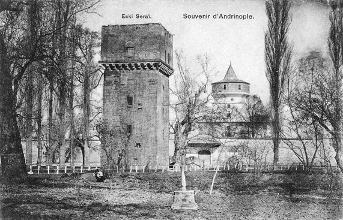
Edirne Eski Saray kalıntılarını gösteren tarihî bir kartpostal
Osmanlı kaynaklarında yaygın olarak kullanılan ‘cariye’ kelimesinin ilk kez Sultan I. Murad zamanında geçtiğini görüyoruz. Bu kelimenin Türkçesi ‘karavaş’ kelimesi Orhan Gazi; ‘cariye/halayık’ karşılığı olan Türkçe ‘kırnak’ ise Çelebi Mehmed devrinde geçmektedir.
Geldi her yerden ona çok sîm üz zer
Kul, karavaş hoş latîf ü sîmber
(DTMÂO, 1949: 10/145)
Sultan Mehmed oğullarının en büyüğü Murad Çelebi’yi veliahd edip öldü. Beş oğlu vardı: Murad Çelebi, Mustafa Çelebi, Ahmed Çelebi, Yusuf Çelebi ve Mahmud Çelebi. Kamusunun [hepsinin] anaları ‘kırnak’tır. (BT, 1949: 61-62)
Murad Hüdavendigâr, şehzadesi Bayezid’in Germiyan beyinin kızı ile olan düğününe ünlü akıncı beylerinden Evrenos Gazi’yi de davet eder. Evrenos’un getirdiği düğün armağanları bütün yerli yabancı davetlilerin gözünü kamaştırır. Onun getirdiği hediyeler arasında yüz oğlan [ÂPT’de yüz kul] ve yüz güzel ‘cariye’ de bulunmaktadır. (ÂPT, 1949: 130; NT, 2008: 95)
Yıldırım Bayezid Laz’a [Sırbistan] hâkim olduğunda Sırp kralı Vılkoğlu, anası ağzından bir mektup yazarak çok armağanlarla birlikte elçi gönderip Bayezid’in tahta çıkışını kutladı. Güzel bir kız kardeşi vardı, Sultan Bayezid’e vermeyi vaad etmişti. Padişaha, “Karavaşını [cariyeni] şimdi al, varıp hizmetinde olsun.” dedi. Bayezid de kabul etti. Kızı gönderdiler. Maksat ne ise hâsıl oldu. Sultan Bayezid, işret ve sohbet etmeyi Laz [Sırp] kızından öğrendi. O zamana kadar Osmanlı soyunda asla işret ve sohbet yoktu. (ÂPT, 1949: 138; NT, 2008: 150-151)
Bayezid Han’ın Ertuğrul, Mustafa, Süleyman, Mehmed, İsa, Musa, Kasım adlarında yedi oğlu vardı. Bunların hepsi de ‘cariye’den idi (NT, 2008: 166). [Cariye kaydı dolayısıyla Neşrî’den aldığımız bu bilginin doğruluk yanı yoktur.]
Çelebi Mehmed, Emir Süleyman’ın tahta geçtiğini işitince elçi gönderip, “Babamız öldü ise ağabeyimiz sağ olsun. Ağabeyim bize baba yerinedir.” dedi. İki iyi at gönderdi. Emir Süleyman bu armağanları kabul etti. Kendisi de kardeşi Mehmed’e bir nice oğlan ve cariye gönderdi. (ÂPT, 1949: 146; NT, 2008: 167)
Sultan Murad uçları bahadır beylere vermişti. Laz ucunu da İshak Bey’e emanet etmişti. İshak Bey ne vakit akın etmek istese Semendire tekfuru Vılkoğlu duyup el altından kâfirlere bildirirmiş. Bu sebepten İshak Bey’e çok ganimet çıkmazdı. İshak Bey bu olaydan haberi olunca Vılkoğlu’nun yaptıklarını Sultan Murad’a bildirdi. Bunun üzerine hünkâr Vılkoğlu’na her ne vermiş ise alıp yine kullarına verdi.
Vılkoğlu, Sultan Murad’ın kendisine verdiklerini geri aldığını duyup niyetini öğrenince hemen elçi gönderdi ve “Devletlü sultanım! Kızımı cariyeliğe kabul eylesin. Dedeniz Yıldırım Bayezid de bizden kız almıştı.” dedi. Elçisiyle padişaha çok armağanlar yolladı. Ve paşalara da ayrı ayrı hediyeler gönderdi. Paşalar padişahı razı ettiler. Murad, Alacahisar’dan vilayetine kadar olan yerleri Vılkoğlu’na verdi, ama kendi vilayeti için her yıl haraç vermesini de şart koştu. (ÂPT, 1949: 172; NT, 2008: 277-278)
Sivricehisar’ı fethettiler [859/1455]. Hak Teala gazilere ganimet malı ihsan etti. Beş on bin esir ellerine girdi. Sultan Mehmed’e haber oldu. Âlemin padişahının kalbi münevver olup, şad oldu. O ganimetten hâsıl olan esirleri, her ne ki var ise hepsini İslam askerine ve beylere, derecelerine göre güzel oğlanlar ve güzel cariyeler ihsan etti. (FSM, 1955: 84-85)
İç oğlanları
Üçüncü Osmanlı padişahı I. Murad döneminden itibaren savaşlarda alınan esirlerin beşte biri (pencik/penc-yek) devletin payına ayrılırdı. Bunlar, acemi ocağında toplanır veya bir iki yıllığına Anadolu’da Türk ailelerin yanlarına gönderilirlerdi. Gerek acemi ocağında gerekse ailelerde bu çocuklara Türkçe öğretilir ve İslam terbiyesi verilirdi. Bunların bir kısmı türlü devlet hizmetleri için (siyaset ve devlet adamı, asker ve bürokrat) yetiştirilmek üzere saraya alınırdı. Saraya alınacakların seçimi, yeteneklerine ve fizikî özelliklerine göre titizlikle yapılırdı. Görülebildiği kadarıyla Osmanlı tarihinde ‘iç oğlanı’ tabiri ilk kez Yıldırım Bayezid döneminde geçmektedir.
Kara Halil oğlu Ali Paşa vezir oldu, zevk ve eğlence ziyade oldu. Mahbup [güzel] oğlanları yanına aldı. Adını ‘iç oğlanı’ koydu. Bir nice zaman ne gerekse eder. Sonra çıkarıp mansıp [makam, görev] verir oldular. Eskiden aileler var idi. Cümle mansıp onların idi. Azl edip başka birine vermezlerdi. Eğer bir sipahi ölse mansıbını [görevini] oğluna verirlerdi. Ve eğer oğlu kalmasa, kızı veya avratı kalsa zelil olmasınlar [hor görülmesinler, güç durumda kalmasınlar] diye onları bir kula verirlerdi. O ölenin tımarını bile verirlerdi. İç oğlanına rağbet etmek Vezir Ali Paşa’dan kaldı. (AOK, 2000: 38-39)
Hünkâr [II. Murad] bir gün, “Kocacık Hisarı’na sefer edelim.” dedi. İsa Bey’i önceden gönderip, “Allah’ın yardımı ile git akıncıları doyum eyle!” dedi. İsa Bey de yürüyüp Arnavut’un kenar illerine girerek akın edip at koşturdular. Kâfirler bu olanlardan habersiz değillermiş, hazır imişler, bütün yolları tutmuşlar.
Arnavut Beyi’nin İskender adında bir oğlu var idi. Bu aslında hünkârın ‘iç oğlanı’ idi. Hünkâr, Arnavut vilayetini ona tımar olarak vermişti. Sonra hünkâra asi olup kaçtı. İsa Bey’in gönderdiği akıncıların yolunu İskender bağlamıştı. Gaziler kâfirlerin yollarını bağlamış olduklarını gördüler. Gaziler önce esirlerine kılıç koydular. Sonra kâfirleri o kadar kırdılar ki, kılıçların yüzleri körleşti, oklar tükendi. Her ne kadar hayli gazi şehit oldu ise de çok vilayet de fethedildi. (ÂPT, 1949: 178; NT, 2008: 286)
Bu sonuncu örnekte, saraya alınarak yönetici olmuş (mesela Arnavut beyi/valisi gibi) bir ‘iç oğlanı’nın efendisine yani dönemin padişahı II. Murad’a karşı ihanetini ve isyanını görmekteyiz. Ancak bu örnekten yola çıkarak, saraya alınıp yetiştirilen ve devletin en üst makamlarına (vezir/veziriazam) getirilen bütün iç oğlanların devlete karşı baş kaldırdığı gibi genel bir hükme de varılmamalıdır. Çünkü Osmanlı Devleti’nde bu tür isyanlar ender görülür.
… Cuma gecesi vezirler ve kazaskerler, Sultan Mehmed’in [Fatih] cesedini İstanbul’a getirdiler. Ben [Cihânnümâ yazarı Neşrî], o seferde birlikte idim. Sahib-ayar [sâhib-i ayar: Darphanede basılan paranın ayarından sorumlu kişi] çadırına yakın idik. Sahib-ayar gece yarısında gelip beni de uyandırdı ve “Kalkın, atınızı eyerleyin.” dedi. Kalkıp geldik. Bir de gördük ki, paşaların ve kazaskerlerin çadırlarının yerinde yeller esiyordu. İşte o zaman can başımıza sıçradı. Tenha bir yoldan Üsküdar’a hareket ettik, ama hünkârın hayatından ve ölümünden şüphemiz vardı. Cuma günü kuşluk vaktinde bir çayırda yemek yemek için konduk. Tam bu anda gittiğimiz yoldan ardımızca bir kişi geldi. Ona durumu sorduk. O da bize gerçeği söyledi. Sonra Üsküdar’a geldik. Gördük ki, bütün yeniçeri ve iç oğlanları tozlara boğulmuş olarak gelip Üsküdar’a döküldüler. Sultan Mehmed’in cesedini sabah olunca İstanbul’a götürdüler. (NT, 2008: 369)
Hadım ağaları
Hadım ağası (Kızlar ağası, Harem ağası veya Darüssaade ağası da denir), Osmanlı sarayının en yüksek rütbeli ve en nüfuzlu görevlilerinden biri olup padişah ailesinin oturduğu Harem Dairesi’den sorumludur.
Kızlar ağası, saraya alınan önceden hadım edilmiş / enenmiş yani kısırlaştırılmış erkek köleler arasından seçilirdi. Bu saray görevlileri, gerektiğinde padişahın huzuruna çekinmeden çıkabilirlerdi. Harem’e yeni cariyelerin alınması, haremdeki nikâh, sünnet düğünü ve doğum törenlerinin düzenlenmesi en önemli görevleri arasındadır. Aşağıdaki metinde görüldüğü gibi saraya gelin gelecek kızı istemeye giden heyette hadım ağaları da bulunmaktadır. Bu ağaların, özellikle 17. yüzyılda nüfuzları çok artar. Padişaha olan yakınlıkları nedeniyle protokoldeki yerleri zamanla Kapı ağasının da üzerine çıkar. Osmanlı yönetiminde, II. Murad zamanından itibaren vezirlik makamına gelen çok sayıda ‘Hadım Paşa’ bulunmaktadır (mesela bu dönemde Hadım Şehabeddin Paşa). Osmanlı tarih kaynaklarında ‘hadım’ tabiri ilk kez bu padişah döneminde geçmektedir:
Sultan Murad kendisi İsfendiyar’ın kızını almak için Bursa’da düğün hazırlığını gördü. Bütün düğün eşyası hazır olunca Çaşnigirbaşı Elvan Bey’i ve kapı kullarından hayli kişiyi gelin almaya gönderdi. Bunlarla birlikte Şerefeddin Paşa ve Reyhan Paşa adlarındaki iki ‘hadım’ da gitti. Ve hatunlardan Halil Paşa hatunu, Sultan Mehmed’in dadısı Dadı Hatun, Halil Paşa’nın anası Meliç Bolay, Germiyanoğlu Yakup Bey’in hatunu Kirece, ki padişah ona ‘Şah Ana’ derdi, daha bunun gibi nice hatunlar dünürcü olarak İsfendiyar’a gittiler. Bu düğün, 828 (1424/25) yılında idi. (ÂPT, 1949: 164; NT, 2008: 265-266; krş. OBT, 2008: 56; AOK, 2000: 75)
Padişah [II. Murad]: “Tedariki ne ise edin” dedi. Üsküp’ten İshak Bey’in hatununu gönderdiler. Kapıdan [devlet eşiğinden] Hadım Reyhan Ağa’yı ve Özbek Ağa’yı gönderdiler. Bunlar hayli adam ile birlikte Üsküp’e vardılar. Oradan, doğru Semendire’ye gittiler. Birkaç günlük yol kalınca Vılkoğlu kâfir beylerinin hatunlarını konukları karşılamaya gönderdi. Acayip konukluklar etti. (ÂPT, 1949: 176; NT, 2008: 283-284)
Sefer dönüşünde yeniçeriler saf tutarak Sultan Mehmed’e [Fatih] karşı durup bahşiş istediler. Padişah, yeniçerilerin bu hareketlerine incindi, fakat açığa vurmadı. Turhan Bey ve Hadım Şehabeddin Paşa padişaha, yeniçerilerin bir şeyler istediklerini bildirdiler. Padişah da on kese akça verilmesini emretti. Birkaç gün sonra, bu olayın sorumlusu olarak gördüğü yeniçeri ağası Kazancı Doğan’ı huzuruna getirtti. Güzelce dayak attırıp azletti. Yeniçeri ağalığını Mustafa Bey’e verdi. Padişah yayabaşılarına da aynı şekilde dayak attırdı. (NT, 2008: 308-309)
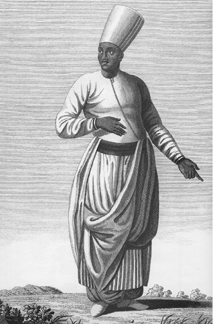
Harem ağası, Mouradgea D O’hsson
Çaşnigirbaşı
Osmanlı saray mutfağındaki önemli görevlilerden biri de çaşnigirlerdir. ‘Çaşnigir’ sofra hizmetlerini görenler hakkında kullanılan bir tabirdir. Bir kısmı padişahın yemeklerini hazırlar, bir kısmı da saray mutfağında pişen yemeklerin dağıtımını yapardı. Çaşnigirlik görevine has oda ile hazine ve kiler odalarında hizmet eden iç oğlanları gelirdi. Çaşnigirlerin derecelerine göre yevmiyeleri vardı. Çaşnigirlerin başındaki görevliye ‘çaşnigirbaşı’ denilirdi. Divanıhümayun toplantılarında çaşnigirbaşı çaşnigirlerin yemek dağıtımına nezaret ederdi. (Pakalın, 1971: I, 330-331)
Osmanlılarda ‘çaşnigirbaşı’ tabiri ilk kez Şehzade Bayezid’in Germiyan Beyi’nin kızı ile olan evliliği dolayısıyla geçmektedir. Bursa Sarayı’ndan Kütahya Sarayı’na gelini almaya giden dünürcü heyeti, burada yapılan düğünden sonra gelini alıp Bursa’ya hareket ederler. Germiyan Beyi kendi çaşnigirbaşısı Paşacık Ağa’yı kızının bindiği atı (gelin atı) yetmekle görevlendirir. Gelini Bursa’ya getirirler. Şehzade Bayezid, Çaşnigirbaşı Paşacık Ağa’yı bırakmaz; onu kayınatasından isteyip kendisine çaşnigirbaşı edinir. Onun oğlu Evlan Bey ile çocukları ve torunları da çaşnigirbaşı olurlar. (ÂPT, 1949: 131; NT, 2008: 96)
Çaşnigirbaşı Elvan Bey, Çelebi Mehmed ve oğlu II. Murad’ın saltanatında ülkeye önemli hizmetlerde bulunmuştur. Çelebi Mehmed ölüm döşeğinde iken Amasya sancağında bulunan oğlu Murad’ı Edirne’ye getirmek için giden heyetin başında Çaşnigirbaşı Elvan Çelebi bulunmaktadır. (NT, 2008: 254; OBT, 2008: 53)
Emin
Sarayda değişik hizmetlerde kullanılan memurlara verilen unvandır. Saray hizmetlerinde dört emin vardı: Matbah-ı Âmire/Mutfak emini, Şehremini, arpaemini ve darphaneemini. Şehremini sonraları İstanbul Belediye Başkanlığına unvan olmuştur. Yeniçeri ocağında ‘emin’ unvanlı bir memur bulunduğu gibi geçici işler için de bu unvanla adamlar yerleştirilirdi. Arapçada emin güvenilir anlamına gelir. (Pakalın, 1971: I, 525)
Bütün Aydın-ili feth olup hutbe ve sikke Sultan Murad adına olup, kadılar ve eminler gönderip, zapt ettiler. (NT, 2008: 269, dipnot 3369)
Padişah [II. Bayezid] buyurdu: Eminler şehre girip kaleden çıkacak esirleri çıkardılar. Padişah, bunların nicelerini bağışladı, nicelerini İstanbul’a sürdü. Bazısını da Anadolu’da Eski Biga’ya gönderdi. Kiliselerini yıkıp mescit yaptılar. Sultan Bayezid, sürgün edilen kâfirlerin evlerini gazilere verdi. Askerle gelmiş olan Deşt hanına ve askerine de çok ihsanlarda bulundu.
Ve bir olay da Kostantiniye şehrinde oldu, 6 Cemaziyelevvel 907 Çarşamba günü (17.11.1501 Çarşamba). Galata karşısında bir burgozda [hisarda] güherçile vardı. O sırada gemiler için güherçileye ihtiyaç oldu. Vezir Mesih Paşa, Galata kadısı ve emini yardımcılarıyla birlikte güherçile çıkarmaya gittiler. Birden gökyüzünde bir bulut belirdi. O gece Çarşamba gecesi idi, gayet yağmur yağıp, şimşekler oynayıp, yıldırımlar şakıyıp, bir gök gürültüsü kopup yıldırım inip, güherçile olan burgoza inip vurdu. (OBT, 2008: 214)
Haseki
Osmanlı saray teşkilatında saraydaki bir kısım görevliler hakkında kullanılır bir tabirdir. Hasekiler, solaklar gibi padişahın maiyetinde giderlerdi. Padişah hanımlarının en gözde olanlarına da ‘haseki’ denirdi.
Kosova Savaşı’nda (1389) kâfirlerin bayrakları baş aşağı olup orduları yüz çevirdi. Bozuldular. Müslümanlar onların ardına düştü. Gazi Şah [Murad Hüdavendigâr] birkaç ‘haseki’ ile tepe üzerinde durdu ki düşmanın ardınca giden gaziler dönüp kendisi ile buluşsunlar diye. Meğer bir kâfir yaralanmış, kanlar içinde kendini ölüler arasında gizlemiş imiş. Yerinden kalktı. Düşe kalka Murad Gazi’ye doğru geldi. Çavuşlar onu bırakmadılar. Gazi Padişah bir iş için gelmektedir, bir dileği vardır sandı. Çavuşa bıraktırdı. Kâfir ilerleyip padişaha bıçakla vurdu. O anda orada şehitlik rütbesine erişti. (BT, 1949: 56)
Kâfir ordusu yenildi. Sayılamayacak kadar çok kâfir kılıçtan geçirildi. Kurtulup kaçanları da gaziler arkalarından giderek yakalayıp kırdılar. Murad Han Gazi, Allah’tan kendisinin şehit olmasını dilemişti. Kâfir yenilince kendisinde hiç şehitlik izi belirmedi, şaşırmış olarak birkaç hasekiler ile geldi. Bu üst üste yığılmış ölüleri bir tepeden seyrederken, bir kâfir [Miloş Kopile/Miloş Kobiloviç] vardı, gayet cesur ve yiğit bir melun idi. Meğer Laz’la konuşurken, “Ben varayım, Türk’ün beyini öldüreyim.” diye iddia ederek, yeninde bir hançer saklamış. Bu kâfir bu maksatla gelirken, gazilere rastladı, gaziler bunu yaraladılar. Bu kâfir de yaralı ve kana bulanmış olarak, kendisini ölüler arasında gizlemiş.
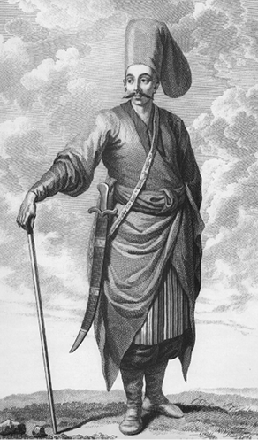
Haseki Ağa, D O’hsson
Gazi Murad Han, bu kâfirin üzerine gelince kâfir de düşe kalka, hünkâra yöneldi. Çavuşlar, engel olmak isteyince, Gazi Murad Han, “Bir isteği var olsa gerek, bırakın gelsin.” dedi. O melun yeninde hançer saklamıştı. Gelip hünkârın üzengisini öper gibi yaparak hünkârı hançerledi. Arapça sözde dendiği gibi “kazâ gelince göz görmez.” Eceli orada takdir edilmiş. (NT, 2008: 138)
Timur, çok büyük yeminler ederek eğer Sultan Mehmed gelecek olursa kendisinin ona hiçbir şekilde zararı ve ziyanı dokunmayacağına, onu bağrına basacağına, kızını verip güveyi [damat] edineceğine, kendisini yine memleketine göndereceğine Yıldırım’ı inandırdı. Birbirlerinin sözlerine inanmış olarak her biri sultana ayrı ayrı mektup yazdı. Timur’un Hoca Mehmed adlı ulu bir adamı vardı, mektupları onun eline verdiler. İyi hilatlar ile sultanı davet etmeye gönderdiler.
Hoca Mehmed, Timur’un ve Yıldırım’ın mektuplarını alıp hesaba gelmez mal ve hazine ile yola koyuldu. Günlerden bir gün Sultan Çelebi Mehmed’in yanına vardı. Sultana, “Babandan ve Timur’dan elçi gelir.” diye müjdeci yetişti. Bunu işiten Çelebi Mehmed, sevinip güldü ve hasekilerine, “Çabuk davranın, elçiyi karşılayın.” diye emretti. (NT, 2008: 190)
Rikâpdar
Rikâpdar/rikâbdâr: Arapça bir kelime olan rikâb, üzengi demektir. Rikâbdâr ise üzengi tutan anlamındadır. Padişahın atla bir yere gidişi sırasında üzengiyi tutarak ata güvenli şekilde binmesine ve inmesine yardımcı olan görevli. (Pakalın, 1971: III, 44)
Ertuğrul, bir nice zaman anılan yerlerde yaylayıp kışladıktan sonra oradan ayrılıp Rum’a hareket etti. Ankara’ya yakın Karacadağ’a geldi. Oradan Sultan Öyüğü’ne göç etti. Güvenilir kişilerden işittim. Orhan Gazi zamanının önde gelen din ulularından Mevlana Ayas, “Orhan’ın rikâpdarı ile buluşup tanıştığını, Ertuğrul’un dört yüze yakın evle Rum’a geldiğini, babasından ve dedesinden işittiğini” bana söyledi. Ayas, bunları bana anlattığı sırada yaşlı bir kimse idi.” (NT, 2008: 32)
Saray’ın birimleri arasında yer alan ‘rikâpdarlık’ın Yıldırım Bayezid zamanında kurulduğu biliniyordu (Pakalın, III, 44). Eğer Neşrî’nin verdiği bu bilgi doğru ise bu kurum daha önce Orhan Gazi döneminde kurulmuştur.
Emiriahur
Emiriahur/Emîr-i âhûr: Sarayda at işlerine bakan görevlinin unvanıdır. Mirahur da denilir. Mirahur, ahır/ahur beyi demek olan ‘emîr-i âhûr’dan [emiriahur] bozmadır. Osmanlılarda ilk emiriahur veya mirahurluk I. Murad zamanında kurulmuştur. Hükümdarın sarayında bulunan atlara bakan seyislerin başında bulunan kimsedir. Emri altındaki hademeler atların eğitimi ve tavlaların bakımından sorumludur. (Pakalın, 1971: II, 540-541
Emîr-i âhûr başı (Emiriahurbaşı): Emiriahurların başındaki kişinin unvanıdır.
Osmanlılarda emiriahur unvanı, görüldüğü kadarıyla ilk kez II. Murad zamanında geçmektedir.
Mısır ve Şam askeri Rum’a gelip Anık Hisarı’nı harap ettikten sonra Erzincan ve Sivas üzerine yürüdü. Sonra dönüp Şam’a gitti. Mısır sultanı Pars Bey vefat etti. Oğlu yerine geçip Mısır sultanı oldu. Sonra Emiriahur Çakmak Pars Bey oğlunu tutup Mısır tahtına geçip sultan oldu. (NT, 2008: 288)
O vakit ki, Emiriahur Mezid Bey’in başına o işler geldi. Kula Şahin Rumeli Beylerbeyisi idi. Hünkâra [II. Murad] söyledi: “Sultanım! Yankodin [Hünyadi Yanoş] denilen martoloz kâfir, Mezid kuluna hayli iş etti, 845 (1441/42) yılında.” (NT, 2008: 290)
Bu taraftan padişahımız [II. Bayezid] Edirne’den göçtüğü vakit azaplar sancağı kalkdıktan sonra ilim tahsil edenlerden altmış yetmiş mikdarı kişi gazaya niyet deyip gaza niyetine bel bağlayıp, itikadla sancak kaldırıp ulufesiz [ücretsiz/maaşsız] fî sebîli’llâh [Allah yolunda] gaza deyip, askerle bile gidip, orada iç ile girdikleri vakit beçeneler cenginde Arnavud martolosları ahriyanlar, altın üsküf ve emîr-i âhûrî [emiriahuri] kaftanlarla Müslümanlar suretinde [giyinip] ilim tahsil eden Müslümanları sıcak dil ile iyi avlayıp, bunları iledip bir sarp bicenede sarplık yerlerde o melunlar bunları ortaya alıp cümlesini şehit ettiler. (OBT, 2008: 151, dipnot 821)
Çakırcıbaşı
Çakırcıbaşı: Osmanlı saray teşkilatında görevlilerden birinin unvanıdır. Çakırcıbaşının [kuşçu başı] protokoldeki yeri sarayın mirahurundan sonra gelirdi. Çakırcıbaşının ulufesi/maaşı yılda yüz altmış akça idi. Çakırcılar, hassa çakırcıları [çakırcıyan-ı hassa], şahinciyan, atmacıyan adıyla üçe ayrılırdı. Şahinciyanın başındaki görevli doğancıbaşı; atmacacıyanın başındakine ise atmacıbaşı unvanını taşırdı. Çakırcıbaşı, padişahın atının yanında yürüme ayrıcalığına sahip olan ‘üzengi ağaları’ da denilen ‘rikâp ağaları’ndan idi. (Pakalın, 1971: I, 322)
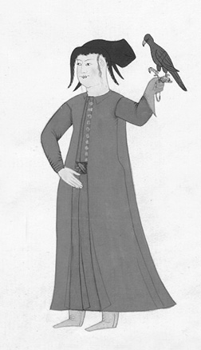
Doğancı, Costumes Turcs
Osmanlı kaynaklarında ‘çakırcıbaşı’ ilk kez Sultan II. Murad devrinde geçmektedir. Varna Seferi’ne (1444) katılan uç beyleri arasında Çakırcıbaşı Kasım Paşa denilen bir paşa da bulunmaktadır. Başına gelenler dolayısıyla adı daha fazla bilinen ise Fatih devrinde Niğbolu sancak beyi olan Çakırcıbaşı Hamza Bey’dir. Bu unvanı taşıyan görevlinin, ava düşkünlüğü ile bilinen I. Murad zamanında da bulunması sadece tahmin edilebilir.
Rumeli’nin uç beyleri İsa Bey ve İshak Bey, Ömer Bey, Turhan Bey, Evrenos Bey hazretleri, İsa Bey, Mihaloğlu Hamza Bey ve Çakırcıbaşı Kasım Paşa’dır. (OBT, 2008: 66, dipnot 389, Oruç’taki bu bilgi, Manisa yazmasında geçmektedir.)
Hünkâr [Fatih], Niğbolu sancak beyi Çakırcıbaşı Hamza Bey’i Eflakoğlu’na gönderdi. Tuna Nehri aşırı donmuştu. Hamza Bey, Tuna kıyısına varıp kondu. Bunlar bu tarafta gafil iken Drakulaoğlu Kazıklı Voyvoda [Wlad Çepeş] dedikleri melun, gece yarısı buzdan geçerek, Hamza Bey üzerine gece baskını yapıp hayli Müslüman’ı helak etti. Hamza Bey’i yakaladılar, Silistre beyi Yunus Bey’i şehit ettiler. Kâfirler bundan sonra birkaç yerden Tuna’yı geçip il vurdular, nice kötü işler ettiler.
Kazıklı Voyvoda, Hamza Bey’in başını kesip Ungurus Kralı’na gönderdi ve “Ben Türk ile düşman oldum, bilmiş ol.” dedi. Bu kâfirin, hünkâra düşman olduğunu böylece herkes öğrendi. (NT, 2008: 334)
Sultan Mehmed Eflak vilayetine sefer edip, Drakulaoğlu Kazıklı Voyvoda melunla savaştı. O melunun ettiği zulümleri hiçbir padişah etmemiştir, hiçbir tarihte görülmemiştir. Oğluyla ve kızıyla insanı kazığa vurmayı hiçbir kimse akıl etmemişken, o etmiştir. Drakula, Çakırcıbaşı Hamza Bey adlı sancak beyini hile ile yakalayıp bu denilenleri yaptı. (OBT, 2008: 116)
B. EĞİTİM VE BİLİM
1. Medreseler
Eğitim ve bilim kurumu olarak ‘medrese’ Osmanlı kaynaklarında ilk kez Orhan Gazi döneminde (1324-1362) geçmektedir. İlk medresenin İznik’in fethinden sonra (1331) burada kurulduğu kabul gören yaygın bir görüştür. İznik medresesinin akademik bir kurum niteliği taşıdığı açıktır. Çünkü, bu kurumun başına o dönemin çok iyi yetişmiş ünlü âlimlerinden biri (Davud-ı Kayserî/Kayserili Davud) getirilmiştir. Dolayısıyla Osmanlılarda bilim geleneği İznik medresesinin hizmete girmesiyle başlar. Bu ilk medrese ve daha sonra kurulan medreselerde, İslamî ilimler de dâhil olmak üzere ne tür derslerin okutulduğu hakkında 15. yüzyıl Osmanlı tarih kaynaklarında herhangi bir bilgiye rastlanmaz. Ancak kesin olarak bildiğimiz bir şey varsa o da, padişahların dinî ve sosyal kurumlar gibi eğitim kurumları açma hususunda da âdeta birbirleriyle yarış içerisinde olduklarıdır. Aşağıda verilen metinlerin çoğunda medrese, imaret/aşevi ve cami sözcükleri bir arada geçmektedir. Bundan, söz konusu kurumların bir külliye teşkil ettikleri anlaşılmaktadır. Bazı padişahların bunlara sağlık kurumu olarak hastahaneyi de eklediklerini görüyoruz.
Yeni fethedilen bir yerde oraya gelip yerleşen Müslüman ahalinin dinî, eğitim ve sosyal (cami, mescit, medrese, imaret) ihtiyaçlarını karşılamak için mevcut kiliselerden yeteri kadarı bu hizmetlere tahsis edilirdi.
Medrese kurulması ile ilgili metinler:
Orhan Gazi, oğlu Süleyman Paşa’yı İznikmid’e [İzmit] getirdi. Kiliseleri mescitler etti [yaptı]. Ve bir kiliseyi dahi medrese etti. Elan şimdi dahi medresesi vardır. (ÂPT, 1949: 117)
Orhan, oğlu Süleyman Paşa’yı İznikmid’de koyup, kiliselerini mescitler etti. Büyük bir kiliseyi medrese yaptı, elan dahi medresedir. (NT, 2008: 72)
Orhan Gazi kendisi gelip İznikümid’i [İzmit’i] fethetti. Kiliselerini yıktı, yerine mescitler ve medreseler yaptı. Şimdi henüz İzmit’te medresesi vardır. Bir de imaret [aşevi] yaptı. Fakirler her gün gelip imarette yemek yerlerdi. Muhabbet ettiği dervişlere zaviyeler yapıverdi. (OBT, 2008: 16)
Orhan Gazi İznik’i fethedince [1331] buradaki büyük kiliseyi cuma mescidi, bir manastırı medrese, Yenişehir kapısı çıkışında bir imaret yaptı. Medresenin müderrisliğine, âlim bir kişi olan, Dâvûd-ı Kayserî’yi [Kayserili Davud’u] tayin etti. Ondan sonra bu görevi Kürt Taceddin’e verdi. Taceddin, Konya’da Siraceddin’in öğrencisiydi. Hatipliği ise Kara Hoca’ya verdi. (ÂPT, 1949: 119-120; NT, 2008: 76)
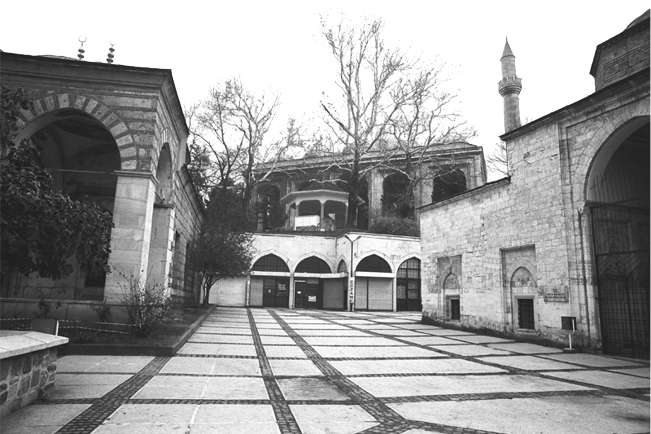
Bursa’da Yıldırım Bayezid tarafından yaptırılan medrese (sağda),
cami (ortada) ve türbesi (sol tarafta)
Orhan Gazi, biri Bursa’da biri de İznik’te olmak üzere iki imaret yaptı. Bursa’daki manastırı medreseye çevirdi. (NT, 2008: 86)
Murad Gazi, Bilecik’te bir cuma mescidi, Bursa Hisarı’nda Saray kapısında bir cami, Kaplıca’da bir imaret ve bir medrese yaptı. (NT, 2008: 94, dipnot 1153)
Bursa’da Kaplıca İmareti’ni yaptı. Hem imaret, hem cami, hem de medresedir. (NT, 2008: 140)
Murad Gazi Bilecik’te bir büyük cuma mescidi yaptı. Ve Bursa’da bir cuma mescidi ile bir medrese yaptı. (OBT, 2008: 26)
Yıldırım Bayezid Han, Bursa’da bir ulu cami, büyük bir imaret, iki medrese, bir hastahane yaptırdı. (NT, 2008: 165)
Yıldırım Bayezid Bursa’da oturdu. Bir cami, bir medrese ve bir bîmârhâne [hastahane] yaptırdı. (OBT, 2008: 31)
Çelebi Mehmed, Bursa’da misli hiçbir yerde görülmemiş büyük bir imaret yaptırdı. İmaret bitince yanına bir de yüksek medrese yaptırdı. (NT, 2008: 254)
Sultan Murad Gazi … saltanat merkezi Bursa’da bir imaret ve büyük bir cami yaptı. … Caminin yanında bir medrese yaptırdı. İkisinin arasına asil vücudu şeref bulsun diye bir yüksek kubbe yapılmasını da buyurdu. O kubbede gece gündüz hiçbir saat Kur’ân okumaktan geri kalmamaları emrolundu.
Edirne’de de büyük bir cami, fakirler evi, büyük bir imaret, darülhadis, bir medrese ve Mevlevihane yaptırdı. Bu camiye de ilk şart üzere devam etsinler diye otuz hafız ve on dört tehlilci buyurdu. (NT, 2008: 305, dipnot 3758-3759)
Sultan Mehmed [Fatih] İstanbul’un güzel bir yerinde sahn-ı seman [sekiz medrese], ortasında ulu bir cami, karşısında yüksek bir imaret, bir darüşşifa [hastahane], suhteler [medrese talebeleri] için ek bina; sofilerin duracağı ziyarethaneler yaptı. Medreselerin ve talebelerin aşını, ekmeğini, etini imaretten karşıladı. Bu, ‘biri bine karşılık’ bir imarettir.
Şehrin dışında, Ebu Eyyüp Ensari’de bir imaret, bir medrese, bir cami ve bir hamam yaptı. Ayrıca Ebu Eyyüp Ensari üzerine bir türbe yaptırdı. Dünyada benzerini hiç kimsenin görmediği nice hamamlar yaptı. (NT, 2008: 315-316)
Sultan Bayezid, kara yoluyla Edirne’ye vardı. Âlimler ve fakirler için Tunca Nehri kıyısında Allah yolunda bir imaret, darüşşifa [hastahane] ve bir medresenin temelini kendi eliyle mübarek bir saatte [kutlu bir zamanda] attı. Bu arada fakirlere nice kurbanlar dağıttılar. (NT, 2008: 376)
Sultan Bayezid, 10 Zilkade 893 yılı Cumartesi günü (16.10.1488 Perşembe) Edirne’de yaptırdığı yeni imareti ve darüşşifayı [hastahane] hizmete açtı. Bu açılışta ulemâ [âlimler], gani/zengin ve fakir, bay/zengin ve yoksul, hazır bulundu. İmareti yapan zamanın meşhur mühendisi Rüstem Çelebi idi. İmaret, bîmârhâne [hastahane] ve medrese aynı gün hizmete girdi. (OBT, 2008: 140)
2. İlim adamları, dervişler, şeyhler
- Osman Gazi’den II. Bayezid’e -
Osman Gazi Dönemi
Osman Gazi zamanında ilim adamlarından Tursun Fakı/Fakih ve Osman’ın kayınbabası Edebalı vardı. Şeyhlerden Âşık Paşa’nın babası Muhlis ve Ahi Hasan vardı. (NT, 2008: 388)
Orhan Gazi Dönemi
Orhan zamanında ilim adamlarından Kayserili Davud, Kürt Taceddin ve Kara Hoca vardı. Dervişlerden (abdallardan) Geyikli Baba, Âşık Paşa, Ahmed ve Ahi Evren vardı. Bunlar, duaları kabul olunmuş dervişler idi. (NT, 2008: 388)
Geyikli Baba
Orhan Gazi, Bursa’ya gelince burada bir imaret yaptırdı. Dervişleri denetlemeye başladı. İnegöl yöresinde Keşiş Dağı [Uludağ] eteğinde bir nice dervişler gelip yerleşmişlerdi. Ama içlerinde bir derviş vardı ki, dağa gidip geyicüklerle [geyiklerle] yürürdü. Turgut Alp, o dervişi sevmişti, daima onunla sohbet ederdi. Turgut Alp, o vakit gayet yaşlanmıştı. Orhan Gazi’nin dervişleri denetlediğini işitince adam gönderip, “Benim köylerim çevresine bir nice dervişler gelip yurt tutmuşlardır. İçlerinde bir derviş var ki, geyiklerle arkadaşlık eder, geyiklerden hiçbiri ondan kaçmaz. Hayli mübarek kişidir.” dedi.
Orhan Gazi bunu işitince, “Kimin müritlerindendir, sorun.” dedi. Dervişin kendisine sordular. Derviş şöyle cevap verdi: “Baba İlyas müridiyim ve Seyit Ebulvefa yolundayım.” dedi. Bunu gelip Orhan Gazi’ye söylediler. Orhan Gazi de “Gidin, dervişi buraya getirin.” dedi.
Dervişi davet ettiler, ama gelmedi. Derviş, “Orhan Gazi, sakın ola, buraya gelip beni günaha sokmasın.” dedi. Bu haberi, Orhan Gazi’ye götürdüler.
Orhan Gazi yine adam gönderip, “Bizim, derviş hazreti ile buluşmak mutlaka gayemizdir. Niçin gelmez veya bizi oraya gelmeye niçin bırakmaz?” dedi. Derviş, “Dervişler gözcü olup, dua vaktini gözetip varırlar. İnşallah, vaktinde beyin [Orhan’ın] huzuruna vararak, dua ederiz.” diye cevap verdi.
Bunun üzerinden birkaç gün geçti. Bir gün, o derviş, bir kavak ağacını omuzuna alıp götürüp Bursa Hisarı’nda Bey Sarayı avlusunun iç yanına, bu kavağı dikmeye başladı. “O derviş geldi, bir kavak ağacı dikiyor.” diye çabucak Orhan’a haber verdiler.
Orhan geldi, ağacın tamamıyla dikilmiş olduğunu gördü. Orhan Gazi daha sormadan, derviş, “Bu bizim kutlamamızdır. Dervişlerin duası, senin ve neslin için oldukça makbuldür.” diyerek dua etti. Ama durmayıp yine dönüp gitti. O kavak ağacının şimdi dahi [15. yüzyılın sonları] izleri vardır. Saray kapısının iç yanındadır, gayet gür, ulu ağaç olmuştur. Padişahlar o ağacı tımar edip [bakımını yapıp], daima kurusunu giderirler.
Orhan Gazi sonra o dervişin mekânına giderek, “Dede! Bu İnegöl’ün yöresi senin olsun.” dedi.
Derviş: “Ey Han! Allah, bu mülkü ve malı ehline verir. Biz bunların ehli değiliz. Allah, mülkü sizin gibi padişahlara, malı da muamele ehline verir.” dedi.
Orhan Gazi ısrar ederek: “Derviş, sözümü kabul eyle.” dedi.
Derviş: “Padişahsın, senin sözün geri çevrilmesin. Şu karşıda duran tepecikten beri olan yerceğiz, dervişlerin avlusu olsun.” dedi. Orhan Gazi bu isteği kabul etti ve dervişin duasını alıp gitti.
Derviş vefat edince Orhan Gazi, üzerine türbe, yanına bir tekke ve bir de cami yaptı. Şimdiki zamanda orada beş vakit namaz kılınır. Geyikli Baba Zaviyesi derler. (ÂPT, 1949: 122-123; NT, 2008: 78-80)
Orhan Gazi zamanında abdallardan [dervişlerden] Geyiklü Baba vardı, er kişiydi. Orhan Gazi’ye Geyikli Baba’yı bir türlü anlattılar, mey-perest [şarabı çok sever] diye. Orhan Gazi de denemek için Geyikli Baba’ya iki tulum şarap gönderdi, Geyikli Baba içsin diye. İki tulum şarabı getirdiler, Geyikli Baba’nın önüne koydular ve “Baba, bunu padişah gönderdi.” dediler. Geyikli Baba hemen o iki tulum şarabı iki kazgana [kazana] koyup, birinde zerde [tatlı] birinde helva pişirdi. İki kutuya koydu. Sonra bir kutunun içine de atılmış pamuk koydı. Pamuk arasına yanmış kızıl kor koydu. Ağzını mühürleyip Orhan Gazi’ye gönderdi. Orhan’a kutuyu getirdiler. Orhan Gazi mühürleri söktü; birinde helva birinde zerde. Birini de açıp gördü ki atılmış pamuk içinde bir parça kızıl kor, hiç pamuğa etki etmemiş. Götürdükleri şarapları dervişin kazana koyup zerde ve helva pişirdiğini Orhan Gazi’ye anlattılar. Hemen Geyikli Baba’ya itikat edip [kerametine inanıp], çok nesne verdi. Büyük bir tekke yaptı ve tekke için vakıflar kurdu. Şimdiki zamanda Geyikli Baba Tekkesi diye anılır. (OBT, 2008: 17)
Murad Hüdavendigâr Dönemi
Orhan zamanındaki dervişlerin bazısı bu padişah devrinde de vardı. Gazi Hünkâr zamanında ilim adamlarından Koca Efendi’nin oğlundan torunu Rumlu Kadızade vardı. Bu ilim adamı, Acem ülkesinde Kadızade-i Rumî demekle meşhurdur. Dervişlerden Abdal Musa, Abdal Murad, Muhammed Küşterî ve Baba Postinpuş vardı. Her biri kerameti görülmüş dervişlerdi. (NT, 2008: 388)
Yıldırım Bayezid Dönemi
Bu padişah zamanında ulemadan Mevlana Şemseddin Fenarî, İznikli Mevlana Kutbeddin, Şirazlı Şeyh Yar Ali, Şirazlı Şeyh Cezerî vardı. Şeyhlerden Şeyh Hamid ve Mudurnulu Şeyh Fahreddin Efendi vardı. Bunlar da duaları kabul olunmuş dervişler idi. (NT, 2008: 388)
Çelebi Mehmed Dönemi
Babası Yıldırım Bayezid zamanındaki dervişlerin bazısı bu padişah devrinde hayatta idi. İlim adamlarından Mevlana Haydar Herevî, Mevlana Fahreddin ve Buharalı Seyit Mehmed vardı. Bunlar Acem’den gelmişlerdi. Mevlana Mehmed Bezzazî de Acem’den geldi. Rum’dan Şeyh Hacı Bayram çıktı. Bunlar da kerametleri görülmüş dervişler idi. (NT, 2008: 388)
Murad Gazi Dönemi
Çelebi Mehmed devrindeki dervişlerin bazısı bu zamanda hayatta idi. İlim adamlarından Kırımlı Mevlana Şerefeddin ile Mevlana Güranî vardı. Güranî, Mısır’da eğitim görüp geldi. Alâ er-Rumi-i Bahhas vardı. Acem’den Mevlana Tusî geldi. Şeyhlerden Ak Şemseddin ve Akbıyık vardı. Amasya’da Gümüşlü oğlu Mevlana İlyas, İznik’te Kutbeddin oğlu vardı. Bunlar da duaları kabul olunmuş dervişler idi. İlim adamlarından Hızır Şah Efendi ortaya çıktı. (NT, 2008: 389)
Fatih Sultan Mehmed Dönemi
Babası Murad Gazi zamanındaki dervişlerin bazısı bu padişah devrinde de hayatta idi. Padişahlığının başlangıcında Mevlana Yegan, Mevlana Muhammed Husrevî, Mevlana Mehmed Zeyrek ve Hocazade ortaya çıktı.
Sultan Mehmed’in ilim adamlarına rağbeti fazla olduğundan, saltanatının ortalarında ve sonunda çok sayıda yeni ilim adamları görüldü. Bunların herbiri zamanın emsalsizi ve yüzyılın tekidir. Mesela, Molla Hatipzade, Mevlana Arap, Sinan Paşa, Kestelli, Efdaleddinzade, Hacı Hasanoğlu, Samsunlu Husamzade, Mevlana Şemseddin’in torunundan Hasan Çelebi, Mevlana Abdulkerim, Fenarîoğlu Ali Çelebi, Kastamonu kadısıoğlu ve de bunlara çağdaş nice ilim adamları ortaya çıktı. (NT, 2008: 389)
Sultan II. Bayezid Dönemi
Babası Sultan Mehmed zamanındaki ilim ve sanat adamlarının çoğu bu padişah zamanında da vardı. Şeyhlerden Şeyh Abdüllatif Makdisî, Ebulvefaoğlu Şeyh, Taceddin Halife, Hacı Halife ve Halvetilerden Mevlana Alaaddin Abdal vardı. Bunlar da keramet sahibi kişilerdir.
Sultan Bayezid zamanında ilim adamlarından ilk belirmiş olanlar fazıllardır. Şeyhlerden iki kişi ortaya çıktı, biri İskilipli Şeyh Muhyiddin, diğeri de Şeyhülümmi’dir. (NT, 2008: 390)
3. Astronomi
Ay tutulması
Hicri / Miladi Açıklama
834/1430-31: Bu yılda husûf-ı küllî [ay tutulması] oldu. (NT, 2008: 280)
15 Cemaziyelevvel 902/19.01.1497 gecesi: Ay tutuldu. (OBT, 2008: 171)
14 Rebiülahir 908 Pazar gecesi/17.10.1502 Pazartesi: Ay tutuldu. (OBT, 2008: 219)
Güneş tutulması
439/1047-48 : Güneşin tam tutulması. (Takvimler, 1961: 79)
441/1049: Güneşin tutulması. (Takvimler, 1961: 116)
759/1357-58 : Güneş küllî [tam] tutuldu. Karanlık olup yıldızlar göründü. (Takvimler, 1984: 45)
760/1358-59: Güneşin tam tutulması. (Takvimler, 1961: 54, 121)
761/1359-60: Bu yıl içinde güneş küllî [tam] tutuldu. Bütün yıldızlar göründü. Edirne de bu yıl fethedildi. (OBT, 2008: 24)
762/1360-61: Güneş küllî [tam] tutulup karanlık oldu. Bütün yıldızlar gece gibi göründü. (Takvimler, 1984: 13, 73; 1961: 23, 54)
763/1361-62: Güneş küllî [tam] tutuldu. Âlem karanlık oldu. (OBT, 2008: 24, dipnot 156)
766/1388-89: Gün tamamen tutuldu. Yıldızlar göründü. (Takvimler, 1961: 69)
834/1430-31: Gün [güneş] tam tutulup, çok karanlık olup, yıldızlar göründü. (NT, 2008: 280)
25 Rebiülevvel 835 Çarşamba/19.11.1433 Çarşamba: İkindi vaktinde güneş tutuldu. Âlem tamamıyla karanlık olup, yıldızlar göründü. (OBT, 2008: 58)
836/1432-33 : Gün tamam tutuldu. (Takvimler, 1961: 105, 123); ikindi vakti gün tutuldu. Tamam gece gibi oldu, 836 yılında. (AOK, 2000: 76)
İkindi ile akşam arasında gün tutuldu. Âlem karanlık olup yıldız göründü. (Yıllıklar, 1980/81: 87)
29 Ramazan 864 Cuma/18.07.1460 Cuma: Sabah vaktinde gün [güneş] tutuldu. (OBT, 2008: 115); 29 Ramazan 864 yılında sabah vaktinde gün tutuldu. (AOK, 2000: 125)
883/1479: Sultan Mehmed İskenderiye üzerine varıp savaş edip, toplar ve tüfekler atılıp hisarın bir tarafını yıkıp hisara hücum ettiler. İskenderiye üzerinde iken zuhur vaktinde günün yarısı tutuldu, 883 yılında. (AOK, 2000: 129-30)
29 Safer 890 Çarşamba/17.03.1485 Perşembe: İkindi ile akşam arasında gün [güneş] tutuldu. (OBT, 2008: 136; AOK, 2000: 131)
29 Rebiülevvel 908 Cumartesi/02.10.1502 Pazar: Kuşluk vaktinde gün [güneş] tutuldu. (OBT, 2008: 219)
Kuyruklu yıldız
762/1360-61 : Kuyruklu yıldız zuhur etti [doğdu]. (Takvimler, 1984: 73)
763/1361-62 : Kuyruklu yıldız doğdu. (OBT, 2008: 24, dipnot 156)
769 Recep ayının başları/1367-68: Garp tarafında kuyruklu yıldızın zuhuru [doğması] ve üç aya yakın kalması. (Takvimler, 1984: 73)
836/1433: Kuyruklu yıldız doğdu. (Takvimler, 1961: 105, 123; OBT, 2008: 58; AOK, 2000: 76)
........ : İkindi ile akşam arasında gün tutuldu. Âlem karanlık olup yıldız göründü. İki kuyruklu yıldız doğdu. (Yıllıklar, 1980/81: 87)
860/1455-56: İki kuyruklu yıldız doğdu, biri batıdan ve biri doğudan. (NT, 2008: 322; OBT, 2008: 114)
4. Astroloji
Bilindiği gibi ‘astroloji’ yıldızların hareket ve durumlarından sonuç çıkarma bilimidir. Osmanlı kaynaklarında yaygın şekliyle ‘ilm-i nücûm’ (mesela bk. AOK, 2000: 95; OBT, 2008: 93) yani yıldızlar bilimi olarak geçer. Yıldızların hareketinden insanları ilgilendiren hükümler çıkarılır. Bazı padişahlar, uğur getirdiklerine inandıkları gezegenlerin uğurlu bir saatinde sefere çıkarlardı. Böyle bir zamanda çıkılan seferden zaferle dönüleceği umulurdu.
Merih, Müşteri, Terazi, Kova, Zühre, Zuhal
[Şehzadenin doğum haberine] çok sevinen Sultan Murad, her taraftan nücum ilmi [yıldızlar bilimi] konusunda bilgisi olan müneccimleri çağırdı. Müneccimlerden, yeni doğmuş şehzadenin geleceğinden haber vermelerini istedi. Müneccimlikte çok bilgili ve alanında çok muteber olan bir zat şu yorumu yaptı: “Sonu hayırlıdır inşallah! Güneş Hamel Ayı’ndadır. Merih ise, istenilen mevkide yer almış. Müşteri yıldızı da Terazi’de yerleşmiş durumda. Kova’da ise Zühre var. Zuhal de makul bir burca gitmiş, Ay gibi Sevr’in hizasında durmaktadır. Bütün bu haller, mevlud [doğum] hakkında şu durumu izah ediyor: Bu şehzade [geleceğin İstanbul fatihi Mehmed], Çin ile Bahter sınırına kadar baştan sona cihanı alacaktır. Adı, eski zaman padişahlarından Cem gibi büyüklerle anılacak, ecdadı gibi bilge olacaktır.” (GR, 2005: 14-15)
Merih
Biz geri Kostantin şehrinin yapılması hikâyesine dönelim. Yedi yılda taşını, kirecini ve bütün malzemesini hazır ettiklerini söylemiştik. Müneccimlere göre bir [uğurlu] saat olurmuş, o saat otuz yılda bir gelirmiş. O saati gözleyip dururlardı, o saat gelsin ki temelini atalım diye. O şehrin içinde minareler gibi miller yaptılar. Her milin üzerinde çanlar astılar. O saat geldiğinde o binayı yapsınlar. Çanlar çalıp askere haber verirler. O günü gözleyip usturlaplar [gök cisimlerinin yükseltisini ölçmekte kullanılan alet] ile müneccimler henüz o saatin gelmediğini söylediler. Cumartesi günü Merih saatinde Rabbanî hüküm şöyle olmuştu ki, Hak Teala’nın işine kimse mani olamaz. İnsanoğlu ne kadar tedbir ederse takdir onu men eder. (OBT, 2008: 91-92; AOK, 2000: 93)
Sultan Mehmed [Fatih] Kostantin’den çıkıp Anadolu’ya geçti. 3 Rebiülevvel 886 Perşembe günü (03.05.1481 Perşembe) Gegivize [Gebze] yakınında Tekfur Çayırı’nda Merih saatinde, ikindi vaktinde vefat etti. (OBT, 2008: 132; AOK, 2000: 130)
Müşteri (Jüpiter)
Sultan Bayezid yüksek bir yerde durup [hisarı] temaşa edip görürdü. 13 Muharrem 906 Pazar günü (09.08.1500 Pazar), Müşteri ve Merih gezegenlerinin uğurlu saatinde hisara yürüdüler. (OBT, 2008: 202)
Ülker
O top şeklindeki tasviri milin üzerine koydu. Yirmi dört saat içinde bir vakit, bir saat olurmuş ki, deniz yüzünde ve deniz içinde ne kadar balık varsa her gün gelip deniz yüzünde o mile karşı dururlardı, secdegâhları gibi olmuştu. Nitekim koyunlar saatle Ülker’i görüp gözettikleri gibi onlar da o tılsımı gözetirlerdi. (OBT, 2008: 96; AOK, 2000: 97)
Zuhal
Sultan Bayezid, oğlu Abdullah’ı Karaman’a vali yapıp, gelip Kostantin’de oturdu. Birkaç gün sonra İstanbul’dan Edirne’ye hareket etti. Ramazan ayının başında Edirne’ye geldi. 6 Şevval 887 Pazar günü gecesi (18.11.1482 Pazar), Zuhal saatinde Edirne’de Yeni Saray’da vezirleri ve paşaları/beyleri topladı. Vezirleri ve beyleri hilatledi. O gece gece yarısında işret ve eğlence meclisinde Gedik Ahmed Paşa’yı şehit etti. Gedik Ahmed, şehitlik derecesine erişti. Takdirde olsa gerekti. Ecel o vakit takdir olunmuştu, Sultan Bayezid’in elinden ne gelir? Hüküm, Allahu Teala hazretlerinindir. (OBT, 2008: 134. Benzer bilgiler için bk. AOK, 2000: 131)
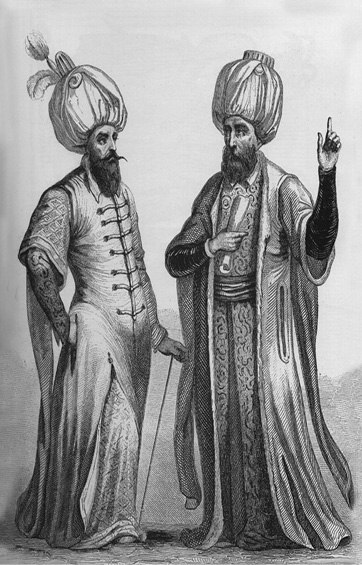
Yeniçeri Ağası ve Kazasker, Jouanin - Gaver
C. HUKUK
1. Adalet, hoşgörü ve istimâlete dayanan yönetim anlayışı
14. yüzyılın başlarında Kuzeybatı Anadolu’da Selçuklu-Bizans sınır bölgesinde küçük bir ‘uç beyliği’ olarak kurulan Osmanlı Devleti, başlangıçta Bizans İmparatorluğu ile Anadolu Türk beylikleri, daha sonraları ise Balkan ve Avrupa devletleri aleyhine sınırlarını sürekli genişletti. ‘Beylik’ten ‘saltanat’a geçiş sürecini, çok kısa zamanda ve başarı ile tamamladı. Kuruluşundan yüz elli yıl sonra siyasî, askerî, idarî, sosyal ve benzeri kurumları ile bir ‘dünya devleti’nin sorumluluğunu üstlenebilecek güce erişerek tarih sahnesindeki saygın yerini aldı.
Burada şu soruyu sormak gerekir: Acaba küçük bir uç/sınır beyliğinin kısa süre içerisinde ve değişik rakip güçler karşısında devlet statüsü kazanmasını sağlayan uygun şartlar ve avantajlar nelerdi?
Bu soru kısaca şu şekilde cevaplandırılabilir: Osmanlıların Selçuklu-Bizans sınırında bulunmaları (coğrafî avantaj); uçlardaki gaza ruhu ve heyecanı; komşu Türk beyliklerinin bu yeni siyasî oluşuma karşı olumsuz bir tavır takınmamaları; Osmanlıların Rumeli’ye geçerek stratejik değeri olan Gelibolu’yu alıp (1354), bu yakada yapacakları fetihlerde burayı kendilerine hareket üssü yapmaları; Balkanlarda sağlam bir şekilde yerleşmelerini sağlayan özellikle siyasî şartların hazır olması (karşı koyacak güçlü Balkan devletlerinin olmayışı); ilk Osmanlı padişahlarının ihtiyaç duydukları maddî-manevî kuvvetleri 13. yüzyılın ikinci yarısından itibaren Batı uçlarına gelmiş olan göçebe, köylü ve şehirli Türk unsurlardan sağlamaları; Türk beyliklerinin aksine bütün otoritenin tek bir elde yani beyde/padişahta toplanması; Balkanlardaki fetihlerin kendileri için büyük nüfus kayıplarına uğramadan yapılması, fethedilen toprakların askerî hizmet karşılığında tımarlara ayrılması ve bu sistemin daha başlangıçtan itibaren düzenli bir biçimde uygulanması; devletin siyasî, adlî, malî ve askerî yapılanmayı hızla başlatması; Bizans İmparatorluğu’nun 13. yüzyılın sonlarından itibaren çöküş sürecine girmesi; nihayet ilk Osmanlı padişahlarının devlet kurmadaki üstün yetenekleri ile eski anane, gelenek ve kültürleri devam ettirmeleri. (Köprülü, 1972: 176 vd.)
Bu avantajlara, Moğolların Anadolu’ya tayin ettikleri valilerin kötü yönetimleri ile Bizans’ın giderek kötüleşen idaresi de eklenebilir. Ayrıca, 13. yüzyılda ve 14. yüzyılın ilk yarısında Anadolu’nun siyasî ve etnik yapısı ile göçebe, köylü, şehirli gibi sosyal yapı ve fikrî seviye de Osmanlı Devleti’nin kuruluşunun anlaşılması bakımından mühimdir. Selçuklu Anadolu’sundaki fikir ve düşünce hayatı ayrıca önem taşır. Bilindiği gibi bu yüzyıl Mevlana Celaleddin Rumi (ö. 1273), Hacı Bektaş-ı Veli (ö. 1271) ve Yunus Emre’nin (ö. 14. yüzyılın ilk yarısı) yaşadığı yüzyıldır. Bu üç değerli ismin eserlerinde, şiirlerinde, sohbetlerinde işledikleri en önemli konu ‘sevgi ve hoşgörü’dür. Bu manevî iklimden Osmanlı Devleti kurucularının etkilenmediği düşünülemez.
Osman Gazi, yönettiği toplumu dinî, hukukî ve sosyal açıdan örgütlerken din uluları, ahiler ve fakıların manevî desteklerinden büyük ölçüde yararlanmıştır. İslam hukukunu bilen uzman kişiler olarak fakılar/fakihler hukukî konularda Osman Gazi’ye yardımcı oluyorlardı. Bu fakıların en meşhuru Dursun/Tursun Fakı olup Osman’ın hukuk danışmanı idi. Dinî konuları ise devrin ünlü din büyüğü kayınpederi Şeyh Edebalı’ya danışırdı.
Kuruluşunu ve hızlı gelişmesini, sözü edilen uygun şartlara borçlu olan Osmanlı Devleti, imparatorluk düzeyine ulaşan her devlette olduğu gibi çok dilli, çok dinli, çok kültürlü, çok ırklı bir toplum yapısı özelliği gösterdi. Toplum bu özelliğine ilk adımını, Osman Gazi döneminde attı. İlerleyen yıllarda fetihlerle birlikte, yeni toplulukların katılımıyla toplum yapısı daha da çeşitlenip zenginleşti. Burada şu soru sorulabilir: Osmanlı Devleti, zamanla üç kıtaya yayılmış böyle bir toplum yapısını, imparatorluktan ilk kopuşun yaşandığı 1830 yılına kadar (bu tarihte Yunanistan bağımsızlığını ilan etti) huzur ve barış içinde nasıl bir arada tutabilmiştir? Disiplinli ve savaş yeteneği yüksek askerî gücü ile mi; yoksa siyasî, idarî, adlî, malî örgütü ile mi; ya da çok iyi düzenlenmiş toprak rejimi ile mi? Hiç şüphesiz, ilk üç asır için bütün bunlar Osmanlı Devleti’nin güç kazanıp yükselmesinde ve varlığını sürdürmesinde son derece önemli kurumlar ve dinamiklerdi. Bunların yanında, ‘adalet’, ‘hoşgörü’ ve ‘istimâlet’ kavramlarının Osmanlı Devleti’nin temel harcında yer almasının ayrı bir önemi ve anlamı bulunmaktadır.
Osman Gazi, bir kaleyi/şehri fethettiğinde buraya ilk önce ‘kadı/yargıç’ ve ‘subaşı’ (emniyet amiri/garnizon komutanı olarak düşünülebilir) tayin ederdi. Nitekim Karacahisar’ın fethinden sonra buraya kadı ve subaşı atadı. Adaletin ve kanunun temsilcisi olan kadı, haksızlığa uğrayanların haklarını iade eder; subaşı ise, toplumda huzur ve güveni sağlardı. Osman Gazi döneminde adalet ve güvenlik ile ilgili olarak başlatılan bu uygulama, başka görevliler de eklenerek, daha sonraki padişahlar zamanında da devam etmiştir.
Osman Gazi, yönettiği toplumun huzur ve güveni için gerekli her türlü tedbiri zamanında alırdı. Haksızlığa uğrayan bir kimse şikâyetini doğrudan kendisine de yapabilirdi. Nitekim Osmanlı kaynaklarına böyle bir olayın hikâyesi geçmiştir: Eskişehir’de Ilıca/Hamam yöresinde kurulan pazara yöre halkı (Osmanlı, Germiyanlı, Rum) gelir rahatça alışverişlerini yaparlardı. Bir keresinde bir Rum kadının pazara getirdiği bardağı alan bir Germiyanlı, bardağın ücretini ödemez. Bunun üzerine Rum kadın bizzat Osman’a giderek Germiyanlı’dan şikâyetçi olur. Osman, Germiyan Türk’ünü getirtip güzel bir döver ve bardağın ücretini alıp kadına verir. Ayrıca, pazara gelen Bilecik halkını hiç kimsenin incitmemesini emreder ve bunu herkese duyurur. Osman’ın gösterdiği adalet ve güven sayesinde Rum kadınlar, hiçbir endişe duymadan tek başlarına rahatça pazara gelip alışverişlerini yapar olmuşlar (bk. NT, 2008: 43). Osman Gazi, daha sonra pazarın güvenliği ve pazar vergisi için kanunî bir düzenleme de yapmıştır. (Bunun için bk. Osman Kanunu)
Adalet, insaf, hoşgörü, istimâlet (meylettirme, gönlünü kazanma, teselli etme) gibi kavramlar, fetihler ve sonrası anlatılırken çok sık kullanılan, pratikte kesinlikle içi doldurulmuş kavramlardır. Osmanlı tarih metinlerinde geçen ‘hoşgörü’ kavramından, kişiler arasındaki hoşgörüden ziyade devletle itaat altına alınan gayrimüslim ahaliye gösterilen ‘engin müsamaha’ karşılığında kullanılan hoşgörü anlaşılmalıdır. Fetihlerde sivil halkı incitmemeye azami özen gösteren Osmanlılar, savaşta bile ölçülü olmayı elden bırakmamışlardır.
Osmanlı tarih yazarları eserlerinde, Anadolu ve Rumeli’de yapılan ilk fetihlerde Osmanlıların nasıl bir fetih politikası izlediklerini açıklayan, bazı kavramların da yer aldığı, önemli bilgiler sunarlar. Bu konuda şu metinleri örnek olarak gösterebiliriz:
1. Süleyman Paşa dahi Taraklı Yenicesi ve Göynük’ü ve Mudurnu’yu tamamıyla fethetti. O vilayette ne kadar kâfir var ise Süleyman Paşa’nın adlini ve dâdını [adaletini] görüp hepsi Müslüman oldular. Halkın hepsi ona itaat ettiler.” (AOK, 2000: 19)
2. Süleyman Paşa ki Taraklı Yenicesi’ne geldi. Hisarı ahd ü amanla [iyilikle/savaşsız] verdiler, Göynük’ü de. Süleyman Paşa o kadar adalet gösterdi ki, o vilayetin halkı derlerdi ki: “N’olaydı bunlar bize eskiden beri bey/beğ olaydılar. Süleyman Paşa’nın adaletli yönetimini gören çok köyler Müslüman oldular.” (ÂPT, 1949: 120)
3. Orhan Gazi, Karacahisar’ı amcası oğlu Gündüz’e verdi. Süleyman Paşa’yı Tarakçı Yenicesi’ne gönderdi. Süleyman Paşa buraya vardığında hisarı ahd ü aman ile [savaşsız] verdiler. Göynük ve Mudurnu’nun alınışı da bu şekilde oldu. Süleyman Paşa, aldığı bu yerlerde o kadar adl ü dâd etti [adalet gösterdi] ki, Türk’ün adaletli yönetimini gören nice köyler Müslüman oldular. O yörede ne kadar mülkler varsa, hepsi Süleyman Paşa’nın düzenlediği şekilde şimdi de geçerlidir. (NT, 2008: 76-77)
4. [Orhan Gazi] Koca-ili’ni emmisi oğlu Gündüz’e verdi. Orhan kendi vilayetine baktı. Süleyman Paşa Tarakçı, Yenice, Bolu ve Mudurnu’yu fethettikten sonra, o vilayetlerde ne kadar kâfir evleri varsa Süleyman Paşa’nın adlini, dâdını ve insafını [adaletini ve insafını] gördüler, çoğu Müslüman oldular. İl gün [halk] hep ona itaat ettiler. (OBT, 2008: 18)
5. Ece Bey ve Fazıl Bey ikisi bir sal düzdüler…Gece ile Çimbi [Bu kale adı kaynaklarda Cimbi, Cimni, Cimbeni gibi çok değişik imlalarla geçer] Kalesi’nin yöresine geçtiler. Bağlar arasında bir kâfir tuttular, o kâfiri sala bindirip sabahleyin Süleyman Paşa’ya getirdiler. Paşa, kâfiri hilatledi [değerli elbise giydirdi] ve ona: “Kimse görmeden sizin kaleye girmeye hiç çare var mıdır?” dedi. Kâfir: “Ben sizi bir yerden ileteyim, kaleye koyayım.” dedi. Birkaç sal düzdüler. Süleyman Paşa yetmiş seksen kişiyle, alperenler ve bahadırlar sala bindiler. Geceleyin öte yakaya geçtiler.
Kâfir bunları doğru Cimbi Kalesi’nin önüne getirdi. Bir terslik [çöplük] vardı, hisara karşı yığılmış idi, hisardan yüksekti. Çöp atılmak ile yükselmişti. Kale içinde kimse yoktu. Harman vaktiydi. Kâfirlerin hepsi harmanda oldukları için hisar boştu. O çöplükten geceleyin kaleye girip, hisarı aldılar. Kale içinde olan kâfirleri incitmediler, onlara inâmlar ettiler [nimetler verdiler]. İçlerinden birkaç adı belli kâfirleri tuttular. Ve o yörenin kâfirlerini incitmediler, istimâlet [Meylettirme, gönlünü kazanma, teselli etme/engin hoşgörü] verdiler. Kâfirler de emn ü aman [güvenlik] içinde oldular. Ve hem hatunlarını ve oğullarını gayet hoş tuttular [hoş tutmak: İncitmemek, iyi davranmak]. (AOK, 2000: 20-21)
6. Ece Bey ve Fazıl Bey sal düzüp bindiler. Gece ile Cimbi Kalesi’nin yöresine çıktılar. Bağlarının arasında bir kâfir tuttular. Sabahleyin sala binip Süleyman Paşa’ya getirdiler. Süleyman Paşa bu kâfiri hoş görüp hilatledi [değerli elbise giydirdi]. Kâfire: “Sizin hisara girmeye bir yer var mıdır ki, kâfirler duymadan hisara girebilelim.” Kâfir: “Sultanım! Ben sizi bir yerden ileteyim ki kimse duymadan hisara girersiniz” dedi. Hemen birkaç sal düzdüler. Süleyman Paşa, yetmiş seksen yarar güzide bahadırlarla sala bindiler. Gece ile öte yakaya [Rumeli’ye] geçtiler. Kâfir bunları doğru Cimbi Kalesi’nin önüne getirdi. Hisara karşı yığılmış terslik [çöplük] vardı. Hisardan yüksek idi. Kalenin içinde kimse yoktu. Harman vaktiydi, bağ vaktiydi. Hisar boş idi. Geceleyin terslikten kalenin içine girdiler, kaleyi aldılar. Ama kâfirlerini asla rencide edip incitmediler, hatta kâfirlerine nimetler verdiler, ihsanlar ettiler. Oğluna, kızına ve mallarına el uzatmadılar. Ancak içlerinden birkaç yarar kâfirlerini, ulularını tuttular, karşıda duran askere gönderdiler. O yörenin kâfirlerini incitmediler, istimâletler verdiler, emn ü aman [güvenlik/emniyet] içinde oldular. Hatunlarını, oğlanlarını ve kızlarını gayet hoş tuttular. Cimbi Kalesi’nin kâfirleri gazilerle birlik oldular. (OBT, 2008: 19-20)
Sultan I. Murad devrinde Rumeli’nin tanınmış gazi kumandanlarından ve akıncı beylerinden Evrenos Gazi’nin gazaları anlatılırken şöyle denilmektedir:
Evrenos Bey dahi vardı, Gümülcine’yi uç edinip İskete’yi ve Marulya’yı fethetti, ‘harac’ını aldı [haraç: Osmanlı Devleti’nde Müslüman olmayanlardan alınan şer‘î vergi]. O zamanda harac az idi. Şöyle olurdu ki kâfirler dahi incinmezlerdi. Elbisesini, öküzünü, oğlunu veya kızını sattırıp veya rehin koydurup almazlardı. (AOK, 2000: 31)
Yıldırım Bayezid’in kanunları tam olarak uygulaması, Konya halkını memnun etmiş ve bu yüzden halk hiçbir direniş göstermeden Osmanlı idaresine geçmeyi tercih etmiştir:
Yıldırım Han, Konya’nın üzerine yürüdü. Meğer harman vakti idi. O vilayetin yığınları ve çayırları yığılmış idi. Yıldırım Han gayet yasaklı padişah idi. Kimseyi, kimsenin bir habbesine [buğday/arpa tanesine] bile dokundurtmazdı. Ve asker halkı bir gün varıp Konya halkından arpa istediler. Onlar: “Biz kale içindeyiz, size nasıl arpa satalım? Eğer padişah bize izin verirse kaleden çıkıp size arpa satalım.” dediler. Asker halkı bunu Yıldırım’a söylediler. Yıldırım izin verdi ve bir de adam gönderdi. Kaledekiler dışarı çıktılar ve arpalarını sattılar, akçalarını aldılar, sonra yine kaleye girdiler. Asker halkı kimseyi incitmediler. Kale halkı Yıldırım Han’ın bu adaletini gördüler, Konya’yı kendileri verdiler. Hatta Aksaray’ı, Niğde’yi ve Kayseri’yi yöresiyle teslim ettiler. (AOK, 2000: 41)
Bu türden örnekleri çoğaltmak mümkün ise de çarpıcı şu örnekle bu konuyu bitirebiliriz: Yıldırım Bayezid ile Timur orduları arasındaki Ankara Savaşı’na (1402) Osmanlıların haraçgüzarı Eflak Beyi de askerleriyle gelip, padişah ordusu saflarında yer almıştı. (AOK, 2000: 48) Savaşta çözülme başlayınca Yıldırım’ın şehzadeleri ve Osmanlı idaresindeki Türk beyleri savaş alanını terk ettiler. Eflak Beyi ise savaşa devam etti. Timur, Eflak askerlerinin yiğitçe savaşmalarına şaşakaldı. Savaş sonrasında Osmanlı Devleti idarî bakımdan ciddî sarsıntı geçirdiği halde Eflak, bunu fırsat bilerek, Osmanlı yönetiminden ayrılmak için herhangi bir gayret içine girmemiştir. Savaşın kaybedilmesiyle Anadolu’da Osmanlı’ya bağlı yerlerde dağılmalar olurken, otorite boşluğu olduğu halde, Balkanlarda Osmanlı idaresinden kopmak için en küçük bir hareketin olmayışı anlamlıdır. Eflak’ın bu tutumu, Osmanlı yönetim ve toplum felsefesinin en önemli dinamiklerinin adalet/insaf, hoşgörü/engin müsamaha ve istimâlet kavramlarının olduğunu anlamamız için iyi bir örnektir. İşte fetihlerde elde edilen başarılarda ve ahenkli bir toplum yapısının oluşturulmasında, Osmanlı yöneticilerinin bu kavramlara sıkı sıkıya bağlı kalmalarının payı büyüktür.
Sözün özü, verilen bu metinlerden de açıkça anlaşılacağı gibi Osmanlılar gerek Anadolu’da gerekse Rumeli’deki fetihlerde sivil halkın zarar görmemesi için azami duyarlılık göstermişlerdir. Eli silah tutanlar hariç, halkın gönlü kazanılmaya çalışılmıştır. Fetih sonrasında ise eskiden olduğu gibi herkes işine gücüne devam etmekte, dillerini konuşmakta, ibadetlerini ve eski âdetlerini rahatça yapmakta tamamen serbest idiler. Ayrıca ödedikleri vergi yükleri de hafifletilirdi. Kurulu düzenlerini bozacak herhangi bir uygulamaya gidilmezdi. Böylece halk her fırsatta yeni yöneticilerinden övgüyle söz etmişlerdir. Kuşkusuz bu, Osmanlılar için güzel bir propaganda aracı olmuştur. Yeni efendilerinden memnun olan Hıristiyan halk, gazi kuvvetlerle iş birliği yaparak onları desteklemiş; bu durum, fetihlerin fazla direnişle karşılaşılmadan yapılmasında önemli bir etken olmuştur.
2. Adalet mensupları
Kadı
Osmanlılarda ilk ‘kadı’nın Tursun/Dursun Fakı/Fakih olduğunu daha önce belirtmiştik. Onun bu göreve getirilişi ile ilgili metin aşağıdadır.
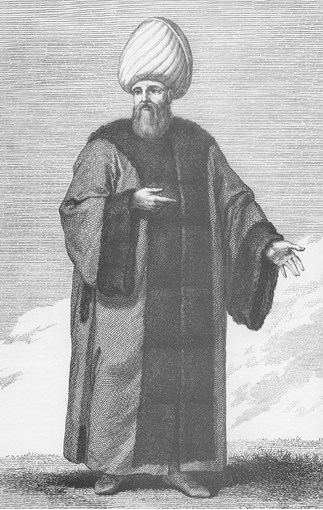
Kadı, D’Ohsson
Karacahisar halkının ‘kadı’ talep etmesi
Osman Gazi Karacahisar’ı aldı, şehrin evleri boş kaldı. Germiyan vilayetinden [Kütahya] ve gayri vilayetten hayli adamlar geldiler. Osman Gazi’den evler dilediler. Osman Gazi dahi verdi. Ve sehel [az] zamanda mamur oldu [şenlendi]. Ve bir nice kiliseler dahi vardı ki mescit ettiler. Ve pazar dahi kurdurdular. Ve bu kavim [halk] ittifak ettiler ki Cuma namazını kılalım ve hem bir kadı dahi dileyelim dediler. Dursun Fakı derler idi bir aziz var idi. Ve o kavme imamlık ederdi. Hallerini ona söylediler. O dahi geldi Osman Gazi’nin kayınatası Edebalı’ya söyledi. Daha söz tamam olmadan Osman Gazi geldi. Sordu. Muradlarını bildi.
Osman Gazi: “Her ne ki size gerektir, onu edin.” dedi.
Dursun Fakı: “Hanum! Sultandan izin gerektir.” dedi.
Osman Gazi: Bu şehri [Karacahisar] kendi kılıcımla aldım. Bunda sultanın ne dahli var ki ondan izin alam [alayım]. Ona sultanlık veren Allah bana dahi gaza ile hanlık verdi.” dedi. “Ve eğer minneti şu sancak ise ben bizzat sancak kaldırıp kâfirlerle uğraştım [savaştım].” der. Ve eğer sultan [Anadolu Selçuklu Devleti sultanı] ben Âl-i Selçuk’um der ise ben de Gök Alp oğluyum derim. Ve eğer bu vilayate ben onlardan önce geldim der ise Süleyman Şah dedem de ondan önce geldi.” derim. Ve o kavim dahi razı oldular. Kadılığı ve hatipliği Dursun Fakı’ya verdi. Cuma hutbesi ilk Karacahisar’da okundu. Bayram namazını da orada kıldılar. (ÂPT, 1949: 103)
İlk Cuma namazı, Karacahisar alınınca burada kılındı. Cuma ve bayram namazını ilk kıldıran kişi Tursun Fakı derlerdi, o kıldırdı. Osman Gazi adına ilk hutbeyi de Karahisar’da Tursun Fakı okudu, hicretin 687 (1288/89) yılında. (OBT, 2008: 13)
Kadıların görev alanları ve yetkileri zamanla çok artmıştır. Aşağıdaki metinlerde kadıların ve kazaskerlerin diplomaside de kullanıldığına tanık oluyoruz.
Vılkoğlu ile bu şekilde andlaşma yapıldıktan sonra İstanbul Kralı’na Gebze kadısı Fazlullah’ı gönderdiler. O, kral ile iyi dost idi. İstanbul Kralı, “Mevlana Kadı! Vılkoğlu’na bunca yer verdiniz. Bana da Vize’den berisini verin ki, barışalım.” dedi. Bunun üzerine Fazlullah, Çorlu’dan sınır ederek İnceğiz’i de kendisine verdiklerini açıkladı. (NT, 2008: 26; krş. ÂPT, 1949: 148)
Kazasker/Kadı-asker
‘Kadı’ ve ‘asker’ kelimelerinin birleşmesinden meydana gelen kazasker/kadı-asker, Osmanlı devlet teşkilatında şer‘î davalara bakan hâkim demektir. Divanıhümayun üyesi olan kazaskerin kadılar kadar olmasa da birçok görevi vardır. Mesela kadı, müderris ve din görevlilerinin atanmaları kazaskerin görevleri arasındadır. Kadı kararlarına itiraz makamı da kazaskerlik makamıdır.
1480 yılına kadar bir kazasker var iken bu tarihte sayı ikiye çıkarılmış; Anadolu ve Rumeli kazaskeri olmak üzere ikiye ayrılmıştır. Rumeli kazaskeri rütbece Anadolu kazaskerinin önündedir.
Kazaskerlere, idarî ve hukukî görevleri dışında ihtiyaç duyulduğunda diplomatik görevler de verilirdi. Nitekim Karamanoğlu, kazaskerini Çelebi Mehmed’e elçi olarak göndermiştir:
Sultan Çelebi Mehmed, fetih ve zafere sevinerek devletle Bursa’ya geldi. Birkaç gün orada yiyip içmekle meşgul olduktan sonra kalkıp yine Tokat’a gitti. Tokat’ta yiyip içerken Karamanoğlu, kazaskerini elçilikle gönderdi. O sırada Dulkadiroğlu’ndan da elçiler geldi, aralarında muhabbet oluştu. Düşmanlık ortadan kalkıp barışıklık oldu. Sultan, Dulkadiroğlu’nun kızına [Süli Bey’in kızı Emine] yavuk oldu [nişanlandı]. Hediyeler ve armağanlarla nişan yüzüğü gönderildi. (NT, 2008: 207)
3. Kanunlar
Osman Kanunu
Osman Gazi adına hutbe okunması ve sikke basılması yerleşti. Fethedilen Karacahisar Kalesi’ne kadı ve subaşı da tayin edildi. Germiyan Beyliği’nden bir kişi Osman Gazi’ye gelerek, “Bu pazarın bâcını bana satın.” dedi. Osman Gazi, “bâc nedir?” diye sordu. O kişi: “Pazara her kim yük getirirse ondan akça alayım.” dedi. Osman Gazi: “Bu pazara gelenlerde alacağın mı var ki, bunlardan akça alırsın?” dedi. O kişi: “Bu âdettir, bütün vilayetlerde vardır. Her yükten, padişah için akça alırlar.” dedi. Osman, “Bu, Allah buyruğu veya peygamber sözü müdür, yoksa bunu her ilin padişahı kendisi mi düzenler?” dedi. O kişi: “Evvelden beri, sultanlık töresidir.” dedi. Osman gazaba gelerek, “Yürü, artık bu arada durma, çünkü sana zararım dokunur. Malını kendi eli ile kazanmış olan bir kişinin bana ne borcu olabilir ki, yok yere akça versin?” dedi.
Orada bulunanlar bu sözü işitince, “Ey Han! Size gerekmezse, bu pazarı bekleyenlere, emekleri boşa gitmesin diye bir şeyler verilmesi âdettir.” dediler. Osman Gazi: “Mademki böyle dersiniz, pazara getirdiği yükü satan kişi, iki akça versin. Eğer satmazsa, hiçbir şey vermesin. Ve dahi her kime bir tımar verirsem, biri onun elinden bu tımarı sebepsiz yere almasın. Tımar sahibi ölünce oğluna versinler. Eğer oğul küçük ise, büyüyüp sefere gidinceye kadar hizmetkârları sefere gitsinler. Eğer bu kanunu her kim bozarsa yahut benim neslime başka bir kanun öğretirse, Allah onun dinini ve dünyasını bozsun.” dedi. (ÂPT, 1949: 104; NT, 2008: 53-54)
âdet: Eskiden beri uygulanagelen kural, töre, örf. Bir kimsenin yapmaya alışmış olduğu ve sık sık tekrarladığı davranış biçimi.
akça/akçe: Osmanlıların ilk gümüş para birimi ve sikkesi. 15. yüzyıldan itibaren “para” karşılığı olarak kullanılan akça “beyaz, parlak, temiz” anlamlarına gelen ak kökünden türemiş olmalıdır. “Ak akça kara gün içindir” atasözü de buradan gelmiş olabilir. Türk-İslam devletlerinde “para bastırmak” ve “hutbe okutmak” en önemli saltanat/hükümranlık işaretlerindendir.
bâc: Pazar vergisi. Alım satım vergisi olarak kullanılan bir terim.
hutbe: İslam ülkelerinde camilerde cuma ve bayram namazlarından önce devletin başında bulunan hükümdarın ad, unvan ve lakaplarının hatip tarafından zikredilmesi ve kendisine dua edilmesi. Hutbe okutmak İslam devletlerinde en önemli bağımsızlık işaretlerinden biri idi.
kadı: Tanzimat’a kadar her türlü davalara, Tanzimat ile Medeni Kanun (1926) arasındaki dönemde ise yalnız evlenme, boşanma, nafaka, miras davalarına bakan mahkemelerin başkanlarına verilen ad.
Karacahisar: Eskişehir’e 7 km uzaklıkta, bugün sadece harabeleri bulunan eski bir kale. Son derece stratejik bir konuma sahip olan bu kalenin fethi Osmanlıların bağımsız bir güç/beylik olarak ortaya çıkmalarında önemli rol oynamıştır. Karacahisar, Osmanlı yönetimine geçince komşu Germiyan Beyliği’nden ve diğer yerlerden Müslümanlar buraya gelerek şehir şenlenir.
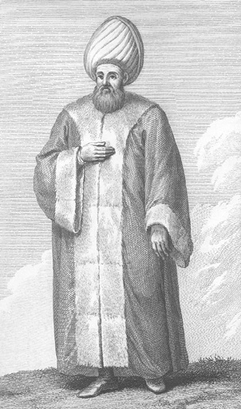
Kazasker, D’Ohsson
sikke: Madeni para. Para bastırmak, hükümdarlık işaretlerinden biridir. Para üzerinde hükümdarın ad, lakap ve unvanlarıyla birlikte mensup olduğu kavme ait damga ve işaretler de bulunurdu.
subaşı (sü+başı): Açıklaması için bk. I. Ordu
tımar: Osmanlı toprak sisteminin temelini oluşturan bir terim. ‘Has’ ve ‘zeamet’lerin dışında kalan küçük ‘dirlik’lere bu ad verilirdi. Tımar sahipleri sefere bizzat katılmak ve tımarının gelirine göre tam donanımlı (cebeli) atlı asker (sipahi) götürmek zorundaydılar. Osmanlılarda ilk tımar uygulaması örneği Osman Gazi zamanında görülmektedir. 16. yüzyılın ikinci yarısında tımar sisteminde başlayan ve giderek artan bir bozulma Osmanlı Devleti’nin çöküşünü hızlandıran en önemli etkenlerden biri olmuştur.
töre/türe: Bir toplulukta benimsenmiş, yerleşmiş davranış ve yaşama biçimlerinin, kuralların, görenek ve geleneklerin, ortaklaşa alışkanlıkların, tutulan yolların bütünüdür.
kazasker/kadı-asker: İlmiye mesleğinin en yüksek derecelerinden birinin adıdır. Sözlük anlamı asker kadısı, ordu kadısı demektir. Abbasilerden beri olan kazaskerlik Osmanlılarda Sultan I. Murad devrinde kuruldu. İlk kazasker Çandarlı Halil Paşa’dır.
Pencik Kanunu
Murad Gazi, Edirne tahtına geçip oturunca lalası Şahin’i, Zağra ve Filibe tarafına akına gönderdi. Evrenos Gazi İpsala’yı fethetti. Bunlar yerli yerinde uç beyleri oldular.
Kara Rüstem derlerdi, danişmend bir kişi var idi, Karaman ilinden gelmişti. O, Gelibolu İskelesi’ni tutmuş idi. Bursa’da türbesi vardır, Mevlana Rüstem Türbesi derler. Hayreddin Paşa o zaman kazasker idi.
Kara Rüstem, Kazasker Hayreddin Paşa’ya: “Efendi, bunca padişahlık malını niçin ziyan edersiniz?” dedi.
Hayreddin Paşa: “Hangi malı zayi ettim?” dedi.
Kara Rüstem: “Gazilerin gazadan getirdikleri esirlerin beşte biri Allah’ın emri ile padişahındır.” dedi.
Hayreddin Paşa, bunu Sultan Murad Gazi’ye bildirdi. Murad Gazi de “Eğer Allah’ın buyruğu ise şimdiden sonra alın.” dedi.
Bunun üzerine Hayreddin Paşa, Kara Rüstem’i çağırıp, “Hünkâr, Allah’ın buyruğu ise alın diye buyurdu.” dedi.
Kara Rüstem kendisi gelip Gelibolu’da oturdu. Gelibolu Boğazı’nı geçen her esirden yirmi beş akça aldı. Bu yeniliği ilk yapan Karamanlı Rüstem’dir. Bu akçayı o zaman beşte bir diye alırlardı. Şimdi beşte biri, esir alındığı yerde alındıktan başka, yine her esirden ‘geçit akçası’ alırlar. Gelibolu İskelesi’nde esir için akça aldıklarını öğrenince, iskeleye esir getirmeyerek, her birini bir tarafa gizler oldular. Bunun üzerine akından ele geçen esirlerden beşte biri padişah için ayrılacak, eğer esir sayısı beş olmazsa, her esirden yirmi beş akça alınacaktı.
Padişah, bu işle Gazi Evrenos’u ve Lala Şahin’i görevlendirdi. Onlar da bu düzen üzerine birer kadı tayin ederek, ‘akıncı kadıları’ diye ad koydular. Bu şekilde hayli oğlanlar toplayıp Murad Han Gazi’ye getirdiler.
Çandarlı Hayreddin Paşa, “Bu oğlanları Türklerin yanına verelim. Hem Müslüman olsunlar, hem de Türkçe öğrensinler. Sonra kapıya [devlet eşiği] getirelim yeniçeri olsunlar.” dedi. Hem bu şekilde ettiler. Yeniçeri günden güne arttı. Önce Türk’e verdiler, bir nice yıl hizmet edip Türkçe öğrendiler, hem de Müslüman oldular. Ondan sonra devlet kapısına götürerek ak börk giydirdiler ve ‘yeniçeri’ (yeni+çeri = yeni asker) diye ad koydular.
Yeniçeri ve solakların ilk ortaya çıkışı I. Murad zamanındadır. Solaklar, börkler giyerler, tuğlar takınırlar, ok ve yayla hünkârın önünde yürürlerdi. (NT, 2008: 90-91; krş. OBT, 2008: 24-25; AOK, 2000: 28-29)
Malkoçoğlu Balı Bey, bir gün orada durup derbendi temizletti. Derbend ağzında oğlu ile kendi durdu. Gaziler derbendi geçtiler, Burut Suyu derler oraya geldiler. Orada da bir hisar varmış. O hisarı da aldılar. Oradan Tuna kenarına geldiler. İshakçı Geçidi derler orada karargâh kurup oturdu. Gazadan çıkan esirlerin penc-yekini [beşte birini] orada almaya başladılar. Pencik işi tamam olup, 12-20.06.1498’da (903 yılı Şevval ayı sonu) askerimiz sağlık ve selametlikle geldiler. Gaziler bu gazaya doyumluk, ganilik [zenginlik] gazası dediler. (OBT, 2008: 183)
danişmend: Farsça bir kelime olup, bilgi sahibi (bilgin) demektir. Medrese eğitimi görmüş olanlar hakkında kullanılan tabirlerden biridir.
gaza: Özellikle Osmanlılarda din için yapılan savaşı ifade eden ve bir fetih ideolojisi hâline gelen kavram. Gaza ruhu Osmanlıların askerî ve siyasî başarılarında ve dolayısıyla devletin yükselişinde rol oynayan önemli dinamiklerdendir.
pencik (penc-yek): Akınlarla savaşlarda ele geçirilen esirlerden beşte birinin ve esir sahibinde kalan beşte dördünden alınan verginin adıdır. Osmanlılarda bu verginin ilk uygulaması Sultan I. Murad zamanındadır. Pencik vergisi ile ilgili diğer esaslar 15. yüzyıl sonlarında ortaya çıkan Pencik Kanunu’nda daha ayrıntılı ele alınmıştır.
solak: Yeniçeri Ocağı’nı teşkil eden 196 bölükten 60, 61, 62 ve 63. bölüklere verilen addır. Bunların boylu boslularından seçilenler padişahların hizmetlerinde bulunurlardı. Bunlara hassa solakları denirdi.
yeniçeri (yeni+çeri): Türkçe bir kelime olan ‘çeri’, asker/leşker, ordu demektir. Yeniçeri, yeni asker/ordu anlamına gelir.
4. Cezalar
Bu başlık altında, ilk sekiz Osmanlı padişahı zamanında görülen hapis olayları, hapis cezasına çarptırılanların Osmanlı toplumundaki konumları, hapis nedenleri, hapis süreleri, hapis yerleri olarak seçilen kaleler/şehirler, mahbuslara yapılan muameleler, hapisten firarlar; bedenî cezalar, idamlar, sürgünler, tahkir/aşağılama gibi hususlar üzerinde durulacaktır.
Konuyla ilgili olarak 15. yüzyıl Osmanlı tarih kaynaklarındaki kayıtlar kronolojik düzene göre değerlendirilmeye çalışılmıştır. Ne var ki, diğer olaylarda olduğu gibi kaynakların bu konuda verdikleri bilgiler de çelişkilidir. Mesela, bir hapis olayının tarihi, hapis nedeni ve hapis yeri hakkındaki kayıtlar farklılık gösterebilmektedir.
a. Hapis cezaları
Çok sayıda okuyucunun merak edeceği bir husus var ki o da cezaların (hapis, idam ve diğerleri) neye göre, yani hangi hukukî kriterlerin esas alınarak verildiğidir. Başka bir ifadeyle, cezaların belirlenmesinde ‘şer‘î hukuk/İslam hukuku’ veya ‘örfî hukuk’ (padişahların günün şartlarına ve ihtiyaçlarına göre yayınladıkları fermanlardan oluşan hukuk) ilkeleri mi temel teşkil etmekte idi? Hemen söyleyelim ki kamu görevlilerine verilen hapis, idam gibi cezaların hepsi ‘örfî hukuk’ uygulamalarıdır. Devlet memurlarının işledikleri suçlara verilecek cezaların belirlenmesinde ve infazında çoğu zaman takdir hakkı padişahındır. Ancak burada şu hususu belirtmek gerekir: İslam hukuku siyasî alanda ulülemr (emir verme yetkisi bulunan halife, sultan) olan padişaha, temel bazı noktalarda, şeriat hükümlerine aykırı olmamak kaydıyla, yasama yetkisi vermiştir. Dolayısıyla örfî hukuk kuralları da gelişigüzel konulmaz.
Germiyanoğlu Yakup Bey ve adamlarının hapsedilmesi
Osmanlı ülkesinde kayıtlara geçen ilk hapis olayı, Yıldırım Bayezid devrindedir. Padişahın, Rumeli’de seferde bulunmasını fırsat bilen Karamanoğlu Alaaddin Bey, Osmanlı topraklarına katılmış olan Hamid-ili’ne girerek yağma ve talanda bulunur. Anadolu’ya geçen Sultan Bayezid, Saruhan, Aydın ve Menteşe beyliklerini Osmanlı topraklarına katar. Hamid-ili’nden bir grup halk, padişaha gelerek Karamanoğlu hakkında şikâyette bulunur. Yıldırım, Karaman üzerine yürür. Germiyan topraklarından geçecek olan padişahı, Germiyanoğlu Yakup Bey karşılar. Sultan Bayezid, Yakup Bey’i, veziri Hisar Bey ile tutup, İpsala zindanına gönderir (NT, 2008: 143). Âşık Paşazade (ÂPT, 1949: 140-141), hapis yeri olarak Sisam adasının karşısındaki İpsili Hisarı’nı gösterir. Neşrî, devletin kuruluşundan doksan yıl sonra görülen bu ilk hapis olayını, 1390’da Aydın-ili’ndeki Alaşehir’in fethini takiben verir. Âşık Paşazade, Neşrî’den biraz farklı olarak, kadıların hapsi olayından sonra anlatır. Her iki tarihçi, Yakup Bey’in yakın adamlarıyla birlikte neden hapsedildiğini bildirmezler.
16. yüzyıl tarihçilerinden Hadîdî (ö. 1523’ten sonra), muhtemelen Âşık Paşazade’ye dayanarak, bu konuda şunları yazar:
Gazâ ettikde Laz’a Yıldırım Han_____ Hamid-ili’n urur ibn-i Karaman
Gazâdan tahtına han geldiği dem_____ Erişti zâr u nâlân birkaç âdem
Dediler şâha ey şâh-ı devran_____ Karaman-oğlu etti bizi talan
Hemen emr etti şeh cem oldu leşker_____ Çalındı kûs u götrüldi alemler
Sürüp leşker ki göçdü Yıldırım Han_____ Karaman mülküne yetişdi şitâbân
Çıkıp karşılar oğlu Germiyan’ın_____ Ki kayını idi şâh-ı cihânın
Hemen emr eyledi anı tutarlar_____ Hisar-ı İspili’de haps ederler
(HT, b. 1673-1679
Âşık Paşazade ve Neşrî, Anadolu’daki beylerin Yıldırım’dan kaçarak Timur’a sığındıkları 1400 yılı civarında Germiyanoğlu Yakup Bey’in İpsala hapsinden kaçtığını kaydederler. (ÂPT, 1949: 142; NT, 2008: 155) Buna göre, Yakup Bey yaklaşık sekiz on yıl hapis yatmış olur.
Karamanoğlu Alaaddin Bey’in iki oğlunun hapsedilmesi
Osmanlı Devleti’nde kayıtlara geçen ikinci hapis olayı, ilkinden yaklaşık iki yıl sonra 1392 yılında meydana gelmiştir. Bu olayda, Osmanlı Devleti ile Karamanlılar arasında bir misilleme söz konusudur. Yıldırım Bayezid, Eflak seferine giderken Kara Timurtaş’ı Anadolu Beylerbeyisi tayin eder ve Engüri/Ankara sancağının zabtı işini de ona verir. Daha önce olduğu gibi padişahın Rumeli’de bulunuşunu fırsat bilen Karamanoğlu Alaaddin Bey, Kara Timurtaş Paşa’yı bir gece baskınıyla ele geçirip Konya’ya götürerek hapseder. Gazadan zaferle dönen Bayezid’in Bursa’ya geldiği haberini alan Karamanoğlu, Timurtaş’ı hapisten çıkarıp gönlünü alarak elçi ve çeşitli hediyelerle birlikte Bayezid’e gönderir. Ancak Bayezid, sefer kararından geri adım atmaz. Padişah ordusunun karşısında tutunamayan Alaaddin Bey yakalanır. Padişah, Alaaadin Bey’e nasıl bir muamele yapılacağı işini Timurtaş’a bırakır. Timurtaş, Alaaddin Bey’i idamla cezalandırır. Timurtaş’ın bu davranışı padişahın canını sıkar. Alaaddin Bey’in, Mustafa ve Mehmed adlarındaki iki oğlu ise yakalanarak Bursa’ya götürülür ve burada hapsedilir. (NT, 2008: 144-145)
Bu konuda, ilk bilgiyi veren Fatih devri tarihçilerinden Enverî (ö. 1465’ten sonra) şunları yazıyor:
Anadolu’da Temürtaş’ı meğer_____ Karaman-oğlu tutar o bed-güher
İline iltür yine âzâd eder_____ Verdi hil’at yine şâd eder
Yıldırım Han işitip anda gider_____ Karaman-oğlu gelüben cenk eder
Pes Alâaddin sınur hem tuttılar_____ Anunile oynayuban utdılar
Yıldırım anı Temürtaş’a verür_____ Anı berdâr etti o dahı varur
Ana gerçi vermedi sultan rızâ_____ Pes Alâaddin’e erişti kazâ
Mustafa nâmı Mehemmed oğlu var_____ Tutulur anlar kılurken kârzâr
Bursa’da hapsoldular bunlar kalur_____ Karaman her bir kula kısmet olur
(DE, 2003: b. 369-376)
Kadıların hapsedilmesi
Bu toplu hapis olayı, 1393/94 yılında meydana gelmiştir. Hapsedilenlerin hepsi de görev başında bulunan yirmi kadar kadıdır. Görev ve yetkisini kötüye kullanan, halktan rüşvet alan, adları fesat işlere karışan ve usulsüz fetva veren kadıların bu tür hareketleri Yıldırım Bayezid’in kulağına gider. Padişah kadıları teftiş ettirir. Her biri birer kamu görevlisi olan ancak kanunsuz ve usulsüz davranışlarda bulunan kadıların ekserisi taşra teşkilatında görevlidir. Bayezid, Çandarlı Hayreddin Paşa’nın oğlu Vezir Ali Paşa’ya, adı kötüye çıkmış bütün kadıların toplanarak Yenişehir’de bir evde hapsedilmelerini ve sonra da bu evin ateşe verilmesini emreder. Paşa, Yıldırım’ın verdiği bir karardan geri adım atmayacağını en iyi bilenlerdendir. Gerçekten Bayezid, kanunların uygulayıcısı olan yöneticilerin, halkı incitmemeleri ve kimseye haksız muamele yapmamaları konusunda gereken titizliği gösteren bir padişahtı. Onun bu özelliğinden bütün kaynaklar övgüyle söz ederler. Padişahın kesin talimatı ve kararlılığı karşısında Ali Paşa, önce telâşa ve endişeye kapılır ise de olayın çözümü için hemen harekete geçmeyi de ihmal etmez.
Nihayetinde kadıları kurtarmak için Ali Paşa pratik bir çıkış yolu bulur ve padişahın değer verdiği Habeşli maskara Arap nedimini devreye sokar. Bu kişi, padişahın huzuruna çıkar; fakat konuya bir türlü giremez. Maskaranın kendisine bir şeyler söylemek istediğini, ancak bir türlü söyleyemediğini gören padişah ondan rahat olmasını, düşündüklerini kendisine aktarmasını ister. Aşağıdaki metinde de görüleceği gibi aralarında uzun bir konuşma geçer. Daha sonra Vezir Ali Paşa huzura çağrılır. Ali Paşa, kadıların ücretlerinin azlığı dolayısıyla rüşvet aldıklarını, ücretlerinin artırılması durumunda rüşvet almayacakları konusunda padişahı ikna eder. Kadıların hayatı bağışlanarak serbest bırakılırlar. Bu tür bir olayın tekrar yaşanmaması için kadıların, baktıkları miras davalarından yüzde yirmi, yazdıkları ‘şer‘î mektup’tan yani mahkemece verilen ‘hüccet’ten de iki akça harç almaları kararlaştırılır. Osmanlılarda yazılan her hüccetten iki akça alınması bu olayla başlamıştır.
Kadıların hapsi ile ilgili en geniş bilgiyi veren Oruç Bey (ö. 1502’den sonra) şunları yazmaktadır:
Yıldırım Bayezid’in veziri Ali Paşa zevkine düşkün bir kişiydi. Halkın da çoğu zevke düştüler. Taşradaki [merkez dışındaki yerler] kadıların fesatları ziyade oldu. Türlü türlü fesat işler eder oldular yani yetki ve görevlerini çıkarları için kullandılar. Kadılar rüşvetle âlemi doldurdular. Kadıların bu fesatlarını Yıldırım Bayezid işitti.
Yıldırım Han çok öfkeli ve tez canlı bir kişiydi. Gazaba gelip [öfkelenip] buyurdu ki, ne kadar kadı varsa hepsini getirtti. Emretti ki, yirmiden ziyade kadıları Yenişehir’de bir eve koyup hapsettiler. Sonra hapsedilen bu kadıları bulundukları ev ile birlikte ateşe verin, yakın dedi. Yıldırım Bayezid emrinde kararlıydı. Vezir Ali Paşa şaşırdı. Padişaha söz söylemeye hâli kalmadı. Çünkü bilirdi ki, öfkelendiğinde padişaha kimse söz söyleyemezdi. Paşalar da aciz kaldılar. Kadıları kurtarmaya çare bulamadılar.
Meğer padişahın Habeşli maskara Arap nedimi [sohbet ve eğlence arkadaşı] vardı. Gayet gözde nedimlerden idi. Ali Paşa Habeşli Arap’a haber gönderip getirtti ve söyledi: “Bre Arap! Eğer kadıları padişah hışmından kurtarırsan, sana ne dersen vereyim, ihsan edeyim” dedi. Maskara Arap, kadıları kurtarmak için hemen kalktı. Acele, bir fistan [tek parça kadın elbisesi] ve bir pabuç [ayakkabı] giydi. Bey gibi padişahın sohbetine geldi. Yıldırım Bayezid gayet kızgın iken Arap, padişahın huzuruna gelip karşısında durdu.
Padişah: “Bre Arap! Bugün bey gibi gayet acele geldin, maksadın nedir?” dedi.
Arap: “Bugün sultanımdan bir nesne dilek ederim. Ama padişahtan ben korkarım.” dedi.
Padişah: “Bre Arap! Korkma. Benden ne dilersen dile makbuldür.” dedi.
Arap: “Sultanım! Senden dileğim budur ki, beni elçilik ile İstanbul’a gönderesin.”
Padişah: “Bre Arap! İstanbul’da neylersin?”
Arap: “Sultanım! İstanbul Kralı’ndan birkaç keşiş isteyelim.”
Padişah: “Bre Arap! Bu keşişleri ne yapacaksın?”
Arap: “Sultanım! Buradaki kadıları hep kıralım. Bu keşişler kadılık yapsınlar” dedi.
Padişah: “Bre Arap! Bu keşişler kadılık edeceğine kendi kullarım kadılık etsinler” dedi.
Arap: “Sultanım! Bu keşişler okumuşlardır. Bu kullar okumuş değillerdir. Bu keşişler çok okumuşlar. Bunca yıllar zahmet çekmişlerdir” dedi.
Padişah: “Bre Arap! Şimdi bu kadılar okumuşlar mıdır?”
Arap: “Sultanım! Okumayan kadı mı olur?” dedi.
Padişah: “Ya bre Arap! Nice [nasıl] edelim?” dedi.
Arap: “Sultanım! O işi paşalar bilir” dedi.
Yıldırım Bayezid, veziri Ali Paşa’yı çağırttı. Şunları söyledi:
Padişah: “Ali! Bu kadılar okumuşlar mıdır?” dedi.
Vezir: “Sultanım! Okumayan kişi kadı mı olur?” dedi.
Padişah: “Ya okumuşlardır. Niçin yaramazlıklar ederler, okuduklarını tutmazlar?”
Vezir: “Sultanım! Bunların ücretleri azdır, başka gelirleri yoktur” dedi.
Padişah: “Bunlara bir gelir buluver” dedi.
Ali Paşa, miras bölüşümünde bin akçada yirmi akça hisse koydu. Sonra ‘şer‘î mektup’ yazılsa her mektupta iki akça koydu. Her şer‘î mektuptan/hüccetten iki akça almak o zamandan beri kaldı. Bu halkın dilinde vardır ki, ‘Ali Paşa tarhı’ [Yaptıkları işlem karşılığında halktan alınıp kadılara verilecek bu şer‘î vergi (mektup vergisi/hüccet vergisi]) iki akça dedikleri budur. (OBT, 2008: 34-35)
Âşık Paşazade (ÂPT, 1949: 138-139) ve Neşrî (NT, 2008: 152-154), söz konusu olayı, “Latîfe” başlığı altında anlatırlar. ‘Şer‘î mektup’ tabiri her ikisinde de geçmez. Kadıların hapsi konusunda daha kısa ve biraz değişik bilgiler için ayrıca bk. AOK, 2000: 39-40.
II. Murad devrinde Osmanlı hizmetine giren tarihçi Şükrullah (ö. 1464’ten sonra), kadılarla ilgili şu bilgiyi verir:
[Yıldırım Bayezid] yeniden adalet gösterdi. Kadıları topladı. Onların kıyıcılıklarından soruşturdu. Taaddîden [zulümden], şeriate aykırılıktan, rüşvetten özge [rüşvetten başka] nesne bulmadı. Kimden şeriate aykırı nesne almışlarsa ödemelerini buyurdu. Onların terbiyesini verdi. Azli gerekeni azletti. Halk, ülkeler alanın yüksek adalet ve şefkatini işitince ekip biçmeleri, iş güçleri ile yurtlarını şenlendirmekle uğraşır oldular. Osmaneli her ne kadar şenlik idiyse de on kat daha şenlendi. (BT, 1949: 57)
Kadıların hapsi olayını ayrıntılı bir şekilde ele alan 16. yüzyıl tarihçilerinden Hoca Sadeddin (Tacü’t-tevârih, I, 138-140), 15. yüzyıl kaynakları gibi başta rüşvet olmak üzere, bütün olumsuzluklardan Vezir Ali Paşa’yı sorumlu tutar ve hapsedilen kadıların sayısını seksen olarak gösterir. Ali Paşa’nın, Yıldırım’ın verdiği cezadan kadıları kurtardığı takdirde, Habeşli Arap’a yirmi bin akça vereceğini yazar. Sonuçta mahpus kadılar suçları ölçüsünde cezalandırıldıktan ve ettikleri edepsizlik derecesinde azarlandıktan sonra serbest bırakılırlar.
Yıldırım Bayezid’in Timur’un elçisini hapsetmesi
II. Bayezid devri tarihçilerinden Kemal (ö. 1490’dan sonra), “Sultan Yıldırım, Temür elçisini hapsetdiğini beyan eder” başlığı altında şunları yazar:
İşitti elçi geldiğini o şah______Bezendi karşısına tâk u dergâh
Ki emr etti şehinşah kondurular______Buyurdı dürlü nimet gönderürler
O gice geçti çün oldu sabah______Şeh oturmuş idi kurup bârgâh
Getirin elçiyi dedi şehinşah______Gelip elçi dedi yarıcun Allah
Çıkarup şah eline, sundu nâme______Haber oldu derildi hâs u âme
Bunu yazmış içinde kıl ü kalin______Ki ver Taharten’e ehl ü ıyâlin
Dahı Germiyan-oğlu’na ilin ver______Bu bir sözümü iki eyleme der
Eger bu söze dahi uymayasın______Benim sözümü hiç almayasın
Heman kıldılar elçiyi giriftâr______Tutuban eylediler hâlini zâr
(SN, 2001: b. 1038-1045, 1052)
Diğer kaynaklarda bu bilgiyi doğrulayan herhangi bir kayıt mevcut değildir. Âşık Paşazade (ÂPT, 1949: 143) ve Neşrî (NT, 2008: 156-157), Yıldırım Bayezid’in, Timur’un hediye ve armağanlarla gönderdiği ulu elçisine gereken ilgiyi göstermediğini, getirdiği hediyelere iltifat etmediğini, Timur’un mektubuna ağır bir cevap yazarak elçiyi geri gönderdiğini yazarlar.
Yıldırım Bayezid’in esareti ve hapis hayatı
1402 Ankara Savaşı’ndan sonra Timur’a esir düşen Yıldırım Bayezid’in durumunu Neşrî şöyle ifade ediyor:
İznikli Mevlana Mehmed [Kutbeddinoğlu], babasının kendisine anlattıklarından bana [Neşrî] şöyle anlattı: “Timur, Bayezid Han’ı tutup hapsedince Rum büyükleri anlaşarak, hünkârı Timur’dan satın almaya niyet ettiler. Beni Timur’a gönderdiler. Ben de gidip, Timur’u razı ettim. Doksan bin floriye anlaştık. Ben, Rum’da bir şey kalmadı, hep yağmaya gitti, ama varayım İstanbul Kralı’ndan borç alayım.” dedim. (NT, 2008: 164)
Musa Çelebi’nin hapsi
Meger bir gün işitti Mir Süleyman______Ki Musa İsfendiyar iledir el’ân
Sipâhi, Mir Süleyman o diyâra______Sürüp etti hücûm İsfendiyar’a
Çü erdi yakınına o diyârın______Erişti elçisi İsfendiyar’ın
Ki bunlarunla ahd edip giderler______Varup Musa’yı anda haps ederler
(HT, b. 1890-1893)
Musa Çelebi’nin Emir Süleyman’ın adamlarını hapsetmesi
Ankara Savaşı sonrasında Yıldırım Bayezid’in oğullarından Emir Süleyman, Rumeli’ye geçerek Edirne’de padişahlığını ilan eder. Bir süre sonra taht iddiacılarından kardeşi Musa Çelebi de Rumeli’ye geçerek ağabeyi Süleyman’la mücadeleye girişir ve Süleyman’ı bertaraf eder (1411). Musa Çelebi, kendi iktidarını güçlendirmek ve daha serbest hareket edebilmek için, Emir Süleyman dönemindeki Rumeli’nin nüfuzlu beylerini bir bir ortadan kaldırır veya hapseder. Eski Osmanlı rivayetine göre iktidardaki padişah, hangi beyden şüphe eder veya otoritesine engel görürse onu, yetkisiz ve etkisiz bir konuma getirirdi. Bu, Rumeli’de eskiden beri uygulanagelen idarî bir tasarruftur.
Musa Çelebi kullarını ileri çekti [öne çıkardı], Rum beylerini mansıptan düşürdi [görevden aldı]. Gördü ki karındaşından nice döndüler hayin oldular, bildi ki kendisine de hayin olurlar. Zira ki Rum-illi’nin evvelden âhire [baştan beri] âdetleridir. Ve hangi beyde ki şüphesi var idi, cümlesini helak etmeye kastederdi ve kimini de hapsederdi. (AOK, 2000: 59)
Firuz Bey oğlu Yakup Bey’in hapsedilmesi
Bu olay, Çelebi Mehmed henüz saltanata geçmeden önce, 1412 yılında meydana gelmiştir. İlk iş olarak Anadolu’daki egemenliğini güçlendiren Çelebi Mehmed, daha sonra Rumeli’ye geçerek kardeşi Musa Çelebi ile mücadeleye girişir. Bu arada, İzmiroğlu Cüneyd Bey’in Aydın ve Saruhan üzerine yürüdüğü haberi gelir. Cüneyd’in üzerine yapılacak sefere Engüri/Ankara Beyi Firuz Bey oğlu Yakup Bey’in de askerleriyle katılması istenir. Ancak Yakup Bey, kendisinin yokluğunda Karamanoğlu’nun iline zarar verebileceğini bahane ederek sefere katılmaz. Yakup Bey’in bu tutumundan rahatsız olan Çelebi Mehmed, onu hapsetmeyi hatta öldürmeyi düşünür; vezirleri ise öldürülmeyip hapsedilmesini tavsiye ederler. Yakup Paşa, her ne kadar suçsuz olduğunu anlatmaya çalışsa da bunun bir yararı olmaz.
Çelebi Mehmed Baltaoğlu’na, “Çabuk kalk, bunun elini ayağını demirleyip Tokat’a gönder ki, orada hapsetsinler.” diye buyurdu. Baltaoğlu da Yakup Bey’in elini ayağını zincirleyip Tokat’a iletip, Bedevi Çardak’ta hapsettiler, 814 (1411/12) yılında. (NT, 2008: 233)
Mihaloğlu Mehmed Bey’in hapsi ve sonra hapisten çıkarılması
Osmanlı tarihinin ‘Fetret Devri’ (1402-1413) diye adlandırılan döneminde çok başlılık hüküm sürmüş ve Yıldırım Bayezid’in şehzadeleri, Osmanlı ülkesinin Anadolu ve Rumeli yakasında saltanatı ele geçirmek için kıyasıya bir mücadeleye girişmişlerdi. Rumeli’nin tanınmış uç beylerinden Mihaloğlu Mehmed Bey, Musa Çelebi’nin Rumeli’de saltanat sürdüğü sırada onun beylerbeyisi idi. Çelebi Mehmed ile Musa Çelebi arasındaki saltanat kavgasında Mihaloğlu, kendisi bizzat Çelebi Mehmed’in huzuruna çıkmak yerine oğlu Yahşi Bey’i göndermişti. Mehmed Bey’in bu davranışını, kendisine karşı bir hareket olarak algılayan Çelebi Mehmed, onu tutuklayarak Tokat’ta Bedevi Çardak’ta hapseder (1413). Bu görüşte olan tarih yazarlarının verdikleri bilgiler şöyledir:
O gün Mihaloğlu Bahşı [Yahşi] Bey geldi. O zaman Mihaloğlu beylerbeyisi idi. Oğlunu kendisi gönderdi. Musa yanında hemen [sadece] akıncı geldi. Mihal’i tutup Tokat’ta Bedevi Çardak’a gönderdi ve hapsetti. (AOK, 2000: 61-62)
Mihaloğlu Yahşi Bey geldi. Mihaloğlu Musa’nın beylerbeyisiydi. Mihaloğlu’nu dahi Tokat’a Bedevi Çardak’a gönderdiler, Sultan Mehmed ayda bin akça ulufe verdi. (ÂPT, 1949: 148)
Mihaloğlu Yahşi Bey de geldi. O, Musa Bey’in beylerbeyisi idi. Oğlunu gönderdi, kendi gelmedi. Sultan Mehmed Edirne’ye geldi. Bütün beyler Musa’dan yüz dönderip kaçtılar, Sultan Mehmed’e geldiler. Musa Bey’in yanında hemen [sadece] akıncılar kaldı … bu taraftan Mihaloğlu’nu tuttular, Tokat’ta Bedevi Çardak’a gönderip hapsettiler. (OBT, 2008: 47-48)
Mihaloğlu Mehmed Bey’in Bedevi Çardak’ta ne zaman hapsedildiğini bildirmeyen Neşrî (NT, 2008: 258) onun, Sultan II. Murad’ın amcası Mustafa Çelebi’nin Rumeli’de taht iddiasıyla ortaya çıkması üzerine hapisten çıkarıldığını kaydetmektedir. Mehmed Bey, amca-yeğen (Mustafa Çelebi- II. Murad) arasındaki Ulubat Savaşı’nı (1422) padişah kuvvetlerinin kazanmasında önemli rol oynamıştır. Savaşın şiddetle devam ettiği bir sırada Mihaloğlu, Mustafa Çelebi saflarında döğüşen Rumeli’deki eski silah/gaza arkadaşlarının padişah güçlerinin saflarına geçmelerini sağlamıştır.
Hadîdî aynı olayı şu beyitlerle ifade ediyor:
Geçip ondan Gelibolu’ya ererler______Gemiler hazıridi geçdi leşker
Hemen Sultan Murad oldukda âgâh______Buyurdu hazır oldu hayl ü hargâh
Mihaloğlu’na âdem gitmişidi______Mehmed Han anı haps etmişidi
Tokat hapsinden alırlar gelirler______Şu hîndeydi ki göçmüşidi leşker
Eyü dirlikler etti her birine______Erince her biri ömr âhirine
(HT, b. 2551-2554)
Vılkoğlu’nun Paşa Bey’i hapsetmesi
Hünkâr [II. Murad] Bursa’da düğün ederken Vılkoğlu, uç beyi İshak Bey’in oğlu Paşa Bey’i tutup bir hisarda hapsetti. Onun lakabı Delü Paşa idi. Bunu işiten hünkâr hemen büyük bir ordu toplayarak o tarafa yönelip, Laz vilayetlerini fethetti 1424/25 (828) yılında idi. (ÂPT, 1949: 164; NT, 2008: 266)
Sultan II. Murad’ın kardeşi Yusuf ve Mahmud’u hapsetmesi
Sultan Murad o küçücek [küçük] iki kardaşlarını Tokat’ta hapsetmiş idi. Getirdi, gönül gözlerini açtı, Bursa’da ulufe verdi ve oturdular, biri Mahmud, biri Yusuf. (ÂPT, 1949: 164; NT, 2008: 266-267)
İki hem-zâdı şâhun varidi mevcud______Biri Sultan Yusuf biri Mahmud
Tokat’ın kalesine iletmişidi______İkisini bile haps etmişidi
Açıp gönülleri gözün muhassal______Oların çeşmini etdi mükehhel
İkisine de hizmetkâr u mesken______Ulufe etti anlara mu’ayyen
(HT, b. 2420-2424)
Menteşe Beyi İlyas Bey’in iki oğlunun hapsedilmesi
Âşık Paşazade (ÂPT, 1949: 166-167) ve Neşrî, bu olayı ilk yazan tarihçiler olarak, bu iki kardeşin iki yıl hapis yattıklarını ve Ahmed’in Bedevi Çardak hapsinden ne şekilde kaçtığını ayrıntılı bir şekilde anlatırlar. Hapishanenin giriş çıkış güvenliğini sağlamaktan sorumlu kişi, firar olayında ihmali görülerek, Üveys Bey ile birlikte idam edilmiştir. Neşrî’deki metin şöyledir:
İki oğlanı Tokat’a gönderip, Bedevi Çardak’ı tımar verdiler. Ve bilcümle Menteşeoğlanları Tokat Hisarı’nda olup, kışı kışlayıp yazı yazladılar. Bir kış daha gelicek, kış tedâriki edip, altlarına dökmeye kuru otluk getirttiler. Otluk getirene, “bu azdır bize bir çuval daha getir.” dediler. Vardı otluk getiren bu kez bir çuval çürük otluk getirdi. Bunlar almayıp getirene yine [tekrar geri] verdiler, aldı gitti. Kapıcı sordu ki otluğu niçin yine alıp gidersin? O kişi söyledi: “Eski otlukdur kokar diye beğenmediler. Varıp yine sahibine verdim.” dedi. Sonra Menteşeoğlanları birbiriyle danışıp söylediler: “Osmanoğlu atamız tahtını elimizden alıp bizim ömrümüzü geçiriyorur. Şimdi birimiz hisardan hileyle çıkıp Acem sultanlarına iltica edip ağlayu görmek gerek. Ola ki, Timurlenk gibi olup, yine tahtımıza hâkim oluruz.” deyip, Üveys Bey dahi evvel gelen çuvalın otluğunu döküp Ahmed Bey’i çuvala koyup, çevre yanına otluk tıkıp, çuvalı arkasına vurup ırgat gibi söylene söylene, “ne beladır bu dahi benim başıma geldi, canımdan usandım” deyip kızarak, “bunların elinden ve pazarlıklarından aciz kaldım. Nesne beğendiremem, bir kuru otluk da nedir ki beğenmezler. Bunları Osmanoğlu saklayıp neyler?” deyip söyleni söğe Ahmed Bey’i hisardan dışarı çıkardı. Ve çuvaldan dışarı çıktığında eline bir at geçti. Hemen ata binip yola koyuldu. Ama Üveys Bey kaçamadı. Nereye gideceğini bilmedi ve hem eline at geçmedi. Sabah oldu, gelip Üveys Bey’i hisar kapısında ele getirdiler; ama Ahmed Bey gitmiş idi. Bu meseleyi padişaha bildirdiler. Üveys Bey’in de yeri boş kaldı. Zindancı tutsak beklemekten kurtuldu. (NT, 2008: 269-270)
Hadîdî bu hapis olayını şöyle açıklar:
İki oğlu kaldı İlyas’ın mücerret______Biri Seydi onun birisi Ahmed
Bular Sultan Murad’ın hizmetinde______Dururlardı olurlardı katında
Çü mevtin atalarının bilürler______Hemen kaçmak yaragını kılurlar
O tahta tâ varup bunlar ola şah______Meger Sultan Murad’ı etdiler âgâh
Şeh emr etti bunları bend iderler______Alıp bendile Tokat’a giderler
Edip haps o Tokat’ın kal’asında______Kodular Bedevi Çardak içinde
Belî bu resme olur kâr-ı hâyin______Budur hem saltanat emrinde âyin
Ki hâyinin vücûdun hâk ederler______Cihânı fitnesinden pâk ederler
Olup Sultan Murad’ın hizmetinde______Bulurlardı ululuk devletinde
Edip sultanın in’âmına küfrân______Degülmiş doğru bunlar etti isyân
Şeh-i âdil de emr etti cezâsın______Olarun fi’line göre cezâsın
(HT, b. 2474-2485)
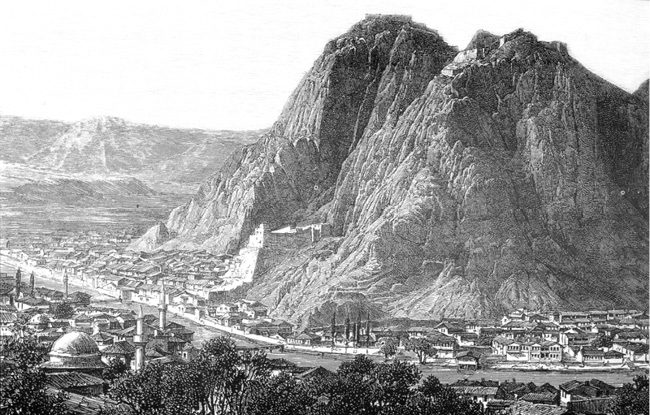
Amasya, W. Taylor, P. Reclus
Kızıl Koca oğlanlarının Yörgüç Paşa tarafından cezalandırılması
Yörgüç Paşa, Kızıl Koca oğlanlarının Amasya ve Tokat yöresindeki kötülüklerini bertaraf etmek için, askerî güç kullanmak yerine hile yolunu tercih eder. Hemen padişah ağzından bir mektup yazarak çeşitli hediyelerle birlikte Kızıl Koca oğlanlarına gönderir. Mektupta, onlardan, Canik Bey’i Alp Arslan’a karşı birlikte hareket etmeleri ve Canik’i vurduktan sonra Artukova’ya gelmeleri istenir; Artukova’nın kendilerine tımar verileceği vaat edilir.
Padişahın elçisiyle Yörgüç Paşa’nın elçileri, Kızıl Koca oğlanlarını Çorum’da bulurlar. Mektupları okuyan Kızıl Koca oğlanları çok sevinir. Bu haberleri duyan dört yüz Türkmen, onların yanında toplanır. Aralarında, hırsızlık dâhil, çeşitli suç işlemiş kişiler de vardır. Türkmenler, Merzifon Ovası’na gelip konar. Yörgüç Paşa’yı beklerler ve niçin gelmediğini sorarlar. Kendilerine Yörgüç’ün hasta olduğu söylenir. Bunun üzerine Amasya’ya hareket ederler. Amasya girişinde bunları Yörgüç’ün oğlu Hızır Bey (ö. 1444) karşılar. Hızır Bey, Türkmen ileri gelenlerine babasının neden gelemediğini anlattıktan sonra, onlara şehirde birkaç gün dinlenmelerini söyler. Hızır Bey, babasının iyileşmemesi durumunda, Canik beyine karşı yapılacak sefer için onların yeterli olacağını, hatta gerekirse kendisinin de gelebileceğini ifade eder. Hızır Bey, Türkmen liderlerini bir saraya yerleştirir. Yörgüç Paşa, dört Kızıl Koca oğlanına şarabın yanında başka yiyecek içecek de gönderir. Türkmenlerin başı olan bu dört kardeş sarhoş olduklarında yakalanır ve başları kesilir. Dört yüz Türkmen tutulup Yörgüç’e getirilir. Verilecek ceza konusunda ortaya değişik görüşler atılır. Hepsinin bir hapse atılıp ateşe verilmesini isteyenlere karşılık Yörgüç’ün görüşü farklıdır. O, Amasya’nın kesme kayadan bir zindanı olduğunu, zindanın boşaltılarak, bu dört yüz Kızıl Koca Türkmen’inin buraya atılıp zindanın ağzının kapatılmasını ister.
Bu olayın üzerinden yedi gün geçtikten sonra bir kadın Yörgüç’e gelerek, terzi olan oğlunun zindana neden atıldığını, oğlunun işi gereği Türkmenlerin arasında bulunduğunu söyler. Yörgüç Paşa, kadına, bu işe artık bir çare olmadığını ifade eder. Bunun üzerine kadın, oğlunun ölüsüne de razı olur. Yörgüç’ün emriyle zindan açılır ve dört yüz ölü arasından bu kadının terzi oğlu bulunur. Henüz ölmemiş olması suçsuz olduğuna işaret sayılır. Yörgüç Paşa, meyyitlerin zindandan çıkarılıp defnedilmeleri yerine Amasya Irmağı’na bırakılmalarını emreder. (ÂPT, 1949: 168-170; NT, 272-274, dipnot 3411)
Canik Beyi Alp Arslan oğlunun II. Murad tarafından hapsedilmesi
Yörgüç Paşa düğün yaptı, Alp Arslan oğlunu da düğüne çağırdı. Alp Arslan oğlu, Yörgüç’e haber gönderdi. Maksadınız bu benim elimdeki ormanı almak. Şimdi gelin tımar edin. Ben hünkâra varayın, hünkâr sağ olsun. Bana da tımar vere dedi. Ve hem Yörgüç’ün hevesi bu idi ki onun üzerine vardı. Alp Arslan oğlunu Yörgüç’e gönderdi. Sen gelme, ben varayın dedi ve hem geldi. Yörgüç tutup hünkâra getirdi. Bursa’da bir evde hapsettiler, uzun zaman eğlenmedi. Ev halkını da Yörgüç Amasya’ya getirdi. Alp Arslan oğlu bir gece kendisini bekleyen kişiyi sağlamca bağladı. Hazırlığını yapmıştı. İp ile kendisi hisardan aşaıya indi. Atları hazır etmişler idi, binip gitti. İki yıldan sonra hünkâra geldi, hünkâr da kendisine iyi tımar verdi Rumeli’de, ailesini de yanına getirdiler. (ÂPT, 1949: 171; krş. NT, 2008: 275-276)
Hem eyle etti Yörgüç’e geldi______Onu haps ile Yörgüç şâha saldı
Hisar-ı Bursa’da bir evde onı______Koyup beklerleridi her zamânı
Meger bir gece fursat buldu kaçtı______Hisarın burcuna bir ipi taktı
O ipten sarkınıp pes yere indi______Tedârük etmişidi ata bindi
Geceyi gündüze kattı ve gitti______Menâzil kesti ve mülküne yetti
Bu hâl üzre iki yıl sürdü devrân______Tefekkür etti ibn-i Alp-Aslan
(HT, b. 2579-2584)
Karamanoğlu İbrahim Bey’in sancak beyinin hapsedilmesi
Karamanoğlu İbrahim Bey, Hamid-ili ucunda Beyşehri’ne hücum edip, şehri alıp, sancak beyi Şarapdar İlyas Bey’i tutup hapsetti. (NT, 2008: 280)
Dururken Edirne tahtında sultan ______Meger ki bir süvâr erdi şitâbân
Dedi dîvân günü dergâha geldi______Hamid-ilini Karaman-oğlu aldı
Tutup sancak beğini hapsetti ______Eli zabt eyledi tahtına gitti
(HT, b. 2693-2996)
Sultan II. Murad’ın Eflak Beyi Drakula’yla iki oğlunu ve Vılkoğlu’nun da iki oğlunu hapsetmesi
Drakula’ya ve Vılkoğlu’na kapıya [devlet eşiğine/padişah huzuruna] gelin dediler. Vılkoğlu kendi gelmedi, iki oğlunu gönderdi. Drakula gördü ki, Vılkoğlu bunun gibi etti. Kendi iki oğluyla kapıya geldi. Drakula’yı tuttular, oğlanlarını da. Kendisini Gelibolu Hisarı’nda hapsettiler, iki oğlunu Germiyan vilayetinde Eğrigöz Hisarı’nda hapsettiler. Vılkoğlu’nun iki oğlunu Tokat Hisarı’nda hapsettiler. (ÂPT, 1949: 179)
Drakula’ya ve Vılkoğlu’na kapıya gel dediler. Vılkoğlu gelmedi. Ama Drakula iki oğlunu alıp kapıya geldi. Hemen geldiği gibi Drakula’yı iki oğluyla tutup, kendisini Gelibolu Hisarı’nda hapsedip, oğlanlarını Germiyan vilayetinde Eğrigös Hisarı’nda hapsetti. (NT, 2008: 287, dipnot 3576)
Vılkoğlu’nun iki oğlunu tutup, Dimetoka’da hapsedip, oradan çıkarıp, Balaban Paşa ile Tokat’ta Bedevi Çardak’a iletip, gözlerine mil çektiler. (NT, 2008: 288)
Drakula’ya şah gönderdi âdem______Drakula’ydı Eflak’a beğ o dem
Dedi ki âdemim vardığı sâat______Gerektir emrime edip itâat
İki oğlanlarını bile alasın______Sürüp ta’cîl kapıma gelesin
Yine bu resme Vılkoğlu’na âdem______Salıp dedi ki âdem vardığı dem
Gerek oğlanların bile alasın______Sürüp sür’atle kapıma gelesin
Sakın deme ki ben serdâr-ı Laz’am______İtâ’at etmezem ben ser-firâzam
İki oğlunu gönderip gelmedi kendi______İçi hâyinidi korkup üşendi
Drakula iki oğlunu aldı______Sürüp ta’cîlile dergâha geldi
İki oğlu da Vılkoğlu’nun erdi ______Paşalar pâdişâha eydivirdi
Hemen emr oldu cümle bend ederler______Buları haps için alıp giderler
Gelibolu Hisarı’na iletti______Drakula’yı kullar hapsetti
İki oğlunu Germiyan’da haps ederler______Ki ona Eğrigöz Hisarı derler
Edip irsâl şâhın kulları ile______O Vılkoğlu’nun iki oğlu bile
İledirler Tokat’ın kal’asında______Ederler haps anda ikisini de
(HT, b. 2830-2843)
Neşrî’ye göre bu olay 1438/39 yılında meydana gelmiştir. Verilen metinlerde görüldüğü gibi Sırp Kralı’nın iki oğlunun hapsedildikleri yer hakkında iki farklı rivayet vardır. Hapsedilen bu iki kral oğlu, daha sonra serbest bırakılmıştır.
El-hâsıl Vılkoğlu’na vilayetini yine verdiler. Vılkoğlu’nun iki oğlu ki Tokat’ta idi, gözlerine demirli sürme çektiler, atasına gönderdiler. (ÂPT, 1949: 183)
Ve de Vılkoğlu’nun iki oğlunu Tokat hapsinden çıkarıp, yine atasına gönderdi. Ama gözlerine mil çekilmişti. (NT, 2008: 294)
Halil Paşa’nın kardeşi Mahmud Bey’in hapsedilmesi
Kâfirin pususu var imiş. Bunlar gafil iken Halil Paşa’nın kardaşını tuttular, o Bolu sancağının beyi idi. Halil Paşa’nın kardaşını dahi Ungurus’tan satın aldılar. (ÂPT, 1949: 183)
Kâfirin pususu var imiş. Bunları gafil iken ortaya alıp, Halil Paşa’nın karındaşı Mahmud Çelebi’yi tuttular. O vakit Bolu sancağı beyi idi. Mahmud Çelebi’nin hatunu matem suretinde gelip, hünkârın [II. Murad] elini öpüp, tazarru edip [yalvarıp], Mahmud Çelebi’nin kurtarılması için hünkâra yalvardı. Hünkârın dahi özü göyünüp [içi yanıp/üzülüp] Mahmud Çelebi’yi satın aldı. (NT, 2008: 294)
Rum-illi’nin kaçtığını kâfir görünce Anadolu [askeri] üzerine galebe etti. Anadolu askerini bozguna uğrattılar. Halil Paşa karındaşı Mahmud Bey orada hapsoldu. (AOK, 2000: 78)
Uç beylerinden Turahan Bey’in hapsedilmesi
Murad Han, Turahan Bey’i tutup Tokat Hisarı’na gönderdi. (Takvimler, 1984: 31)
Pâdişâh-i âlem-penâh [âlemin sığınağı padişah] hazretleri bir gün divan edip fakir fukaranın işlerini görürken Turahan Bey’e gözü ilişti ve o saat Baltaoğlu’na ferman eyledi ki, Turahan’ı tutup divanıma getir diye buyurdu. Kapıcıbaşı da Turahan Bey’i tutup padişah emri ile hapseyledi. Turahan’ı götürüp Tokat Kalesi’nde hapseyleyeler. Kapıcıbaşı dahi Turahan’ı götürüp Tokat Kalesi’ne hapseyledi. (GN, 1978: 31)
Turhan Bey’i tuttu, Tokat’a Bedevi Çardak’a gönderdi. Onun için ki ekser kâfirle savaşmaya sebep o olmuş idi. Ve hem söylediler ki, Turhan Vılkoğlu’yla gayet dosttur dediler. (ÂPT, 1949: 184)
Turhan Bey’i Tokat’ta Bedevi Çardak’a gönderdi. Zira ekser küffarla savaşa sebep o idi ve hem Vılkoğlu’yla dosttur, dediler. (NT, 2008: 294)
Ele girmedi Yanko kaçtı gitti______İşit Sultan Murad’ı ki nice etti
Turahan Bey’i şâha gamz ederler______O buluşdurmadı küffârı derler
Onun küffârile dâim eli var______El altından olarunla dili var
Şeh emr edip tutup alıp giderler______Tokat’ın kal’asında haps ederler
(HT, b. 2930-2933)
Varna Savaşı (1444) sırasında II. Murad, Azap Bey’in ricası üzerine, Turhan Bey’i serbest bırakmıştır:
Azap Bey, Turhan Bey’i hünkârdan diledi, Tokat Hisarı’nın hapsinden çıkarttı, hünkâr dahi azat etti. (ÂPT, 1949: 185)
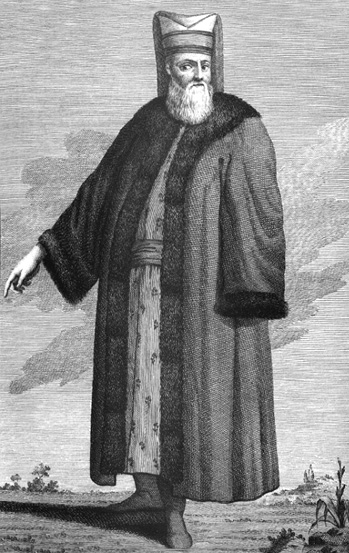
Kapıcı, D’Ohsson
Azap Bey, Turhan Bey’i hünkârdan dilek edip, Tokat Hisarı’nın hapsinden kurtardı. (NT, 2008: 297)
İsfendiyaroğlu Hasan Bey’e çadır hapsi
İsmail Bey oğlu Hasan ki Engüri’ye [Ankara] geldi, hemen tuttular kapıcılar çadırına ilettiler. (ÂPT, 1949: 204; NT, 2008: 330)
Yazıp bir nâme bir kula verirler______Yine İsmail Bey’e gönderirler
Denilmiş nâme sana erdiği dem______Hasan Bey oğluna koş yarar âdem
Hasan Bey’i yarar yoldaşlar ile______Koşup gönderdi Engüri’ye bile
Hasan Bey’i buyurdu şâh-ı a’zam______Tutup haps eylediler anda o dem
(HT, b. 3630, 3631, 3633, 3636)
Bosna Kralı’nın Osmanlı elçisini hapsetmesi
Padişahın gönderdiği elçi krala vardı. Onun emrini krala gösterdi. Kral mektubu okuyup, yazılanları anlayınca, “Çabuk bu Türk’ü tutup öldürün!” dedi. Bir akıllı veziri vardı. Bu vezir, “Hey kral! Neylersin? Kendi ülkende kendini helak edersin, evini yıkarsın. Şimdi bu Türk’ü öldürünce, Türk’ün beyi ile çıkışabilir misin? Derler ki, şimdi bu Türk’ün beyi yavuzdur, çok büyük padişahtır. Şöyle ki, dünya halkının onunla uğraşmaya gücü yetmez.” dediler. Vezirden bu haberi işiten kral, elçiyi öldürmeye girişemedi. Bir nice gün hapsedip, sonunda serbest bıraktı. Elçi gelip bütün olup bitenleri padişaha bildirdi. (ÂPT, 1949: 211; NT, 2008: 336)
Kral emr etti elçiyi tutarlar______İletip evc [yüksek] kaleden atarlar
Vezîri dedi evme etme taksîr______Buyur haps eylesinler görelim bir
Nolaydı bu kaderde olmayaydı______Ola ki Türk bunda gelmeyeydi
Kral elçiye ki destûr verdi______Gelip elçi Mehmed Han’a erdi
(HT, b. 3816-3819)
4.1.21. Sultan II. Mehmed’in Bosna Kralı’nı cezalandırmak istemesi (ÂPT, 1949: 212; NT, 2008: 337)
Krala dedi ki gelsin şâha tapsun______Mutî’ olsun harâca elin öpsün
Dahi birkaç hisarını şâha versin______Şehün kulları girsin zabt etsin
Kralı ahd ile inandırdı paşa______Kralın gönlü hoş buldu tesellâ
Hisarını eder paşaya teslim______Dedi ben kuluyam şâhundur iklim
Çü paşanın bu ahdini işitti______Mehmed Han dedi yanlış iş etti
Muradı bu idi şâh-ı cihânun______Ki ala cebrî cümle mülkin anun
(HT, b. 3845, 3846, 3851-3854)
Kuvac ve Pavlı illeri beylerine çadır hapsi
Bosna Kralı, padişaha geldiğinde küçük kardeşi ile birlikte tutuldu. Sonra kralı getirip Yayça halkına gösterdiler. Yayça’yı padişaha hemen teslim ettiler. Kralın vilayetlerine bitişik vilayetler vardı. Birine Kuvaç ili derlerdi. Bu Kuvaçoğlu padişah yanında olurdu. Ve bir bey daha vardı, kendisine Baflıoğlu derlerdi. Onun da hayli ili vardı. O da padişah yanında olurdu. Mahmud Paşa, kralı getirip tutukladı. O iki bey oğlanlarını birlikte tutup, kapıcılar çadırına bırakmışlardı. Tutsak edilen Kuvac ve Pavlı ili beyleri, Şeyh Ali Bistami’nin fetvası üzerine öldürüldü. (ÂPT, 1949: 212-213; NT, 2008: 338)
Şehin geldiğini çünkü bilirler______O iki iklimin beyi gelirler
Ki yani edeler şâha mudara______Bulalar tâ halâs olmağa çâre
Kral geldi heman hapsetti hünkâr______O iki beyleri de etti giriftâr
(HT, b. 3861-3863)
Uzun Hasan’ın bazı adamlarının hapsedilmesi
Akkoyunlu hükümdarı Uzun Hasan’ın Yusufça Bey kumandasında gönderdiği Akkoyunlu ve Karakoyunlulardan oluşan kuvvetler, Tokat başta olmak üzere, Anadolu’daki bazı şehirleri yağma ederler. Bunun üzerine Sultan II. Mehmed, Karaman Valisi Şehzade Mustafa ile Anadolu Beylerbeyisi Davud Paşa’nın emrindeki birlikleri Yusufça Bey’e karşı sevk eder. Şehzade Mustafa düşmanın ileri gelenlerini yakalayarak başkent İstanbul’a gönderir.
Tutsak edilen beylerden birisi de Temür Küregen oğlu Emir Miranşah oğlu Emir Seydi Ahmed oğlu Emir Mehmed Bakır idi. İstanbul’da –Tanrı her çeşit belalardan korusun- hapsedildi. Burada hapishanede öldü. İstanbul’da mahpus bulunan öteki beyler ölümden kurtuldular. Canlarını sultan hazretlerinin kullarından satın aldılar. Paralarını verdikten sonra serbest bırakıldılar. (OST, 1949: 358)
Şehzade Mustafa, Karamanoğlu’nu yenmiş, Uzun Hasan’dan gelen Yusuf Mirza’yı da bir nice beylerle tutup hapsetmişti. Şehzade Mustafa, Mirza’nın elini ayağını demirleyerek ağır zincirle bağlayıp, ‘ne yaparsa yapsın’ diye babası Sultan Mehmed’e İstanbul’a gönderdi. Sultan Mehmed, onu bir nice gün hapsetti. Sonra da Uzun Hasan’a ağırlığınca altına satarak, Tokat’ın kinini ve öcünü aldı. Ve nice beyler de onunla birlikte esir olmuşlardı. Uzun Hasan, onların her birini, kendilerinin ağırlığınca ipeğe satın aldı. (NT, 2008: 350, dipnot 4117; krş. ÂPT, 1949: 221; OBT, 2008: 121)
Kara Boğdan ileri gelenlerinin hapsedilmesi
Sultan 880 (1475/76) yılında Kara Boğdan ülkesine yöneldi. O ülkenin beyi birçok kâfirlerle karşı durdu. Savaş oldu. Ulu ve yüce Sultan aşağılık ve kötü kâfiri, onun hayvan gibi belki hayvanlardan da aşağı olan tayfasını yendi. Onlara boyunlarını vurmak, eza için hapsetmek, öldürmek, köle yapmak gibi müstehak oldukları cezaları tatbik etti. (OST, 1949: 359)
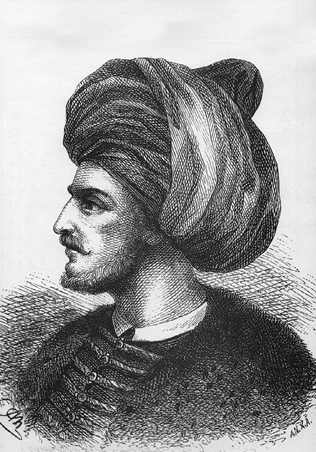
Temsili bir gravürde Fatih, Anxa
Fatih’in Gedik Ahmed Paşa’yı hapsetmesi (1479)
Hünkâr, Kara Boğdan Gazası’ndan dönerek İstanbul’a gelince hemen İskenderiye’nin fethi hazırlığı ile meşgul oldu. Gedik Ahmed’e, “Ahmed, İskenderiye’nin üzerine sen var!” dedi. Gedik Ahmed hünkârın bu sözünü kabul etmeyip, geri çevirdi. Bunun üzerine hünkâr da Gedik Ahmed’i tutup, Boğazkesen Hisarı’nda hapsetti. (ÂPT, 229-230; NT, 2008: 365)
Uzun Hasan’ın Osmanlı beylerini hapsetmesi
Vezir Mahmud Paşa, Ali Bey’in sözüne iltifat etmeyerek, tepebaşına çıktığı gibi düşmanla buluştu, derhal dönüp kaçtı. Ali Bey, Mahmud Paşa’yı kurtarmak ardınca oldu. Ve Has Murad’dan hiç haberleri olmadı. Düşman bunlara yetişti. Has Murad’la buluşarak, onu araya alıp yok ettiler. Sonra Turhan Beyoğlu Ömer Bey’i, Hacı Bey’i ve Fenarîoğlu Ahmed Çelebi’yi de nice subaşılarla birlikte tutup, esir ettiler. Uzun Hasan, oldukça tanınmış bu üç kişiyi bırakmayıp, yanında alıkoydu. Geri kalanını Bayburt’a gönderdi. (ÂPT, 1949: 223; NT, 2008: 353)
Sultan Mehmed’in ordusu Uzun Hasan’ın ordusunu ardınca kova gittiler. Uzun Hasan’a erişemeyip ordusuna erişip, yağma ve talan kıldılar. Meğer Has Murad cenginde beylerden Turhan Beyoğlu Ömer Bey, Hacı Bey, Fenarîoğlu Ahmed Bey ve daha birkaç beyler esir olmuşlardı. Ecel gelmemişti. Kudret şöyle yüz göstermişti. Uzun Hasan bunları bir çadır içerisinde hapsetmişti. Uzun Hasan’ın ünlü adamlarından biri bunları bilip, ordu yağması olurken, o kişi gelip bu beylerin olduğu çadırı yıkıp belirsiz eyledi. (OBT, 2008: 124)
Azaplar Ağası Mahmud Ağa’nın Cem Sultan tarafından hapsedilmesi
Azaplar ağası Mahmud Ağa Cem Sultan elinde hapsoldu. Sonra kurtulup kaçıp Sultan Bayezid’e geldi. Gördüğüne göre haber verdi. Sultan Bayezid hazır olan yeniçeri ve Rumeli askeri ve Anadolu askeriyle Sultan Cem ardınca Karaman’a çıktı. (OBT, 2008: 134)
Varsak beylerinin hapsedilmesi (1486)
Turgutoğlu kaçıp Varsak beyleri yine sulh edip, birkaç Varsak beyini tutup hapsedip sonra Davud Paşa o aradan dönüp gelip askere izin verip kendi gelip Vize’de Sultan Bayezid ile buluştu. (AOK, 2000: 133)
Savaş arasında Anadolu Beylerbeyisi Hersekoğlu Ahmed Bey’in atı tekerlenip, kendi attan yıkılıp, bir eli yaralanıp parmaklarında kılıç tutmaya güç kalmadı. Kendinden geçip o arada şehit olmak istedi, ama ecel henüz gelmemişti. Arap ünlülerinden birisini kılıcıyla atından yıktı. Sonunda üzerine çokluk adam üşüp tutup Özbek Bey’e ilettiler. Birçok beyi ve Kraloğlu İshak Bey’i tutup Sultan Kayıtbay’a ilettiler. Emredip hapsettiler.
O sırada Tekederesi’nden ve Osmaneli’nden üç yüz kadar Varsak yiğitleri gelip bir sarp yerde durup cenk ettiler. Hayli adam helak edip telef ettiler. Sonunda barışa razı oldular. Yeniçeri bir yerden yol bulup, yaylım ateşi edip, hep birden yürüyüp varıp o Varsakları kırdılar. Oğul, kız, gelin, avrat, erkek hepsini esir ettiler. İki üç gün kadar hapsedip sonra salıverdiler. (OBT, 2008: 209)
Derencil Ban’ın Karahisar Kalesi’nde hapsedilmesi (1492/93)
II. Bayezid devrinde Yakup Paşa kumandasında Bosna’ya akınlar düzenlenir. Bosnalılar, Macar Kralı’ndan yardım isterler. Kırbova Savaşı’nı (1493) Yakup Paşa’nın kumandasındaki Osmanlı kuvvetleri kazanır. Birçok esir alınır. Esirler arasında tanınmış banlardan/beylerden Derencil Ban da vardır. Derencil Ban’ın da aralarında bulunduğu esirler zafer müjdesini bildiren mektuplarla Sultan Bayezid’e gönderilir ve hapsedilirler.
“Ve o Derencil Ban’ı hünkâr Karahisar’a hapse gönderdi.” (ÂPT, 1332: 243)
[Sultan II.] Bayezid bunları görünce ziyadesiyle sevindi. Ban’ı zincire vurulmuş olarak deniz yoluyla Karahisar Kalesi’ndeki hapse gönderdi.” (Kreutel, Hanivaldanus Anonimi, s. 23)
İledirler alemler cümle ma’kûs______Derencil Ban nice ban dahı mahbûs
Buyurdı banları alıp giderler______Karahisar’a varıp haps ederler
(HT, b. 4870, 4876)
Sonuç olarak, 15. yüzyıl Osmanlı tarih kaynaklarının verdikleri bilgilere göre, padişahların hapisle cezalandırdıkları kişiler genellikle kadı, beylerbeyi veya vezir unvanını taşıyan kamu görevlileri ile şehzadelerdir. Görevini suiistimal eden, layıkıyla yapmayan, el altından düşmanla işbirliği yapan veya padişahın emrine itaat etmeyenler hapsedilmiştir. Özellikle siyasî istikrarın olmadığı, ülkede birlik ve bütünlüğün bozulduğu zamanlarda iktidara gelen padişah, kendisinden önceki padişah dönemindeki üst düzey yöneticileri, sadece görevlerinden almakla kalmayarak, bazen geçici de olsa hapse atmıştır. Kimi padişahlar, kendi iktidarlarını güçlendirmek ve korkusuzca icraat yapabilmek için siyasî bir tedbir olarak, böyle bir uygulamada bulunmuş ve bunu âdeta meşru bir yol olarak görmüşlerdir. Sınırsız bir güce ve otoriteye sahip olduğunu düşünen Fatih Sultan Mehmed gibi padişahlar ise gücünü askerden alan vezir rütbesindeki devlet adamlarıyla ihtilafa düştüklerinde, çıkan ilk fırsatta bunları önce hapis sonra da idam cezasıyla cezalandırmakta hiç tereddüt göstermemişlerdir.
Kuşkusuz, bu dönemde hapsedilenler sadece Osmanlı Devleti’nde kamu hizmeti gören yöneticiler değildir. Osmanlı padişahına karşı yükümlülüklerini yerine getirmeyen haraçgüzar Balkan beylerinden/krallarından da hapis cezasına çarptırılanlar olmuştur. Haraçgüzar statüsündeki beyler, seferde padişaha asker göndermek, haracını düzgün bir şekilde ödemek, oğlunu Osmanlı sarayına göndermek ve kendisi de yılda bir kez padişahın huzuruna çıkmak zorundaydı.
Osmanlılar, andlaşma yaptıkları bazı ülkelerin, tek taraflı olarak andlaşmaları bozmaları üzerine veya başka sebeplerle, o ülkelerin çeşitli derecelerdeki görevlilerini hapsetmişlerdir. O kadar ki, bu tür hapis olayları bazen misillemeye dönüşmüştür. Ayrıca, Osmanlılara tâbi olduğu halde Osmanlılar aleyhine diğer beylerle/krallarla iş birliği yapan yöneticiler de bu tutarsız politikalarının bedelini hapisle veya hayatlarıyla ödemişlerdir.
Hapisle sonuçlanan bazı olayların perde arkasında, başlangıçta padişahların içinde bulunmadığı gelişmeler söz konusu olabiliyordu. Kamu görevi yapan aynı rütbedeki kişiler arasında rekabet, kıskançlık, makam hırsı gibi nedenler yüzünden kıyasıya bir mücadele yaşanırdı. Kin ve nefret duyulan bir kişi, iftira ve uydurma haberlerle padişahın gözünden düşürülmeye çalışılırdı.
Osmanlı toplumunda halktan kişilerin hapisle cezalandırıldıklarına dair bu dönemin tarih kaynaklarında herhangi bir kayda rastlanmaz. Ancak bu, resmî görevlilerin dışındaki kişilerin suç işlemedikleri ve cezalandırılmadıkları anlamına gelmez.
Osmanlı toplumunda zina, iftira, hırsızlık, hakaret, eşkıyalık, meskene ve iş yerine tecavüz, adam öldürme gibi fiilleri işleyenlere verilecek cezalar kanunnâmelerde belirtilmiştir. Suçu sabit olan bir kişiye verilecek cezaya padişah adına kadı yetkilidir. İşlenen suçun karşılığı olarak para cezası öngörülmüş ise bunun miktarı, kişinin ekonomik gücüne, müslim/gayrimüslim, evli/bekâr oluşuna göre değişirdi.
Kişiler arasındaki davalar barışla çözülürse bu durum mahkemeye tasdik ettirilirdi. Reaya/halk kesiminden kişilerin işledikleri suçlar ve bunların hukukî sonuçlarına dair kayıtlar mahkeme kararlarının yer aldığı şer‘iye sicillerinde bulunmaktadır. 16. yüzyıldan itibaren çeşitli hapis olayları ile ilgili olarak mühimme defterlerinde de değişik örnekler bulmak mümkündür.
İncelenen dönemde hapis mekânları olarak geçen yerler, Osmanlı ülkesinin Anadolu yakasında Bursa, Yenişehir, Bedevi Çardak (Tokat’ta), Amasya, Eğrigöz (Kütahya’da bugünkü Emet), Karaman, Karahisar ve İpsili; Avrupa yakasında ise Dimetoka, İpsala, Gelibolu, Edirne, İstanbul (Saray, Yedikule ve Boğazkesen Hisarı) gibi kale ve şehirlerdir. Bu hapishanelerin fizikî özelliklerine dair dönemin tarih metinlerinde herhangi bir bilgi mevcut değildir.
Siyasî bir tedbir olarak hapse atılanların bazıları, kendilerine duyulan ihtiyaç üzerine, daha sonra serbest bırakılmışlardır. Uzun bir süre hapis yatanlar olduğu gibi birkaç gün hapsedilenler de olmuştur. Hapis cezasına çarptırılanlardan kimileri, gördükleri kötü muamele sonucu veya bilinmeyen başka nedenlerle hayatlarını kaybetmişlerdir. Bazı mahpuslar, yaşadıkları hapis ortamından kurtulmak için, ölümü dahi göze alarak, ilginç firar yollarına başvurmuşlardır. Bunların bir kısmı kendi imkânları ile hapisten kaçarken, bir kısmı içeriden/dışarıdan aldıkları yardımlarla firar olayını gerçekleştirmişlerdir. Bazılarının firar girişimleri ise sonuçsuz kalmış ve bunlar, kendilerine yardımcı olanlarla birlikte idam edilmişlerdir.
Bir iki olay dışında, hapis veya idam cezasına çarptırılanların bu cezayı hak etmediklerine dair, o zamanki yönetime karşı askerin ve halkın herhangi bir tepkisi olmamıştır. Bununla birlikte, ülkeye unutulmaz hizmetleri geçen vezir/veziriazam rütbesindeki bazı kişilerin, çok önemli olmayan nedenler yüzünden, önce hapis sonra da idam edilişlerini halkın tasvip etmediği, daha çok halk ve asker kesimine hitap eden, dönemin tarih kaynaklarındaki kayıtlardan anlaşılmaktadır. Halkın duygu ve düşüncelerine tercüman olan söz konusu eserlerin, adını bilmediğimiz yazarları, idam edilen bu tür görevlilerin şehit edildikleri görüşündedirler. (N. Öztürk, Osmanlılarda Hapis Olayları (1300-1512)-Türkçe Kroniklere Göre -”, Hapishane Kitabı, ed. Emine Gürsoy Naskali-Hilal Oytun Altun, İstanbul 2005, s. 101-129)
Bedenî cezalar
Osmanlı padişahlarının otoritelerine karşı çıkan, haracını vermemekte ısrar eden, davetlerine icabet etmeyen, kendilerine ihanet eden veya ettiği ileri sürülen bazı kişilerin veya onların çocuklarının gözlerine mil çekilir ya da gözleri çıkartılırdı. Ancak bu, fazla yaygın olmayan bir cezalandırma biçimi idi. Padişahların çok daha sık başvurdukları ceza ise hapis veya zindan cezası idi. Verilen bütün ağır cezaların caydırıcı niteliği olduğu unutulmamalıdır. Kaynak metinlerden yapılan alıntılarda da görüldüğü/görüleceği üzere padişahlar, merkezî otoriteyi zaafa uğratacak, toplumu kaosa sürükleyecek fiilleri işleyenlere hak ettikleri cezaları vermişlerdir.
Gözü çıkartılanlar
Orhan Çelebi
Sultan Mehmed ve Musa Çelebi birbiri ile mücadele ediyordu. İstanbul Kralı, Sultan Mehmed’den çekindiğinden Emir Süleyman’ın oğlunu kabul etmek istemedi, çünkü Sultan Mehmed ile andlaşması vardı. Bu sebepten oğlan [Orhan] İstanbul’dan çıkıp Eflak’a gitmek için Karinovası’na vardı. Karinovası’nın akıncıları oğlanı Eflak’a gitmeye bırakmayıp yanında toplandılar ve “Sana yardımcıyız” deyip, onu tahrik ederek Yanbolu’ya götürdüler.
Bu haberi işiten Sultan Mehmed, oğlanın üzerine hücum etti. Sultan Mehmed’in yürüdüğünü işiten akıncılar oğlanın yanından kaçıp dağıldılar. Oğlanın bir lalası vardı, Terzibaşı Zağanos derlerdi. Oğlanı alıp Sultan Mehmed’e getirdi. Sultan, ‘oğlanın gönlü [gönül] gözünü açtı. Dünya gözünü örttü’ [oğlanın gözlerini çıkarttı] Bursa’ya gönderdi, kendisi de eğlenmeyip ardınca Bursa’ya geldi. Emir Süleyman’ın bir de kızı vardı. Sultan, o kızı Bursa’da bir sancak beyine verdi. Oğlana da iyi tımar verdi. Geyve yöresinde Akhisar derler, o çevrede Çardak Köyü’nü [‘Çardak’ Neşrî’de geçmez] derler, bir kâfir köyünü oğlana tımar verdi.
Sultan Mehmed, Bursa’ya her geldiğinde Emir Süleyman’ın oğlunu getirtir, hayli ihsanlar ederdi. “Kardeşimin oğludur” diyerek onu hoş tutar, gönlünü alırdı. Oğlanın kız kardeşine de daima ihsanını eksik etmezdi. (ÂPT, 1949: 149-150; NT, 2008: 244)
Görüldüğü kadarıyla Osmanlı ülkesinde ilk göz çıkarma cezası Çelebi Mehmed zamanında uygulanmıştır.
Gözlerine mil çekilenler
Hacı İvaz Paşa
Hacı İvaz Paşa’ya II. Murad’ın verdiği cezayı kaynaklar, ‘gözlerini çıkarttı’; ‘gözlerine mil çekti’ şeklinde kaydetmektedirler:
Murad Han, Vezir Hacı İvaz Paşa’nın gözlerini çıkarttı, 829 (1425/26) yılında. (Takvimler, 1984: 23)
Sultan Murad veziri İvaz Paşa’dan bir hile duyup, gözlerini çıkarıp, yerine Saruca Paşa vezir oldu, 826 (1422/23) yılında. (Yıllıklar, 1980/81: 85)
Sultan [II.] Murad’a veziri Hacı İvaz Paşa’yı şöyle kötü anlattılar: “Kul ile iş birliği var, beyliğe kasteder. Hatta sultanımızın üstüne yürümek ister.” dediler. “Ve hem divana gelirken kaftanı içinde zırh giyer.” dediler. Padişah bu sözlerden hayli üzüntü duydu. Bir gün at ile giderken padişah, İvaz Paşa’yı yokladı; zırh giydiğine şahit oldu. “Bu nedir? diye sorunca İvaz, “Kuldan korkarım” diye cevap verdi. Padişah, İvaz Paşa’yı gammazlayanların sözlerini onaylayarak, iğne kızdırıp gözlerine bastırdı. Sonra gözüne mil [Türlü işlerde kullanılmak için yapılan ince ve uzun metal çubuk] çekip kör etdiler [kızgın mille kör ettiler]. (NT, 2008: 265, dipnot 3321)
Vılkoğlu’nun oğulları
Hünkâr, yaz olunca Semendire üzerine yürüdü. Hisarlarını sağlamlaştıran Vılkoğlu iki oğlunu Semendire’de bırakıp kendisi Ungurus’a [Macaristan’a] gitti. Bunun üzerine hünkâr buyurdu, Laz ilini vurdular. Öyle doyum ile geldiler ki, dört yaşındaki oğlanı Üsküp’te yirmi akçaya sattılar. Drakula’yı Dimetoka’da, iki oğlunu ise Gelibolu Hisarı’nda hapsettiler. Sonra bu oğlanları Balaban Paşa ile Tokat’ta Bedevi Çardak’a iletip gözlerine mil çektiler. Sonra Vılkoğlu ile andlaşma yapılınca bu iki oğlu da hapisten çıkarılıp kendisine gönderildi. Semendire, 1438/39 yılında fethedildi. (NT, 2008: 287-288, 294)
İdam / Ölüm cezaları
Osmanlı Devleti’nin kuruluş döneminde şer‘î hukuka göre yargılanarak idam edilen tek kişi, Simavna (Yunanistan’da) kadısıoğlu Şeyh Bedreddin’dir (ö. 1416). O, yargılandığı davada mahkeme jürisinde bizzat bulunmuş ve eyleminin idam olduğuna kendisi de hükmetmiştir. Bunun dışındaki idamlar örfî hukuka göre, yani padişahın takdir yetkisinde olan cezalardır. Ancak bu tür idamlar kimi zaman kamu vicdanını tatmin etmemiştir. Nitekim bazı tarih yazarları, idamı hak etmediklerini düşündükleri vezir veya diğer kamu görevlileri için ‘şehit’ ifadesi kullanmışlardır.
Daha önce bahsedildiği gibi Türk-Moğol geleneğini izleyen Osmanlılarda hükümdarlık için bir ‘veraset kanunu’ yoktu. Kimin tahta geçeceğini siyasî olaylarla “Tanrı”nın iradesi belirliyordu. Taht, ilahî takdire daima açıktı. I. Ahmed devrinde (1603-1617), padişah olma hakkını hanedan üyelerinden en yaşlısına veren bir düzenleme (ekberiyet sistemi) yapılıncaya kadar, şehzadeler arasında saltanat kavgaları hiç eksik olmadı.
Burada, hayatlarına son verilen şehzadelerle öldürülen diğer kamu görevlileri üzerinde durulacaktır. Şehzadelerin öldürülmelerinin esas nedeni saltanat iddiasıyla bizzat ortaya çıkmış olmaları veya çıkma ihtimalleri yüzündendir. Konu hakkında ileride Kardeş Katli başlığı altında daha teferruatlı bilgi verilecektir.
Osmanlılarda iktidar mücadelesi için ilk kan dökme olayının Osman Gazi’nin, amcası Dündar’ı ortadan kaldırmasıyla başlamış olduğu söylenebilir.
Dündar Bey neden öldürüldü?
Ertuğrul Gazi öldüğünde beyliğin başına geçebilecek iki aday (amca-yeğen) vardı: Biri kardeşi Dündar, diğeri oğlu Osman. Bu ikisinden hangisinin bey olacağı hususunda ihtilaf çıktı. Sonuçta halk/aşiret, yeğeni amcaya tercih etti; Osman üzerinde anlaşma sağlandı. Bu suretle aşiretin yönetimi Osman üzerinde kaldı. Bu konudaki tek kaynağımız tarihçi Neşrî’nin yazdıklarıdır. Onun verdiği bu bilgileri teyit edecek şimdilik herhangi bir bilgi ve belgeye sahip değiliz. Daha önce de ifade edildiği gibi taht kavgalarına dayalı bu tür öldürme olaylarının Türk devletlerinde çok eskiden beri olduğu bilinen bir husustur.
Ertuğrul iyice ihtiyarlayınca oğlu Osman, kendi boyları içinde hâkim oldu. Göçerevlerin bazısı Osman’ı, bazısı amcası Dündar’ı ‘bey yapmak’ istediler, ama kendi kabilesi Osman’ı tercih etti, el altından haber gönderip söyleştiler. Halkın ortasına gelen Dündar, halkın Osman’a meylini ve bağlılığını görünce beylikten vazgeçip, kendisi de Osman Gazi’ye itaat etti. Kardeşleri ve bütün göçerevli Türkler, onun hükmü altına girdi. Bu zamanda Sultan II. Alaaddin’in, Sultan Öyüğü’nün Eskişehir’inde ve İnönü’nde naipleri vardı. Osman Gazi bunların yanına gider gelir, dostluk ederdi. Fakat özellikle İnönü beyi ile iyi dost idi. Sık sık bir araya gelip yiyip içerlerdi. (NT, 2008: 39)
Yenişehir civarındaki Köprühisar tekfuru, Bilecik tekfurunun üzerine yürüdü. Bilecik tekfuru, Osman Gazi’den yardım istedi. Osman, amcası Dündar’ı yerine kethüda [yardımcı/vekil] bıraktı. Kendisi, gazileri toplayıp Bilecik tekfuruna yardıma gitti. Köprühisar tekfurunu yendi, tekfur hisara girdi. Osman, Köprühisar’ı kuşatıp fethetti ve tekfurunu tepeledi. Bilecik tekfuru buna sevinip, Bilecik’in karşısındaki İncir Pınarı adlı köyün pınarında Osman’a büyük bir ziyafet verdi, hilat giydirdi, gazilere de armağanlar verdi, elini öptürdü.
Osman Gazi, Bilecik tekfurunun beylenerek [beylik taslayarak], elini öptürmesine incindi, onu derhal yakalamak istedi. Bu hususu amcası Dündar ile müşâvere etti [görüştü]. Dündar, “Öte tarafta Germiyanoğlu düşman, bu taraf kâfirlerinin hepsi bize düşman. Bilecik’i de kendimize düşman edersek, bize duracak yer kalmaz.” dedi. Dündar’ın bu sözü, Osman’a dokundu. Osman, amcasının bu sözünü kendisinin çıkış yapmasına [güçlenmesine] engel olarak anladı, Dündar’ı okla vurup öldürdü. Köprühisar’dan Çakır Pınarı’na giden yolun kenarında mezarı vardır. (NT, 2008: 45)
Eski Osmanlı rivayetine göre Osman Gazi, oğlu Orhan’ı veliahd yaptı. Osman öldüğünde, kardeşi Alaaddin Paşa (Neşrî’nin Manisa yazması ile Unat-Köymen yayınında, Oruç Bey ve anonim tarihlerde Ali Paşa) Orhan’a, “Atamızın duası ve himmeti seninle idi. Onun için ki kendi zamanında askeri sana koşmuş idi.” (ÂPT, 1949: 115) diyerek, saltanat davasına kalkışmamış, Orhan’ın beyliğini kabul etmiştir.
Rumeli’deki gazi kuvvetlerin başında bulunan büyük oğlu Süleyman Paşa bir av esnasında ölünce (ö. 1357), Orhan Gazi hayattaki oğullarının en büyüğü olan Murad Gazi’yi ordunun başına gönderdi. Bu durum, hukuken olmasa da fiilen saltanatı Murad’a garanti ediyordu.
Şehzade Halil ve İbrahim
I. Murad’ın, kardeşleri Halil ve İbrahim’in kendisine karşı saltanat davası güttüklerine dair, Ahmedî’nin eseri dışında Osmanlı kaynaklarında herhangi bir bilgi bulunmuyor. Ahmedî, Murad Gazi’nin, adlarını vermediği kardeşlerini ortadan kaldırdığını şöyle ifade ediyor:
Oldular yagı [düşman] ana kardaşları
Kamunun [hepsinin] bitdi elinde işleri
(DTMÂO, 1949: 15/309-310)
I. Murad’ın oğlu Savcı’nın kendisine karşı saltanat iddiası ile ortaya çıktığına dair, görüldüğü kadarıyla, 15. yüzyıl Osmanlı tarihlerinde herhangi bir kayda rastlamıyoruz.
Yakup Çelebi
I. Kosova Savaşı’nda (1389) Osmanlı harp düzenine göre orta göğüste/merkezde Sultan I. Murad, sağ kolda Şehzade Bayezid, sol kolda kardeşi Yakup Çelebi bulunuyordu. Murad Gazi’nin Miloş Obiliç adında bir Sırp tarafından şehit edilmesi üzerine, savaş meydanındaki devlet ileri gelenleri yani beyler ve kumandanlar Murad’ın yerine şehzadelerden hangisinin padişah olması gerektiğini istişare ettiler ve Şehzade Bayezid’in padişahlığa layık olduğu üzerinde anlaştılar. Enverî’ye göre Murad ölmek üzere iken kendisinin yerine oğlu Bayezid’in ‘bey’ yapılmasını vasiyet eder. (DE, 2003: b. 354) Düşünce birliğine varılmasının ardından Yakup Çelebi’ye babası ağzından ordugâha çağrıldığı haberi gönderilir. Bu davet üzerine gelen Yakup Çelebi çadır içinde boğulur. Böylece Yakup Çelebi savaş meydanında idam edilen ilk şehzade olarak tarih kayıtlarına geçer. Dolayısıyla savaş alanında padişah ilan edilen ilk Osmanlı şehzadesi de Yıldırım Bayezid olur. (DE, 2003: b. 356; ÂP, 1949: 134; AOK, 2000: 34; OBT, 30)
Yakup Çelebi’nin idamına Nişancı Paşa yorumu:
[Sultan Bayezid’in] Yakub Çelebi adlı bir kardeşi vardı. Doğru düşünenlere gizli olmayacağı gibi bunun yaşamasında büyük kötülükler vardı. Sultan onun vücudunu kaldırttı. Çünkü zaruretler, yapılmayacak şeyleri yaptırır. Böylelikle, atalardan kalan ülke, bir rakibin düşmanlığı ve aykırılığı olmaksızın yiğit, cömert ve yüce sultanın elinde kaldı. (OST, 1949: 347)
İsa Çelebi
Yıldırım Bayezid öldüğünde hayatta Süleyman, İsa, Musa, Mustafa, Mehmed ve Kasım olmak üzere altı oğlu vardı. Küçük yaştaki Kasım dışındakiler Ankara Savaşı’na katılmışlardı. Savaşın Osmanlılar aleyhine sonuçlanacağını gören Süleyman, İsa ve Mehmed Çelebiler savaşı terk ederek Timur’a esir düşmekten kurtuldular.
Savaş alanından ilk ayrılan Süleyman Çelebi, babasının yönetim kadrosunu oluşturan Vezir Çandarlızade Ali Paşa, Eyne Bey Subaşı ve yeniçeri ağası Hasan Ağa ile birlikte Bursa’ya gitti; daha sonra küçük kardeşi Kasım ile kız kardeşi Fâtıma’yı da yanına alarak Gemlik’e, oradan da Güzelcehisar’a geldi. Bizans’ın yardımıyla Boğaz’ı geçen Emir Süleyman, doğru Edirne’ye hareket etti (1402).
Musa, Bursa’ya hâkim olabilmek için Karasi taraflarında bulunan İsa ile birçok kez çarpıştı ve kısa bir süre için Bursa’yı ele geçirdi. Böylece Süleyman, İsa ve Mehmed’den sonra Musa da saltanat iddiasıyla ortaya çıktı. Bu gelişmeleri öğrenen Mehmed sancağı Amasya’dan Bursa’ya geldi. İki taraf arasında meydana gelen Ulubat Savaşı’nı İsa kaybetti ve bir gemiye binerek İstanbul’a sığındı.
Edirne’de tahta çıkan Emir Süleyman, kardeşi İsa’nın kendisine teslimi şartıyla bazı yerleri Bizans’a terk etti (1403 Gelibolu Andlaşması). Serbest bırakılan İsa, Gelibolu’dan geçerek Karasi-ili’ni (Balıkesir ve yöresi) aldı. İsa’nın güçleri ile Mehmed’in güçleri arasında meydana gelen Bursa’daki savaşı yine İsa kaybetti ve Kastamonu’ya kaçtı. İsfendiyar Bey’in desteğini alan İsa tekrar harekete geçti ise de Gerede’deki çarpışmada yenilgiye uğradılar.
İsa, Kastamonu’dan tekrar Bursa’ya geldi. Mehmed bunun üzerine Bursa’ya hareket etti. İsa, İzmir’e kaçtı. Mehmed, ordusu ile hemen İzmir üzerine yürüdü. Kardeşi tarafından dördüncü kez mağlup edilen İsa, bu kez Karaman’a sığındı. Çelebi Mehmed’le dost kalmayı arzu eden Karamanoğlu, İsa’yı ülkesinden çıkardı. İsa’nın ortadan kaldırılması (1405) ve batı Anadolu beyliklerinin sindirilmesi Mehmed Çelebi’yi, daha şimdiden Anadolu’nun en güçlü hükümdarı durumuna getirdi.
İsa’nın bertaraf edilmesi ile ilgili olarak 15. yüzyıl Osmanlı tarih yazarları farklı bilgiler verirler. Enverî, İsa’yı Emir Süleyman’ın mahvettiğini (tebâh kıldığını) yazar:
Mir Süleyman kıldı İsâ’yı tebâh
Ona Musa Bey son ucı buldu râh
(DE, 2003: b. 447)
İsa Bey’in askerleri bozguna uğradılar. İsa Bey kaçıp Karaman’a gitti, orada kayboldu, artık adı sanı bir daha duyulmadı. Ona yardıma gelen beylerin her biri tarumar oldular, dağılıp geldikleri yere gittiler. (NT, 2008: 209)
Sultan Mehmed varıp Amasya’da oturdu. Hiç yerinden kımıldamadı, kendi hâlinde oldu. İsa Çelebi ve Musa Çelebi birbirini kovarak, Karasi vilayetine vardılar, uğraştılar [savaştılar]. Sonunda Musa Çelebi, İsa Çelebi’yi ortadan kaldırdı. (OBT, 2008: 42-43)
Emir Süleyman
Musa Çelebi, padişah olarak gördüğü kardeşi Çelebi Mehmed’den, İsfendiyar’a oradan da gemi ile Rumeli’ye geçerek Süleyman’la mücadele için izin istedi. Eğer Rumeli’de beylik ederse hutbe ve paranın Mehmed’in adına olacağına dair söz verdi. Mehmed kardeşinin istediği izni verdi. Musa, İsfendiyar’dan deniz yoluyla Rumeli’ye geçti (1409).
Rumeli’ye geçen Musa’yı, Eflak Beyi Mirça görkemli bir törenle karşıladı ve kızı ile evlendirerek Eflak Beyliği’ni ona verdi. Musa, Mehmed’e verdiği sözü unutarak tamamıyla kendi hesabına hareket etmeye başladı. O sırada Anadolu tarafında bulunan Süleyman, Rumeli’deki bu gelişmeleri haber alır almaz hemen Rumeli’ye hareket etti. Süleyman, Musa’ya karşı Bizans Kralı Manuel’den tekrar yardım istemek zorunda kaldı. Süleyman’ın üzerine geldiğini duyan Musa, ordusu ile ona karşı yürüdü. Meydana gelen savaşta Musa yenildi. Süleyman Edirne’ye gelip tahta oturdu.
Süleyman’ın Rumeli’ye geçtiğini öğrenen Mehmed, Bursa’ya geldi. Diğer taraftan Musa ile Süleyman arasındaki taht/saltanat mücadelesi Rumeli’de devam ediyordu. Edirne’de hamam sohbetleriyle hoşça vakit geçiren Süleyman, son ana kadar kendisini bekleyen tehlikeyi fark edemedi. Onun beyleri ve yeniçeri ağası, Musa’nın yaklaşmakta olduğunu, tedbir alınması gerektiğini kendisine anlatmaya çalıştılar ise de söz dinletemediler. Tehlikeyi son anda fark eden Süleyman, geceleyin Edirne’den İstanbul’a doğru yola çıkmak zorunda kaldı. Geceyi Babaeski köylerinden Düğüncü’de geçirdi. Sabahleyin Musa’nın adamları tarafından sarıldı, tutulup bağlandı. Bir rivayete göre Süleyman, Musa’nın emriyle diğer bir rivayete göre ise Düğüncü Köyü halkı tarafından şehit edildi (1411). Şükrullah (BT, 1949: 59) ve muhtemelen ondan nakleden Kemal (SN, 2001: b. 1333-1334) Emir Süleyman’ın eceliyle öldüğünü yazarlar. Süleyman’la kardeşi Musa arasındaki saltanat çekişmesinden başşehir Edirne halkı da artık bezmişti. (AOK, 2000: 59)
Emir Süleyman’ın öldürülmesinden sonra, Osmanlı’nın geleceğini belirleyecek saltanat kavgası bundan böyle, Musa ve Mehmed Çelebiler arasında bir süre daha devam edecektir.
Musa Çelebi
Musa’nın, Edirne’de hükümdarlığını ilan ederek Rumeli’de Emir Süleyman’ın kontrolündeki yerlere tamamıyla sahip olması ve İstanbul’u kuşatması, Mehmed Çelebi ile Bizans Kralı’nı, müşterek tehlikeye karşı iş birliğine sevk etti. İki taraf arasında yapılan andlaşmaya göre, Çelebi Mehmed, İstanbul üzerinden Rumeli’ye geçecek; eğer mağlup olursa İstanbul’a kabul edilecekti. Şayet Musa, yenilgiye uğratılacak olursa, onun Bizans’tan almış olduğu yerler Bizans’a iade edilecekti.
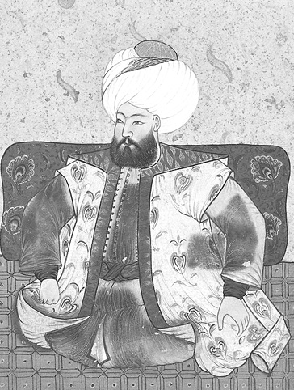
Çelebi Mehmet, Levnî, Kebir-i Musavver Silsilename
Bu söz üzerine Mehmed, Bizans gemileriyle İstanbul Boğazı’nı geçti. Bunu haber alan Musa, İstanbul kuşatmasını kaldırarak Edirne’ye çekildi. Musa ile Mehmed arasında Çatalca yakınında (İnceğiz) yapılan savaşta Mehmed mağlup oldu (1411) ve İstanbul’a doğru yola çıktı. Bizans gemileriyle Marmara’yı geçip Bursa’ya dönen Mehmed, ertesi yıl İstanbul civarında Musa ile yaptığı ikinci savaştan da bir netice alamadı.
Çelebi Mehmed, kardeşi Musa’nın Rumeli’deki saltanatına son vermekte oldukça kararlıydı. Neşrî’den takip edilebildiği kadarıyla, Musa Çelebi’yi ele geçirmek için Edirne’den hareket eden Çelebi Mehmed, Zağara-Filibe-Değirmendere-Sofya-Derbend-Şehirköy-Morava Suyu-Yellidere-Kurşunlu-Kosova-Haraca-Karasu-Alaaddin-ovası yolunu takip ederek Çamurlu’ya geldi. Musa ise İhtiman’daydı.
Nihayet iki taraf kuvvetleri Çamurlu’da karşı karşıya geldi. Musa, yiğitçe çarpışmasına rağmen az sayıdaki birlikleri yenildi, kendisi de yaralanarak kaçmaya başladı. Çelebi Mehmed, adamlarını Musa’yı takibe gönderdi. Musa kaçarken Çamurlu denilen yerde çeltik arkına düştü (10 Temmuz 1413).
Kaynaklar, Musa’nın ölüm nedenine dair değişik bilgiler verirler. Neşrî’ye göre, atına binmeye çalışırken Bayezid Paşa, Mihaloğlu ve Burak Bey tarafından yakalanıp elleri bağlanmış; sonra da Baltaoğlu onu boğdurmuştur. Âşık Paşazade ve anonim tarihler, Musa’nın bataklıkta yakalandıktan sonra Çelebi Mehmed’in yanına getirilerek gece çadırda boğdurulduğunu, Enverî (DE, 2003: b. 457) ise kardeşi Mustafa Çelebi tarafından öldürüldüğünü yazar. Musa’nın cesedi Bursa’ya gönderilerek babasının yanında gömüldü.
Emir Süleyman, Musa, İsa ve Mehmed Çelebiler arasındaki saltanat mücadelesi için bk. DE, 2003: 41-43; ÂPT, 1949: 146-150; NT, 2008: 166-240; AOK, 2000: 56-62; OBT, 2008: 42-46; N. Öztürk, “Çelebi Mehmed’e Saltanat Yolunu Açan Olay: Çamurlu-ova Savaşı”, Türk Kültürü İncelemeleri Dergisi, I , 51-66.
Düzme Mustafa
Osmanlı tarih yazarlarının Düzme Mustafa olarak bize tanıttıkları, Yıldırım Bayezid’in oğullarından Mustafa da Ankara Savaşı’na katılmıştı. Bayezid, Timur’a esir düştükten sonra, Musa ile Mustafa’nın bulunmasını Timur’dan rica etti. Musa bulundu; ancak Mustafa ortalıkta yoktu. Semerkand’a götürülen Mustafa, Timur’un ölümünden sonra serbest bırakıldı veya bir yolunu bularak Anadolu’ya kaçtı.
Mustafa’yı Çağatay etti esir
Nice yıldan sonra geldi o Emir
(DE, 2003: b. 446)
Mustafa’nın ortaya çıkışı, Osmanlı topraklarından daha çok menfaat elde etmek isteyen Bizans Kralı Manuel için iyi bir fırsattı. Manuel, Mustafa’ya yakın ilgi gösterdi. 1419’da Rumeli’ye çıkarılması kararlaştırılan Mustafa, önce Eflak tarafına gönderildi. İzmiroğlu Cüneyd Bey de Mustafa’ya katıldı. Çelebi Mehmed, Selanik yakınındaki savaşta amcası Mustafa’yı yenilgiye uğrattı ise de ele geçiremedi. Mustafa ve Cüneyd Selanik Kalesi’ne sığındılar. Padişah, Selanik valisinden Mustafa’nın teslim edilmesini istedi; ancak imparatorun izni olmadan böyle bir şey yapamayacağını bildirdi.
Padişah, Manuel’e başvurarak Mustafa’nın kendisine teslim edilmesini istedi. Mehmed’in bu isteğini geri çeviren Manuel, Mustafa ve Cüneyd’in hapiste tutulacağı sözünü verdi. İmparator, İstanbul’a getirttiği Mustafa ile Cüneyd’i Limni adasına gönderdi. Çelebi Mehmed hayatta oldukça Mustafa’nın serbest bırakılmaması kararlaştırıldı. Kuşkusuz, Mustafa Çelebi olayı burada kapanmadı.
II. Murad tahta geçer geçmez Bizans, Mustafa’yı yeniden sahneye çıkararak amca-yeğen arasında zorlu bir mücadelenin yaşanmasına neden oldu. Bursa’da yapılan savaşı kaybeden Mustafa, Lapseki’ye doğru kaçtı. Biga kadısına rüşvet vererek, Cenevizli bir tüccar gemisiyle, birkaç adamı ile birlikte Gelibolu’ya geçmeyi başardı ve Boğaz’daki her türlü geçişi yasakladı. II. Murad, vakit geçirmeden Mustafa’yı takibe koyuldu. Mustafa, Gelibolu’dan Edirne’ye gitti; ancak daha önce kendisine verilen desteği bulamadı. II. Murad da Gelibolu’dan Edirne’ye hareket etti. Şehir halkı padişahı alkışlarla selamladı. Eflak’a kaçmak için yola çıkan Mustafa Kızılağaç-Yenicesi’nde yakalandı ve 825 (1422) yılı kışında Edirne’de idam edildi. (ÂPT, 1949: 157-160; NT, 2008: 258-261; AOK, 2000: 67-69; OBT, 2008: 54-55)
Sultan Murad kardeşleri ile 825 yılında cenk etti. Kardeşi Düzme Mustafa derler onu katletti. (Yıllıklar, 180/81: 84)
… Düzme Mustafa kaçarak Biga Suyu’na geldi. Geçmeyi başaramadı. Ve Biga kadısına hayli flori getirip kadıya verdi. Kadı da geçidi gösterdi. Beş on adamı ile geçti. Bütün ağırlığını bıraktı. Üçüncü gün Gelibolu’ya ulaştı. Ne kadar gemi varsa hepsini karaya çektirdi. Karşıdan karşıya gemi geçişini yasakladı. Kıyıları bekletti. Sultan Murad ordusu ile Düzme Mustafa’nın ardına düştü. Mustafa Edirne’ye vardı. Murad’ın gelmekte olduğunu öğrenen şehir halkı, Mustafa’ya iyi davranmadılar. Mustafa kaçmak zorunda kaldı. Murad arkasından gitti. Mustafa kaçtı, bunlar kovaladılar. Nihayet Kızılağaç Yenicesi’nde yakaladılar. Tutup Edirne’ye Sultan Murad’a getirdiler, hisar burcundan aşağı astılar. Halk görsün diye böyle yaptılar. Mustafa’nın asıldığı bütün ülkede duyuldu. (ÂPT, 1949: 159; NT, 2008: 260)
Sultan Murad, Mustafa’nın ardınca asker gönderdi. Turhan Bey ile Edirne’de savaşan Düzme Mustafa’nın askeri yenildi. Düzme, Edirne’den kaçıp Zağra tarafına gitti. Kovalayıp, cenk edip, sonra Düzme Mustafa’yı tutup katlettiler. Bazıları cenk arasında öldü derler, bazıları getirip, 825 (1422) yılında Edirne’de hisar burcunda astılar derler. Sultan Murad Edirne’de oturdu. (OBT, 2008: 55)
Küçük Mustafa
II. Murad’ın on üç yaşındaki kardeşi Hamid-ili sancak beyi Mustafa, Karaman ve Germiyan beylerinin verdikleri önemli bir güçle Bursa üzerine yürüdü (Ağustos 1422). Diğer Anadolu beyleri gibi İsfendiyar Bey de saldırıya geçmekte ve Mustafa’yı desteklemekte gecikmedi. Rumeli yakasında ise Candaroğullarının müttefiki olan Eflak Beyi aynı sırada saldırıya geçti. Venedik ve Ungurus (Macaristan) da, II. Murad’a karşı yürütülen hareketteki yerlerini alacaklardır. Bu olayın, İstanbul’un kuşatılması günlerine denk düşmesi oldukça düşündürücüdür. Aslında şehzade Küçük Mustafa olayı, II. Murad’ın şahsında Osmanlı Devleti’ni hedef alan geniş çaplı bir saldırı planının küçük bir parçasını oluşturmaktadır. Bursa’yı kuşatan Mustafa, Murad’ın gönderdiği Mihaloğulları karşısında tutunamayıp İstanbul’a sığındı. İmparator ile görüşerek Silivri’ye gitti. Fakat Rumeli askerine karşı koyamayıp bu kez Kocaeli’ye gitti. Mustafa buradan İznik üzerine yürüdü. İznik’te Çandarlı İbrahim Paşa’nın sarayına yerleşerek hükümdarlığını ilan etti.
Mustafa, Bursa Ovası’nın bir kısmını ele geçirdi. Sonra İznik’i kuşattı. Kış yaklaştığından Mustafa’nın askerleri dağıldı. Mustafa’nın lalası Şarapdar İlyas Bey, kendisine Anadolu Beylerbeyliği verilmek suretiyle kazanıldı, şehir halkı da tekrar II. Murad’a döndü. İlyas Bey’in getirip teslim ettiği Mustafa idam edildi (Şubat 1423). Mustafa, Bursa’da babasının türbesinde gömüldü.
Sultan Murad’ın bir kardeşi daha çıktı, Mustafa derler. 826 (1422)’da varıp Anadolu’da İznik’te cenk edip, sonra katletti. Oradan gelip Eflak iline geçip, Eflak Beyi Drakula ile cenk etti, sonra barışıp geldi. (Yıllıklar, 1980/81: 85)
Sultan Murad’ın Küçük Mustafa derler bir kardeşi vardı. Babası ona Hamid-ili’ni vermişti, Germiyanoğlu onu oğul edinmişti. Sultan Murad Düzme Mustafa’yı kovaladığı sırada devletsizler, Küçük Mustafa’yı padişahlık için kışkırttılar. Germiyan ve Karamanoğlu da asker gönderdi, Bursa’ya yürüdüler. Bunu işiten Bursa’nın uluları akça toplayıp yüz parça kumaş alıp Ahi Yakup ve Ahi Kadem (Hoş Kadem) ile Mustafa’ya gönderdiler. Mustafa fidyeye kondu. Ahiler, Mustafa’nın lalası Şarapdar İlyas Bey’e varıp, “Her ne kadar bu da padişahımızın oğludur, ama kardeşi gelip kaleyi sağlamlaştırmıştır. Hemen sizin gelmenizle sonu yakındır. Karamanoğlu’nun önceden Osmanlı ile nice düşman olduğunu bilirsiniz. Şimdi lütfen bu yabancı askeri bu diyara bastırıp babasının vilayetini harap ettirmeyin, iyililik yapıp buna bir tedbir edin!” dediler.
Bunun üzerine Şarapdar İlyas Bey de ahilerin sözünü dinledi. Getirdikleri akçayı alıp sözlerini kabul etti. Sonra da kalkıp İznik’e vardılar. İznik o zamanda çok bakımlı bir şehir idi. İbrahim Paşa’nın sarayında kaldılar. Etraftan gelip tımar isteyenlere tımar verip işleri yürüttüler.
Bu durum, Sultan Murad’a bildirildi. Paşalar, Şarapdar İlyas Bey’e el altından haber gönderip, “Hünkâr sana Anadolu Beylerbeyliğini verdi.” dediler. Beylerbeylik beratını [görev belgesini] da birlikte gönderip, “Biz oraya varıncaya kadar, oğlanı durdurmaya çalış.” dediler. Şarapdar İlyas Bey de hıyaneti tercih etti, bunların sözünü kabul edip oğlanı bekletti.
Küçük Mustafa’nın yanında olan Turgutoğulları ve Germiyan beyleri Şarapdar İlyas Bey’in hıyanetini öğrenince gelip, “Hey bey! Gel, şu oğlanı bize ver. Karaman’a yahut Germiyan’a veya İstanbul’a ulaştıralım. Senin zaten durumun belli. Biz, hiç olmazsa tuz ve ekmek hakkını yerine getirelim. Bunca zamandan beri şehzade atına bindik, kaftanını giydik, nimetini yedik, son anda hıyanet etmeyelim.” dediler, ama fayda etmedi, oğlanı Şarapdar İlyas Bey’in elinden alamadılar.
Sultan Murad acele at sürüp, dokuz günde Edirne’den İznik’e ulaştı. O anda Küçük Mustafa hamama girmişti. Mihaloğlu Mehmed Bey ordusu ile yetişerek hisarı çepeçevre kuşattı. Sonra Yalı Kapısı’na geldi. Şehir halkı da Yalı Kapısı’nı açarak savaşmaya başladılar.
Bunun üzerine Mihaloğlu Mehmed Bey, kapıdan içeri girdi. Taceddinoğlu kapının iç yanında hazırdı, hemen Mihaloğlu’na karşı yürüdü. At üzerinden birbirine bozdoğan [gürz] ile hücum edip, sarmaş dolaş oldular. İkisi de yere düştü. Mihaloğlu Mehmed Bey’i kılıçla tepeleyip başını kestiler. Taceddinoğlu’nu yine atına bindirdiler. Mihaloğlu Mehmed Bey’in kullarından biri Taceddinoğlu’na karşıdan bir ok attı, kulağına isabet etti, o da orada öldü.
Bunlar savaşırken Şarapdar İlyas Bey, Küçük Mustafa’yı atı üzerinden kucağına aldı. Küçük Mustafa, “Hey Lala! Beni niçin tutarsın?” dedi.
İlyas Bey: “Seni kardeşin Murad Han’a iletirim.” dedi.
Küçük Mustafa: “Hey zalim, hain! Beni kardeşime iletme, çünkü o bana kıyar.” dedi.
İlyas Bey, başını aşağı eğdi, hiç aldırmayıp oğlanı hünkâra iletti. Emiriahur Mezid Bey’e getirip teslim etti. Mezid Bey de oğlanı küçük bir davul üzerine koyarak, edep ile eğilip öptü, sonra Murad Han’a getirdi. Murad Han, “Hemen işini görün!” deyince, oğlanı Mezid Bey’den aldılar. İznik’in dışında yol üzerinde bir büyük incir ağacı vardı, onun dibinde su ile boğdular.
Padişah buyruğu yerine getirildikten sonra Mustafa’nın ölüsünü Bursa’ya babası yanına gönderdiler. Bursa halkı karşılayıp cenazeyi aldı, dinin emri gereğince defnettiler.
Sonra Şarapdar İlyas Bey’e “Niçin böyle hıyanet ettin?” diye sordular. O, “Her ne kadar ben görünüşte hıyanet etti isem de mânen isabet kıldım. Çünkü eğer Küçük Mustafa’yı bıraksam, bu iki ordu savaşır, ülkeyi harabeye çevirirlerdi. Kamuya [herkese] gelecek bir zararın, kişiye gelmesi daha iyidir. Bu eskiden beri bilinen ve uygulanan bir âdettir.” dedi. Bu olaydan sonra Şarapdar İlyas’ın beyler içinde hiçbir itibarı kalmadı. Bu olay, 826 (1422) yılında meydana geldi. (ÂPT, 1949: 160-162; NT, 2008: 262-263)
Murad Gazi İstanbul üzerine yürüdüğünde kardeşi Mustafa’nın gelip Bursa’yı kuşattığı haberini aldı. İstanbul üzerinden gelip İznik şehrinde Mustafa ile buluşup savaştılar. Sonunda kardeşi Mustafa’yı öldürüp İznik’i aldı. Bu seferden döndüğünde veziri Hacı İvaz Paşa’nın bir hilesini duydu. Gelibolu’da tutup gözlerini çıkardı. (OBT, 2008: 56)
Şehzade Ahmed
II. Murad’ın vefatı üzerine Fatih Sultan Mehmed’in tahta geçer geçmez kardeşi Şehzade Ahmed’i öldürdüğü bilinir. Bu şehzadenin öldürülmesi hakkında Neşrî yazmalarında iki farklı rivayetten söz edilir:
Murad Han’ın öldüğünü, Sultan Mehmed’in gelmesinden anladılar. O, babasının ölüsünü Bursa’ya gönderdi. İsfendiyar Bey’in kızından olan küçük kardeşini [Ahmed] Allah’ın rahmetine ulaştırdı [öldürdü]. Kendisi saltanat tahtını şereflendirdi ve dünyaya düzen vermeye başladı. (ÂPT, 1949: 191; NT, 2008: 307)
İsfendiyar kızından olan Küçicek Ahmed, Amasya’da öldü [Menzel ve Manisa yazmaları]; İsfendiyar kızından olmuştu, Küçicek Ahmed derlerdi. Ve bu sarayda idi. Ve Büyük Ahmed Amasya’da öldü [Unat-Köymen yayını]. (NT, 2008: 306, dipnot 3772)
Orhan Çelebi
Bu Osmanlı şehzadesi hakkında kaynaklar, bazen ad vererek bazen de ad belirtmeden şu bilgileri verirler:
Emir Süleyman’ın dahi bir oğlu ve bir kızı var idi. Kaçtılar, İstanbul’a girdiler. (ÂPT, 1949: 147)
Sultan Mehmed ve Musa Çelebi birbiri ile mücadele ediyordu. İstanbul Kralı, Sultan Mehmed’den çekindiğinden Emir Süleyman’ın oğlunu kabul etmek istemedi, çünkü Sultan Mehmed ile andlaşması vardı. Bu sebepten oğlan [Orhan] İstanbul’dan çıkıp Eflak’a gitmek için Karinovası’na vardı. Karinovası’nın akıncıları oğlanı Eflak’a gitmeye bırakmayıp yanında toplandılar ve “Sana yardımcıyız” deyip, onu tahrik ederek Yanbolu’ya götürdüler.
Bu haberi işiten Sultan Mehmed, oğlanın üzerine hücum etti. Sultan Mehmed’in yürüdüğünü işiten akıncılar oğlanın yanından kaçıp dağıldılar. Oğlanın bir lalası vardı, Terzibaşı Zağanos derlerdi. Oğlanı alıp Sultan Mehmed’e getirdi. Sultan, oğlanın gönlü [gönül] gözünü açtı. Dünya gözünü örttü [oğlanın gözlerini çıkarttı], Bursa’ya gönderdi, kendisi de eğlenmeyip ardınca Bursa’ya geldi. Emir Süleyman’ın bir de kızı vardı. Sultan, o kızı Bursa’da bir sancak beyine verdi. Oğlana da iyi tımar verdi. Geyve yöresinde Akhisar derler, o çevrede Çardak Köyü’nü [‘Çardak’ Neşrî’de geçmez] derler, bir kâfir köyünü oğlana tımar verdi.
Sultan Mehmed, Bursa’ya her geldiğinde Emir Süleyman’ın oğlunu getirtir, hayli ihsanlar ederdi. Sultan, “kardeşimin oğludur” diyerek onu hoş tutar, gönlünü alırdı. Oğlanın kız kardeşine de daima ihsanını eksik etmezdi. (ÂPT, 1949: 149-150; NT, 2008: 244)
Emir Süleyman’ın oğlu Orhan Bey, İbrahim Bey, Hacı İvaz Paşa, Çırak Bey, Şeyh Fahreddin Efendi oğlanları ve âlimlerin güneşi Fenarîoğlu Şemseddin öldüler, 1428/29 (832) yılında. (NT, 2008: 279)
İstanbul’un fethinde, Bizans ordusu saflarında soydaşlarına karşı surlar üzerinde savaşmış olan Osmanlı şehzadesi Orhan Çelebi kimdir? Bu sorunun cevabını 15. yüzyıl Osmanlı tarihlerinde bulamıyoruz. Rivayete göre yakalanan Orhan Çelebi idam edilir. Neşrî’nin verdiği bilgilere bakılırsa İstanbul’un fethinde idam edilen Orhan Çelebi, Emir Süleyman’ın oğlu olamaz; çünkü yukarıda verilen bilgiden de anlaşılacağı üzere Süleyman oğlu Orhan Çelebi çok daha önce Bursa’da vefat etmiştir.
Çandarlı Halil Paşa
Âşık Paşazade’nın yazdığına göre, II. Murad’ın Kâbe’ye her yıl gönderdiği flori için Vezir Fazlullah Paşa’yı görevlendirir. Fazlullah Paşa hazinede flori bulunmadığını padişaha arz eder. İhtiyaç olan kadar Halil Paşa’dan borç alınır. Bu konuda Sultan II. Murad ile Halil Paşa arasında şu kısa konuşma geçer:
Padişah: Halil! Sakın rüşvet florisini verme!”
Halil Paşa: “Devletlü sultanım! Atamdan miras kalan floridir.” (ÂPT, 1949: 232)
Tarihçi Neşrî, II. Murad ve Fatih devrinin meşhur Veziriazamı Halil Paşa’nın hapsi ve idamına dair, çok özlü biçimde, “Zirâ vâkı‘a-i Halil Paşa âlemde meşhûrdur.” (NT, 2008: 314) der ve olayın siyasî arka planını şöyle açıklar:
Sultan Murad kâfiri yendiği gibi hemen doğru Edirne’ye gelerek tahtına geçip oturdu. Sultan Mehmed’i yine Manisa’ya gönderdi. Ve derler ki, Halil Paşa, İshak Bey, İsa Bey ve diğer beyler anlaşarak Sultan Mehmed’e, “Babanı tahta davet et. O kendisi geçip oturmaz.” dediler. Bunun üzerine Sultan Mehmed de sabah divana gelince babasını tahta davet etti.
Sultan Murad nazlanarak tahta geçmek istemez gibi göründü, vezirlerden yana bakıp, “Siz ne dersiniz?” dedi. Halil Paşa, “Sultanım! Buyurun, hünkârımızın hatırcağızı hoş olsun.” dedi. Bunun üzerine Sultan Murad Han nezaket ve alçak gönüllülük ile tahta geçip oturdu. Ertesi gün ava çıktı. Vezirlerine, “Sultan Mehmed’in işleri her ne ise görüverin.” diye emretti. Saruca Paşa ile İbrahim Paşa’yı yanına vererek onu yine Manisa’ya gönderdiler.
Sultan Mehmed sonra Halil Paşa’nın bu hilesini öğrenince hayret etti ve “Eğer Allah bana devlet verirse ben de sana ne edeceğim gör!” diyerek ona gönülden kin bağladı. (NT, 2008: 297-298)
Dönemin tarih yazarlarından Tursun Bey, Halil Paşa’nın İstanbul’un fethine dair olumsuz fikir ve davranışlarından söz etmez; ancak Varna Savaşı öncesinde oğlu Şehzade Mehmed lehine saltanattan feragat eden Murad’ın, tekrar saltanata geçmesinde Halil’in oynadığı role geniş yer vererek Fatih’in, Paşa’nın bu yoldaki girişimlerini çok iyi bildiğini kaydeder. (TEF, 1977: 34-36)
Bu dönemin diğer tarih yazarı Enverî ise idam olayının siyasî arka planını ortaya koyan çağdaşı Tursun Bey’den farklı düşünür. Enverî’ye göre Bizans imparatorunun veziri Kir-Lika, Fatih’i İstanbul kuşatmasından vazgeçirmesi için Halil Paşa’dan yardım ister. Bunun için Halil’e çok mal/para verir. Enverî, Halil Paşa’nın Bizans’tan rüşvet aldığı düşüncesindedir. Ancak İstanbul’un fethi konusunda kesin kararını vermiş olan Fatih’i, bu kararından döndürmek mümkün olmaz. Dolayısıyla Halil’in bu yoldaki çabaları sonuç vermez, ümidi boşa çıkar. Onun Bizans yetkilileriyle yaptığı gizli görüşmeler açığa çıkınca, bunun bedelini hayatıyla öder. Enverî’deki kayıt şöyledir:
Kir-Lika geldi Halil’e der meded______Mal çok aldı şehi kılmağa red
Oku şah attı, onu kim dönderir______Pes Halil anları mahzûn gönderir
Onda olmuştu Halil’in sırrı fâş______Asılır terk etti mâl u cân u baş
(DE, 2003: b. 538, 539, 566)
Âşık Paşazade, padişahı İstanbul’un fethi kararından vazgeçirmek için Bizans’ın Halil Paşa’ya balık karnına flori koyarak gönderdiği; ancak paşanın padişahı kararından çeviremediği, İstanbul’un fethinden sonraki Çarşamba günü Halil’in oğulları ve kethüdalarıyla birlikte hapsedildiğini kaydeder.
Çarşamba günü Halil Paşa’yı oğlanlarıyla ve kethüdalarıyla birlikte tuttular hapsettiler. Bunların hikâyeti çoktur. (ÂPT, 1949: 192)
Sultan Mehmed Kostantin’i fethettikten sonra veziri Halil Paşa’yı Edirne’ye gönderdi ve orada kulede hapsetti. Sonra Enez Kalesi’ni fethetti. Enez’in fethinden kırk gün sonra Halil Paşa’yı Edirne’de şehit etti. (OBT, 2008: 80)
Pes emr edip Halil Paşa’yı tutdı
Hisarın kullesinde hapsetti
(HT, b. 3264)
Tespit edilebildiği kadarıyla, II. Murad ve Fatih devrinin en güçlü siyaset ve devlet adamlarından Çandarlı Halil Paşa, Osmanlı Devleti’nde önce hapsedilip sonra da idam edilen ilk veziriazamdır. Bu olay, aynı zamanda Osmanlı tarihinde padişahla veziriazam arasında görülen ilk siyasî hesaplaşmadır. Halil Paşa’nın başına gelenler gerek Fatih devrinde gerekse daha sonraki padişahlar döneminde vezir/veziriazam (sadrazam) rütbesindeki çok sayıda siyaset ve devlet adamının başına gelecektir.
Mahmud Paşa
Fatih Sultan Mehmed, Mahmud Paşa’ya vezirlik görevine ek olarak Rumeli Beylerbeyliği görevini de vermişti. O, Otlukbeli Savaşı öncesi baskına uğrayan Rumeli Beylerbeyi Has Murad’ın yenilip öldürülmesindeki ihmali ve savaş sonrasında kaçan Akkoyunlu kuvvetlerini takip ettirmemesi yüzünden görevinden alındı (1473). Hasköy’deki çiftliğine çekilen Mahmud, Şehzade Mustafa’nın ölümü üzerine taziye/baş sağlığı için İstanbul’a geldi; ancak padişah tarafından soğuk karşılandı. Şehzade Mustafa ile ailevî nedenlerle arası açık olan Mahmud Paşa, rakiplerinin de kışkırtmasıyla, önce Yedikule’de hapsedildi; kısa süre sonra da idam edildi.
Sultan Mehmed, 878 (1474) tarihinde Mahmud Paşa’yı azletti. Mahmud Paşa görevinden alınınca Edirne yakınındaki Hasköy’e gitti. Aynı tarihte ansızın Şehzade Mustafa’nın ölüm haberi geldi. Bunun üzerine Mahmud Paşa, Sultan Mehmed’e taziye [başsağlığı] için İstanbul’a geldi. Sultan Mehmed, onun cenazeye gelmesini iyi karşılamadı. Mahmud Paşa’yı tutup önce hapsetti, sonra da öldürdü. (NT, 2008: 358)
Sultan Mehmed Kostantin şehrinde 18.07.1475 Pazartesi (3 Rebiülevvel 879 Pazar) günü veziri Mahmud Paşa’yı kule burcunda şehit etti [Oruç’un Pa yazmasında ‘katletti’]. (OBT, 2008: 126)
Gedik Ahmed Paşa
Gedik Ahmed Paşa Osmanlı Devleti’ne önemli hizmetleri geçen güçlü siyaset ve devlet adamlarından biridir. O, Karaman valisi Şehzade Mustafa’nın ölümü (1473) üzerine buraya vali olarak atanan Cem Sultan’a lala, Mahmud Paşa’nın ikinci kez azli üzerine onun yerine veziriazam oldu. Bu görevde iken Cenevizlilerden Kefe, Menkub ve Azak kalelerini aldı (1475). Ertesi yıl Arnavutluk seferine gönderilmek istenen Ahmed Paşa, bu görevi kabul etmeyince azledilerek Rumelihisarı’nda hapsedildi.
Daha sonra bağışlanan Ahmed Paşa Gelibolu’ya sancak beyi ve kaptanıderya tayin olundu; Limni adasını Venediklilerden aldı (1477). Ertesi yıl Yunan adalarından Zanta, Kefalonya ve Ayamavri (Santa Maria) adalarını ele geçirdi. Pulya sahilindeki Otranto’yu fethetti (1480).
Fatih devrinin bu başarılı veziri ile Şehzade Bayezid arasında Otlukbeli Savaşı’nda (1473) şu olay geçer:
II. Mehmed, oğlu Şehzade Bayezid’in kumanda ettiği sağ cenahtaki/koldaki bozuk olan safların düzeltilmesi işini Gedik Ahmed Paşa’ya havale eder. Paşanın kendi saflarıyla ilgilenmesine Bayezid alınır. Birbirlerine karşı ölçüsüz sözler sarfederler. Bayezid padişah olunca Otranto seferinden henüz dönmemiş olan Ahmed Paşa’yı geri çağırır (1481). Ahmed Paşa İstanbul’a gelince Bayezid, geçmişte aralarında geçen olayları unutmasını söyler ve birlikte çalışmalarının gerekliliği üzerinde durur. Yeniçeriler, yapılacak seferlerde, başlarında serdar olarak, daha önceki seferlerden tanıdıkları, Ahmed Paşa’nın bulunacak olmasından büyük sevinç duyarlar.
Gedik Ahmed, vaktiyle vezirlerden İshak Paşa’nın (ö. 1485) kızı ile evlenmişti. Daha sonra bir olay dolayısıyla kayınpederle damatın arası açılır. İshak Paşa, Gedik Ahmed’i II. Bayezid’in gözünden düşürmek için her fırsatı değerlendirir. Bayezid, vaktiyle kardeşi Cem’e destek veren Gedik Ahmed’e zaten güvenmez.
Sultan Bayezid, bütün vezirlerini ve ekâbirlerini Edirne Sarayı’nda bir ziyafete davet eder. Padişah, davetlileri büyük bir ihtişam ve debdebe ile karşılar. Bayezid işret ve sohbet meclisinde bulunan vezirlere, Gedik Paşa hariç, güzel renkli hilatler giydirir ve her birine altınla doldurulmuş yaldızlı bir kadeh hediye eder. Gedik Ahmed’e ise altın sırmalı siyah bir hilat giydirir. Paşa, bunun, uğursuz bir şeyin ön habercisi olduğunu anlar ve padişaha: “Bana karşı böyle bir gizli maksadın vardı da, o halde bu rezalet şarabı içmeye beni niçin zorladın?” diye bağırır.
Vezirler, gecenin geç vaktinde, yiyip içmekten ağırlaşmış bir şekilde, Bayezid’i överek saraydan ayrılmak isterler. Onları, kapıcıları tarafından atlarına bindirilerek evlerine götürülürler.
Herkes gittikten sonra Gedik Ahmed Paşa da ayrılmak ister; ancak Bayezid kalmasını söyler. Bayezid, adamlarına Gedik Ahmed’i hemen tutup sarayda hapsetmelerini emreder. Paşa’ya işkence yapılır. Bayezid’in niyeti onu öldürmekti. Fakat Bayezid’in güvendiği adamlarından Hadım Paşa, acele etmemesini, bunun sonuçlarının görülmesi gerektiğini söyler. Çünkü yeniçeriler, serdarları Gedik Ahmed’e içten bağlıdırlar.
Babasının hayatından büyük endişe duyan Gedik Ahmed’in oğlu babasının akibetinin ne olduğunu öğrenmek için gecenin ortasında bir vezirden diğerine koşar. Nihayet o, babasının Sultan Bayezid’in emri ile ölümle cezalandırılmak için hapsedilmiş olduğunu öğrenir ve aynı bilgiyi saraydan da alır. Bu haberi alır almaz gece yarısı yeniçeri kışlalarına giderek babasının, sarayda hapsedildiğini ve yakında öldürüleceğini askerlere anlatır. O, yeniçerilere: “Böyle insafsız bir suçun işlenmesine siz cesur askerler nasıl izin vereceksiniz? Sizler babamla aynı tuzu ve ekmeği birlikte paylaşmadınız mı?” der. Bunun üzerine bütün yeniçeriler hemen toplanıp, silahlanarak saraya yürürler. Sarayın kapılarının açılması için bağırıp çağırmaya ve tehditler savurmaya başlarlar. Yeniçerilerin taşkınlıklarını gören ve onların kötü işler yapabilecekleri endişesine kapılan Bayezid, sonunda sarayın kapılarını açmak zorunda kalır. Yeniçeriler, pervasız bir şekilde ve büyük bir cüretle padişaha ağır sözler sarfederler. Gedik Ahmed’in hemen kendilerine gösterilmesini, eğer bu istekleri yerine getirilmez ise, ona, başına neler geleceğini kendin düşün derler. Bunun üzerine Gedik Ahmed yeniçerilere gösterilir. Fakat askerler paşanın işkenceye maruz kaldığını ve onun gibi bir kumandanın asla hak etmediği bir muameleye tâbi tutulmuş olduğunu görürler. Çünkü Bayezid’in adamları paşanın elbiselerini çıkarmışlar ve ona işkence yapmışlardı. Paşa, başı açık, yalın ayak ve üzerinde sadece iç çamaşırları olduğu halde yeniçerilerin huzuruna getirilmişti. Öfkeli yeniçeriler hemen Bayezid’in bir iç oğlanının başından kavuğunu çekip çıkarırlar ve paşanın başına koyarlar. Ayrıca elbise de temin ederek ona giydirirler. Büyük sevgi ve saygı duydukları Gedik Ahmed’i yanlarına alıp saraydan ayrılırlar.
Padişaha karşı oldukça hiddetlenen askerleri yatıştırmak işi yine Gedik Ahmed Paşa’ya düşer. Kin ve öfke dolu yeniçerilere Paşa şöyle hitabeder: “Yoldaşlar, benim hatırım için ayaklanmayı ve başkaldırmayı bir tarafa bırakın. Bayezid bizim hükümdarımız ve efendimizdir. Hakkımda ne düşünürse düşünsün ona yine de itaat etmek boynumun borcudur! Belki de biz görevimizi doğru dürüst yapmadık. O da bu yüzden bana böyle davrandı.” Gedik Ahmed’in bu sözleri yeniçerileri sakinleştirmeye yeter. Bununla birlikte kapıkulu askerlerinin ruhlarında Bayezid’e karşı belli bir kızgınlık ve öfke kalır.
Gedik Ahmed Paşa bu olaydan sonra bir süre daha vezirlik görevinde kaldı ise de çok geçmeden idam edilir. Onun idamında, Bayezid’in Gedik Ahmed Paşa’dan sürekli şüphelenmesi, geçmişte aralarında geçen tatsız olayların yanında kayınpederi İshak Paşa’nın ardı arkası kesilmeyen iftiralarının da etkili olduğu anlaşılıyor. (Fazla bilgi için bk. Kreutel, Hanivaldanus Anonimi, s. 9-11)
Gedik Ahmed Paşa’nın Edirne’de idamı hakkında doğru ve ayrıntılı bilgiyi dönemin tarihçisi Oruç Bey ile anonim tevarih yazarları vermektedir. Anonim tarih metinlerindeki kayıtlar kısa olmakla birlikte kronolojide ve temel bilgilerde Oruç Bey ile uyuşmaktadır.
Sultan Bayezid gelip Kostantiniyye’de oturdu. Ramazan ayının evvelinde Edirne’ye gelip Şevval ayının altıncı günü yek-şenbe gicesinde vezirleri ve ekâbirleri ve ayan u eşrafı işret ve eğlence meclisinde topladı. O gece nısfulleylde [gece yarısında] sâat-i zuhalde Edirne’de Yeni Saray’da ekâbiri hilatledi. Bu mecliste [toplantıda] merhum Gedik Ahmed Paşa’yı 887 yılında şehit eyledikten sonra ... (AOK, 2000: 131)
Sultan Bayezid, oğlu Abdullah’ı Karaman’a padişah edip, gelip Kostantin’de oturdu. Birkaç gün sonra İstanbul’dan göçüp Ramazan ayının başında Edirne’ye geldi. 6 Şevval 887 Pazar (18.11.1482 Pazar) günü gecesi, Edirne’de Yeni Saray’da vezirleri ve beyleri topladı. Vezirleri ve beyleri hilatledi. İşret meclisinde Gedik Ahmed’i şehit etti. Gedik Ahmed şehitler mertebesine erişti. Takdirde olsa gerekti. Ecel o vakit takdir olunmuştu, Sultan Bayezid’in elinden ne gelir? Hüküm, Allâhu Teala hazretlerinindir, Gedik Ahmed’in yerine Davud Paşa vezir oldu. (OBT, 2008: 134-135)
Mimar Sinan
Sultan II. Bayezid devri anonim tarih yazarı/yazarları Fatih Sultan Mehmed devrinde Yenicamii, sekiz medreseyi, imareti/aşevini ve bimarhaneyi/hastahaneyi yapan Mimar Sinan’ın hapiste döve döve niçin öldürüldüğüne bir anlam veremezler. Üstelik “kendi gözümüz ile gördük” diyerek, bu olayın gerçek olduğunu iddia ederler ve hüner ehline rağbet kalmadığından da yakınırlar:
Sultan Murad zamanında padişah kulu ve padişah kul-oğlu olmayana kapıdan ulufe ve tımar vermezlerdi. Şimdiki zamanda kuldan kapıda yuvalar ziyadedir. Yabandan [kul sisteminden/devşirmeden] gelenin rağbeti ziyadedir. Onun için ileri [önceki, eskisi, eski] zamandaki bereket yoktur. Hüner ehline rağbet kalmamıştır. Kendi gözümüz ile gördük. Sultan Mehmed [Fatih] Yenicamii, sekiz medreseyi, imareti ve bîmârhaneyi [hastahaneyi] yapan Mimar Sinan’ı nice döğe döğe öldürdü hapis içinde. Acep [acaba] onun günahı ne idi ki o hâl ile ölmeğe müstahak ola idi. (AOK, 2000: 112-113)
Molla Lütfi
Osmanlı ülkesinde düşüncesinden dolayı idam edilen ilk bilim adamı Tokatlı Molla Lütfi olmalıdır. Molla Lütfi, zındıklık (zındık: Allah’a ve ahrete inanmayan kimse) suçlamasıyla yargılandıktan sonra idam cezasına çarptırıldı (23 Rebiülahir 900/23 Ocak 1495). Cezası, Atmeydanı’nda boynu vurulmak suretiyle infaz edildi. Çok iyi yetişmiş olan bu büyük âlim, akranlarının kıskançlığına kurban gitmiştir. O dönemin tarihçisi Oruç Bey şunları yazıyor:
Ünlü müderrislerden Lutfi-yi Dîvâne [Deli Lütfi] derlerdi. Bursa’da Muradiye Medresesi müderrisiydi. Birden ağzından hatalı bir cevap çıktı, küfür sözdür. Bu cevap dinsizlerin cevabıdır diye, kendi akranları, emsalleri davacı oldular. Büyük âlimlerden bazı kimseler gelip küfrüne tanıklık ettiler. Küfrü tespit edilip Sultan Bayezid’e arz ettiler. Padişah da “emr-i şer‘-i şerîfi [İslam’ın emrini] yerine getirin.” dedi. Müderris Lütfi’nin boynunu vurdular. Allah’ın emri yerine geldi. (OBT, 2008: 167)
(N. Öztürk, “Osmanlıda İdamlar (1299-1500)”, İğdiş, Sünnet, Bedene Şiddet Kitabı, Editörler: Emine Gürsoy Naskali-Aylin Koç, İstanbul 2009, s. 5-22.)
Korsanlar
Sultan Bayezid [Mora seferinden sonra] Edirne’ye geldiğinde Kavala ve Yenişehir [Yunanistan’da Larissa] tarafında deniz yüzünden gemiyle harami [korsan] belirmiş idi. Hem denizden hem karadan çıkıp yollar basıp başlar keserlerdi, kervanlar basarlardı. Hak Teala fırsat verip o haramileri gemileriyle ele geçirdiler. Gemilerinde kırılandan başka kırk beş kişiyi diri tutup Edirne’de devlet eşiğine getirdiler. Padişah emr edip zindana gönderdi. Zindan içinde bir bir boğazlarından asıp, kule bedenlerinde üç gün tutup, sonra kuleden aşağı attılar. Böylece padişah siyaseti yerine geldi.
Şiir
Ki siyâsetle olur beylik tamam
Bî-siyâset [siyasetsiz] memleket tutmaz nizam
Pâdişâhdır bî-gümân [şüphesiz] Hak sâyesi [gölgesi]
Kamu [bütün] halkın o olur sermâyesi
Pâdişâh baş olur, leşker[asker] beden
Bellidir n’olur çobansız ola ten
(OBT, 2008: 204)
Sonuç olarak, Osmanlı kaynaklarına göre, ilk iki yüzyılda toplam altı şehzade, padişaha isyan sonucu veya isyan ihtimaline karşı öldürülmüşlerdir. Şehzadelerin dışında idam edilen kamu görevlileri, burada verilenlerle sınırlı değildir. Adı geçenler, saltanatta bulunan padişah dönemindeki kamu görevlileridir. Bu dönemde, başarılı ve kudretli üç vezirden ikisi (Halil Paşa ile Mahmud Paşa) Fatih, üçüncüsü ise (Gedik Ahmed Paşa) II. Bayezid zamanında idam edilmiştir.
Fatih döneminin tanınmış mimar ve mühendisi Sinan hapiste dövülerek öldürülmüştür. Fatih ve oğlu Bayezid devrinin iyi yetişmiş önemli fikir ve düşünce adamı Molla Lütfi, Osmanlı ülkesinde, düşüncesinden dolayı idam edilen ilk kişi olmalıdır (Çelebi Mehmed devrinde idam edilen Şeyh Bedreddin, o zamanda kamu görevlisi olmadığı için bu yazıda yer almadı). II. Bayezid dönemindeki deniz korsanlarının idamları ise tamamıyla ibretlik idamlardır. (N. Öztürk, “Osmanlı Devleti’nde Bazı Kamu Görevlilerinin Hapisle Cezalandırılmalarına İlişkin İlk Bilgiler (1300-1453)”, Sosyal Siyaset Konferansları, Prof. Dr. Turan Yazgan’a Armağan Özel Sayısı, İ.Ü. İktisat Fakültesi yayını, İstanbul 2005, 899-909; aynı yazar, “Fetret Devri ve Osmanlı Hâkimiyetinin Yeniden Tesisi”, Türkler, Ankara 2002, IX, 221-51)
Sürgün cezaları
Osmanlı kanunlarına göre kişiler, hapis ve idam gibi cezalarla cezalandırılır iken, padişah kanunlarına muhalefet eden gruplar veya bazı yöneticiler aileleri ile birlikte bir yerden başka bir yere nakledilerek, toplu cezalandırılma yoluna gidilirdi. Birkaç örnek vermek gerekirse:
Saruhan’dan Filibe’ye
Saruhan’da [Manisa] göçerevler vardı, Menemen Ovası’nda kışlarlardı. O ilde tuz yasağı vardı. Onlar bu yasağa uymazlardı. Sultan Yıldırım Bayezid’e bildirdiler. Bayezid, oğlu Ertuğrul’a haber gönderip, “Menemen Ovası’nda ne kadar göçerevler varsa, adamlarına söyle, onları tamamıyla sürüp, Filibe Ovası’na geçirsinler.” dedi. Ertuğrul da babasının emrine uyarak, bu göçerevlerin hepsini Filibe Ovası’na gönderdi. Getirip Filibe yöresine yerleştirdiler. Şimdi Filibe yöresinde “Saruhan Beyli” dedikleri onlardır. (ÂPT, 1949: 141; NT, 2008: 154)
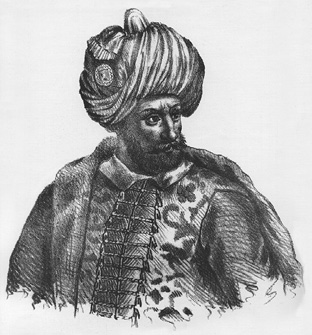
Yıldırım Bayezid, Byzantiou
Samsun’dan Konuş’a
Samsun’u alan Çelebi Mehmed Bursa’ya giderken İskilip’e uğradı. Orada çok sayıda Tatar evi gördü ve “Hey! Bunlar kimindir?” deyince.“Tatar evleridir.” dediler. Sultan, “Bunların beyleri nerededir?” diye sordu. “Tatar Samagaroğlu düğün yaptı, oradadır.” dediler.
Bunun üzerine Sultan Mehmed, veziri Bayezid Paşa’ya, “Timur, bu vilayetten Tatar’ı alıp gitti derlerdi. Oysa bu vilayette bunların beyleri var. Düğün edip birbirine gidip gelmeleri nedir? Benim seferime de gelmezler. İşte şimdi bunları sürmek gerektir.” dedi. Hemen Minnetoğlu Mehmed Bey’i yanına çağırttı. Bunların hepsini sürdürüp Filibe’ye ve nahiyelerine naklettirdi. Konuş [Pazarcık/Tatar Pazarcığı] yöresine yerleştiler. Minnetoğlu Mehmed Bey Konuş’ta bir hisar ve bir kervansaray yaptırdı, kendisi de orada oturdu. (ÂPT, 1949: 152-153; NT, 2008: 251)
Rüşvet olayları ve cezaları
Arapça bir kelime olan ‘rüşvet/rişvet’, yaptırılmak istenen bir işte yasa dışı kolaylık ve çabukluk sağlanması için bir kimseye mal veya para olarak sağlanan çıkara denir.
Fazla yaygın olmadığı veya yeterince kayıt/bilgi bulunmadığı için olsa gerek, Osmanlı tarihinin ilk iki yüzyılındaki rüşvet olayları pek bilinmez. En iyi bilineni Yıldırım Bayezid devrine ait olanıdır. Bu dönemde bazı ‘kadılar’, işlerini gördükleri kişilerden kanunsuz olarak para yani ‘rüşvet’ alarak haksız kazanç sağlamışlardır. Bilindiği gibi Osmanlılarda rüşvetin yaygınlaşması ve çeşitlenmesi 16. yüzyılın ikinci yarısından itibarendir. O kadar ki, bu yüzyılın sonlarında memuriyetler parayla alınır satılır hâle gelmiştir. O dönemin bazı Osmanlı tarihçileri rüşvet çarkının nasıl döndüğünü eserlerinde işleyerek, üzüntü ve endişelerini toplumla paylamışlardır. Başta kadılar olmak üzere bazı memurların görev ve yetkilerini kötüye kullanarak, resmî oranların üzerinde vergi toplamaları, halkı soyup soğana çevirmeleri büyük tepkilere neden olmuş ve dolayısıyla halkın devlete olan güveni ciddî biçimde zedelenmiştir. O yüzden kimi padişahlar, kamu görevlilerine karşı halkı korumak için ‘adaletnâmeler’ çıkarmak zorunda kalmışlardır.
Osmanlı tarihinde bilinen ilk rüşvet olayı
Osmanlı toplumu, ‘rüşvet’ olayı ile çok erken bir tarihte, Orhan Gazi devrinde (1324-1362) tanışmıştır. Osmanlı askerî teşkilatında bir sınıf olan ‘yaya/piyade askeri’ bu padişah zamanında kuruldu. Yeni kurulan bu askerî birliğe yazılmak isteyen gençlerin sayısı belli ki asker ihtiyacının çok üstündedir. Yaya askeri olmayı arzu eden adaylar/gençler son çare olarak rüşvet yoluna başvurmuşlardır. Kadıya rüşvet verecek kadar parası veya hayvanı olanlar (Âşık Paşazade, at ve katır gibi peşkeşler verirlerdi, diyor, 1949: 239) bu sınıfa yazılıp asker olmayı başarmışlardır. Burada işin ilginç ve düşündürücü olan yanı, rüşvet alanların ülkede adaletin temsilcisi ve teminatı olan hukuk adamlarının yani kadıların/yargıçların olmasıdır. Böylece, Osmanlı kamu hayatında ilk rüşvet yolunu açan kadılar, aşağıda görüleceği gibi Yıldırım Bayezid zamanında (1389-1402) işi daha da ileriye götürmüşlerdir. Osmanlı tarih kaynaklarındaki rüşvet kayıtları şöyle sıralanabilir:
Yaya askeri yazılmaya çok rağbet gösterdiler. Hatta bazı kimseler, yaya askeri yazılmak için, ‘beni de yazdır’ diye kadıya ‘rüşvetler’ verdiler. O zamanda yaya asekeri ‘ak börk’ giyerlerdi. (ÂPT, 1949: 118; NT, 2008: 73-74)
Hayreddin Paşa, Orhan zamanında Bilecik kadısı idi. Ve hem Ak Yaya’yı Orhan Gazi ona yazdırmış idi. O zamanda yayalığa yazılmak için eyi peşkeşler, at ve katır gibi verirler idi. Bizi yayalığa yazın derler idi. Bu Hayreddin Paşa dediğimiz İznik kadısı oldu. (ÂPT, 1949: 239)
Yıldırım Bayezid devrinde kadıların rüşvet alması
Şâh-ı Osmânî ki adl ile Ömer______Bildi ki olur kadılar bî-dâdger
İşleri rüşvetdürür tagyîr-i şer‘______Hiç anmazlar nedürür asl u fer
Dünyesiyçün ki ana gerekmez nazar______Hakkı bâtıl, bâtılı hak der olar
Cem‘ etdi kamusun, sordurdu ol______Ne ki aldılar geri verdürdi ol
Gereğince etdi anlara cezâ____________Yavuz işlüye yavuzlukdur sezâ
Cehd ile bir zerre getürdi yola______Râst-rûluk hod olardan nice ola?
(DTMÂO, 1949: 22/549-559)
Yıldırım Bayezid zamanında kadıların rüşvet yüzünden hapsedilmeleri ile ilgili kaynak metinleri yukarıda verildiğinden burada tekrarına gerek görülmedi.
Düzme Mustafa’nın Biga kadısına rüşvet vermesi
Düzme Mustafa kaçarak Biga Suyu’na geldi. Suyu karşıya geçemediler. Mustafa, Biga kadısına mübâlağa [çok] meblağ [para] verdi. Kadı geçidi gösteriverdi. Beş on adamı ile geçip gitti. Ağırlığını bırakıp kaçmıştı. Üçüncü günü Gelibolu’ya ulaştı. Ne kadar gemi varsa hepsini karaya çektirdi ve “beriden öteye bir gemi geçmesin” diye de emretti. Ve kenarları dahi bekletti. Bu taraftan Sultan Murad da [onun] ardınca göçüp, Biga’ya geldi. Biga kadısının Düzme’ye geçit gösterdiğini padişaha söylediler. Murad Han geçit başında kadıyı astı. (ÂPT, 1949: 159; NT, 2008: 260)
Ulubat Savaşı’nda Sultan [II.] Murad’a yenilen Düzme Mustafa, Bursa’dan Biga Suyu’na geldi. Biga kadısına hayli flori [altın para] verdi ve kadı onu Gelibolu’ya geçirdi. Gelibolu’da oturup bütün gemileri karaya çektirdi. Sultan Murad da onun ardınca gelip Lapseki’ye kondu. Sultan Murad’ı bir bâzirgân [tüccar/tacir] gemisiyle Ece-ovası’na geçirdiler. Düzme Mustafa Sultan Murad’ın geçtiğini işitince Bolayır yolundan kaçıp Edirne’ye geldi. (AOK, 2000: 69; OBT, 2008: 55)
O zamanda [Osman, Orhan ve Murad] kadılığa bir danişmendi medreselerden taleb ederlerdi. Bir kadılık nice zaman boş dururdu. Bir mahal danişmend bulununca değmesi kadılığa razı olmazlardı. Kadılık, cehennemden bir hasır yeridir derler idi. Kadılıktan [hukukçu/yargıç olmaktan] kaçarlardı [mesleki sorumluluğu çok yüksek olduğundan]. Şaşılacak şeydir ki, şimdiki zamanda kadılık için eğer elinden gelse kılıç çekip birbirini kırarlar. Şimdiki zamanda [15. yüzyılın ikinci yarısı] istihkaka [hak ediş, liyakat] bakılmaz. Bir cahil, bir uluya [önemli kişi, hatırı sayılır, itibarlı] nice zaman hizmet eder. Sonra ondan dilek eder, bir kadılığı alıverir. Eğer adını yazıp versen okuyamazlar. Şimdiki zamanda kadılara yetiştik ki bir hüccet hacet olacak olsa ben yazı yazamam, bir kişi olsa da yazsa der. Durumu bu şekilde olan bi’llâhi kadılığa, hükm-i şer‘a [şeriat hükmüne, hukuka] layık mıdır? Vay o iklime [ülkeye] ki şimdiki zamanda danişmend derilenler kadı olup, hükm-i şeri‘at icra ede. İleri zamanda [eskiden/ilk zamanlar, önceden] kadılığa bir danişmend talep edip bulurlardı. Şimdiki zamandaki yeni dilekçiler bulup dilek ettirip gelip, beyler ve kadı-askerler kapusına gür gür dökülüp, hor u hakir olup mülazemet etmezlerdi. Hemen ki Osman beylerine Acem ve Karamanlılar müsahip [sohbet arkadaşı, nedim, danışman] oldu. Osman beyleri de türlü türlü günahlara mürtekip oldular [bulaştılar]. Ne zaman ki Çandarlı Kara Halil ve Karamanlı Türk Rüstem, Osman beylerine geldiler. Aslında bu ikisi ulular ve âlimler idi. Türlü türlü hile ile âlemi doldurdular. Ondan evvel hesap defter bilmezlerdi. Onlar telif ettiler [icat ettiler]. Akça yığıp hazine etmek onlardan kaldı. Sonunu hiç fikretmediler. Koyup gideceklerini hiç düşünmediler. (AOK, 2000: 37-38)
Sonuç: 15. yüzyılın sonlarına doğru eser yazan Osmanlı tarih yazarları, Osman Gazi döneminden başlayarak eserlerini yazdıkları tarihe kadarki dönemde Osmanlı toplumundaki rüşvet olaylarının genel bir değerlendirmesini yapmışlar ve bunun sebepleri üzerinde kafa yormuşlardır. Tarihçilerin bu tespitleri, özellikle 16. yüzyılın son çeyreğinden itibaren giderek daha da yaygınlaşacak olan rüşvet olaylarının ön habercisi gibidir. Rüşvetle ilgili verilen son metnin, dikkatle okunması hâlinde, böyle bir bağlantının kurulmasına izin verdiği görülür. Kadılık mesleğine liyakat sahibi olanların değil de kendi ismini dahi yazıp okuyamayacak durumda olanların getirilmesi bilgisi ise daha da vahim bir durum arz etmektedir. Görev ehliyeti olmayanların araya nüfuzlu/hatırlı kişileri sokarak (günümüzde ‘hamili kart yakinimdir’ yerine) kadılık gibi çok önemli bir makama gelmeleri Osmanlı adalet düzenini temelinden sarsmıştır. Sadece sarsmakla kalmayıp devletin diğer makamlarında bulunan görevlilere de kötü örnek teşkil etmiştir. Rüşvet yoluyla para biriktirip zengin olma hırsı içinde olan kadıların görev ve yetkilerini kötüye kullanarak, âdeta birbirleriyle yarışırcasına, geçmişten gelen rüşvetle iş görme alışkanlıklarını 16. yüzyılda daha da yaygınlaştırarak devam ettirdikleri söylenebilir.
Tahkir
Tahkir’in sözlük anlamı ‘aşağılama, onur kırma, itibardan düşürme’ demektir. Bazı padişahlar öfke duydukları üst düzey kamu görevlilerini/bürokratları itibardan düşürmek, âdeta rezil etmek için onların sakallarını kestirir veya yoldurturdu. Osmanlılarda ilk zamanlarda sakal kesme âdetinin olmadığına dair ilk bilgi Orhan döneminde görülmektedir. Geçen zaman içerisinde bunlara, II. Murad’ın, Varna Savaşı’ndan kaçan beylerini ‘tahkir etmek’ (aşağılamak, onur kırmak) için düşündüğü ceza biçimi de eklenmiştir. Çok anlamlı olan bu cezalarla ilgili kayıtlar şunlardır:
Sakal kesme
Evvel zamanda üstadâne taraklar ve hürmetli sakallar olur idi. Padişah hışm ettiği [öfkelendiği/gazaplandığı] bir kişinin sakalını kesip eşeğe bindirirler idi. Şimdiki zamanda kendilerinin âdeti eşek oldu. Binip yürürler. Sakallarını kendi elleriyle keserler. Ve bu sakal kırmak âdeti eskiden Frenk’ten kalmıştır… Şimdiki zamanda avratlar saçlarını, erkekler sakallarını keserler. (ÂPT, 1949: 118)
Orhan Gazi zamanında ‘sakal kırmak’ âdeti yoktu. Beylerde ve vezirlerde güzel, uzun sakallar olurdu. Padişah öfkelendiği bir kişinin itibarını düşürmek için sakalını keserdi. Sakal kesmek âdeti, Frenklerden alınmıştır. Eski zamanlardaki töre ve erkân şimdikine muhalif [aykırı/uymaz] idi. Her zamanın devleti ve devlet adamları, her asrın da âdetleri ve özellikleri vardır. (NT, 2008: 74)
Sakal yolma
Emir Süleyman, Edirne’de hamamda şarap içip sohbet ederdi. Musa’nın geldiğini haber vereni şiddetle dövdürdükten sonra, ‘öldürün!’ diye buyurdu. Kendisi yine sohbete ve eğlenceye devam etti. Musa Çelebi çok yakına gelerek iki taraf askeri birbirine ulaşıp savaşa başlayınca, Hacı Evrenos içeri girip Emir Süleyman’a, “Ey âlemin şahı! Musa Çelebi gelip hayli askeri dağıttı.” deyince, “Ey Hacı Lala! Beni sohbetimden ayırma. Onun buraya kadar gelip benimle karşılaşacak canı yoktur.” dedi. Süleyman’ın huzurundan çıkan Hacı Evrenos, Hasan Ağa’ya, “Ey ağa! Yürü, sen var, ola ki senin sözünü işitir.” dedi. Hasan Ağa içeri girip söylemeyi sınadı. Bunun sözü Emir Süleyman’a ağır geldi, Hasan Ağa’nın sakalını yolmalarını emretti. (NT, 2008: 225)
Kadın elbisesi giydirme
[Varna Savaşı’nda ] kâfir yenilip dağıldıktan sonra bütün ordu, sağ salim ve ganimetle dönüp geldi. Sultan [II.] Murad’a dua ederek, “Devletli Sultanım! En büyük gaza kutlu olsun.” dediler. Sultan Murad buyurdu: “O kaçan beylere kadın elbisesi giydirerek, aşağılatın!” dedi. Nedimler rica ettiler ki, “Devletli Sultanım! Bu dediğiniz iyi olmaz. Allah’a hamdolsun ki, zafer kazandınız. Onlara kendi yüz karaları yeter. Devletli sultanımız, onların yaptıklarını yüzlerine vurmasın.” dediler. Onların bu ricaları üzerine Sultan Murad gazadan kaçan beyleri bağışladı. (NT, 2008: 297, dipnot 3694-3695)
Kardeş katli meselesi
İdam edilen Osmanlı şehzadelerini ve bunlarla ilgili tarih metinlerini daha önce vermiştik. Kardeş katli meselesinin önemi ve zaman zaman gündeme gelmesi dolayısıyla, bu konu üzerinde kısaca durma gereği duyduk. Bilindiği gibi Osmanlı tarihinde, özellikle ilk dönemlerle ilgili olarak, hâlâ tartışmalı pek çok konu mevcuttur. Bunlardan bazıları kaynak ve belge yetersizliği yüzünden tam olarak gün ışığına çıkarılamayan ve dolayısıyla yeterince anlaşılamayan konulardır. Günümüzde, ara sıra gündem konusu olan Fatih’in küçük yaştaki (henüz beşikte) kardeşi Şehzade Ahmed’i öldürmesi meselesi de bunlardan biridir. Fatih Sultan Mehmed’i ve devrini, bu kararından dolayı karalamaya ve yargılamaya yönelik düşünce ortaya atanların tarihçi veya hukukçu olmamaları oldukça düşündürücüdür.
Tarih ilmi, insanların geçmişte yaptıklarını araştıran bir disiplindir. Tarihin inceleme alanına giren olaylar hiçbir zaman sebepsiz meydana gelmezler. Dolayısıyla olayların sonuçlarıyla ilgilenmek ne kadar önemli ise sebepleriyle ilgilenmek de o kadar önemlidir. Tarihî olaylardaki bu ‘sebep-sonuç ilişkisi’ yeterince anlaşılamazsa yahut bunlardan biri göz ardı edilirse, bilimsel gerçeği ortaya koyacak bir sonuca varılamaz. Dolayısıyla ortaya atılacak görüşler, o olayı peşinen yargısız infazdan öteye geçmez. Her türlü dayanaktan yoksun bu tür görüşler, kuşkusuz en çok genç nesillerin kafasını karıştırır; kendi tarihlerine karşı besledikleri tarih sevgisi ve şuurunu zayıflatır.
Geçmişte olmuş bitmiş, tarihe mal olmuş bir olay, günümüz şartlarına ve normlarına göre değerlendirilemez. Tarih ilminin kendine özgü araştırma metodu ve prensipleri vardır. Olaylar bu kriterlere göre değerlendirilir. Yoksa isteyen istediği gibi anlayıp yorumlayamaz. O devrin genel ve özel şartları çok iyi bilinmeli ki sağlıklı kararlar verilip sonuçlar çıkarılabilsin. Diğer bir deyişle, olayların uzak ve yakın arka planları ayrıntılarıyla çok iyi bilinmelidir. Bu söylenenler kavranılmadıkça herhangi bir olay hakkında görüş ve düşünce ortaya atılması isabetli olmaz. Tarihin savunucusu yine tarihin kendisidir. Olayları değerlendirirken çarpıtmamak gerekir. Duygusal ve ideoljik yaklaşımlardan uzak durulmalıdır.
Daha önce de ifade edildiği üzere eski Türk devletlerinde olduğu gibi Osmanlılarda da saltanata kimin geçeceği hususunda herhangi bir düzenleme yoktu. Ülke, bütün hanedan üyelerinin (Osmanoğullarının) ortak malı sayılırdı. Saltanat koltuğuna, şehzadelerden kimin oturacağı noktasında ilk zamanlarda devlet ileri gelenleri (devlet erkânı), daha sonraları ise veziriazam, ulema (âlimler) ve yeniçeriler (asker) belirleyici olmuştur.
Fatih’in Kanunnâme’sinde ‘kardeş katli’ ile ilgili gerçekten şöyle bir cümle vardır:
“Evlâdımdan her kimesneye [kimseye] saltanat müyesser [nasip] ola, nizâm-ı âlem [devlet ve toplumun düzeni/huzuru] için karındaşlarını katl eylemek münâsibdir; ekser-i ulemâ [ulemanın ekseriyeti] dahi tecviz etmişdir [izin/icazet vermiştir; yerinde bulmuştur]. Onunla âmil olalar.”
Bu cümle, şu anlamı ifade eder: Benden sonra, benim soyumdan/neslimden padişahlık kime nasip olursa, toplumun (kamunun/halkın) ve ülkenin selameti için kardeşlerini öldürebilir. Âlimlerin (fakihler/hukukçular) çoğu, toplumun ve ülkenin huzuru (nizâm-ı âlem) için, böyle bir uygulamayı uygun görmüşlerdir.
Osmanlı tarihinde kardeş katli ile ilgili ilk uygulama Fatih Sultan Mehmed ile başlamış değildir. Osman Gazi’nin amcası Dündar Bey’i ortadan kaldırması hariç tutulursa, Sultan I. Murad’ın, kardeşlerinden İbrahim ve Halil’i öldürdüğüne dair bilgiler vardır. Yıldırım Bayezid, kardeşi Şehzade Yakup’u, devlet ileri gelenlerinin tavsiyesiyle, Kosova Savaşı (1389) bitiminde savaş alanında idam etmiştir.
Acaba Fatih, saltanata geçen padişahın kardeşlerini öldürebileceği ile ilgili cümleyi Kanunnâme’sine neden koyma gereğini duymuştur? İşte esas bu sorunun cevabını aramak gerekir. Osmanlı ülkesinde, Yıldırım Bayezid’in Ankara Savaşı’nda Timur’a yenilmesinden sonra, onun şehzadelerinden Emir Süleyman, Musa, İsa ve Mehmed Çelebiler arasında kıyasıya bir saltanat kavgası başlamış ve ülkede, yirmi yılı aşkın bir süre çok ciddî bir karışıklık devri yaşanmıştır. O dönemde, yüz yıllık tarihi geçmişinde Rumeli, Balkanlar ve Anadolu’daki bütün kazanımlarını yitirmek üzere olan Osmanlı Devleti, uçurumun kenarından dönmüştür. Çok başlılığın hüküm sürdüğü Osmanlı ülkesinde birlik ve bütünlük bozulmuş ve ülke çok kan kaybetmiştir. Çelebi Mehmed’in, devletin idare dizginlerini tek başına eline aldığı bir sırada, bu kez de Yıldırım’ın Ankara Savaşı’nda kaybolan oğlu ‘Düzme’ adıyla Mustafa Çelebi ortaya çıkmıştır. Onun, bu ilk baş kaldırışı etkisiz hâle getirilmiş ve Bizans’la yapılan andlaşma gereği Limni adasına sürgüne gönderilmiştir.
II. Murad tahta geçince (1421), istekleri yerine getirilmeyen Bizans, Mustafa Çelebi’yi Rumeli’ye salıvermiştir. Padişah kuvvetleri karşısında Ulubat Savaşı’nı kaybeden ve Osmanlı tarihçilerinin ‘Düzme-Düzmece’ olarak bize tanıttıkları Mustafa, Rumeli’ye kaçmış ve yakalanarak Edirne’de idam edilmiştir (1422). Bizans’ı cezalandırmak isteyen II. Murad, İstanbul’u kuşatmış, ancak Bizans bu kez de Murad’ın karşısına Hamid sancağı beyi kardeşi Mustafa Çelebi’yi çıkarmıştır. Kaynaklar, Yıldırım’ın oğlunu amcası Mustafa’dan ayırt etmek için onu Küçük Mustafa olarak tanıtırlar. Sonuçta Küçük Mustafa, İznik savaşını kaybederek idam edilmiştir (1423).
İstanbul’un Fatih’i, kendi zamanına oldukça yakın olan bu olaylar hakkında herhalde bilgi sahibi idi. Koltuk kavgaları yüzünden ağır bir sarsıntı geçiren Osmanlı ülkesinin maddî ve manevî olarak çok şey kaybettiğini, Anadolu ve Rumeli’deki düşmanları karşısında zaman zaman güç anlar yaşadığını, tarihe özel bir ilgi duyan Fatih gibi bir cihan padişahının bilmemesi düşünülemez.
Kuşkusuz, insanî ve hukukî açıdan Fatih’in bu kararını onaylamak mümkün değildir. Ceza, işlenen suçun karşılığı olduğuna göre, Fatih’in kardeşi Ahmed’i tahta geçer geçmez öldürmesinin, tamamıyla insanlık ve hukuk dışı, keyfi bir uygulama olduğu açıktır. Suçu sabit olmayan bir kişiye peşinen suç işlemiş muamelesi yapmanın (yargısız infaz), ne vicdanen ne de hukuken savunulacak hiçbir tarafı yoktur. Beşikteki bir çocuğun, büyüdüğü zaman mutlaka saltanat davası güdeceği ve ülkede karışıklığa neden olacağı bilinemez. Belki de yaşadığı sürece böyle bir eyleme asla kalkışmayacaktır. Fatih’in, “kardeş katli” ile ilgili kanun düzenlemesi, Ahmed’in öldürülmesinden çok sonradır. Anlaşıldığı kadarıyla bu olay, Osmanlı kamu vicdanını rahatsız etmiştir. Fatih, bu kanunsuz ve haksız uygulamasına bir dayanak olmak üzere, muhtemelen böyle bir kanunî düzenlemeyi yapmak zorunda kalmıştır. Kararın siyasî arka planını iyice kavradıktan sonra onun bu fiilini, bir örfî hukuk uygulması olarak ele alıp değerlendirmek daha doğru olur.
Fatih, imparatorluk seviyesine yükselttiği çağının en güçlü devletinin, iktidar kavgaları uğruna dağılmasını istememiştir. O, ülkenin ve toplumun selameti ve devamı için bireyin feda edilebileceği görüşünü benimsemiş ve bu kararını da, zamanın hukuk bilginlerine tasdik ettirmiştir. Hatırlanacağı gibi tarihteki pek çok Türk devleti saltanat kavgaları yüzünden tarih sahnesinden silinmiştir.
‘Kardeş katli’ konusu, zannedildiği gibi Osmanlı’da o kadar çok başvurulan bir yol olmamıştır. Osmanlı tarihinin ilk üç yüz yılında bu tür bir uygulama söz konusu olmuş ve toplam elli civarında şehzade öldürülmüştür. En vahşet öldürme olayı ise, III. Mehmed devrinde (1594-1603) yaşanmıştır. Bu padişah, on dokuz kardeşinin canına kıyarak bu konuda tarihî rekor kırmıştır. I. Ahmed devrinden (1603-1617) itibaren getirilen düzenleme, padişah olma hakkını hanedan üyelerinden en yaşlı olanına (ekberiyet sistemi) vermiştir.
Sözün özü, Fatih Sultan Mehmed’in, ‘kardeş katli’ konusundaki kararı, muhtemelen en zor kararlarından biri olmuştur. (N. Öztürk, “Fatih Sultan Mehmed’in Çok Tartışılan Kararı: Kardeş Katli Meselesi”, Boztepe, Sayı 3/Nisan-2003, 5-6)
D. DİPLOMASİ
Saray düğünlerine davet veya siyasî ilişkiler dolayısıyla, Osmanlı ülkesine gelen yabancı ülke temsilcileri ile yapılan görüşmelerde Osmanlı Devleti diplomasi kurallarına titizlikle riayet ederdi. Diplomatik açıdan önem verilen ülke elçisinin protokoldeki yeri ilk sıradadır. Bunun en önemli nedeni, bugün olduğu gibi iki ülke arasındaki mevcut iyi ilişkileri sürdürmek veya gelecekteki ilişkilerle ilgili beklentilerdir. Bazı Osmanlı padişahları, siyasî ilişkilerin normal olmadığı ülke yöneticilerinden gelen elçileri iyi karşılamaz, getirdiği hediyeleri kabul etmez, sözlü hakarette bulunur, hatta gerekirse dövdürtür veya hapsettirirdi. Haraçgüzar bazı Balkanlı krallar da Osmanlı elçilerine benzer muameleleri yaparlar; kimi zaman öldürmeye bile kalkışırlar, hatta öldürürlerdi. Nitekim elçilik görevini yaparken şehit edilen Osmanlı elçileri bulunmaktadır. İstenmeyen ülke elçisi soğuk karşılandığı gibi uğurlanması da aynı şekilde olurdu. Bazı padişahlar, elçilerin getirdikleri barış tekliflerini kimi durumlarda kabul etmezlerdi.
Tarih metinlerinde geçen ‘ulu/ağır/büyük elçi’ sözünden saygın/itibarlı bir kişinin elçi olarak gelmesi anlaşılmalıdır. Diplomatik ilişkilerde bu son derece önemlidir.
15. yüzyıl Osmanlı tarih metinlerinde elçi kayıtları:
1. Osmanlı sarayına gelen ilk elçi
Osmanlı Devleti’nde ‘elçi’ kelimesi, görüldüğü kadarıyla ilk kez I. Murad döneminde geçmektedir. Osmanlı sarayına gelen ilk elçi ise Germiyan Beyinin Murad Gazi’ye gönderdiği elçidir.
Germiyanoğlu çok yaşlandığını gördü. Oğlu Yakup Bey’i yanına çağırarak, “Oğul! Bu vilayetin senin elinde kalmasını dilersen, Osmanoğlu ile birlik olmaya çalış. Kızımın birini onun oğlu Yıldırım Bayezid’e ver.” dedi. Ve hemen buyurdu: İshak Fakı’yı Sultan Murad Gazi’ye elçi gönderdiler. (ÂPT, 1949: 129; NT, 2008: 94)
2. Elçilerin protokoldeki yerleri
Germiyanoğlu’nun kızı ile Yıldırım Bayezid’in düğününe gelmeleri için Karamanoğlu, Hamidoğlu, Menteşeoğlu, Saruhaoğlu, Kastamonu’da İsfendiyar’a ve Mısır sultanına davetçiler gönderildi. Ve kendi vilayetinde olan sancak beylerini davet ettiler. Sonra düğüne başladılar. Etrafın elçileri geldiler. Beylerinden saçılar getirdiler. İyi atlar, katarla develer ve türlü acayip ve garayip hediyeler getirdiler ki, benzerini Allah bilir. Her bir beyi, rütbe ve derecesine göre oturttular. Mısır’ın [Memluk] elçisini en başköşeye oturttular. Bütün beyler derecelerine göre oturduklarında Evrenoz Gazi de hediyeleri ile birlikte geldi. (ÂPT, 1949: 130; NT, 2008: 95)
Gaziler ok yağdırdılar, yürüyüş yapıp kaleyi fethettiler. Hazinelerine el koydular. Laz [Sırbistan kralı] bunu işitince, “Ondan daha sağlam hisarım yoktu. Niş fethedildiğine göre diğer kalelerin artık ne önemi var?” dedi. Korkup, “Biz Türk ile başa çıkışamayız.” deyip elçi gönderdi. Yılda bin cebeli ve elli bin okka [okka/vukkıyye: 1283 gr.] gümüş vermeyi teklif etti, padişaha yalvarıp yakardı. (NT, 2008: 98)
Sultan Murad Gazi Bursa’ya gelince Mısır sultanından değerli armağanlarla birlikte ‘büyük elçi’ geldi. Murad Gazi, elçiye çok saygı gösterdi, büyük ziyafetler verdi.
Mısır elçisi, sultanından şu haberi getirdi: “Gaziler ve mücahitler sultanı hünkâr hazretinin duacısıyım. Beni oğulluğa kabul etsin. Beni oğlu Bayezid’den hiçbir şekilde ayırt etmesin. Her ne kadar görünüşte onlardan uzak isem de ama manen yakınlık vardır ve onlara sevgim ve saygım yüksektir. Eğer elimden gelse, gidip gazada onlarla birlikte olmak isterdim.” Bunlardan başka nice alçak gönüllülükler ederek hasretini arz etmiştir. Murad Gazi de alçak gönüllülük gösterip, elçiye eşsiz hediyeler verdi. Mısır sultanından gelen hediyelerin her birine yüz karşılık verip, elçi ile birlikte gönderdi (1386). (NT, 2008: 100-101)
Murad Gazi Kütahya’ya çıkınca Karamanoğlu yine elçi gönderip, barışmak istediğini bildirdi. Sultan Murad, “Kendisine karşı sefere çıkmadan önce olmuş olsaydı, barış teklifine yüzü vardı, ama asker toplayıp buraya kadar geldim. Bu iş bertaraf olmayınca barış olmaz. Hem Karamanoğlu benimle kaç kere barıştı. Fakat ben gaza ile meşgul iken barışı bozup, gelip il vurdu, Müslümanları incitti. Ben onun gibi ilden at ve eşek sürmem, gelsin savaşalım. Her fırsatta masum halkı incitmesin.” dedi. Elçi de “Sultana malum olsun ki, Karamanoğlu’nun yanında sultanın ordusundan aşağı kalmayan bir ordu vardır. Barışalım dememizden maksat, arada insan ve at kaybı olmaması içindir. Yoksa bizim ordumuz sizinkinden aşağı değildir. Barış olmazsa biz de savaşmaya ve vuruşmaya hazırız.” dedi.
Sultan Murad elçinin sözüne incinerek şöyle dedi: “Bre hey pislik, köftehor! Saçma sapan konuşma, var git. O hain Karamanoğlu’na söyle: Var gücünü pazısına vererek, her ne sözü ve hüneri varsa etsin, erkek olsun, yiğitlik göstersin. Bu işi bir yana edelim. Her yıl gaza etmeme engel çıkarır. Gazaya engel olana gaza etmek en büyük gazadır. Bu yıl kâfirlere karşı yapacağımız gazadan kaldık, bari Karamanoğlu’nun kötülüklerini defedelim.” diyerek, Karamanoğlu elçisini kovdu. (NT, 2008: 102-103)
Sultan Murad Gazi, Ulu Ova’dan göçerek gelip Karadonlu denilen yerde bir zaman oturdu. Orada iken Laz’dan elçi geldi. Elçinin verdiği haberin özü şu idi: “İşte ben hazırım. Üç aydan beri, kağnı arabası da olsa gelmiş olmalıydı. Eğer er ise gelsin, savaşalım. Eğer gelmez ise hazır olsun, ben varırım. Her gün durmayıp, av ile meşgul oluyor, işte vardım deyip, ihmal edip, bizi oyalıyor.”
Hünkâr, bunu işitince elçiye gazap ederek, “Eğer elçiye ölüm olaydı, derhal seni tepelerdim. O melunun, bunun gibi saçma sapan laflar etmesi, acaba İslam’ın kılıcını görmediğinden midir? Kimsenin tokatını/şamarını yemeyen, kendi tokatını demirden sanır. Kedi, karanlık evde kendini aslan zanneder. İnşallah ona Türk’ün erliğini göstereyim.” dedi. (NT, 2008: 122-123)
Anadolu beylerinin [Yıldırım Bayezid hakkında] şikâyetleri karşısında Timur, “Hele önce bir elçi gönderip, ağzının ölçüsünü alalım, ona göre amel edelim.” dedi. Elçiyi göndereceği sırada, Sultan Ahmed ile Kara Yusuf’un Mısır sultanının hapsinden kurtularak kaçıp Yıldırım Han’a varmış olduklarını işitince elçisini bekletti. Bunların hallerinin neye varacağını görmek için göndermedi. Timur, onların Yıldırım Bayezid’i tahrik edip kendi üzerine yürüteceklerini düşündü. Timur, büyük bir elçi gönderdi. Elçi, nice hediye ve armağanlarla geldiğinde Bayezid elçinin yüzüne bile bakmadı, armağanlarla hiç ilgilenmedi. Bazıları Kara Yusuf ile Ahmed Celayiri’nin Sultan Bayezid’in yanında olduğuna inanarak onları hünkârdan istedi derler. Bayezid Han’ın Malatya’yı aldığına incinerek, Timur mektubunda soğuk kelimeler kullandı. Hünkâr da buna incinerek, onun elçisine itibar etmedi. Hemen sert bir cevap yazarak, gelen elçinin eline verip gönderdi. Elçi gidince Bayezid Han vezirlerine, “Çabuk ordu toplayın. Timur’un üzerine varıp vilayetini harabeye çevireyim.” dedi. (NT, 2008: 156-157)
Timur, Yıldırım Bayezid’e elçi gönderdi. Birbirinin elçileri gelip gidip, arada barış olunmadı. Nihayet Timur Han iki yüz bin bin miktarı büyük bir ordu ile yürüyüp Erzincan’a çıktı. Erzincan’dan göçüp doğru Rum vilayetine [Amasya ve yöresi] gelip sonra Ankara’ya çıktı. Ankara’nın ovasında konup, çevresine hendek kazdırıp oturdu. (OBT, 2008: 39)
Gebze kadısı Fazlullah Efendi’yi İstanbul’a krala elçiliğe gönderdiler. Fazlullah, kralla gayet dost idi. Gelip kralla barıştı. Çelebi Mehmed de Bursa’dan çıktı, Yorus’a [İstanbul’un Anadolu yakasında Boğaz’da Yuşa tepesi civarında bir harabe] geldi. İstanbul Kralı gemiler gönderdi, Sultan Mehmed’i Rumeli’ye geçirdiler. (OBT, 2008: 46-47)
Çelebi Mehmed her tarafa mektuplar ve elçiler gönderdi. Her taraftan elçiler geldiler barıştılar. Yalnız Karamanoğlu’ndan elçi gelmedi. Mehmed kardeşi Musa Bey ile çarpışırken, bu taraftan Karamanoğlu harekete geçip yürüdü. Gelip Sivrihisar’ı aldı ve yıktı. (OBT, 2008: 48)
856 (1453) yılında ordu hazırlığı tamamlandı. Bahar olur olmaz Sultan Mehmed, Halil Paşa’ya “Lala! Bu yıl İstanbul’da yaylarım.” dedi. Hünkâr, büyük ordu toplayıp İstanbul’a yöneldi. Bunun üzerine İstanbul Kralı, veziri Kir-Luka [Lucas Notaras] adlı kâfiri elçilikle gönderip aman diledi. Hünkâr, elçiye asla iltifat etmedi. (NT, 2008: 310)
Sultan Mehmed, Semendire fethedildikten sonra Bosna Kralı’na adam gönderip, “Ya haraç ver yahut hazır ol, yoksa at sürüp yanına vardım.” dedi. Bosna Kralı, Mihaloğlu Ali Bey ile nice kez cenk etmiş, hayli fesat çıkarmıştı. Haracı da geciktirip, göndermemişti.
Padişahın gönderdiği elçi krala vardı. Onun emrini krala gösterdi. Kral mektubu okuyup, yazılanları anlayınca, “Çabuk bu Türk’ü tutup öldürün!” dedi. Bir akıllı veziri vardı. Bu vezir, “Hey kral! Neylersin? Kendi ülkende kendini helak edersin, evini yıkarsın. Şimdi bu Türk’ü öldürünce, Türk’ün beyi ile çıkışabilir misin? Derler ki, şimdi bu Türk’ün beyi yavuzdur, çok büyük padişahtır. Şöyle ki, dünya halkının onunla uğraşmaya gücü yetmez.” dediler.
Vezirden bu haberi işiten kral, elçiyi öldürmeye girişemedi. Bir nice gün hapsedip, sonunda serbest bıraktı. Elçi gelip bütün olup bitenleri padişaha bildirdi. Durumu öğrenen padişaha İslam gayreti üstün geldi. Hemen İslam ordusunu topladı. Yürüyüp Üsküp’e vardı. (ÂPT, 1949: 211; NT, 2008: 336)
Sultan Mehmed Uzun Hasan’a karşı sefere gittiğinde Ungurus [Macar] elçisi gelmişti. Sefere o elçiyi de alıp gitmişlerdi. Uzun Hasan’ın işi tamam olunca Ungurus elçisini hakaret edip göndermişlerdi. Elçisi padişaha geldiğinden Ungurus barışıldı diye emin olmuştu. O sırada Mihaloğlu Ali Bey Bıranoço sancağı beyiydi. Ungurus elçisi gelip Belgrad’a girdiği gündü. Mihaloğlu Ali Bey altı yedi bin akıncıyla ve Rumeli toyçalarıyla ve Bıranoço’dan da üç bin kâfirle varıp Pojajan hisarının önünden geçip, Ferhal Suyu üzerinde o gece kondu. (OBT, 2008: 125)
Sultan Bayezid Edirne’ye gelip Edirne’de oturdu. 891 yılı Şevval ayının ortasında (10-19.10.1486) Ungurus elçisi geldi. Gelen elçi Yahşıoğlu olarak tanınır. Sultan Bayezid ile buluşup, padişah Yahşıoğlu adlı elçiye hayli hürmet etti, ikramlarda bulundu. Bu, âdet-i pâdişâhândır [padişahların âdetidir]. Âdet üzerine elçiyi ağırlayıp, pahalı hilat giydirip, peşkeşler ve armağanlar verip memleketine gönderdi. (OBT, 2008: 140)
Mısır sultanı elçisi ve Dulkadir beyi Alâüddevle elçisi geldi. Alâüddevle elçisine hürmet ve izzet olmadı. Mısır elçisine çok hürmet ve izzet olundu. Padişah âdetine göre ağırlanıp, izzetlenip gönderildi. (OBT, 2008: 145)
Sultan Bayezid, Edirne’den çıkıp Kostantin’e varıp oturdu. O sırada Mısır elçisi geldi; hürmet ve izzetle Mısır elçisini ağırlayıp geri gönderdi. Bayezid, Mısır elçisine kendi elçisini bile katıp, 896 yılı Safer ayının ortasında (24.12.1490-02.01.1490) elçiler gittiler. Barış olunup Adana, Tarsus ve diğer bazı hisarlar Osmanlılara geri verildi. Gülek dedikleri yer sınır oldu. (OBT, 2008: 146)
Mısır sultanı Kayıtbay’ın ağır [büyük] elçisi bizim elçiyle birlikte Kostantin şehrine geldi, 7 Zilhicce 896 (11.10.1491 Salı) yılında. Kiçi Bayram [Kurban Bayramı] namazını birlikte kıldılar. Barış olunup, yollar açıldı. Huzur ve güven içinde oldu. 896 (1491) Ramazan ayında Ungurus elçisi Sultan Bayezid’e geldi. Ungurus’la barış yapıldı. (OBT, 2008: 147)
899 (1493/94) yılında her taraftan elçiler geldi. Mısır sultanı Kayıtbay’ın ağır [büyük/saygın] elçisi geldi. Padişahlar âdeti üzerine gayet iyi ağırlanıp izzet ve hürmetle, ihsanlarla geri gönderildi. Pulya’dan ve Leh’ten gelen elçiler de âdet üzerine ağırlanıp gittiler. (OBT, 2008: 163)
908 yılı Safer ayı içinde (06.08.-03.09.1502) Tebriz şehrinde Şeyh Erdevül’ün ağır elçisi gelip, padişahlar âdetince ağırlanıp muradı ne ise görülüp maksadı hâsıl olup, hürmet ve izzetle gönderdi. (OBT, 2008: 219)
3. Görevinde şehit edilen ilk Osmanlı elçisi
Hünkâr, Niğbolu sancak beyi Çakırcıbaşı Hamza Bey’i Eflakoğlu’na gönderdi. Tuna Nehri aşırı donmuştu. Hamza Bey, Tuna kıyısına varıp kondu. Bunlar bu tarafta gafil iken Drakulaoğlu Kazıklı Voyvoda [Wlad Çepeş] dedikleri melun, gece yarısı buzdan geçerek, Hamza Bey üzerine gece baskını yapıp hayli Müslüman’ı helak etti. Hamza Bey’i yakaladılar, Silistre beyi Yunus Bey’i şehit ettiler. Kâfirler bundan sonra birkaç yerden Tuna’yı geçip il vurdular, nice kötü işler ettiler.
Kazıklı Voyvoda, Hamza Bey’in başını kesip Ungurus Kralı’na gönderdi ve “Ben Türk ile düşman oldum, bilmiş ol.” dedi. (ÂPT, 1949: 209; NT, 2008: 334)
4. Yaylada elçi kabulü
Âlemler padişahı Sultan Bayezid [Edirne’de] yaylada iken Mısır, Hindistan ve Ungurus [Macar] elçileri gelip, arzuları ne ise görülüp gittiler, 890 (1485/86) yılında. (OBT, 2008: 136)
5. Osmanlı diplomasi tarihinde bir ilk: Eski başşehir Edirne halkının elçi karşılaması
900 yılı Şevval ayı içinde (25.06.-23.07.1495) bizim elçimiz Ungurus’a [Macaristan] gitmişti. Ungurus’a varıp kralla buluşup cevaplaşıp, sonra kral kendi elçisini bizim elçiyle birlikte gönderdi. Kralın ağır [büyük/saygın] elçisi geldi. Hatta Edirne halkını karşılamaya çıkardılar. Elçiyi ululamak [yüceltmek] da ne ola. Kâfir elçisi ise de elbette padişahların âdetidir. Elçileri ağırlamak iki taraftan hürmettir. Ungurus elçisi Kostantin’e gelip padişahımız ile üç yıllığına barış yaptı. (OBT, 2008: 168)
6. Elçilerin bazen kız istemek için gelmeleri
903 yılı mübarek Zilkade ayının sonunda (11-20.07.1498) Mısır sultanı Kayıtbay’ın oğlu Sultan Mansur’dan, Sultan Bayezid’in kızını kendine almak için peşkeşlerle ağır [büyük] elçi geldi. Sultan Bayezid razı olup, dünür oldular. Mısır elçisi divana geldi. (OBT, 2008: 184)
7. Macar elçisinin gelmesi. Tutsakların karşılıklı iadesi andlaşması
902 yılı Safer ayının sonunda (29.10.-06.11.1496) Ungurus [Macar] elçisi gelip maksadı ne ise görülüp, burada olan tutsakları onlara verip Ungurus’da olan tutsakları onlar da bunlara verip, barış oldu. (OBT, 2008: 171)
8. Çavuş’un ‘elçilik’ ve diğer görevleri
çavuş: Çavuşluk, Osmanlı öncesi Türk-İslam devletlerinde, Bizans’ta ve bazı Anadolu Türk beyliklerinde olan bir memuriyet. Osmanlı Devleti’nde padişahların güvenliğinden sorumlu oldukları gibi elçilik ve daha başka görevleri de olan bir memur. Devlet teşkilatındaki yeni yapılanmalar ve gelişmeler, çavuşluk teşkilatını etkilemiş ve çavuş/başılar divanıhümayunda, kapıkulu ocaklarında, eyaletlerde ve sancaklarda da istihdam edilmeye başlanmıştır. Aşağıdaki metinlerde savaşlarda padişahları koruma görevleri yanında emir komuta zincirinin kurulmasını sağladıkları ve gaza heyecanını teşvik edici konuşmalar yaptıkları görülmektedir. Babaları çavuş/başı olanların oğullarının da çavuşluk görevine getirildikleri yine aynı metinlerden anlaşılmaktadır. Çavuşların başlarındaki amirlerine ‘çavuşbaşı’ denirdi.
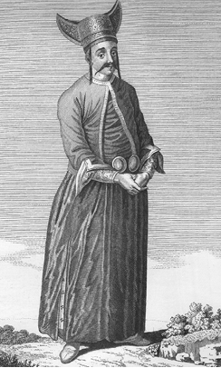
Çavuş, D’Ohsson
Osmanlılarda ‘çavuş’ unvanı ile tarihe geçen ilk kişi, Ertuğrul’un daha sonra da oğlu Osman’ın gaza arkadaşlarından Samsa Çavuş’tur. Ona, bu unvanın veriliş hikâyesini bilmiyoruz. Kaynak bilgilerimize göre Mudurnu’ya yerleşen Samsa Çavuş, yöredeki Rum ahali tarafından sevilen ve kendisine güven duyulan bir kimse idi. Samsa Çavuş’u pek seven Osman ona küçük bir de kale vermiştir:
Lefke’nin yanında dere ağzında, Yenişehir Suyu’nun kenarında bir hisarcık vardı, onu Samsa Çavuş’a verdi. Şimdi oranın adına Çavuş/lar Köyü derler. (ÂPT, 1949: 107; NT, 2008: 57)
Elçilik görevi
Karamanoğlu İshak Bey Karaman’ı zapt ederek, kendi adına hutbe okuttu, sikke kestirdi. Sonra Sarı Yakup oğlu Ahmed Çelebi’yi Sultan Mehmed’e ‘elçilik’ ile gönderip, “Kardeşim Pir Ahmed’i üzerime gönderme ve gelmeye bırakma, Akşehir’i ve Beyşehir’i sana vereyim.” dedi. Sultan Mehmed de Server Çavuş oğlu Çavuşbaşı Ahmed’i Karamanoğlu İshak Bey’e elçilikle gönderdi ve “Akşehir ve Beyşehir zaten önceden bizim satın alınmış mülkümüzdür. Ona ne minnetimiz vardır. Kardeşini bırakmamamızı dilersen, Çarşamba Suyu sınır olsun, suyun ötesi sana, berisi bize.” dedi. Çavuşbaşı Ahmed, elçilik görevini yaptı, ama İshak Bey bu sözü kabul etmedi. (ÂPT, 1949: 214; NT, 2008: 341)
Koruma/muhafız görevi
Kosova Savaşı’nda (1389) kâfirlerin bayrakları baş aşağı olup, orduları yüz çevirdi. Bozuldular. Müslümanlar onların ardına düştü. Murad Gazi birkaç ‘haseki’ ile tepe üzerinde durdu ki düşmanın ardınca giden gaziler dönüp kendisi ile buluşsunlar diye. Meğer bir kâfir yaralanmış, kanlar içinde kendini ölüler arasında gizlemiş imiş. Yerinden kalktı. Düşe kalka Murad Gazi’ye doğru geldi. Çavuşlar onu bırakmadılar. Gazi padişah bir iş için gelmektedir, bir dileği vardır sandı. Çavuşa bıraktırdı. Kâfir ilerleyip padişaha bıçakla vurdu. O anda orada şehitlik rütbesine erişti. (BT, 1949: 56)
Kosova Savaşı’nda “kâfir düşe kalka, Murad Gazi’ye yöneldi. Çavuşlar, engel olmak isteyince padişah, “Bir isteği var olsa gerek, bırakın gelsin.” dedi. O melun yeninde hançer saklamıştı. Gelip hünkârın üzengisini öper gibi yaparak hünkârı hançerledi. (NT, 2008: 138)
Sultan II. Bayezid’e Manastır yakınında bir dere kenarında suikast girişimi (Zilkade 897 Pazartesi / 04.09.1492 Salı): “Padişahımız o suyu geçtiği gibi orada bir Yezidi melun, Rafizi kâfir, kulağı küpeli, Haydarî görünüşlü, kulağında, gerdanında küpe olan, sünnetsiz, taharetsiz, murdar, padişahın üzerine yürüyüp yolu üzerinde durup, padişahı gözetip, fırsat buldum deyip, hemen ansızdan yürüyüp, ben Mehdi’yim deyip, kebesini eğninden çıkarıp yalın kılıç hazır edip, padişahın üzerine yürüyüp hücum etti. Meğer padişahın önünde birkaç çavuşlar vardı. O kişi, bu gayretsizler, hayinler yani çavuşlar önünden kaçıp, padişahın üzerine yürüdü. Tam padişaha yaklaştığı an, padişahın vezirlerinden İskender Paşa o arada hazır bulunup, kulağı ve gerdanı küpeli kişi karşıdan gelirken gürz ile başına öyle vurdu ki, hemen o esnada tepesi üzerine yıkılıp, başı darmadağın oldu. Sonra birkaç dilâverler hazır bulunup, kılıçla hınzır kâfiri parçaladılar. (OBT, 2008: 152-153)
Savaştaki görevi
[I. Kosova Savaşı’nda] Sultan Murad Gazi, savaş kösünün [davulunun] çalınmasını buyurdu. Zurna, nakkare [mehterhanede yer alan, birbirine bağlı iki küre benzeri ve iki değnekle vurularak çalınan bir tür davul] ve boru sesleri göklere yükseldi. O heybetten nice kimseler can verdi. Erenler de atlandılar. Çavuşlar hep birlikte şöyle çağrıştılar: “Hey yiğitler! Hey gaziler! Bugün o gündür ki, kâfirin bağrını kan ve kanını Ceyhun edeceğimiz, bağırsaklarını perran edeceğimiz [uçuracağımız] ve başlarını top gibi galtan edeceğimiz [yuvarlayacağımız] gündür. (NT, 2008: 131)
Baştan aşağı silahlı olan Çelebi Mehmed, aslan misali, sancak dibinde sağında ve solunda, ejderha görünüşlü Rum [Amasya] yiğitleri olduğu halde geldi. Çavuşlar sağdan ve soldan dualar edip sultanı överek, “Nesilden nesile padişah olan, İnaloğlu’nu yenen, Kara Devletşah’ın başını kesen, Kubatoğlu ile Kara Yahya’yı kaçıran, yeryüzünün padişahı budur.” derlerdi. Sonra iki ordu sağ ve sol kol saflarını düzdü. (NT, 2008: 183)
Sancakların dibinde Çelebi Mehmed, parlak ay ve parıldayan güneş gibi sekiz bin Rum serverleriyle yetişti. Çavuşlar dualar ederek önünce yürürlerdi. Sultan Mehmed’in heybetini ve gücünü gören Emir Süleyman, korkup kaçmaya yüz tutunca, Vezir Ali Paşa hemen durumu anladı. (NT, 2008: 217)
“Çavuşlar yürüyüp yoklardı halkı
Yerine kordu emr-i şehle anı
(Çavuşlar yürüyüp halkı yoklardı, şahın emri ile onu yerine kordu/getirirdi.) (NT, 2008: 300, dipnot 3726)
Çavuşlar bağrışarak, “Hani o sultan ekmeğini yiyenler, can ve baş feda ederiz diyenler, işte sırasıdır. Bugün erler meydanında kimin anası er doğurdu. Gaza elbisesi kimin boynuna biçildi. Hani şimdi erlik davasını güdenler, gelsinler görelim.” dediler. (NT, 2008: 301, dipnot 3730)
İstihbarat görevi
Çavuşların savaştaki görevleri arasında ‘istihbarat’ görevlerinin de olduğu anlaşılıyor. Nitekim Fatih ile Uzun Hasan arasındaki Otlukbeli Savaşı’nda (1473), Uzun Hasan’ın nerede olduğu hakkında Osmanlı ordugâhına haber veren çavuşlardır. (FSM, 1955: 215)
9. Andlaşmalar
Osmanlı Devleti, küçük bir sınır/uç beyliği olarak Kuzeybatı Anadolu’da (Söğüt-Eskişehir-Bilecik), 14. yüzyılın başlarında kuruldu. Bu coğrafya, Bizans Devleti (Doğu Roma) ile Anadolu Selçuklu Devleti’nin sınır bölgesidir. Uçlardaki gazilerin/alperenlerin doyum seferleri başlangıçta bu bölgedeki Bizans vilayetlerine yönelikti. Zamanla fetihler başka istikametlere doğru genişleyerek devam etti. Osmanlıların Anadolu’da toprak kazanımları sürerken, 14. yüzyılın ortalarında Rumeli’ye geçişle birlikte fetihler Rumeli ve Balkanlara uzandı. Osmanlıların Anadolu’da savaş hâlinde bulunduğu tek devlet Bizans değildi. Ortaya çıkışları itibarıyla çoğu Osmanlı Beyliği ile çağdaş bazı Anadolu Türk beylikleri ile de çatışmalar oluyordu. Özellikle sınır komşuları Germiyanoğulları (Kütahya) Osmanlılara karşı düşmanca hareket etmekteydi. Daha sonra egemenlik alanları Orta Anadolu’ya doğru kayınca, Osmanlılar bu defa Karamanoğulları (Konya) ile de karşı karşıya geldiler. Bu beylik kendini Anadolu Selçuklu Devleti’nin varisi olarak görmekteydi. O yüzden Osmanlı-Karamanlı mücadelesi, Fatih Sultan Mehmed devrinde Karamanoğulları toprakları Osmanlı ülkesine katılıncaya kadar sürdü. Bu iki hanedan arasındaki ‘siyasî evlilik’ de pek işe yaramamıştı. Çünkü, Karamanlılar her fırsatta Osmanlılara karşı düşmanca tavır takınmayı sürdürdüler. Bazen diğer Türk beylikleriyle hatta Hıristiyan devletlerle Osmanlılara karşı ittifak dahi yapabiliyorlardı.
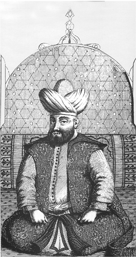
Sultan I. Murad, Demetrius Cantemir
Osmanlı hanedanı ile Karamanoğuları arasındaki siyasî ilişkileri düzeltmeye yetmeyen şu evlilik metinleri örnek olarak verilebilir:
Sultan I. Murad’ın kızı Sultan Hatun, Karamanoğlu Alaaddin Bey’in hatunu idi. Alaaddin Bey, Sultan Murad’ın kendisine kızgın olduğunu, aman vermeyip kendisini ele geçirmek istediğini gördü. Sultan Hatun’a haber gönderip, “Babandan dilek etmezsen Konya’yı alır, beni de öldürür, lütfen bana yardım et. Hünkârın elini öpüp benim günahımı affettir.” dedi. (NT, 2008: 107)
II. Murad, yedi kız kardeşinden üçünü Karamanoğullarıyla evlendirdi; birini İbrahim, birini Alaaddin, birini İsa’yla evlendirmişti. (ÂP, 1949: 164-165; NT, 2008: 266-267)
Osmanlı Devleti gerek Anadolu’da gerek Rumeli ve Balkanlarda savaştığı ülkelerle pek çok andlaşma yapmıştır. Belli bir süre yürürlükte kalması öngörülen bazı andlaşmalar, tek taraflı olarak sürenin bitiminden önce bozulmuştur. Ahdi/barışı bozmak (nakz-i ahd: ahdi bozma, bir sözleşmeyi yok sayma) isteyen devlet, barış yaptığı ülkenin zaafından yararlanmak için fırsat kollardı. Karamanoğullarının bu yola sıkça başvurduğu görülmektedir. Mesela Sultan I. Murad, bütün hazırlıklarını Balkanlara düzenleyeceği sefer için yaptığı ve tam da sefere çıkacağı bir vakitte Karamanoğlu’nun Osmanlı topraklarına girdiği haberini alır; beyleri ve komutanları ile durumu istişare eder. Murad, bir Müslüman ülkeye sefer yapmayı istemediği halde Karamanoğulları üzerine yürümek zorunda kalır. Padişahın üzerine geldiği haberini alan Karamanoğlu elçi göndererek, yaptıklarından pişmanlık duyduğunu söyler ise de Murad sefer kararından dönmez. Karamanoğulları, Osmanlıların özellikle Balkanlarda meşgul oldukları zamanları ve saltanat değişikliklerini, kendileri için ‘fırsat ânı’ bilmişlerdi. Kuşkusuz bu, sadece Karamanoğulları örneği ile sınırlı değildir. Aslında tarihin her döneminde bu tür örnekleri görmek mümkündür.
Neşrî’den yaptığımız şu alıntı, Karamanoğullarının yaptığı andlaşmalara sadık kalmadığını, Osmanlıları savaşa tahrik edici sözler sarf ettiğini, çok açık olarak ortaya koymaktadır:
Karamanoğlu hünkâra elçi gönderip söyledi: “Askerim, askerince var. Eğer barışırsan barışırım, savaşırsan savaşırım. Derdine dert, ölümüne ölüm.” Sultan Murad Gazi cevap verdi: “Bire hey zavallı ve bozguncu zalim! Benim kastım, gece gündüz gaza ile meşgul olmaktır. Benim gazama mani olup Müslümanları ben gazada iken incitirsin. Ahd ü eman/aman bilir adam değilsin. Seni kırmayınca ben huzur ile gaza edemem. Nice barışmak ki, gazaya mani olana gaza, en büyük gazadır. Hazır ol vaktine” dedi. Karamanoğlu bunu işitince hemen beylerini toplayıp gönüllerini aldı. Beylerin her biri Karamanoğlu önünde yer öpüp, yüz döndürmemeye ahd edip, and içtiler.
Murad Han Kütahya’ya çıktı. Karamanoğlu elçi gönderip, barışmak talep etti. Murad Han: “Bunu evvel deseydi olurdu. Ama şimdi asker toplayıp buraya geldim. İş bir yana olmak gerek. Benimle Karamanoğlu nice kere ahd ü eman edip [andlaşma yapıp], sonra yine nakz-i ahd edip [andlaşmayı bozup], ben gaza ile meşgul iken gelip il vurup, Müslümanları incitmiştir.” dedi. (NT, 2008: 101-103)
15. yüzyıl Osmanlı kronik metinlerinde Osmanlı Devleti’nin çeşitli devletlerle yaptığı andlaşmalar Arapça (A), Farsça (F) ve Türkçe (T) sözcüklerle ifade edilmiştir: ahd (A): and, yemin, söz verme; sulh (A): barış, barışma, barışıklık; musâlaha (A, sulh’den): barışma, uzlaşma, barış; muâhede (A, ahd’den): and içme, andlaşma; yemîn (A): and; peymân (F): and, yemin, ahd; ahd ü peymân (A-F): yemin, and; ahd ü peymân etmek (A-F-T): andlaşmak, barış yapmak; and; barış (T) gibi. Bazı tarih yazarları andlaşma ifade eden Arapça, Farsça ve Türkçe sözcükleri bir arada kullanmışlardır. Kronik metinlerinin bir kısmında bu kullanım sıkça geçer. Şu iki örnek metin, bu konuda bir fikir verebilir:
Osman Gazi oğlu Orhan’ı Bursa fethine gönderdi. Bursa’yı hisar edip egirddiler [kuşattılar]. Kâfirleri aciz kalmışlardı açlıktan. Köse Mihal ki adı Abdullah idi. Abdullah ve Turgut Alp’ı bile koştu. Bursa üzerinde azim cenk ettiler. Bursa tekvuruna Berasak derlerdi. Tekvur aciz olup sonra sulhla verdiler. Orhan Gazi ile sulh edip, barışıldı. Hisarı verdiler ahd ile peymân ile. Tekvuru çıktı oğlu ile kızı ile malı ile esbabı ile. Bir habbesini [habbe: buğday arpa gibi şeyler] almadılar. Çıktı İstanbul’a gitti. Orhan Gazi Bursa’yı 726 (1326) yılında fethetti. (OBT, 2008: 15)
Dulkadiroğlu Alâüddevle Davud Paşa ile gelip buluştular. Davud Paşa Alâüddevle’ye gayet hürmet edip Dulkadiroğlu Alâüddevle dahi Davud Paşa’ya muavin olup bir yerde buluşup meşveretleşip, Davud Paşa Alâüddevle’yi hilatleyip, andan [sonra] dönüp gelip Varsak tarafına varıp, Varsak beğlerini ele getirip [yakalayıp], kimini hapsedip ve kimisini öldürüp ve kimini yine sulh ile azat edip ve Turgud beğleri bâki kim varsa kaçıp gittiler. Her birisi bir tarafa gidip sonra Varsak beğleri ve Turgut beğleri bâki kalan kim varsa gelip Davud Paşa ile sulh olunup, barışılıp; ahd ü peymân edip, andlaşıp, sulh u musâlaha olundu. (OBT, 2008: 139)
Biz, andlaşma ifade eden ahd, muâhede, sulh, musâlaha, peyman, ahd ü peyman, and, yemin sözcüklerinden ‘and’ ve ‘yemin’in geçtiği örnek metinlerin sadeleştirilmiş biçimlerini aşağıda veriyoruz. Buna göre:
1. And
Tatarların/Moğolların and bozması
Müslüman çerisi Kara Hisar kalesine erişip savaşa başladılar. Kalenin güney yanı Er Tuğrul’un [Osman Gazi’nin babası] payına düşmüştü. O yanın kâfirleri şaşırıp ne yapacaklarını bilmediler. Barış dilediler. [Selçuklu] sultanı razı olmuyordu. Fakat birden Tatar yine yağı olup ‘and bozdu’ ve İslâm ülkesini yağma edip Müslümanların çoluk çocuğunu tutsak etti ve Müslümanlara yakışmayacak nice nesneleri kötü işli, aldatıcı kurnaz Tatarlar yaptı diye haber erişti. (BT, 1949: 52)
Osman Gazi’nin Çavdar Tatarlarına and vermesi
Osman Gazi, Lefke Gazası’na gidince Germiyan’dan Çavdar Tatarı gelip Karahisar’ın pazarına saldırdılar. Orhan Gazi, Eskihisar’da at nallatıyordu. Çavdar olayını bildirdiler. Hemen atlandı. Bu olayı işitenler Orhan’ın yanında toplandılar. Orhan, hemen hareket etti. Dağ arasında Oynaş Hisarı dedikleri harabe bir hisar vardır, Çavdar Tatarlarına orada yetişti. Pazardan aldıkları her ne varsa hepsini bıraktırdı. Kimini yakaladı, kimini kılıçtan geçirdi. Çavdar Tatarı’nın oğlunu ele geçirdi. Osman Gazi gelinceye kadar hapsettiler. Osman, gazadan dönünce Orhan bu olayı kendisine arz etti. Osman, “Bu zalimler, Müslümandırlar, onları öldürmek olmaz.” diyerek, ‘and verip’ [yemin ettirip] azat etti. O zamandan ta Yıldırım Han zamanına kadar asla düşmanlık etmediler. Şimdi dahi o nesilden vardır. Onlara ‘Çavdarlı’ derler.
Osman Gazi, Çavdar Tatarı’nın oğluna and vermişti. And gereğince yine babasına gönderdikten sonra oğlu Orhan’a, “Oğul! Her ne kadar bu Tatar ile ahd edip [and yapıp, barış yapıp, and verip [yemin ettirip] gönderdik ise de bu Tatar, ‘and bekler’ [and/yemin tutar] kavim değildir. Ben burada oturayım. Bu kez sen var, gaza et. Hak Taala’nın zafer vermesi ümit olunur.” diyerek, Akça Koca’yı, Konur Alp Gazi’yi, Abdurrahman Gazi’yi ve Köse Mihal’i Orhan’ın yanına verip, Karaçepiş ve Karatekin’e gönderdi. Orhan’ın yalnız başına ilk seferi budur. (NT, 2008: 58-59)
II. Murad’ın Karamanoğlu’na and vermesi
Sultan Murad baltacılar gönderip Taş’a yol yapıp Karamanoğlu’nu ele geçirmek maksadını güttü. Bu maksatla varıp Bozkır’a çıktılar. Karamanoğlu bunların maksatlarının başka olduğunu anladı. Hemen Mevlana Hamza’yı elçi olarak gönderdi ve “Hünkâr, bizim küstahlığımızı mazur görsün. Bu defa da suçumuzu affetsin.” diyerek yalvarıp yakardı, ettiği işe pişman oldu. Mevlana Hamza hünkâra, “Karamanoğlu aldığı Hamit-ili’nden de elini çekti. Sultanım bu kere de bizi bağışlasın.” dedi. Hediyeler sunup hünkârın elini öptü.
Hünkâr, “Mevlana Hamza! Senin hatırın için onun suçunu bağışladım ama bu vilayeti ona ben verdimdi, bundan sonra kardeşi İsa’ya veririm.” dedi. İsa o vakit hünkârın yanında idi.
Hünkâr, Karamanoğlu’nun suçunu affetti. Kendisi de Mevlana Şükrullah’ı elçi olarak gönderdi. Elçi, bundan böyle hiçbir sebeple asla düşmanlık etmeyeceğine dair Karamanoğlu’na and verdi [yemin ettirdi].
Bu olaylar, hicretin 838 (1434) yılında meydana geldi. (NT, 2008: 283)
II. Mehmed’in Karamanoğlu’na and vermesi
Sultan Mehmed [Fatih], tahta geçer geçmez âleme düzen vermeye başladı… Devlet atına binerek büyük bir ordu ile Bursa’ya vardı. … Bursa’dan hareket eden Sultan Mehmed, Akşehir’e çıktı. Akşehir ve Beyşehir halkı karşılayıp itaat ettiler. Karamanoğlu İbrahim Bey, Taş’a [Neşrî’de üç dört yerde bu şekilde, Enverî’de ise Taş-il/Taşel olarak geçiyor.] girip yine yalvarmaya başladı, “Günahlarıma tövbe ettim ve yaptığım işlere pişmanım.” deyip yalvardı.
Hünkâra gelip, “Baban ve deden Karaman vilayetini fethettikten sonra merhamet edip, burasını yine Karamanoğlu’na verip gitmişlerdir. Karamanoğlu, ‘Kızımı vereyim, her yıl seferine varayım.’ der. Şimdi, sultanım ne buyurur? Onun suçunu affetsin.” dediler. Sultan Mehmed’i razı ettiler. Sonra Kasapoğlu Mahmud Bey’i elçilikle gönderdiler. O varıp artık düşmanlık etmeyeceğine dair Karamanoğlu’na and verdi [yemin ettirdi]. Sultan Mehmed, Karamanoğlu’nun suçunu affederek dönüp yine devletle Bursa’ya yöneldi. (NT, 2008: 308-309)
Osmanlılara karşı bazı yerel beylerin Karamanoğlu önünde and içmeleri
Karamanoğlu, Sultan Murad’ın üzerine yürüdüğü haberini işitince, beylerini teker teker huzuruna çağırıp, onların gönüllerini aldı. Samagaroğlu Hızır Bey, Tatar ulusu Teberrük Bey, Babukoğlu Ali Bey, Dilencioğlu Pir Ali Bey, Karamanoğlu’nun önünde yer öpüp, yüz döndürmemeye and içtiler. (NT, 2008: 101-102)
Varna kâfirlerinin Varna Hisarı’nı Osmalılara vermek için and içmeleri
Dobrucaoğlu’nun Varna adında sağlam bir hisarı vardı, onu taht edinmişti. Bir gün ansızın iki kâfir Ali Paşa’ya gelerek, “Varna’nın ileri gelenleri, tekfurunu yakalayarak hisarı paşaya vermek için ittifak edip and içtiler.” dediler. Paşa, bu habere çok sevindi. Timurtaşoğlu Yahşi Bey’e, “Var, gör. Eğer gerçek ise kaleyi alıp sağlamlaştır. Gelip yine bana kavuş.” dedi. (NT, 2008: 114)
Daraka kâfirlerinin Vezir Ali Paşa’yı ikna için and içmeleri
Vezir Ali Paşa Şumnu’da iken Daraka’dan birkaç kâfir paşaya gelip, “Daraka Hisarı’nı verelim, adam gönderin.” dediler. Ali Paşa, Pravadi’nin alındığını müjdeleyen Yahşi Bey’in kulu Eski Bolozlu Murad’ı birkaç yüz kişiyle gönderip, “Var, Daraka Kalesi’ni zapt edip, içine gir otur. İnşallah hünkâr gazadan dönünce sana gereken ihsanı yaparız.” dedi.
Bolozlu Murad, Daraka’ya vardı. Kâfirleri yine pişman olup [vazgeçip], kaleyi vermediler. Murad, kalenin etrafını çalıp çarparak, paşanın yanına geldi. Paşa, “Ne tez geldin, vardığın işini ne ettin?” diye sordu. Murad, olayı anlattı. Ertesi gün, kâfirler yine paşaya gelerek, yüzlerini yere vurdular. Ali Paşa, “Bre melunlar! Buraya gelip kaleyi verelim diye bizim sakalımıza gülüp geri gidersiniz. İnşallah sizin hakkınızdan gelirim.” dedi. Kâfirler paşanın bu sözlerini işitince Hırıstos’a [Hazreti İsa] ve İncil’e and içip, inandırdılar. Ali Paşa, yine Eski Bolozlu Murad’ı gönderdi. Murad, Daraka’ya gelip kaleye girip yerleşti, korunması ile meşgul oldu. (NT, 2008: 116)
Karamanoğlu’nun and içip, andını hile ile bozması
Karamanoğlu, ülkesinin ileri gelenlerini dilekçi düşürüp, [Osmanlı padişahı II. Murad ile] yedi yıla degin ahdleşmişlerdi. Çok geçmeden Karamanoğlu İbrahim Bey yine yagı [düşman] olmuş. O yerin kadıları ki o zaman araya girip sulh ettirmişlerdi. Onlar söylemişler: “Hey Bey! Yedi yıla degin and içip, araya adamlar bırakıp [koyup] güç ile barıştık. Vade tamam olmadan yagı olup, ahd ü peymânı sımak [andlaşmayı/barışı bozmak] olmaz” demişler. Bunun üzerine Karamanoğlu İbrahim Bey: “Ben o vakit ‘yıl’ demedim ‘yel’ dedim. O vakitden beri yedi yel değil yüz yel oldu. Yüz yel esti” diye cevap vermiş. Şimdi Karamanlılar şunun gibi dindar olur. Ahdı sıdı [andlaşmayı bozdu] baştan çıktı. Karamanlılarda bunun gibi ahd yoktur. Hem helâl haram olmaz. Ve nicesinden işitmişizdir haram, taştır dediklerini. Ve hem Osmanlı ile dost olmazlar. Dostluğu fırsat buluncaya kadardır. (AOK, 2000: 74)
Karamanoğlu İbrahim Bey’in and işmesi [and içmesi]
Geldi didi pâdişâha bir cüvan______Kaşdı gitdi Taş-ili’ne Karaman
Ol seker kaya başında karga-vâr______Geh biner geh yider iki yorga var
Didi hem vardur babucum iki çift______Kim geyem yapışduram ben ana zift
Bulam ol kaçgun kulumı arayam______Dağını taşını anun tarayam
Pes Karamanoğlu İbrâhîm Beg ______İlçi göndürdi der ana turma teg
Elçi geldi ele ayağa düşer______İbn-i Mevlânâ zârısı hadden aşar
Merhamet kıldı yine sultân anı______Eyledi gamgîn iken şâdân anı
Varuban Mahmûd Beg eyledi pend______Sulh İbrâhîm ider çok işdi and
Ol il iderdi du‘â leyl ü Nehâr______Kim Karaman-ili’n ala şehriyâr
Olmaz anlarun du‘âsı müstecâb______Bî-atâ sulhı görür beğler savâb
Şeh dedi hikmetle Yunan illerin______Hak vire alam Karaman illerin
Çünki her iş vaktine merhûn durur______Şimdi devrân anı şâha döndürür
(DE, 2003: b. 514-525)
Osmanoğulları ile yaptığı andlaşmayı bozmasına bir anlam veremeyen beyleri, Karamanoğlu’na, “Niçin böyle edersin? Hani yemininiz?” dediler. Bunun üzerine Karamanoğlu, “O vakit koynumda bir güvercin vardı. O can üzerine and içtim. Sonra güvercini salıverdim, and bozuldu.” dedi. Bu haberi işiten Sultan Mehmed, “O and onu bırakmasın, inşallah!” dedi. (NT, 2008: 247, dipnot 3135)
Verilen bu metinlerde:
and beklemek : Yemin tutmak
and içmek/işmek : Yemin etmek
and vermek : Yemin ettirmek
2. Yemin
Osman Gazi’nin, Ulubat Köprüsü’nü geçmeyeceklerine dair Ulubat Tekfuru’na ahdetmesi
Adranos [Orhaneli], Kestel, Bursa ve Kite tekfurları Osman Gazi’ye karşı anlaştılar. İki taraf karşı karşıya gelince Adranos Tekfuru kaçtı. Kestel Tefuru öldü. Bursa Tekfuru hisarına girdi. Osman’ın karşısında olan Kite Tekfuru da kaçtı. Osman ardına düştü. Ulubat’a kadar kovaladı. Tekfur, Ulubat Köprüsü’nü geçti. Osman Gazi köprübaşında durdu. Ulubat Tekfuru’na haber gönderip, “Kite Tekfuru’nu bana ver, yoksa gölbaşından dolanıp ilini harap ederim.” dedi. Bunun üzerine Ulubat Tekfuru: “Sen ve senin neslinden bir kişinin bu köprüyü beri geçmeyeceğine ahd edin ki, yendiğin Kite Tekfuru’nu sana vereyim.” dedi. Osman kabul etti. Ulubat Tekfuru kendisine sığınan Kite Tekfuru’nu Osman’a gönderdi. Ta o zamandan şimdiye dek [15. yüzyılın sonları] Osmanlı soyu ahdi bozmadı. Ulubat Köprüsü’nden geçmeyip, sudan kayıkla geçtiler. (ÂPT, 1949: 105; NT, 2008: 55)
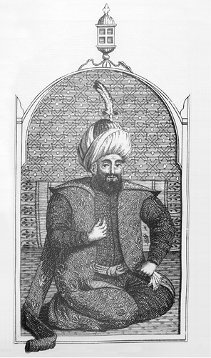
Osman Gazi’nin temsili bir gravürü, Demetrius Cantemir
Timur’un, Yıldırım Bayezid’i inandırmak için yemin etmesi
Timur, kendi meclisinde bu tedbiri edince geceleyin Yıldırım Bayezid Han’ı hapisten çıkartıp yanına davet etti. Oğlu Sultan Mehmed’in faaliyetlerini, nice askerleri yenerek yiğitlik ettiğini ve onun hakkında ne düşünmüş ise, onları söyledi. Yıldırım Han, Timur’un söylediklerine inanmayarak, “Sultandan böyle hareketler çıkması mümkün değildir, çünkü o henüz on bir yaşında bir çocuktur. Bunun gibi işler onun elinden gelmez.” dedi. Mecal bulamayıp, “ferman sizindir” dedi.
Bunun üzerine Timur, eğer Çelebi Mehmed gelecek olursa kendisinin ona hiçbir şekilde zararı ve ziyanı dokunmayacağına, onu bağrına basacağına, kızını verip güveyi edineceğine, kendisini yine memleketine göndereceğine çok büyük [gılâz u şidâd ile] yemin ederek Yıldırım’ı inandırdı. Birbirlerinin sözlerine inanmış olarak her biri sultana ayrı ayrı mektup yazdı. Timur’un Hoca Mehmed adlı ulu bir adamı vardı, mektupları onun eline verdiler. İyi hilatler ile sultanı davet etmeye gönderdiler. (NT, 2008: 189-190)
Musa Çelebi’nin Rumeli’ye geçip Çelebi Mehmed’e itaat edeceğine dair yemin etmesi
Sultan Mehmed düşmandan kurtulunca vezirleri ve beyleri ile oturup, yiyip içmekle meşgul oldu. Musa Çelebi de bu sohbette birlikte idi. Musa sohbet sırasında ayağa kalkıp Sultan Mehmed’in elini öperek hayli muhabbet gösterdi. Bunu gören sultan son derece ferahladı ve “Ey kardeş! Muradın nedir?” diye sordu. Musa Çelebi de “Ferman padişahımızındır. Ey âlemin şahı! Kardeşimiz Emir Süleyman’ın bize ne türlü iş ettiğini, ne kadar zulüm yaptığını bilirsiniz. Eğer ben kula izin olursa, İsfendiyar’a varıp, ondan gemi isteyerek Rumeli’ye geçeyim. Ümidim, Allah fırsat verirse orada bey olayım. Ve kardeşimiz Emir Süleyman bu olayı işitince hiç durmayıp Rumeli’ye yönelse gerek. Bu takdirde bu memlekette sen tek başına padişah olursun. Eğer müyesser olup da Rumeli’de beylik edersem sikke ve hutbeyi sultanım adına edeyim, sultanımın devletinin günlerine dualar olunsun.” dedi. Bunun üzerine yemin edip, ahd ü peyman ettiler. Sultan Mehmed, Musa Çelebi’ye hayli at, elbise ve mal verdi. Sonra Musa vedalaşıp oradan ayrıldı. (NT, 2008: 221)
Çelebi Mehmed ile Bizans Kralı arasında yeminli andlaşma
Sultan Mehmed, Rumeli’ye gitmek tedbirini edip etrafa mektuplar gönderdi. On beş bin kadar asker toplayıp İstanbul’un karşısına kondu. Sultan Mehmed, İstanbul Kralı’na adam gönderip, birbirlerine hiç zararları olmayacak şekilde musalaha ve muahede ettiler. Çelebi Mehmed eğer Rumeli’ye bey olacak olursa kral bunu saygıyla karşılayacak; eğer Mehmed kardeşi Musa’ya yenilecek olursa vakit kaybetmeksizin Anadolu’ya geçmesi için kral, sultana gemiler verecekti. Bu andlaşma üzerine yemin ettiler. (NT, 2008: 221)
Karamanoğlu’nun hileli yemini ve and içmesi
Vezir Bayezid Paşa, Karamanoğlu’nu alıp gelip Çelebi Mehmed’e arz edince, sultan, “Ey Karamanoğlu! Ben seni neyliyeyim?” dedi. Karamanoğlu, “Sultanımın eli bağlı günahkâr kuluyum. Ben kuluna her ne siyaset emretse onu fazlasıyla hak ettim, ferman sultanımındır.” dedi. Sultan Mehmed büyük ve yiğit kişi idi, onu esirgedi ve “Karamanoğlu, gel yemin et. Bir daha Müslümanlara zarar etmeyesin.” dedi.
Bunun üzerine Karamanoğlu Mehmed Bey, “baş üzerine” deyip elini göğsüne koyarak, “Şu can bu bedende olduğu sürece, Osmanlı memleketine kötü gözle bakmayayım. Eğer bakarsam Kur’an benden alacaklı olsun!” dedi.
Bu yemini işiten Sultan Mehmed’in gönlü hoş oldu, sonra Karamanoğlu’na ve oğluna hilat giydirdi. Kös, sancak, atlar, katırlar ve develer verdi. Ve alınan şehirlerini de yine ona sadaka edip gönderdi.
Karamanoğlu, ordudan ayrılır ayrılmaz, Sultan Mehmed’in atlarının durduğu çayıra ulaştı. At oğlanlarının otlattıkları beylik atları ellerinden alarak, “Benim Osmanlı ile düşmanlığım kıyamete kadar kalıcıdır.” deyip uzaklaştı. Bacı Hisarı dedikleri hisarı geçtikten sonra yine Osmanlı memleketini yıka yaka gitti.
Karamanoğlu’nun bu yaptıklarına bir anlam veremeyen beyleri, Karamanoğlu’na, “Niçin böyle edersin? Hani yemininiz?” dediler. Bunun üzerine Karamanoğlu, “O vakit koynumda bir güvercin vardı. O can üzerine and içtim. Sonra güvercini salıverdim, and bozuldu.” dedi. Bu haberi işiten Sultan Mehmed, “O and onu bırakmasın, inşallah!” dedi. (NT, 2008: 247, dipnot 3135)
Rüşvet almayacaklarına dair ‘kadılar’a yemin ettirilmesi
Yıldırım Bayezid Han, Vezir Ali Paşa’yı çağırttı. Söyledi: “Ali! Bu kadılar okumuşlar mıdır?” dedi. Ali Paşa: “Sultanım! Okumayan kişi kadı mı olur?” dedi. Yıldırım Han: “Ya okumuşlardır. Niçin yaramazlıklar ederler, okuduklarını tutmazlar?” Ali Paşa: “Sultanım! Bunların düşelikleri [ücretleri] azdır, başka cihetleri [gelirleri] yoktur” dedi. Yıldırım Han: “Bunlara bir cihet buluver” dedi. Ali Paşa, miras bölüşümünde bin akçada yirmi akça hisse koydu. Sonra şer’i mektup yazılsa her mektupta iki akça koydu. Her şer’i mektuptan iki akça almak o zamandan beri kaldı. Bu halkın dilinde vardır ki, Ali Paşa tarhı iki akça dedikleri budur. Bu yolla kadıları ölmekten kurtarıp her birine yemin ettirip azat ettiler. (OBT, 2008: 35, dipnot 211)
Sonuç: Osmanlı Devleti’nin ilk iki yüzyılında çeşitli ülkelerle yaptığı andlaşmalar, 15. yüzyıl Osmanlı kronik metinlerine ahd, muâhede, sulh, musâlaha, yemîn, peymân, ahd ü peymân, and, barış gibi Arapça, Farsça ve Türkçe sözcüklerle girmiştir. Osmanlılar, kendilerine karşı suç teşkil edecek, hatta savaş sebebi sayılabilecek fiilleri işleyen ülkelerin yöneticilerini, bir daha böyle bir fiile kalkışmamaları şartı ile and verip, yani yemin ettirip bağışlamışlardır. Osmanlı padişahları, problemlerin özellikle Müslüman ülkelere/beyliklere karşı savaştan ziyade barışla çözülmesinden yana tavır takınmışlardır. Bazı ülke yöneticilerinin bilhassa Karaman beylerinin ve Tatarların and bekler/sözünde durur kavim olmadıklarına metinlerde özel vurgu yapılmıştır. Karaman beylerinin pişmanlık duyarak yaptıkları andlaşmaları çeşitli hilelerle bozmaları oldukça ilginçtir. Benzetme yerinde ise minareyi çalacak olanın kılıfını hazırlaması gibi onlar da meşreplerine uygun and/yemin bozma (nakz-i ahd) yolunu bulmuşlardır. Böylece içtikleri anda sadık kalmadıklarını çeşitli vesilelerle göstermişlerdir. Yine ilginç örneklerden biri de Yıldırım Bayezid’in rüşvet alan kadıları, uzun süreli hapisle veya başka şekilde cezalandırma yoluna gitmeyip, bir daha rüşvet almayacaklarına dair ‘yemin ettirip’ serbest bırakmasıdır.
Osmanoğullarının ettikleri yeminlere sadık kaldıklarını gösteren en tipik örneklerden biri, Osman Gazi’nin Ulubat Köprüsü’nü geçmeyeceklerine dair Ulubat Tekfuru’na verdiği yeminli sözdür. Osman zamanında edilen bu yeminin, bir buçuk asır sonra bile geçerli olduğunu Âşık Paşazade ve Neşrî tarihlerinden öğreniyoruz. Osmanlılar yaptıkları bazı andlaşmaları and/yemin ile pekiştirme yoluna gitmişlerdir. Nitekim Çelebi Mehmed zamanında Bizans ile yapılan andlaşma, Kur’an ve İncil üzerine yemin edilerek sağlamlaştırılmıştır.
E. MALİYE/VERGİLER
1. Avarız vergisi
Olağanüstü durumlarda özellikle savaş zamanlarında toplanan oranı belli olmayan bir vergidir. Önceleri hane başına yirmişer akça alınırken sonraları bu oran sürekli artmıştır. Osmanlı kaynaklarında bu vergi ilk kez II. Murad devrinde Ergene Köprüsü’nün yapımı ve yeni bir yerleşim yeri olarak Ergene Kasabası’nın kuruluşu dolayısıyla geçmektedir. Padişah, bu yeni yerleşim yerine gelip yerleşenlerden avarız/avârız vergisini kaldırmıştır. Bundan, iskâna açılan bu yerin bir an önce şenlenmesi amaçlanmıştır (Geniş bilgi için aşağıda bk. II. Bölüm, C. Bayındırlık Hizmetleri). Daha önceki bilgilerimiz, bu verginin Fatih zamanına ait kayıtlarda geçtiği şeklinde idi (bunun için bk. Pakalın, 1971: I, 112).
2. Çift akçası
Mahmud Paşa Güvercinlik Hisarı’nı, Dırava’yı, Sava’yı, Kürüce’yi, Brançe’yi ve daha bunlara benzer nice hisarları alıp o vilayeti tamamıyla ele geçirdi. Sultan Mehmed, Belgrad üzerine havale yaptırmıştı. Mahmud Paşa gelip onu tamir ettirip, sağlamlaştırdı. Sonra yürüyüp, Yelli-yurd’a vardı, oradan Üsküp’e gelip hünkârla buluştu … Bu zafer müjdesinden günler sonra banları, sancakları ve nice kâfiri hünkâra [Fatih] getirdiler. Hünkâr da çoğunu kırdırdı. Sonra askere izin verdiler. O zamana kadar, reayadan ‘çift akçası’ olarak yirmi iki akça alınırdı. Yapılan bu sefer, uzak yerlere olduğundan padişah, sipahiye emrederek, ‘otuz ikişer akça alın.’ dedi. Şimdi [15. yüzyılın son çeyreği] ‘çift akçası’ olarak alınan otuz ikişer akça, o tarihte ortaya çıkmıştı (1459/60). (ÂPT, 1949: 199-200; NT, 2008: 324-325)
3. Hüccet vergisi
Yıldırım Bayezid devrinde kadıların rüşvet almaları yüzünden hapsedildikleri, ancak uzun tartışmalardan sonra kadıların hayatlarının bağışlanarak serbest bırakıldığı, bu tür olayların tekrar yaşanmaması için Vezir Ali Paşa’nın, kadıların ücretlerinin artırılmasını padişaha teklif ettiği, padişahın da bu konuda Ali Paşa’ya yetki verdiği; Ali Paşa’nın, kadıların gelirini artırmak için bir düzenleme yaptığı daha önce ifade edilmişti. İşte bu düzenlemeye göre, kadıların baktıkları miras davalarından yüzde yirmi, yazdıkları ‘şer‘î mektup’tan yani mahkemece verilen ‘hüccet’ten de iki akça harç almaları kararlaştırıldı. İşte Osmanlılarda her yazılan ‘şer‘î mektup’tan iki akça alınması, Yıldırım Bayezid zamanında bu olayla başlamıştır. (ÂPT, 1949: 139; NT, 2008: 154)
Vezir Ali Paşa Yıldırım Bayezid’e, “Sultanım! Kadıların gelirleri azdır,” dedi. Yıldırım Han, “Bunlara bir cihet [gelir] buluver” dedi. Ali Paşa miras taksimlerinde bin akçada yirmi akça resm [harç] koydu. Şer‘î mektup [hüccet] yazılsa her mektupta iki akça harç koydu. Her şer‘î mektuptan iki akça harç almak o zamandan kaldı. Bu Ali Paşa’nın düzenlemesidir. Bu iki akça harç, halkın dilinde ‘Ali Paşa tarhı’ olarak dolaşır. (OBT, 2008: 35)
4. Pencik
Akınlarla savaşlarda ele geçirilen esirlerden beşte birinin ve esir sahibinde kalan beşte dördünden alınan verginin adıdır. Osmanlılarda bu verginin ilk uygulaması Sultan I. Murad zamanındadır (bk. I. Bölüm, C. HUKUK / Kanunlar).
F. ORDU
1. Alperenler’den Anadolu ve Rumeli gazilerine
Oğuzlar/Türkmenler, çeşitli nedenlerle Orta Asya’daki yurtlarından Anadolu’ya göçtüler. Bu göç dalgalarında toplumun değişik kesimlerinden insanlar bulunuyordu. Her göç gerçeğinde olduğu gibi bu göçlerde de insanlar sevdikleriyle, alabildikleri mal ve eşyalarıyla birlikte, boylar hâlinde Anadolu yolculuğuna çıktılar. Bilindiği gibi Oğuzlar, ilk kez Selçuklu komutanlarından Çağrı Bey’in 1020’li yıllarda Doğu Anadolu’ya yaptığı akın sırasında Anadolu coğrafyasını tanıma imkânı bulmuşlardı. Anadolu yarımadasına yapılan Oğuz göçleri için bu tarih başlangıç alındığında, büyük tarihî göç dalgaları iki yüzyıldan fazla sürmüş olur. Malazgirt Zaferi (1071) sonrasında Selçuklu komutanları Bizans/Doğu Roma topraklarında Ege sahillerine kadar uzanan akınlar yapmışlardı.
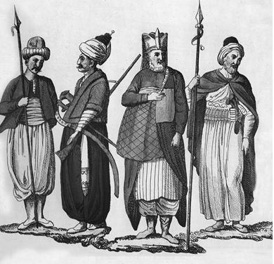
(Soldan sağa) Yeniçeri, yeniçeri ağa, serdengeçti, alemdar, Giulio Ferrario
Osmanlı Devleti’nin kuruluşunu hazırlayan şartlardan biri olarak Anadolu’ya yapılan 1220’lerden sonraki göçler çok önemlidir. Moğol baskısı yüzünden Horasan bölgesindeki yurtlarını terk etmek zorunda kalan Oğuzlar kendilerine güvenlikli bir yer arıyorlardı. Onlar için en uygun yer, Bizans Devleti ile soydaşları Selçukluların egemenliğini paylaştıkları Anadolu idi. Horasan’dan göç edip Anadolu’ya gelen Oğuzların yoğun olarak yerleştikleri yerler Amasya, Tokat, Sivas (Rum diyarı) ve Torosların etekleri ile Anadolu’nun kuzeybatı kesimi idi. Gelenler arasında göçebe ve şehirli halk, bilginler, şeyhler, dervişler, tüccar ve sanatkârlar gibi toplumun değişik kesimlerinden insanlar bulunuyordu.Moğolların Selçuklulara karşı kazandıkları Kösedağ Savaşı (1243) Anadolu tarihi için önemli bir dönüm noktası teşkil etti. Bu olay, Selçuklu devri Türk tarihi için tam bir felâket oldu. Ancak bu talihsiz olayın, Anadolu’da taze bir siyasî güç olarak yeni bir Türk devletinin yani Osmanlı Devleti’nin doğmasına yol açması gibi olumlu bir tarihî sonucu da vardır. Bu yenilgi ile Anadolu Selçuklu sultanları, yetkisiz ve etkisiz biçimde, Moğolların sadık birer valisi konumuna düştüler. Moğolların zulmünden ve sultanların denetiminden kurtulmak isteyen Oğuzlar/Türkmenler, serbest hareket edebilecekleri Selçuklu-Bizans sınır bölgesine göçüyorlardı. Bu yüzyılın sonlarına doğru Bizans’ın ciddî anlamda güç kaybetmeye başlamış olması da onlara, geleceklerini belirlemelerinde önemli bir imkân sundu. Moğolların kötü yönetimi Anadolu’daki Türk insanını canından bezdirmişti. Zulme dayalı bu yönetimden kurtulmak isteyen Oğuzlar yeni bir siyasî arayış ve oluşum içine girdiler. Karaman Türkmenlerinin Konya’ya karşı 1261’deki ilk saldırıları bu harekete ivme kazandırdı.
Uç/sınır bölgelerinde son derece canlı ve renkli bir yaşayış biçimi vardı. Selçuklu sarayında Fars dili ve kültürü ilgi görürken, uçlarda Türkçe ilgi görüyordu. Selçuklu yönetiminden bağımsız hareket edebilen sınır/uç toplumu siyasî ve kültürel anlamda giderek güçleniyordu.
Yeni bir Türk devleti kurma amacı güden Osman Gazi (ö. 1324) bu yüce davasında yalnız değildi. Ona, maddî ve manevî destek sağlayan çeşitli çevreler ve organizasyonlar bulunuyordu. 15. yüzyılın önemli tarihçilerinden Âşık Paşazade (ö. 1493’ten sonra) bu organizasyonların adlarını Gâziyân-ı Rum (Anadolu gazileri), Abdalân-ı Rum (Anadolu abdalları/dervişleri), Âhiyânı Rum (Anadolu ahileri) ve Bâciyân-ı Rum (Anadolu bacıları) olarak takdim etmektedir. (ÂPT, 1332: 205) Osmanlı Beyliği’nin kurulup gelişmesinde bu örgütlerden her birinin kayda değer katkıları olmuştur.
Osmanlı Devleti’nin kuruluşunda etkili olan en önemli dinamiklerden biri de ‘gaza’ ve ‘cihad’ düşüncesi idi. Ancak bu düşünceyi benimseyenlerin saflarında yer almak ve ‘gazi’ unvanını/sanını kazanmak o kadar kolay değildi.
Gazi olacak kişide şu dokuz şart aranırdı:
1. Ana ve babanın rızasını almak,
2. Borç gibi üzerindeki emanetleri yerine getirmiş olmak,
3. Ailesinin geçimi için nafaka bırakmak,
4. Gaza süresince kendi geçimini sağlayacak durumda olmak (sefer esnasında eşkıyalık gibi şeylere yeltenmemesi için),
5. İslam hükümdarının gaza için emretmiş olmak,
6. Yoldaşına yardımcı olmak yani dayanışma ve birlik içinde olmak,
7. Yolda kimseyi incitmemek,
8. Düşmanla çarpışma anında kaçmamak, sonuna kadar dayanmak,
9. Ganimet malına ihanet etmemek. Gazinin niyeti samimi olmak, İslam dini ve Müslüman halk için savaştığını unutmamak, gazaya sadece ganimet için gitmemek (İnalcık, Türkler, IX, 77 vd.).
Gazi, Allah yolunda savaşanlar için kullanılan bir unvandır. İslam devletlerinin fetih hareketlerinde, ‘gazi’ sanını elde etmek ve şehitlik derecesine/mertebesine ulaşmak çabası, gaza ve cihad düşüncesinin gelişmesi ve değerinin artmasında büyük rol oynamıştır. Bu yüce düşünce, ‘ölürsem şehit kalırsam gazi’ sözünü ortaya çıkarmıştır. Gaza ve cihad ülküsü, Osmanlı Devleti’nin gerek kuruluşunda gerek çok hızlı bir şekilde güç ve kuvvet kazanmasında en önemli dinamiklerinden biri olmuştur.
Gazi tabirinin hükümdarlara şeref unvanı olarak verildiği de görülmektedir. Nitekim ilk Osmanlı padişahları için bu unvan kullanılmıştır. Mesela Osman Gazi, Orhan Gazi, Murad Gazi/Gazi Hüdavendigâr gibi. Aslında bütün Osmanlı padişahları ‘gazi’ unvanını resmî yazışmalarda veya gerekli gördüklerinde kullanmışlardır. Gazi terimi lakap ve unvandan başka, ordunun içinde bir zümre olan ‘gaziler’ için de kullanılmıştır.
Hücum etmek, savaşmak, yağmalamak, din uğrunda savaşmak, cihad etmek anlamlarına gelen Arapça ‘gazi’ kelimesinin Türkçedeki karşılığı ‘kahraman’, ‘cengâver’ anlamındaki alp ya da alperendir. Uçlardaki savaşçı unsurlar olan alpler/alperenler, kendilerini gazaya adamış, kutsal ganimetle yaşayan ‘uç gazileri’ idi. Ancak bu unvanlar da, tıpkı gazi unvanında olduğu gibi gelişigüzel verilmezdi.
Alp/alperen olmanın şu dokuz şartı vardı:
1. Kuvvetli bir yürek yani şecaat/yiğitlik,
2. Bazu kuvveti/ fiziksel güç,
3. Gayret/çaba,
4. İyi bir at,
5. Özel bir elbise/zırh,
6. Yay,
7. İyi bir kılıç,
8. Süngü,
9. Uygun arkadaş (yoldaş/nöker).
İşte Osman Gazi’nin silahlı güçleri, bu denli üstün niteliklere sahip gaziler/alperenlerden oluşuyordu (İnalcık, Türkler, IX, 78).
Hiç kuşkusuz, Osmanlı Devleti’nin kurucusu Osman Gazi de başlangıçta bu alplerden biri idi. O, Bizans topraklarına akın yapanlar arasında en atılganı idi. Uçlarda gaziler ganimet seferlerinde en başarılı önderin bayrağı altında giderlerdi. Osman Gazi bütün gazileri kendi bayrağı altında toplamayı başardı.
Gazi ve alp terimlerinden ‘gazi’ İslam kültürünü, ‘alp’ ise eski Türk kültürünü temsil etmektedir. Alp ve gazi terimleri Osmanlı Gazi döneminde özdeş olarak kullanılmıştır. Nitekim Osman Gazi’nin gaza arkadaşlarından birinin adı Konur Alp Gazi’dir. Bu gazi kumandanın, fethinde hizmetinin geçtiği yerlerden biri, kendi adının verildiği ‘Konurapa/Konrapa’dır (Düzce). Daha sonraki dönemde, özellikle Sultan II. Bayezid devrinde (1481-1512), Balkanlarda yapılan kimi seferlerde, bu iki kavramın birlikte kullanılmaya devam ettiğini gösteren bilgilere sahibiz.
Alplik töresi hakkında aşağıdaki beyitler bir fikir verebilir:
Kanı o ki ister alplik adını
Almak ister düşmeninden dadını
Düşmeni kahr eyleyip basmak diler
Başını at yanına asmak diler
Gelsin işitsin ki alplik nicedir
Alplerin sermayesi gör ki nedir
Eydeyim [diyeyim] sana bir bir ahvâlini
Ki bilesin alperenler hâlini
(M. F. Köprülü, Türk Edebiyatında İlk Mutasavvıflar, 3. baskı, Ankara 1976, s. 244, dipnot 90)
Tarihçi Âşık Paşazade’nin, Anadolu gazileri ile anlatmak istediği, hiç şüphesiz, alpler teşkilatıdır. Dinî-askerî özellikteki alperen teşkilatının Anadolu’nun fethinde ve Türkleşmesinde önemli ölçüde katkıları olmuştur.
15. yüzyıl Osmanlı tarih yazarları, gazi ve gaza kavramlarına özel bir vurgu yaparlar ve anlamları üzerinde dururlar. Tarih metinlerinden yapılan şu alıntılar bu hususu açıklayıcı niteliktedir:
Osman Gazi, Feramürz oğlu Sultan Alaaddin Keykubad’dan kılıç kuşandı. Osman, babası Ertuğrul’un yolunda yürüyerek kendisini gazaya adadı. Niyeti hayır [samimi] idi. Osman Gazi, “ekmeğimi sadece gazadan çıkarayım ve hiçbir hükümdara muhtaç olmayayım. Böylece, hem dünya hem de ahiret elime geçsin.” derdi.
O zamanın büyük ve asil hükümdarların hepsi, Osman Gazi’nin niyetinin samimi olduğunu gördüler. O nedenle Osman Bilecik’i fethedince ona mani olmadılar, aksine, “kâfirlerden her ne fethederse, ona helal olsun.” derlerdi. Bu yüzden, Osman’a ve evladına gazi denildi. Bunların niyeti, öteki melikler ve sultanların yaptıkları gibi İslam ülkelerini ele geçirmek değildi. Devletlerinin temeli sırf ‘gaza ve cihad’ ile atıldığından, bunlar gazilik adına [unvanına)] gerçekten hak kazandılar. Öyleki bu ad, adı konana uygun oldu. (NT, 2008: 28-29)
Osman Gazi zamanıydı. Ertuğrul Gazi o zaman hayattaydı. Selçuklu sultanı Gıyaseddin vefat edip memleket karıştığında, Ertuğrul ve oğlu Osman, Karaman ülkesine kastetseler alırlardı. Ama derlerdi ki, biz bu ocaktan uyandık, o ocağa kastetmek olmaz. Ve hem bize Allah tarafından ilham oldu ki, gazadan dönmek olmaz. Nasip bize gaza malından [ganimetten] sunuldu. Bu inancı sağlam tutup gazadan dönmediler. Allah yolunda çok gazalar ettiler. Memleketler fethetmeye başladılar. Güç ve kuvvet bulup yüceldiler. (OBT, 2008: 11)
Koyulhisar’ı fetheden Sultan Mehmed [Fatih], oradan Erzincan tarafına yürüdü. Bunun üzerine Uzun Hasan, anası Sara Hatun’u ve Çemişgezek Beyi Kürt Şeyh Hasan’ı elçilikle Sultan Mehmed’e gönderdi. Bunlar gelip Bulgar Dağı yanında padişah ile buluştular, gayet iyi armağanlar getirdiler. Padişah armağanları kabul etti ve bunları gayet iyi/hoş karşıladı. Hatta Uzun Hasan’ın anasına ‘ana’, Şeyh Hasan’a ‘baba’ dedi. İkisini de alıp Trabzon’a birlikte gitti. Bulgar Dağı’nı aşarak Trabzon tarafına indiler. Bu dağ, öyle bir sarp dağdır ki, padişah çoğu yerlerde yaya olarak yürüdü.
Sara Hatun Sultan Mehmed’e: “Ey oğul! Bu Trabzon için bunca zahmetleri çekmek neden?” diye sordu.
Sultan Mehmed: “Ana, bu zahmetler Trabzon için değildir, bu zahmetler Allah içindir. Çünkü elimizde İslam kılıcı vardır. Eğer bu zahmete girmezsek, bize, ‘gazi’ demek olmaz. Hem yarın Allah’ın huzurunda utanırız.” dedi. Kısaca, Sultan Mehmed hemen Trabzon’un üzerine yürüdü. Sara Hatun, Trabzon’u padişahtan dilek ederek, “Oğul, bu kaleyi bana bağışla, gelinimindir.” dedi. Ama Sultan Mehmed hiç tınmadı. Sinop’taki gemiler gelinceye kadar sabretti. Gemiler gelince savaş başladı. Hisardakiler hemen aman dilediler.
Sonuçta, Trabzon fethedildi. Kale içinde padişaha layık olanları getirdiler. Padişah, Trabzon tekfurunu, beylerini ve daha nice işe yarar adamlarını gemilere koyup İstanbul’a gönderdi. Sultan Mehmed, Uzun Hasan’ın anasına ve Şeyh Hasan’a bu hisardan çıkan değerli eşyalardan çok şeyler verip, saygı ve alçak gönüllülük gösterdi. Sonra ikisini de Uzun Hasan’a gönderdi. (ÂPT, 1949: 208; NT, 2008: 332-333)
Oruç Bey, gazaya giden gazilerin niyetlerinin samimi olmaması hâlinde başlarına neler geldiğini/gelebileceğini, peygamber kıssalarıyla ve yaşanmış bir sefer hikâyesi ile şu şekilde anlatır:
Malkoçoğlu Türk Balı Bey Kostantin’e gelip Sultan Bayezid Han’dan akın için izin istedi. Padişah da Balı Bey’e Leh [Lehistan] vilayetine akın etmesini emretti. Anadolu’ya, Rumeli’ye ve diğer yerlere yolladığı adamlarla ‘ulu gaza’m vardır diye haberler gönderdi. Kapı halkından, beylerden, paşalardan, sultanzadelerden, toyçalardan, akıncılardan, Türk’ten ve Türkmen’den çok sayıda asker toplandı. Her taraftan kırk elli bin miktarı adamlar akın adına geldiler. Ama hepsinin niyeti mal ve esirdir. Çünkü hiçbirinin gönlüne gaza niyeti gelmedi. Kudret şöyle yüz gösterdi, kırk elli bin kişi kendilerine, atlarına ve kılıçlarına güvenip, gurura kapıldılar. Hak tarafını hiç düşünmediler. İlleri, köyleri ve şehirleri düşman gibi yıka boza gittiler. Hiçbirisi gaza niyetine diye niyet etmediler. Allah’ın hışmını gönüllerine getirmediler.
Askerlerimiz içinde din diyanet bilmez Türk’ten, Türkmen’den ve mezhepsizlerden çok kişi vardı. Ordumuzun yarısı o tayfadandı derler. Bu seferde askerlerimizin başına gelen onların şerri yüzündendir. Böyle bir olay ancak İbrahim Peygamber zamanında Nemrut, Musa Peygamber zamanında da Firavunlar ve de Kıptiler yüzünden olmuştu. Nemrut’un ve Firavun’un asiliği ve içlerinde olan fesatları yüzünden mazlumlar da birlikte helak oldulardı. Buna benzer bir olay Musa Peygamber’den sonra Nuh Peygamber’in oğlu Yuşa Peygamber zamanında oldu.
Yuşa Peygamber’e Hak Teala gaza etmesini buyurdu. Yuşa Peygamber de Allah’ın emriyle her tarafa yürüdü. Hakk’a itaat etmeyenlere gaza ederdi. Meğer bir zamanda bir gazaya gittiler. Gazaya niyet edip gittiler ise de yenilip döndüler. Yuşa Peygamber Allah’a dua etti ki: “Yâ-Rabbi! Hikmet senin, kudret senin. Emrinle gazaya geldik ama hiç işimiz rast gelmedi, hikmet nedir?” dedi. Hak Teala tarafından ses geldi ki, askerini araştır. Askerin arasında zina etmiş biri vardır, onu bul dedi. Araştırıp zina etmiş o kişiyi buldular ve onu taşa tuttular. Musa Peygamber zamanında zina edeni katlederlerdi. Bu kişiyi de katlettiler. Ancak ondan sonra düşmana karşı zafer kazandılar. Şimdi ey erenler! Bir askerin içinde bunca fesat, bunca zina olursa, o gaza rast gelmez. Gazaya giden kişiler ‘gaza niyeti’ne diye niyet edip gitmek gerektir. İşte o niyetle giderse ‘ölürse şehit öldürürse gazi olur’.
Çünkü ordumuz bu gururla yürüdüler. İshakçı Geçidi derler, oradan geçtiler. Kara Boğdan sınırından girdiler. O vilayeti yağma ettiler. Yıka boza Leh vilayetine girdiler. Leh kavmi de Türk geldi diye dağılıp sarplık yerlere gittiler. Vilayeti boşalttılar. Ordumuz ve Tatar askeri de gelmişti. Onlar da bir taraftan girdiler. Leh vilayetine korku saldılar. Evlerini, şehirlerini, köylerini ve kiliselerini yakıp yıkıp harap ettiler. Yağmadan ve esirlerden bulduklarını alıp geri döndüler. Bazı raviler şöyle rivayet ettiler: Malkoçoğlu Balı Bey’in adamlarınden bazıları yol ağızlarında durup, gelip geçenleri, niye önden gittin niye geride kaldın diye bir bahaneyle durdurlar. Gözlerine kestirdikleri bazı kişilerin işe yarar atlarını ve esirlerini zorla aldılar. Malkoçoğlu Balı Bey bu olup bitenleri bilmezlikten geldi. Aslında bu zulmü o yaptırdı. Atını ve esirini vermeyenleri gizlice yok ettiler. Bu olayı gözleriyle görenler tanıklık ettiler.
Beyit
Deme zulm edesin kala yanına
Sana kalırsa kalmaz kızına oğlanına
Osmanlı ordusu Leh’e yapılan sefer dönüşünde Tuna kıyısına yaklaştıklarında, 10 Ocak 1499 Perşembe (27 Cemaziyelevvel 904 Perşembe) gecesinde Allah’ın emriyle, mazlumların duasıyla, yetimlerin ahıyla öyle bir semavi afet [oldu ki, hiçbir tarihte ve hiçbir zamanda olmamıştır. Öyle bir afet ki, Nuh Peygamber Tufanı gibi. Hut Peygamber zamanında şiddetli rüzgâr Âd kavmini helak etmişti. İşte onun gibi bir afet oldu. Tuna Suyu’nun öte kıyısına Tunca Geçidi derler. Oraya vardıklarında şimşekler çakıp, sonra öyle bir gök gürültüsü oldu ki, atların ve adamların ödleri koptu.
Soğuktan ve açlıktan yirmi binden fazla insan öldü. Atlardan da elli binin üzerinde at telef oldu. Hatta şöyle rivayet ettiler ki, açlıktan atlar eyerlerini ve çullarını yediler. Ve kendileri birbirinin etini yediler derler. İnsanların soğuktan elleri ayakları donup düştü. Tuna’nın berisine geçenler de yarı kalmadı derler. Elleri ayakları düştü derler. Seferde bu iş ki bunlara oldu, kendi nefislerinden, gururluklarından ve kötülüklerinden oldu. Gururlukla gittikleri için Hak tarafını anmadılar. Bundan ötürü Allah onların [gazilerin] başlarına bu olayı verdi. Bu gazaya giden gaziler, muradlarına eremediler. Allah nasip etmedi. Kudret feleği cümbüşünü böyle gösterdi. (OBT, 2008: 186-188)
Sözün özü, Oğuzlar, Orta Asya’daki yurtlarından Anadolu’ya gelirken, kuşkusuz, milliyet ve kültürel kimliklerini belirleyen değerlerini de birlikte getirdiler. Onların, alp/alperen terimlerini Anadolu, Rumeli ve Balkanlar tarihinde yaşatmış olmaları bunun en önemli tanığıdır. Bu terimlerin dışında tarih ve edebiyat kaynaklarında pek çok kavramın uzun bir tarihî geçmişinin oluşu, kültürel değerlerin devamlılığına işaret eder. Hele bu değerler, başka kültür ve medeniyet dairesine girildiğinde de korunabilmiş ise, kuşkusuz, daha büyük anlam ifade eder. Nitekim Türk kültüründeki alp/alperen terimlerinin Arapça gazi terimi ile özdeş olarak kullanılması buna tanıklık etmektedir. Verilen metinlerde görüldüğü gibi Osmanlı tarih yazarları alp/alperen, gazi/gaza ve cihad kavramlarına özel bir vurgu yapmışlardır. (N. Öztürk, “Alp-erenlerden Anadolu ve Rumeli Gazilerine”, TDTD, Sayı 194 (Şubat-2003), 58-59)
2. Amanla fetih
Osmanlılar, İslam geleneğine bağlı kalarak savaştan önce düşmana barış teklif eder; ülke, şehir veya kalenin kan dökülmeden kendilerine teslimini isterlerdi. Bu istek kabul edildiği takdirde yöneticiler de dâhil olmak üzere hiç kimseye zarar verilmez, cana kıyılmazdı. Böylece doğu geleneğindeki ‘el-aman dileyene ne el kalkar, ne kılıç kalkar’ sözüne uyulurdu. Denenen bütün barış yollarının bittiği yerde savaş artık kaçınılmaz olurdu.
Osmanlılar savaşla alınan yerlerde bile, silahlı kesim dışındaki sivil halkın en küçük bir zarar görmemeleri için her türlü tedbiri alırlardı. Çünkü Osmanlı fetih felsefesinde, o yeri ülkenin bir parçası yapmak düşüncesi vardı. Düşünce bu olunca tahribatta bulunmaktan, yakıp yıkmaktan daima kaçınılırdı. Fethedilen şehre/ülkeye İslam kimliğini kazandıracak imar çalışmalarına hemen başlanırdı.
Fatih Sultan Mehmed zamanında Kefe’nin Osmanlı yönetimi altına alınışını (1475) anlatan şu metin, ‘amanla feth’e örenek teşkil eden metinlerden sadece biridir:
Etraf memleketlere sahip olmaya başlayan, her ülkenin hükümdarına üstün gelen, doğuya, batıya kılıç vuran, her yerde düşmanına galip gelen Sultan Mehmed [Fatih], Karadeniz kıyısındaki kaleleri bir bir fethetmeyi arzu etti. Hemen kulu Gedik Ahmed’e buyurdu: “Çabuk gemi hazırlığını en iyi şekilde gör, çünkü seni gazaya gönderirim.” dedi. Bunun üzerine Gedik Ahmed Paşa üç yüz gemi donattı. Yeniçerilerden ve azaplardan işe yarar yoldaşlar seçti. Bütün savaş hazırlığını gördükten sonra geldi. El bağlayıp, hünkârın karşısında durdu ve “Sultanım! Beni nereye gönderirsin?” dedi. Bunun üzerine hünkâr, “Hazırlığın tamam oldu mu?” diye sordu. Gedik Ahmed: “Benim hazırlığım, hemen sultanımın işaretidir.” dedi. Hünkâr: “Ahmed, Allah’ın yardımı ile Kefe’yi fethetmelisin.” dedi.
Gedik Ahmed hünkârın elini öptü. Sabahleyin erkenden gemilerin balamarlarını kaldırdılar, lengerlerini içeri aldılar, sancakları çözdüler. Toplar atıldı. Savaş nakkareleri [mehterhanede yer alan, birbirine bağlı iki küre benzeri ve iki değnekle vurularak çalınan bir tür davul] çalındı. Ahmed Paşa tekbir getirip, ‘gazaya niyet’ diyerek, Kefe’ye doğru yola koyuldu. Karadeniz, İslam ordusunun gemileri ile doldu. Gece gündüz deniz içinde yürüdüler. Hoş bir rüzgârla Kefe’nin limanına yetiştiler.
Gedik Ahmed, gayret kemerini beline bağlayarak, tam bir özenle “Hey gaziler! Gayret zamanıdır. Çalışıp çabalayın ki Kefe’yi fethedip İslam diyarı yapalım.” dedi. Sonra türlü gönül almalarla bütün yiğitleri cenge tahrik etti. Yetmiş bin kadar gazi kaleye hücum edip, büyük savaşlar yaptılar. Kısaca, üç gün üç gece savaştılar. Nihayet şehrin ileri gelen kâfirleri, Kefe tekfurunun yanında toplanarak, “Bu Türklere karşı ne edersin?” diye sordular. Hayret eden tekfur, “Siz ne dersiniz?” diye sordu. Bunlar da “Bu Türklerin bütün çabası kaleyi almaktır, hem almaya da güçleri vardır. Şimdi zorla alırlarsa avratlarımıza, oğlanlarımıza varıncaya kadar bizi esir ederler ve kırarlar. Kaleyi biz verirsek daha iyi olmaz mı? Hem bu Türkler, zorla nereyi aldılarsa bozdular. Kendi rızamız ile verirsek hiç kimseye zararları olmaz.” dediler.
Bunun üzerine tekfur, “Siz bilirsiniz. Ben size muhalefet etmem.” dedi. Sonra Gedik Ahmed’den aman dilediler. Gedik Ahmed Paşa da aman verdi. Beşinci gün hisarın kapısını açarak hisarı teslim ettiler. Hisar fethedilince Osmanlı, İslam sancağını Kefe’nin burcuna dikti. Kale bedenlerinde nevbetler çalındı. Putları bozdular. Kiliseleri mescit yaptılar. Müezzinler her tarafta ezan okuyup namaz kıldılar. Şehrin ortasındaki büyük kiliseyi cami yaptılar. Cuma günü cuma namazı kılındı. Hutbe, Sultan Mehmed adına okundu.
Ahmed Paşa namazdan sonra gazilere hilat [değerli elbise/kaftan] giydirdi. Tekfur da Ahmed Paşa’nın yanına gelmişti, hazinesini alıp Sultan Mehmed’in hazinesine teslim etti.
Gedik Ahmed, Kefe şehrinin halkını, sipahisini, şehirlisini, zenginlerini, fakirlerini, avratını, oğlanını, kısaca, herkesi ve her şeyi defter ettirdi yani yazımını yaptırdı. Padişaha layık olan nesneleri aldı, bırakacağını bıraktı. Özetle, hisarla ilgili işleri hakkıyla yerine getirdi. Sonra gemiler gönderip, Azak, Yapu Kirman, ta Çerkes’e varıncaya kadar o kıyılarda olan hisarlar fethedildi. Kefe, Gedik Ahmed Paşa tarafından 1475 (880) yılında fetholundu. (NT, 2008: 359-360)
3. Subaşı
Subaşı: (sü+başı): ‘sü’ asker, çeri, leşker, güç, kuvvet. ‘Subaşı’ ise asker başı anlamına gelmektedir. Bu terim, Osmanlı kaynaklarında ekseriyetle subaşı [s harfi sad ile] okunacak biçimde imla edilmiştir. Bu yazım, büyük ses uyumuna da uygun düşmektedir.
Osmanlılar başlangıçtan itibaren fethettikleri bir kaleye iki görevli tayin ederlerdi. Bunlardan biri ‘subaşı’ diğeri ise ‘kadı’dır. Subaşı halkın güvenliğini, huzurunu sağlayan garnizon komutanı veya emniyet müdürü/amiri gibidir. Kadı ise haksızlığa uğrayanların haklarını iade eden ‘hâkim’dir yani adalet mensubudur. Alınan bir kaleye, ilerleyen zamanlarda başka görevliler de atanmıştır ama bu iki görevlinin atanması her zaman öncelikli olmuştur. Osmanlı kaynakları bu husus üzerinde önemle dururlar.
Osmanlılarda subaşılık biri miri, diğeri tımar subaşıları olmak üzere iki kısım idi. Miri subaşılar kadıların emri altında bulunurlar, hem belediye, hem de zabıta işlerine bakarlardı. Tımar subaşılığı ise, sipahilik ve sancak merkezlerine bağlı küçük şehir ve kasabaların idare amirliğini yaparlardı.
Subaşı/subaşılık terimi, bundan önce anlatılan konularda en sık geçen ve Osmanlı idarî/askerî teşkilatına ilk giren kavramlardan/unvanlardan biridir. Osman Gazi zamanında Karacahisar’ın fethi üzerine buraya tayin edilen iki görevliden biri ‘subaşı’dır. Başlangıçta güvenlikten sorumlu subaşının zamanla görev ve sorumluklarının arttığını ve çeşitlendiğini görüyoruz (mesela bk. Pakalın, 1971: III, 259-261).
Subaşı ve subaşılık ile ilgili metinler
Osman Gazi adına hutbe okunması ve para basılması yerleşti. Kadı ve ‘subaşı’ da tayin edildi. (NT, 2008: 53)
Osman Gazi, Karacahisar sancağını oğlu Orhan’a ve buranın ‘subaşılığını’ kardeşi Gündüz’e verdi. Yarhisar’ı Hasan Alp’a verdi. Hasan Alp işe yarar, bahadır yoldaş idi. Osman’ın gaza arkadaşı idi. (NT, 2008: 54)
Osman Gazi fethettiği yerleri bağışladı. Karahisar sancağı ki İnönü derler oğlu Orhan’a verdi. Subaşılığı yeğeni Gündüz Alp’a verdi. Yarhisar’ı Hasan Alp’a ve İnegöl’ü Turgut Alp’a verdi. Bu gazilerin adları şimdi de anılır. Anadolu’da köyler vardır, ona Turgutlu derler. (OBT, 2008: 13)
Sultan Murad buyurdu: Asker atlandı, saflar düzüldü, sağ kol, sol kol ve kalp [merkez] savaş düzenine sokuldu. Padişah kendisi hassa askeri ile merkezde durup, yayayı öne, atlıyı geriye yerleştirdi. Büyük oğlu Şehzade Bayezid’i sola koydu, Firuz Bey ile Hoca Bey’i Kastamonu askeriyle sol cenaha koydu. Laz’dan gelen kâfir askerini sol kol ucuna, küçük oğlu Yakup Çelebi’yi sağ kola koydu. Karasi beyi Eyne Bey Subaşı’yı Kutlu Bey ile birlikte sağ kola; Saraç ile Köstendil’i sağ kol ucuna koydu. Serdar Kara Timurtaş’ı Germiyan askeri ile merkeze, Ahmed Çavuş ile Sivrihisar subaşısı Süleyman Timurtaş’ı ordunun ardına, yaya başları Sarıca Paşa ile İncecik Balaban’ı ve Doruca Balaban’ı, İlyas Bey’i, Müstecap Subaşı’yı sağa sola yerleştirdi. Sultan Murad Gazi ordusunu bu şekilde savaş düzenine koydu. Diğer hazırlıklar da tamamlanınca ordu sabah hücuma geçti. (NT, 2008: 105)
Hünkâr Anadolu’da eğlenmeyerek, Rumeli’ye geçip Edirne’de oturdu. Rumeli’den asker toplanıncaya kadar orada kaldı. Timurtaşoğlu Yahşi Bey, Sarıca Paşa demekle tanınmış olan Rumeli’nin yayabaşısı Ulu Bey, Kara Mukbil, Pazarlı Doğan, Yayabaşı İncecik Balaban, Sekbanbaşı Müstecap, Papazoğlu Şahin, Kutluca, Lala Şahin ve Paşa Yiğit de askerlerini derleyerek, hepsi paşanın yanında toplandılar. Uç beyleri olan Yancı Bey ile Kutlu Boğa’ya da adam gönderilip, gelmeleri emrolundu. (NT, 2008: 112)
Sultan Murad bütün hazırlıklarını tamamladı. Bahar olunca “gazaya niyet” diyerek Gelibolu’dan geçmeye karar verdi. Anadolu’da güvene lâyık beş tecrübeli ve yiğit bey bıraktı. Bunlar: Işıklı, Sandıklı ve Kütahya’nın beyi Timurtaş Paşa, Ankara sancağı beyi Firuz Bey, Sivrihisar’a ve Sakarya Nehri kenarına hâkim Timurtaş Subaşı, Eğridir Subaşısı Kutlu Bey, Akşehir Subaşısı Hoca Bey.
Sultan Murad Anadolu’yu bu beş beye emanet ederek, “Ülke sahipsiz olmasın, haramzadeler fesat çıkarmasın.” dedi. Yayabaşı İlyas Bey’i de Anadolu’da bıraktı. (NT, 2008: 113-114)
Sultan Murad Gazi’nin, Evrenoz adında bir subaşısı vardı. Gayet bahadır ve gazi kişiydi. Evrenoz, Hicaz’a gidip Kâbe’yi ziyaret edip, yine hünkâra geldi. Hünkâr da gerektiği gibi davrandı, Evrenoz Gazi’ye iyi tımar verilmesini emretti. (NT, 2008: 118)
Çelebi Mehmed, Emir Yakup’a “Şimdiden sonra bizi dayına kadar ilet, çünkü biz oraya varmadıkça beylik ele girmez.” deyip at sürdüler ve Yakup Bey’in dayısı Eyne Bey Subaşı’ya yetiştiler.
Eyne Bey o zamanda Balıkesir’de subaşı idi. Eyne Bey, sultanın geldiğini işitince onu karşıladı; atı ayağına ipekler döşedi [atının geçeceği yola demek istiyor], saygıyla alarak şehre iletti. Orada birkaç gün yiyip içtiler. “Burada oturmakla olmaz.” diyerek, kalkıp askerini topladı, Ulubat’a geldi, orada kondular. (NT, 2008: 195)
Emir Süleyman’ın, beylerinden Süleyman Subaşı derlerdi, bir adamı vardı. İl yazmaya çıkarak Sakarya Suyu yanına gelmişti. Sakarya Suyu’nun kenarında Sultan Mehmed’in askerini gördü. Birkaç atlısı ile ileri vardı. Bunlara çağırarak, “Dost musunuz, düşman mısınız?” deyince, sultanın birkaç yiğidi, derhal suya at sürdü, “İşte kim olduğumuzu gör.” deyip, Süleyman Subaşı’nın üzerine yürüdüler. Subaşı da durumun ne olduğunu anlayıp, hemen Emir Süleyman’a gitti. Emir Süleyman o sırada Büyük Hamam içinde oturup, sohbet edip şarap içerdi. O hamamın önü şimdi Tahıl Pazarı’dır. (NT, 2008: 215-216)
Hacı İvaz Paşa o sırada Bursa’nın subaşısı idi. Karamanoğlu daha gelmeden önce İvaz Paşa şehir halkını huzuruna çağırdı ve “Ey Müslümanlar! Padişahımız devletle Rumeli’dedir. Şimdi buraya Karamanoğlu geliyor. Hisar hazırlığı olan kişiler hisara girsinler. Hazırlığı olmayan kişiler hisara girip yok yere mahpus olmasınlar, başlarının çaresine baksınlar.” dedi. Halk da öyle yaptı. (ÂPT, 1949: 148-149; NT, 2008: 241)
Çelebi Mehmed’in veziri Hacı İvaz Paşa o vakit Bursa subaşısıydı. Bursa halkı gelip İvaz Paşa’yla görüşüp meşveretleşdiler [danıştılar], Karamanoğlu geliyor diye. Hacı İvaz Paşa hisar hazırlığını görüp hisara girdi. Hazırlığı olmayanlar kendi başlarının çaresine baktılar. (OBT, 2008: 48)
Sultan Murad, Menteşe vilayetini ele geçirip Balaban Paşa’ya verdi. Menteşeoğlu’nun vakıflarına ve tımarlarına Sultan Murad sahip oldu, kadılar ve subaşılar gönderdi. Kendi adına akça kestirdi ve hutbe okuttu. (NT, 2008: 269, dipnot 3373)
Sultan Mehmed İstanbul’u fethedince subaşılığı Süleyman Bey kuluna vererek ona, “Şehri imar etmekle meşgul ol.” dedi. İstanbul’un bayındır olmasını arzu eden padişah, “İsteyen gelip İstanbul’da yurt tutsun.” diye, bütün Osmanlı vilayetlerine adamlar gönderdi. (ÂPT, 1949: 193; NT, 2008: 314-315)
Sultan Bayezid, 17 Ağustos 1484’de (22 Recep 889 Cumartesi) Akkirman üzerinden geçip Kili Kalesi’nden ovaya indi. Tuna Suyu’nu Sarı Saltuk Baba dışından, sağ salim ve ganimet sahibi olarak geçti. Şaban ayının sonlarında (Kasım ortaları) saadetle Edirne’ye yöneldi.
Hak Teala Osmanoğullarının sonunu evvelinden gür, devletini birbirinden ziyade kıldı. Öncekilerin gelip fethedemediklerini, Hak Teala’nın yardımı ile sonra gelenler fethettiler.
Fethedilen bu iki kalede [Kili ve Akkirman] de Sultan Bayezid adına İslam hutbesi okundu, namazlar kılınıp dualar edildi. Hünkâr, o kaleleri gerektiği şekilde sağlamlaştırdı, subaşı, hatip, kadı ve muhtesip tayin ettikten sonra devletle yine Edirne’ye geldi. (NT, 2008: 378)
Ali Bey adam seçip Zağra’dan Atlıoğlu Mustafa Bey derler ve Kırın-ovası Subaşısı Mustafa Bey derler, bunlar yarar yoldaşlarla gittiler. Kış günü zemheri vaktiydi. Kar yağar tufanda varıp, onlar birkaç parça hisarı yakıp yıkıp dönecekleri vakit bir alay cebeli cevşenli, silâhlı binden ziyade kâfirlerle buluşup gayet büyük savaş oldu (1489). (OBT, 2008: 147)
4. Akıncılar ve akıncıbaşı
akıncı: Keşif, yağma ve tahrip amaçlarıyla düşman toprağına akın yapanlara verilen isimdir. Akıncılar, en iyi binici atlılardan oluşurdu. Bunlar sınır üzerinde bulunurlar ve genellikle yaz zamanı bir plan içinde hemen yanındaki düşman toprağına hücum ile pek çok mal ve esir alırlar, düşmanın durumu, yolları ve gücü hakkında önemli bilgiler getirilerdi. Türk akıncıları hafif atlı/süvari birliklerinden oluştuğu için hızla ilerler ve etrafa şaşkınlık verirlerdi. Bu birlikler bir yere hücum edecekleri zaman kademe hâlinde birkaç kısma ayrılırlardı. Bir savaş durumunda ordu düşmanla temasa geçmeden önce akıncılar düşman topraklarına girerek yağma ve tahribatta bulunurlar ve düşman hakkında edindikleri bilgileri ordu komutanlarına bildirirlerdi. (Pakalın, 1971: 36-40) Evrenosoğulları ve Malkoçoğulları en ünlü akıncı aileleridir.
akıncıbaşı: Akıncıların başında bulunan komutandır.
Musa Çelebi, babası Yıldırım Bayezid zamanında Rumeli’de akıncıbaşı idi. Toyçalarla birlikte akına giderdi, at koştururdu. O sebepten hep toyçalar onun yanına geldiler. (OBT, 2008: 44)
Akıncıbaşı Umur Bey ve on altı sancak beyleri o arada şehit oldular. Şehabeddin Paşa kendisi kaçtı. Askerimiz hezimete uğradı. 846 (1442/43). (OBT, 2008: 63)
5. Azaplar
azap/azeb: İhtiyaç hâlinde sancaklardaki gençlerden toplanıp ordu ve donanmaya katılan asker. Sözlük anlamı evli olmayan bekâr erkek demektir.
azap ağası: Azapların en büyük âmirine verilen addır. Her vilayette ayrı ayrı azap teşkilatı vardı. Beylerbeyinin emri altında bu teşkilatın başında ‘azap ağası’, ikinci derecede ‘azap kâtibi’ denilen görevli bulunurdu. Azap kâtibi teşkilatın hesap ve kayıt işlerine bakardı. Savaş durumunda azaplar ‘azap ağası’nın kumandası altında beylerbeyinin yanında savaşa katılırlardı. Başlarında bulunan görevliye ‘Azap/lar Beyi’ denir (Pakalın, 1971: I, 128-131).
Osmanlı tarihinde azap/azeb ilk kez I. Murad zamanında geçmektedir.
Hayreddin Paşa ve Azap Bey varıp Siroz’u [Serez] kuşattılar, ancak alamadılar. Kâfirler de bunların ardını önünü bağladılar. Bunlar da aciz kalıp gelip Sofya’ya çıktılar. Azap Bey, Hayreddin Paşa’nın bu tedbirini beğenmeyip kendi azaplarıyla görüşüp, bir gece ansızın hisara hücum ettiler. Kâfirlerin haberi yok iken geceleyin hisarın bir tarafından girdiler. Allahu ekber sesiyle âlemi doldurdular. Hayreddin Paşa bu durumu öğrenip, bunlar da bir taraftan hücum ettiler. Sabaha kadar savaştılar. Kaleyi aldılar ve yağma ettiler. Her taraftan il kâfirleri yardım için gelmişlerdi. Hisarın alındığını duyup dağıldılar, hicretin 787 (1385/86) yılında (OBT, 2008: 28)
Murad Gazi her tarafa mektuplar gönderdi. Asker toplamaya başladı. Anadolu ve Rumeli askerlerini topladı. Anadolu’dan on bin yaya, Rumeli’den on bin azap ve akıncılardan da yirmi bin kadar akıncı olmak üzere toplam elli altmış bin asker toplayıp Kosova’ya çıktı. Kuvvetlerinin hepsi Kosova’da toplandı. (OBT, 2008: 29)
Lala Şahin’in Bosna’ya akınında yenilgiye uğramasına azaplar neden olmuştur.
Lala Şahin, İskenderiye tekfuruna uyarıp, Bosna iline akın etti, çok ganimet malıyla geri döndüler. Bu akında Lala Şahin, bin kişi ile geride durmuştu, ansızın otuz bin zırhlı asker belirdi. Gaziler, Lala Şahin’e danıştılar. Lala Şahin, “Gece karanlığı çökünceye kadar çalışıp, bunlara görünmemek gerektir.” dedi. Ama askerin içinde birkaç azap vardı. Bunlar hücum ederek, “Ne olursa olsun, düşmanla şimdi buluşuruz.” dediler. Lala Şahin, onları engellemek istedi ve “Asker şimdi tamamıyla bizimle değildir, dağınıktır. Yanımızda sadece bin asker var. Karşımızdaki otuz bin düşman askerine karşı koymak düşünülemez. Ayrıca yerimiz de sarptır, kaçmaya ve kımıldamaya imkân yoktur, burada öfkelenip gazaba gelmek deliliktir.” dedi. Ama onlar [azaplar] dinlemediler. Nihayet kâfirle buluşarak akşama kadar savaştılar. Kâfirler galip geldiler. Oradaki Müslümanları kırdılar. Akından gelenleri de bir bir ele geçirdiler. Lala Şahin yalnız kaldı. Karşı koymanın imkânsız olduğunu gördü. Başını kurtarmanın çaresine baktı. Akına giden akıncı askeri yirmi bin kişiden fazla idi, bunlardan beş bini kurtulmadı. Meğer İskenderiye tekfuru, Laz ve Bosna Kralı’na yardım etmek için gelmiş imiş. Anlaşarak Müslümanlara bu işi ettiler. (NT, 2008: 110)
Sultan [I.] Murad Anadolu’yu bu beş beye emanet ederek, “Ülke sahipsiz olmasın, haramzadeler fesat çıkarmasın.” dedi. Yayabaşı İlyas Bey’i de Anadolu’da bıraktı. Hünkâr, Anadolu’yu sağlamlaştırdıktan sonra kendisi sürüp Gelibolu’ya geldi. O sırada çok soğuk oldu. Şiddetli rüzgâr esti. Hünkâr birkaç gün beklemek zorunda kaldı. Gelibolu beyi Yanc Bey gemiler hazırladı. Hünkâr da üçüncü kez Rumeli’ye geçti. Yanc Bey’e, “Sen ‘gemi azapları’yla burada otur ki, kâfirler gemi ile gelerek bir fesat çıkarmasın, tedbirli ol.” dedi. (NT, 2008: 114)
Azap Ağası, I. Kosova Savaşı’nda
Neşrî’nin verdiği bilgiye göre ‘Azap Ağası’ ilk kez I. Kosova Savaşı’nda Osmanlı ordusunun savaş düzeninden söz edilirken geçmektedir:
Kapı kulları, hünkâra canlarını feda kılmak için bölük bölük olup, önünde durdular. Büyük oğlu Şehzade Bayezid de alay bağlayıp, sağ kola durdu. Küçük oğlu Yakup Çelebi sol kola durdu. Gazi Evrenoz sağa, Eyne Bey Subaşı sola cenah oldu. Saruhan ve Aydın askeri, yayabaşı Saruca Paşa ile sol kolda durdular. Azap ağası Kurd Şeci de sağ kolda durdu. İncecik Balaban ile Tovuca Balaban, Sırp Hamza bunlar da sağa ve sola durdular. Topçu Haydar göğüse durdu ki, top atmakta gayet usta idi. Ağırlığı, yükü, yapı ve ordu-pazar halkını arkaya koydular, çünkü arka endişe yeri değildir. (NT, 2008: 132)
Musa Çelebi, Emir Süleyman’ın hükmettiği yerlere hâkim oldu. Sonra İbrahim Paşa’yı vezir tayin etti. Melik Şah’ı da vezir edindi. Azap Bey derler idi, ona emirialemlik verdi. Simavna kadısıoğlu Şeyh Bedreddin’i kazasker tayin etti. Mihaloğlu Mehmed Bey’e beylerbeyilik verdi. (NT, 2008: 227, dipnot 2926)
Musa Bey’in bir kulu vardı. Yarar kul idi. Azap Bey derlerdi, Eflak’a kaçtı gitti. Rumeli’de Musa halkından kimse kalmadı. Anadolu ve Rumeli bütünüyle Sultan Mehmed’e tâbi oldular. (OBT, 2008: 48)
Düzme Mustafa, İzmiroğlu Cüneyd Bey’i vezir yaptı. İzmiroğlu’nun teklifi ile Rumeli’nin yayasını müsellem yaptılar. Bazısını bazısına harçlıkçı ettiler. Şimdi de askere giden kişiye ellişer akça harçlık verirler. Bu âdet Düzme Mustafa’dan kaldı. Azap çağırtarak Gelibolu’nun gemilerini güçlendirdi. Ne kadar toyçalar varsa hepsini getirtti. Rumeli’de sipahiden kimse bırakmadı. Edirne’den çıkıp Sazlıdere’ye kondu. Bayezid Paşa’yı orada şehit ettiler. Bunların düşüncesi, Bursa’ya gitmek idi. (NT, 2008: 258)
İzmiroğlu Cüneyd Bey geldi, o da Mustafa’ya döndü. Rumeli’nin yayasını müsellem ettiler. Bazısına ellişer akça harçlık verdiler. Şimdiki zamanda çeriye giden müselleme ellişer akça vermek o zamandan kaldı.
Azap Bey derlerdi, bir bey vardı, azap çağırttı, azap topladı. Göz yumdular. Edirne’den çıktılar Sazlıdere’de kondular. O arada Bayezid Paşa’dan bir hile duydular. Mustafa Çelebi Bayezid Paşa’yı o arada şehit etti. Türbesini orada yaptılar. (OBT, 2008: 54)
Azap Bey’in elçi olarak gönderilmesi
Murad Gazi [Varna Zaferi’nden sonra] etrafın beylerine kâfir esirleriyle armağanlar gönderdi. Mısır sultanına Azap Bey ile hayli cebeli [zırhlı] kâfir gönderdi. Mısır sultanı bu cebeli kâfirleri görünce, “Allah, Osmanoğlu’na zafer kazandırsın!” diyerek, o cuma bütün mescitlerde hutbeyi Murad Gazi adına okuttu. Azap Bey’e de çok armağanlar verdi. (NT, 2008: 297-298, dipnot 3698)
Sultan Mehmed, kulu Has Yunus’u getirterek, “Bre Yunus! Tez iskeleye in. Git, reislere söyle, on parça gemi donatsınlar. Ellerinde hazır olan azaplarla ve kullarımla varıp Enez limanına girin. Oraya varıncaya kadar, nereye gideceğinizi hiç kimseye bildirmeyin. İnşallah, ben de karadan İpsala’ya varırım.” dedi. (NT, 2008: 317)
Mahmud Paşa, İstanbul’da yüz parça gemi donatarak Sinop’a gönderdi. Daha gemiler varmadan İsmail Bey’e bir kulla mektup gönderdi. Mektubun içinde şunları yazdı: “Trabzon’a gemiler gönderiyorum. İlgi gösterip gemilerimizin her ne işleri olursa karşılayasın. Ve hem kaptana haraç akçasını verdim, eğer yetmezse Bakır Küresi’nden tayin olunan akçadan masraf ne olursa yapasınız. Ve eğer azaplar edepsizlik ederlerse hadlerini bildiresin. Padişah siyaseti ne şekilde olursa, onu yapasın, çünkü sana karşı hatırım hoştur.” Mektubu kul eline verip gönderdi. (NT, 2008: 329)
Sultan Mehmed Ağrıboz’a sefer etti. Sultan Mehmed karadan, veziri Mahmud Paşa Gelibolu’dan denizden vardı. Ufak gemiler düzdürüp dört yüz kadar gemi vardı derler. On bin azap Anadolu’dan ve Rumeli’den, azaplar ağası Mahmud Ağa, Rumeli Beylerbeyisi Has Murad ve Anadolu Beylerbeyisi Gedik Ahmed, Anadolu ve Rumeli askeri, yeniçeri ve kapı halkı gelip Ağrıboz’un üzerine yürüdü. (OBT, 2008: 120)
Veziriazam Yakup Paşa üç yüz gemiye baş olup [kaptan] ve sözünü ettiğimiz kürekçiler, azaplar, yeniçeriler, kapı halkı ve Anadolu askeri, Tire sancağı beyi Mustafa Bey ve Anadolu azaplar ağası Karagöz Bey ve gemilerimizdeki elli binden ziyade askerlerimiz gemilere girip, derya yüzünü tekbir avazıyla doldurdular. (OBT, 2008: 197)
Azapların seferdeki edepsizlikleri
Sultan Mehmed [Fatih], Uzun Hasan’ın Koyulhisar’ı almış olduğunu işitti. Rumeli Beylerbeyi Hamza Bey’e, Rumeli askerini alıp ilden azap da sürerek, Koyluhisar/Koyulhisar üzerine varmasını, ciddî gayret sarfedip, hisarı fethetmesini, eğer hisarı fethedemeyecek olursa, vilayetini vurup nice zaman mamur olunamayacak derecede yıkıp yakmasını buyurdu.
Hünkârdan bu emri işiten Hamza Bey, hisarın üzerine yürüdü. Bir nice gün acayip savaşlar etti. Sonunda hisarın alınamayacağını, halkının da ürkmeyerek, yerli yerinde oturmakta olduğunu görünce derhal vilayetini talan ettiler. Meğer birçok azap, Ermeni Köyü’ne varıp bir nice Ermeni karısını ve kocasını bulup, bunlara kötü işler etmişler.
Bunun üzerine birçok Ermeni halkı Uzun Hasan’a varıp “Önceki beyimiz zamanında bunun gibi çirkin hareketler hiç olmazdı. Üstelik o zayıf bir bey idi. Şimdi senin gibi büyük padişah zamanında kadınlarımıza ve erkeklerimize, daha önce görülmemiş kötülükler oldu.” diye şikâyet ettiler. (NT, 2008: 332)
Şehzade Mustafa, Karaman askeri ile Uzun Hasanoğlu Kör Zeynel’in üzerine hücum etti. Azaplar yürüyüp Kör Zeynel’in başını kestiler. (NT, 2008: 355)
Sultan Mehmed [Fatih], [Uzun Hasan’la yapılan Otlukbeli Savaşı’nda] elinde bıçak ile ölülerin arasında duran bir ‘azap’ gördü.
Padişah: “Bre! Elinde bıçakla burada neylersin?” diye sordu.
Azap: “Devletli Sultanım! Türkmenlerin kulaklarında küpeleri [mengûşları] var, onları devşiririm [toplarım].” diye cevap verdi.
Padişah gülerek, “İşine devam et!” dedi. (NT, 2008: 357-358)
6. Emirialem
Eyalet sancaklarını muhafaza eden subayın (zabitin) adı idi. Mirialem (mîr-i alem) de denilirdi. Önemli bir makam olup protokolde yeniçeri ağasından sonra gelirdi. Önünde makamına işaret olmak üzere bir parçası yeşil, öteki parçası beyaz renkte bayrak (flama) götürülürdü. Sancak beyliklerinden biri boşaldığı zaman kayıtlarını inceler; durumu eyalet paşasına bildirirdi. Yeni sancak beyine sancağını o götürür ve makamın alâmeti olan sancağı kendi eliyle beye verirdi. Beyin kendisine hediye vermesi de usulden idi. (Pakalın, 1971: I, 826)
Görüldüğü kadarıyla ‘emirialem’ (emîr-i alem) terimi ilk kez Yıldırım Bayezid’in şehzadelerinden Musa Bey zamanında geçmektedir:
Musa Bey tahta geçti, Kör Şahmelik’i getirip vezir edindi. Mihaloğlu Mehmed Bey’i Rumeli Beylerbeyisi yaptı. Ve Sımavna kadısı oğlu Şeyh Bedreddin’i kazasker tayin etti. Ve Azap Bey derler, ona ‘emirialemlik’ verdi. Ve ne kadar sancaklar varsa sahiplerinden aldı. Ve her sancağı kendi kullarına verdi. (ÂPT, 1949: 147; OBT, 2008: 44)
Bosna sancak beyi Yakup Paşa merhum Sultan Mehmed’in [Fatih] terbiyesinden geçmişti. Sultan Mehmed, Yakup Paşa’yı Sultan Bayezid Amasya’da iken ona göndermişti. Sultan Bayezid, Yakup Paşa’yı iç ağa edinmişti. Bayezid tahta çıktığında onu mirialem edinip, sonra Amasya’da olan oğlu Sultan Ahmed’e gönderip Rum [Sivas, Amasya, Tokat bölgesi]’un beylerbeyliğini vermişti. (OBT, 2008: 155)
7. Harçlıkçı
Savaşta bulunanlara harçlık getirmek için izinle memleketlerine gidenlere verilen addır. Seferde sınır boylarında kışlamak gerektiğinde her sancak sipahisi içlerinden beşer onar adam seçip memleketlerine yollarlardı. Orduda kalanlara harçlık temini için memleketlerine giden kişilere ‘harçlıkçı’ denilirdi. Bunlar memleketlerine gidip sınırda kalanlara tımarlarından harçlık getirirler ve onların ailelerine sağlık haberlerini de iletirlerdi. Harçlıkçı usulünü ilk kez 825 (1421) yılında Düzme Mustafa olayında İzmiroğlu Cüneyd Bey uygulamış ve bu usul Osmanlılara geçmiştir. (Pakalın, 1971: I, 739)
İzmiroğlu Cüneyd Bey de Mustafa’ya vardı, onu da vezir yaptı. İzmiroğlu’nun teklifi ile Rumeli’nin yayasını müsellem yaptılar. Bazısını bazısına ‘harçlıkçı’ ettiler. Şimdi de askere giden kişiye ellişer akça harçlık verirler. Bu âdet Düzme Mustafa’dan kaldı. (ÂPT, 1949: 157; NT, 2008: 258)
Rumeli’nin yayasını müsellem ettiler. Bazısına ellişer akça harçlık verdiler. Şimdiki zamanda çeriye giden müselleme ellişer akça vermek o zamandan kaldı. (OBT, 2008: 54)
İzmiroğlu Cüneyd Bey de [Düzme] Mustafa’ya dönmüş idi. Mustafa Rumeli’nin yayasını müsellem etti. Bazısına ellişer akça harçlık verdi. Şimdiki halde [15. yüzyılın sonları] dahi müsellemlerin âdetleri vardır, o zamandan kaldı. Beş yaya birikip [bir araya gelip] birisini reis edip, geri kalanı ellişer akça vermek o zamandan kalmıştır. Ve hem azap çıkardılar. Ve hem azap çağırtdılar. Azap devşirip göz yumup Edirne’den çıkıp Sazlıdere’ye vardılar. (AOK, 2000: 67)
8. Martolos
Martolos/Martoloz ibaresi, Osmanlı askerî teşkilatında yerli Hıristiyanlardan kurulmuş birlikler için kullanılır. Bu kelimenin, ilk kez Osman Gazi döneminde geçtiği pek bilinmez. Anadolu’da ve özellikle Rumeli’de martoloslar sadece askerî amaçlar için kullanılmamış, casusluk veya istihbarat maksatları için de değerlendirilmiştir. Anlaşıldığına göre Osman’ın martolusunun görevi, düşmanın yani Rum tekfurlarının niyet ve planları hakkında kendisine doğru bilgi akışını (istihbarî bilgiler) sağlamaktı. Osmanlı padişahlarının, güvendikleri bazı Hıristiyanları casus veya istihbarat elemanı olarak istihdam ettikleri şu ilk kayıtlardan da anlaşılmaktadır:
Bir gün Osman Bey, yetmiş kişi ile Ermeni Beli’nden [Neşrî’de Dervendi’nden] geçip gelerek İnegöl’ü yakıp yıkmayı diledi. Aya Nikola’nın bir casusu vardı. Casus gelip haber verdi. Pusuya sayısız adam koydular. Aratun/Artun [Neşrî’de geçmez] derler idi, Osman’ın bir ‘martolos/martoluz’u vardı. O, “Bel dükendiği yerde kâfirin pusuya adam koyduğunu” gelip Osman’a bildirdi. Osman Gazi, Hak Teala’ya sığınarak doğruca pusunun üzerine yürüdü. Kâfirle buluştular. Gazilerin hepsi yaya idi. Kâfir çoktu. Büyük bir savaş oldu. Osman’ın kardeşi Saruyatı oğlu Bay Hoca orada şehit düştü. Ermeni Beli’nin bittiği yerde, Hamza Köyü’nün yakınında defnettiler. Şimdi mezarı civarında bir kervansaray harabesi vardır. (ÂPT, 1949: 94; NT, 2008: 40)
Orhan oğlu Süleyman Paşa’nın Rumeli’deki fetihlerinde Konurhisar tekfuru Kalakonya zorluk çıkarır ve Süleyman’ın bazı adamlarını yakalardı. Tekfuru ele geçirmek için Süleyman Paşa şu tedbiri alır:
Süleyman Paşa bir gün birkaç ‘martolos’a onu [Kalakonya’yı] arattırdı. Kalakonya, hisarından çıkarak Gelibolu çevresinde adam avlamaya kastedince ‘martoloslar’ Süleyman Paşa’ya haber verdiler. Kâfir [Kalakonya] yine dönüp hisarına kaçınca gelip hisarı kuşattılar. Birkaç yerde pusu kurdular. Kâfir Türk’ten bir adam alıp yine hisarına geri döndü. Gazi Fazıl bu kâfirin adam kaptığını duyunca kâfirin ardına düştü. Kâfir [Kalakonya] de hisarına girerken boğazı [yakayı] ele verdi. Yanında olan kâfirleri ve tekfuru yakalayıp hisarın karşısına getirdiler. Kale halkı, aman dileyerek kaleyi Süleyman Paşa’ya verdiler. (NT, 2008: 84-85)
Kula Şahin Rumeli’ye beylerbeyi idi. O, hünkâra [II. Murad], “Sultanım! Yankodin [Hunyadi Yanoş] denilen martoloz kâfir, Mezid kuluna hayli iş etti. Eğer ben kuluna buyurursan, varayım, o kâfirden Mezid Bey’in öcünü alayım.” dedi. Hünkâr da izin verdi. Hünkâr, Rumeli askeri ve akıncısından başka Anadolu askerinden bazısı ile yeniçeriyi de Kula Şahin’in emrine verdi. O, Eflak vilayetine geçerek şarapla, kebapla, lüks içinde yaşamak ile meşgul oldu. (NT, 2008: 290)
II. Kosova Savaşı’nda Murad Gazi’ye şu haber gelir:
Sultan Murad’a, “Sultanım! Belgrad’dan geçen kâfirin haddi hesabı yok. Ardı kesilmeyip durmadan geçiyor. Şöyle ki, sanki nefîr-i âmdır [genel seferberlik]” dediler. Bunun üzerine hünkâr, “Bu da Vılkoğlu’nun şeytanlığıdır. Hele bu gelmekte olan kâfirleri casuslatın, kim olduklarını öğrenin!” dedi. Bunun üzerine Martoloz Doğan’ı gönderdiler, varıp haberlerini aldı. Geri dönüp gelerek, “Bu gelenlerin biri Leh Ban, biri Çeh Ban, biri Lök Ban ve biri Sükölet Ban’dır. Bunların her biri krala benzer banlardır, ama fesatın kaynağı yine Yanko’dur, çünkü önlerine düşüp getiren odur.” dedi. (ÂPT 1949: 186; NT, 2008: 299)
9. Müsellem
müsellem: Osmanlılarda II. Murad [Pakalın, Orhan Gazi zamanı diyor] zamanında vergiden muaf olarak askerlik hizmetinde bulunanlar hakkında kullanılan bir terimdir. Bunlar sipahiler gibi savaş zamanında sefere giderler ve savaş devam ettiği sürece maaş/ulufe alırlardı. (Pakalın, 1971: II, 627)
Yıldırım Bayezid’in Ankara Savaşı’nda kaybolan şehzadesi Mustafa Çelebi yıllar sonra Rumeli’de yeğeni Sultan II. Murad’a karşı saltanat iddiası ile ortaya çıktı ve hemen askerî teşkilatlanmaya gitti. Mustafa, İzmiroğlu Cüneyd Bey’in teklifi ile Rumeli’nin yayasını müsellem yaptı (metni için yukarıda bk. F. ORDU / 7. Harçlıkçı).
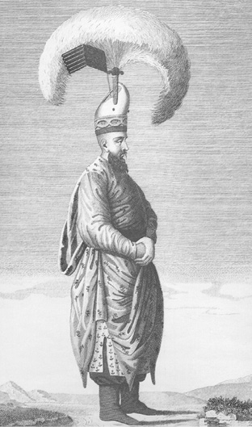
Solak, Comte de Choiseul - Gouffier
10. Solaklar
solak: Osmanlı kapıkulu teşkilatı bünyesinde yer alan ve görevi padişahın muhafızlığını yapmak olan koruma görevlisi. Yeniçeri Ocağı’nı teşkil eden 196 bölükten 60, 61, 62 ve 63. bölüklere verilen addır. Boylu bosluları padişahın hizmetinde bulunurlardı. Bunlara ‘hassa solakları’ denirdi (Pakalın, 1971: III, 254).
Solakların ortaya çıkışı:
Yeniçeri ve ‘solaklar’ın ilk ortaya çıkışı Murad Hüdavendigâr zamanındadır. Solaklar, börkler giyerler, tuğlar takınırlar, ok ve yayla hünkârın önünde yürürlerdi. (NT, 2008: 92, dipnot 1125)
Yıldırım Bayezid sadece kendi kapı kulları, yeniçeri ve solakları [ÂPT’de geçmiyor] ile kaldı. Solak Karaca derlerdi, Sultan Bayezid’in bir kulu vardı. O, “Hey Bayezid Han! O güvendiğin oğlanların seni böyle bırakıp beylik derdine düşüp kaçtılar. Ya o sancakların beyleri hani? Ne güzel yoldaşlık ettiler sana! Akçayı harcamaya kıyamazdın. Hazineye koyarak, oğlanlarımın rızkıdır derdin.” dedi.
Bayezid bu sözlere incinerek, “Yani bana sitem mi edersin?” dedi. Hemen atını tepip, kul arasından dışarı çıktı. Birkaç yaya oğlanı ve bir nice solaklar onunla birlikte çıktılar. Çağatay’ın alayını birbirine vurmaya başladılar. Öyle bir savaş ettiler ki, Çağatay ordusunun bozguna uğramasına az kalmıştı.
Bu olayların doğruluğu, o zaman Bayezid Han’ın solaklarından olan Bursa naibi Koca Naip’ten işitilmiştir. Yıldırım Bayezid yakalandığında onunla birlikte imiş ve Akşehir’de Allah’ın rahmetine kavuşuncaya kadar da onun yanında imiş. (ÂPT, 1949: 144-145; NT, 2008: 161-162)
Arap’ın latifelerinden bir latife de şudur: Meğer Yıldırım Han bir sahrada hayme [çadır] ile konmuş otururdu. Hayme önünde bir yüksek ağaç vardı. Yıldırım Han söyler: “Bire Arap! Beni seversen şu ağacın tepesine çık” dedi. Arap hemen o ağacın ta tepesine çıktı. Yıldırım Han’ın karşısında ‘solaklar’ nacaklarla dururlardı. Yıldırım Han söyler: “Her kim beni severse şu ağaca nacak vura yıka” dedi. Hemen ağaca nacaklar vurdular. Bu kez Arap gördü kendisi ininceye kadar bunlar ağacı yıkacaklar. Vezirlere çağırıp yalvardı. Beni kurtarın, yoksa ağaç devrilince helak olurum dedi. Gördü ki kimese ileri gelip cevap vermedi. Gördü ki ağacın yıkılmasına az kaldı. Hemen kendini topladı. Ağaç, kesenlerin üzerlerine doğru eğildi. Bunun üzerine ağacı kesenler korkup kaçtılar. Bunu fırsat bilen Arap çabucak ağaçtan indi. (AOK, 2000: 40)
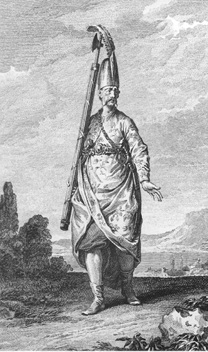
Baltacı, D’Ohsson
11. Baltacılar
Osmanlı devlet teşkilatında sarayların muhafız birliklerine verilen isim. Kaynaklarda ‘teber-dârân’ (teber: balta; teber-dârân ise baltacılar demek) olarak da geçer. Bu birliğe devşirmelerden seçilen kimseler alınırdı. Osmanlı kaynaklarında ilk kez Sultan II. Murad’ın 1434 yılındaki Karaman seferi dolayısıyla geçmektedir. Önceleri nakliye ve istihkâm sınıfı olarak görev yapmışlar, Fatih Sultan Mehmed devrinde ise saray muhafazasına alınmışlardır. Aşağıdaki metne göre baltacılar, istihkâm görevlisi (yol açmak, köprü kurmak gibi işlerle uğraşan teknik personel; bunlardan meydana istihkâm sınıfı) olarak yol açmışlardır.
Karamanoğlu bu kötü hareketi edince Sultan Murad asker topladı. Karamanoğlu İsa Bey’i, Kadı Burhaneddin oğlu Zeynelabidin’i yanına alıp Akşehir’e yürüyüp fethetti. Oradan Konya’ya gidip orayı da aldı. Sonra Beyşehir’e yürüyüp onu da fethetti. Karamanoğlu bunlara karşı koyamayacağını anlayıp kaçıp Taş’a girdi. Kısaca, Karamanoğlu’nun İçel’in dışındaki yerlerinin hepsi gelip Sultan Murad’a itaat ettiler.
Sultan Murad baltacılar gönderip Taş’a yol yapıp Karamanoğlu’nu ele geçirmek maksadını güttü. Bu maksatla varıp Bozkır’a çıktılar… Bu olaylar, 838 (1434) yılında meydana geldi. (ÂPT, 1949: 175; NT, 2008: 282-283)
12. Cerahor/Serahor
Osmanlılarda ordu hizmetlerinde kullanılan Hıristiyanlara verilen isim.
Bu taraftan [Yıldırım] Bayezid Han da, vezirleri ve beylerinin teklif ettikleri tedbirler üzerinde durdu. Kendi vilayetlerinden defterlerde yazılı orduyu çıkardıktan sonra başka vilayetlerden de asker getirtti. Hatta İstanbul’dan da asker çıkmıştı. İlden ve şehirlerden de serahor çıkarmışlardı. Rum vilayetinden ilk serahor çıkarmak Yıldırım Bayezid Han zamanında, Vezir Ali Paşa’nın tedbiri ile oldu. (NT, 2008: 159)
13. Silahtarlar
Osmanlı Devleti’nde padişah, sadrazam, vezir gibi devlet büyüklerinin silahlarına bakan ve koruyan kimse.
Bir gün silahdarlar paşaların üzerine çıkış yaparak, “Elbette padişahımızı [Çelebi Mehmed’i] görmek gerek. Niçin divana çıkmaz, hâli nedir, görelim.” dediler. Paşalar, “Hekimler, yine üzülür diye, çıkmaya bırakmazlar.” dediler. Ağalar da, “Elbette biz de padişahımızı girip görmek isteriz.” dediler. Hacı İvaz Paşa, “İlaç içti, bugün sabredin. Hünkârı ertesi gün divana çıkaralım. Siz de gelip padişahınızı görün.” dedi. (NT, 2008: 255-256)
14. Toycalar
Toyca/toyça, Osmanlı askerî teşkilatında hafif süvari birliklerinden biri olan akıncıların küçük rütbeli subaylarına denilirdi. Savaş olmadığı zamanlarda akıncıların ‘çeribaşı’sı, savaş zamanında ise akıncı ‘alaybeyi’si idi. Toyca kelimesinin aslı ‘tvitsa’ (tvica) olup Slavcadır. Kelime olarak bu dildeki anlamı kuş ise de terim olarak hafif süvari subayı anlamına gelir.
Yazılış biçimi bakımından birbirine çok yakın olan toycanın, kütüphane ve arşiv kaynaklarında farklı okunuş ve yazılış tarzları (toyca/toyça, tovıca/tavıca gibi) ortaya çıkmıştır. Toycanın Osmanlı kaynaklarında ilk geçtiği yer Fetret Devri olup, Oruç Bey şu bilgileri verir:
Musa Çelebi’ye Rumeli tovcaları haber gönderdiler. Musa Çelebi Zağra’ya geldi. Tovcalar karşu vardılar. Musa’yı doğru Edirne’ye getürdiler. Zira evvelden tovcalar bunu isterlerdi. Onun için ki babası Yıldırım Bayezid Han zamanında Musa Çelebi akıncıbaşı idi. Tovcalarla akına bile eşerdi. O sebepden hep tovcalar onun yanına geldiler. (OBT, 2008: 44)
Çelebi Mehmed devrinde vukuu bulan Şeyh Bedreddin İsyanı’nda toycalar Bedreddin’i desteklemişlerdir. Bedreddin’in Musa Çelebi’nin kazaskeri/kadı-asker iken görev verdiği pek çok kişi arasında toycalar da bulunuyordu. Toycaların kayda geçen ilk ciddî kayıpları II. Murad devrindedir. Uç beyi Mezid Bey’in 845 (1441/42) yılında Macaristan’a düzenlediği bir akında kendisi ile birlikte çok sayıda toyca şehit olmuştur.
Akıncıların çeribaşıları olan toycalar, onların sevklerinden birinci derecede sorumlu idiler. Toycalar akıncıların kaza merkezlerinde bulunurlardı. Kendilerine herhangi bir ülkeye sefer yapılacağı emri ulaştığında, çok hızlı bir şekilde akıncılara sefer haberini bildirirlerdi. Daha sonra emirleri altındaki akıncıları, tam donanımlı olarak, kendilerine gösterilen yerlere sevk ederlerdi. Aynı emir, akıncı ve toyca taifesinin bulunduğu yerlerin kadılarına ve akıncı beylerine de gönderilirdi. Kadılar, görev alanlarındaki akıncı ve toycaların donanımlı olarak sefere gitmelerine yardım etmekle yükümlüydüler. Sefer sevkiyatı sırasında toyca ve akıncıların herhangi bir yerde birkaç günden fazla kalmamalarına özen gösterilirdi.
Toycalar, genellikle Müslüman olanlardan seçilirdi. Akıncıların arasından akınları ve akın felsefesini bilen, yararlı hizmetlerde bulunmuş tecrübeli akıncılar toyca yapılırdı. İstenilen şartları taşımayanların yazılmalarını engellemek için toycalık kadrosu belli bir sayıda tutulmuş ve boşalması hâlinde hak edene verilmesi hükme bağlanmıştır. Toycalık kadroları genellikle toycaların ölümleri hâlinde boşalmaktaydı. Eğer ölen toycanın bu şartları taşıyan oğulları varsa onların toyca yapılmasına öncelik verilirdi. Toycaların tımarları göreve bağlı (arpalık) tımarlar idi. Toycalar vergilerden muaftılar.
Osmanlı devletinin kuruluş ve yükseliş devirlerinde özellikle Rumeli ve Balkanlarda gerçekleştirilen akın faaliyetlerinde ve seferlerde, akıncı teşkilâtı içinde yer alan ve önemli hizmetlerde bulunan toycaların, 16. yüzyılın sonlarına doğru eski önemlerini kaybetmeye başladıkları görülmektedir. (N. Öztürk, “Osmanlı Akıncı Teşkilâtında Toycalar”, Türklük Araştırmaları Dergisi, Prof. Dr. Mücteba İlgürel’e Armağan, İstanbul 2008, Sayı 19, 77-87)
15. Sipahi ve sipahi oğlanları
Osmanlı askerlik teşkilatında ‘tımar’ adıyla gelirlerini aldıkları araziye karşılık savaş zamanlarında hayvanları ve tam donanımlı (cebeli cevşenli yani zırhlı) savaşa katılan süvari askerine verilen addır. Bunlar akıncılık, çabulculuk ve karakol hizmetlerini yaptıkları gibi düşman karşısında piyadelerin korumasını da yaparlardı. Sipahilere verilen tımarlar bin akçadan yirmi bin akçaya kadardı. Sipahilerin seferde bulundurmak zorunda oldukları askerlerin teftişini beylerbeyi yapardı. (Pakalın, 1971: III, 230-234)
Osmanlı sipahileri
Yıldırım Han her tarafa mektuplar gönderip, leşkerler topladı. Anadolu ve Rumeli’den yirmi bin azap, beş bin yeniçeri, akıncıdan ve cerahordan, Eflak askerinden ve Laz ilinden Sırp askeri ve Lazoğlu [Sırp kralı] kendisi bile geldi. Kapı halkı, silahtar ve sipahi dışında toplanan asker sayısı yüz bin kadardı. Yıldırım, ordusunu hazırlayıp yürüdü. Şehzadeleri Emir Süleyman, Sultan Mehmed ve Mustafa Çelebi’yi yanına aldı. (OBT, 2008: 39)
Sultan [II.] Bayezid sefer niyetine bel bağlayıp ulu gazam vardır deyip, 5 Recep 897 Perşembe (03.05.1492 Perşembe) günü Edirne’den çıktı. Anadolu Beylerbeyisi Hersekoğlu Ahmed Bey ve Rumeli Beylerbeyisi Yahya Paşa askerleriyle, kapı halkı, sipahi oğlanları, silahtarlar ve ulufeciler, on bin yeniçeri ve on bin azap, vezirleri Davud Paşa, İbrahim Paşa, Hadım Ali Paşa ve İskender Paşa, büyük bir ordu ile Belgrad vilayetine deyip, büyük gazadır deyip Sofya’ya çıktılar. (OBT, 2008: 148)
Bizans sipahileri
Orhan Gazi kale kâfirlerinin bunaldığını bilip, İznik üzerine yürüdü. İznik’in tekfuru itimat ettiği bir adamını Orhan’a gönderip, “Eğer bizimle anlaşıp, bizi incitmezseniz, gidenimiz gitsin, duranımız dursun. Bu sözü kabul ederseniz kaleyi verelim.” dedi. Orhan Gazi de bu teklifi kabul etti. Tekfur, İznik Kalesi’nin İstanbul kapısından çıkarak halkı ile birlikte İstanbul’a gitti. Ama sipahisinin çoğu gitmeyip şehir halkı ile birlikte Orhan’ı karşılamaya çıktılar. Orhan’ı alıp kalenin Yenişehir kapısından şehre götürüp, kapının iç yanında Abakulus adlı bahçede ağırladılar. (NT, 2008: 75)
16. Sekbanbaşı
sekbanbaşı: Yeniçeri ocağının büyük subaylarından birine verilen addır.
Murad Hüdavendigâr Anadolu’da eğlenmeyerek, Rumeli’ye geçip Edirne’de oturdu. Rumeli’den asker toplanıncaya kadar orada kaldı. Timurtaşoğlu Yahşi Bey, Sarıca Paşa demekle tanınmış olan Rumeli’nin yayabaşısı Ulu Bey, Kara Mukbil, Pazarlı Doğan, Yayabaşı İncecik Balaban, Sekbanbaşı Müstecap, Papazoğlu Şahin, Kutluca, Lala Şahin ve Paşa Yiğit de askerlerini derleyerek, hepsi paşanın yanında toplandılar. Uç beyleri olan Yancı Bey ile Kutlu Boğa’ya da adam gönderilip, gelmeleri emrolundu. Sonuçta bunlar on sancak ve otuz bin kadar askerle Ali Paşa’nın yanında toplanıp, Sosmanoz’un iline yürüdüler. (NT, 2008: 112)
17. Rumeli Beylerbeyliğinin kuruluşu
Rumeli Beylerbeyliği Sultan I. Murad zamanında (1362-1389) kuruldu. İlk beylerbeyi, bu padişahın şehzadelik dönemindeki lalası Lala Şahin Paşa’dır. Anadolu Beylerbeyliği ise Yıldırım Bayezid devrinde kurulmuştur. Anadolu Beylerbeyi görevinde yükseldiğinde Rumeli Beylerbeyi olurdu.
Sultan Murad Gazi, bir süre Edirne’de oturdu. Lala Şahin Paşa’ya Rumeli Beylerbeyliğini verdi. Evrenos Gazi’ye ‘uç beyliği’ni verdi. O vakit Hacı İlbeyi vefat etmişti. Sonra Edirne’den Bursa’ya gitmeye niyet etti. Devletle Gelibolu’ya geldi. Burada, Hayreddin Paşa’yı kazaskerlikten azledip, kendisine vezir yaptı. Gelibolu’dan geçerek Biga tarafına geldi. Murad Gazi, “Hak Teala’nın yüksek kereminden, bu hisarı da bize vermesi ümit edilir.” dedi. Oradan Bursa’ya gelerek o kışı Bursa’da kışladı. Lala Şahin, o kış Zağra ve Eski’yi, Evrenos Gazi, Gümülcine’yi fethetti. (ÂPT, 1949: 128; NT, 2008: 92)
Gazi Murad Bursa’ya varıp oturdu. Lala Şahin’e Rumeli Beylerbeyliğini verdi. Çandarlı Halil’e paşalık verdi. Çandarlı Halil vezir olunca adını Hayreddin Paşa koydular. Gazi Murad o yıl gelip Gelibolu’da oturdu. Evrenos Bey’e ‘uç beyliği’ni verdi; Serez, Selanik ve Gümülcine onun ucuydu. Murad Gazi Gelibolu’dan Biga tarafına vardı. Oradan göçüp Bursa’ya geldi. Bir kış orada kışladı, oturdu. Lala Şahin Rumeli askeriyle varıp, Zağra’yı ve Zağra Eskisi’ni fethetti. Evrenos Bey de Gümülcine’yi fethetti. (OBT, 2008: 25)
18. Topun Osmanlılarda ilk kullanımı ve Topçu Haydar
15. yüzyıl Osmanlı kroniklerine göre top ilk kez Sultan I. Murad zamanında Kosova Savaşı’nda (1389) kullanılmıştır. Tarihçi Neşrî, I. Kosova Savaşı’nda Osmanlı ordusunun savaş düzeninden bahsederken, o zamanda topçulukta ve top atmakta en hünerli kişi (usta) olarak Topçu Haydar adında birini zikreder:
Kapı kulları, padişaha [I. Murad] canlarını feda kılmak için bölük bölük olup, önünde durdular. Topçu Haydar göğüse durdu ki, top atmakta gayet üstâd-ı kâmil idi [üstâd/üstat: bilim ve sanat alanında üstün bilgisi ve yeteneği olan. Burada, ‘top atmakta büyük hüner sahibi idi, benzeri yoktu, eşsizdi’ anlamında]. (NT, 2008: 132)
Gazi Murad, oğulları Yıldırım Bayezid’i ve Yakup Çelebi’yi alıp gitti. İki ordu birbirine karşı geldi. Murad Gazi, Bayezid’i sağ kolda, Yakup Çelebi’yi sol kolda koydu. Kendi orta göğüsde [merkezde] durdu. Azap, yeniçeri ve yaya ön saflarda yer aldı.
Lazoğlu [Sırp kralı] da ordusunu savaş düzenine soktu. O zamana değin top ve tüfek savaşı olmazdı. Ok, kılıç, süngü cengi olurdu. İki ordu birbirine karışıp büyük bir savaş oldu. Müslümanlardan ve kâfirlerden hayli asker kılıçtan geçti. Hak Teala’nın yardımı, Hz. Peygamber’in şefaati ve gazilerin itikadıyla kâfir ordusu yenildi. (OBT, 2008: 29)
19. Seferde ilk top dökümü
Osmanlı tarihinde seferde top dökümü, ilk kez II. Murad devrinde görülmektedir. Murad, Mora’ya yapacağı sefer için vezirlerine ve beylerine gereken hazırlığı yapmalarını buyurur; kendisi de bu sefere gider. Sonuçta Mora’nın en önemli kalelerinden biri olan Germehisar fethedilir ve Mora haraca bağlanır (1446). Bu seferdeki top dökümü ile ilgili kayıt şudur:
… Turhan Bey varınca II. Murad da ardından yetişti. Beş hisarın birbirine hâkim olduğunu gördü. Bunlardan hangisine yürüyüş ederlerse, kalan hisarlar ona yardım ederlerdi. Hünkârın kendisi tam on hisarlık hazırlık görüp varmıştı. Bunlar hisar üzerine yürüdüler, toplarını kurup dövmeye başladılar. Topların bakırlarını götürüp her sancağa dağıtmışlardı. Topları orada döktüler. Kısaca, kâfire her taraftan huzur vermeyerek kaleleri dövmekte kusur etmezlerdi. Kâfir o hisarların kenarlarına hendek kazdırmıştı. Hünkâr hemen hendeği doldurmalarını ve sonra da hisarları yağma etmelerini buyurdu. Hendeği doldurduktan sonra göz açıp kapayıncaya kadar fethettiler. Maldan, paradan ne varsa yağma ve talan ettiler.” (ÂPT, 1949: 181; NT, 2008: 289)
Seferde top dökümüne dair önemli bir bilgi de Fatih devrindeki İskenderiye seferinde (1479) geçmektedir. Bununla ilgili Kıvâmî’deki kayıt şöyledir:
Davud Paşa İskenderiye Kalesi’ni Rumeli Beyleriyle kuşatıp üzerine kondu. Ondan sonra toplar dökmek tedarikine başladı. Derhal topçulara emretti. Tophane bünyad ettiler [kurdular/yaptılar]. Hazırlık ne ise gördülar. Türlü türlü acayip ve garayip toplar dökmeye başladılar. (FSM, 1955, 253)
Neşrî, Yıldırım Bayezid zamanında topun Osmanlılarda yetersiz olduğunu söylemektedir:
Yıldırım Bayezid Han hemen İstanbul’un üzerine yürüdü. Gelibolu’dan da gemiler geldi. Denizden savaşa başlayıp kuşattılar. İstanbul’u almak için büyük gayret gösterdiler, ama o zaman şimdiki gibi [15. yüzyılın son çeyreği] top çok değildi. Bir nice zaman savaşıp, kâfiri açlıktan bunalttılar. (NT, 2008: 148)
Neşrî’nin bu sözünden, İstanbul’un sağlam surlarında gedik açacak, hatta surları yerle bir edecek güçte topun olmayışı anlaşılmaktadır.
20. Top arabaları
Osmanlı tarihinde ‘top arabaları’ ilk kez II. Murad zamanında Varna Savaşı öncesi ve Varna Savaşı’nda Yanko Kral’ın ordusu hakkında bilgi verilirken geçmektedir:
Bu taraftan Yanko Kral melun hücum edip askerler topladı. Ungurus [Macar], Çeyh [Çek], Nemçe [Avusturyalı], Latin, Alaman, Leyh [Leh], Sas, Bosna ve Eflak askeri anlaşıp toplandılar. Yanko elli altmış bin kadar asker topladı. Toplar, tüfekler üç dört yüz top arabaları ile çekildi. Kâfir askeri baştan aşağı demire gark olmuş olarak Belgrad ve Severin’den geçip Matara ve Şumlu vilayetini harap ettiler. Sonra Niğbolu üzerine yürüyüp, kuşatıp alamayıp geçip gittiler. Niğbolu sancak beyi Firuz Beyoğlu Mehmed Bey Niğbolu sancağı askeriyle ve hazır olan akıncılarla kâfir ordusunu arkadan bastı. Bir nice kâfirleri kırıp helâk etti. Zırhlı kâfirleri tutup Sultan Mehmed’e gönderdi. (OBT, 2008: 65)
Yanko melun top arabalarını çektirip, arabalarını önüne hisar edip, atlısı ve yayası ardında durup, toplarını, tüfeklerini ve zenbereklerini yağmur gibi yağdırdı. Yanko lain arabanın iki tarafından alaylarını düzene soktu. Baştan aşağı zırha bürünmüş olan kâfirler araba ardından çıkıp Sultan Murad ordusunun sağ kolunu bozguna uğrattı. (OBT, 2008: 72)
Sultan Murad, oğlu Sultan Mehmed’i kendi alayına getirdi. Sultan Murad arabaları öne tutup, topları, tüfekleri, şişli kalkanları önüne dizdi. Yeniçeri ve azapler önde durup, önünü ardını bağlayıp kale gibi sağlamlaştırdılar. Demirden kale gibi durup kâfirlerin toplarına karşı göğüs gerdiler. (OBT, 2008: 74)
Yanko lain bu hâli görüp askerine istimâlet verip ben Türk’ün ardını almaya gidiyorum diyerek askerini gafil kıldı [kandırdı/aldattı]. Yanko bir tarafa sökün edip kaçıp gitti. Gaziler Yanko’un kaçtığını bildiler. Yanko’nun malını, hazinesini ve arabalarını gördüler. Üzerine üşüp hayli ‘araba cengi’ oldu. Arabada öyle bir cenk oldu ki toplar, tüfekler, zenberekler atılıp büyük bir savaş oldu; sanki kıyametten bir gündü. (OBT, 2008: 74-75)
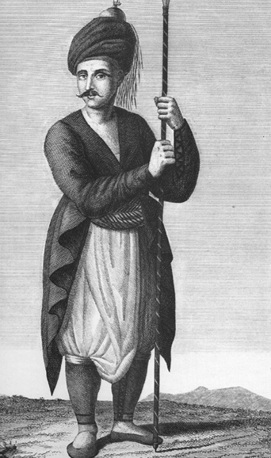
Asker, D’ohsson
21. Yaya teşkilatının kuruluşu
Yaya: Osmanlı Devleti’nin kuruluş yıllarında Orhan Gazi zamanında Türklerden teşkil edilen maaşlı/ulufeli ‘yaya’ askerine verilen addır.
Orhan Gazi, askerinin artmasını, ama o askerin de kendi vilayetinden olmasını diledi. Bu işi kardeşi Alaaddin Paşa’ya danıştı. Kardeşi, “Bunu kadıya danışmak gerek.” dedi.
Çandarlı Hayreddin Paşa o zaman Bilecik kadısı idi. Ona kadılığı Osman vermişti. Orhan, sonra onu İznik’e kadı yaptı, daha sonra Bursa’ya kadı oldu. Orhan’dan sonra Murad Gazi onu kazasker edindi. Sonra vezir ve beylerbeyi oldu. Bu paşa, Edebalı’nın da akrabası idi. Ona danıştılar. Hayreddin Paşa Orhan’a, “Sultanım! Ülkeden yaya yazıp çıkaralım.” dedi. Bu haber işitilip yayılınca, “Padişah hizmetinde olalım.” diye yaya yazılmaya o derece rağbet gösterdiler ki, deme gitsin.
Yaya yazılmasına başlanınca, çok kişi kadıya rüşvet verdiler, “beni yazdır” diye yalvardılar. O zaman yaya askeri olmaya hayli rağbet vardı. Çünkü padişahın has adamı olurlar, ak börk giyip yürürlerdi. Hatta yaya yazma tamam olduktan sonra gelenler yalvararak, “Hiç olmazsa bizi ‘yamak’ [aday/yedek] yazın. Sefere bir yıl onlar, bir yıl da biz gidelim.” dediler. (ÂPT, 1949: 117-118; NT, 2008: 73-74)
22. Yayabaşı
Yaya denilen piyade askerinin başında bulunan kişinin görev unvanıdır. Yaya teşkilatında bunlar ‘yaya ocağı’ olarak örgütlenmişlerdir. Yaya ocağı altı yedi kişiden meydana gelir ve başlarında bulunan ‘yayabaşı’ denilirdi. Yayaların bundan daha büyük subayı ‘Yaya sancak beyi’ idi. [Pakalın, 1971: III, 611].
Timurtaşoğlu Yahşi Bey, Sarıca Paşa demekle tanınmış olan Rumeli’nin yayabaşısı Ulu Bey, Kara Mukbil, Pazarlı Doğan, Yayabaşı İncecik Balaban, Sekbanbaşı Müstecap, Papazoğlu Şahin, Kutluca, Lala Şahin ve Paşa Yiğit de askerlerini derleyerek, hepsi paşanın yanında toplandılar. Uç beyleri olan Yancı Bey ile Kutlu Boğa’ya da adam gönderilip, gelmeleri emrolundu. (NT, 2008: 112)
Sultan Murad Anadolu’yu bu beş beye emanet ederek, “Ülke sahipsiz olmasın, haramzadeler fesat çıkarmasın.” dedi. Yayabaşı İlyas Bey’i de Anadolu’da bıraktı. (NT, 2008: 114)
23. Yeniçeri Ocağı’nın kuruluşu
Yeniçeri Ocağı’nın kuruluşu için yukarıda bk. I. Bölüm, C. Hukuk/Kanunlar
24. Yeniçerilerin ‘ilk sefer bahşişi’ talepleri
Osmanlı tarihinde yeniçerilerin ‘sefer bahşişi” istemeleri ilk kez II. Mehmed’in Karaman seferi dönüşündedir. Bu seferin diğer bir özelliği de padişah olarak Sultan Mehmed’in askerî kariyerinde ilk sefer tecrübesi olmasıdır.
[Karaman] seferi dönüşünde yeniçeriler saf tutarak padişaha karşı durup bahşiş istediler. Padişah, yeniçerilerin bu hareketlerine incindi, fakat açığa vurmadı. Turhan Bey ve Hadım Şehabeddin Paşa padişaha, yeniçerilerin bir şeyler istediklerini bildirdiler. Padişah da on kese akça verilmesini emretti. Birkaç gün sonra, bu olayın sorumlusu olarak gördüğü yeniçeri ağası Kazancı Doğan’ı huzuruna getirtti. Güzelce dayak attırıp azletti. Yeniçeri ağalığını Mustafa Bey’e verdi. Padişah yayabaşılarına da aynı şekilde dayak attırdı. (NT, 2008: 308-309)
25. Kapı halkı
kapu halkı: 15. yüzyılı Osmanlı tarihi kaynaklarında geçen bu terimin iki anlamı vardır: 1. Veziriazam/sadrazam, vezir, eyalet valileri, beylerbeyi, sancak beyi gibi üst düzey devlet görevlilerinin hizmetinde bulunanlar, 2. Padişah ve şehzadelerin hizmetinde bulunan kapıkulu askerleri.
[Germiyan Beyi’nin kızını Yıldırım Bayezid’e almak için] gelin almaya gidenler: Bursa kadısı Koca Efendi, kapı kullarından Emirialem Aksunkur Ağa, ki evladından şimdi de vardır, Çavuşbaşı Süle Çavuş oğlu Timur Bey ve kapı halkından bin yarar sipahi gönderildi. Hatunlardan da, Koca Efendi’nin hatunu, Bayezid Han’ın dadısı Dadı Hatun, Aksunkur’un hatunu ve bunların emsali bir nice yüz hatun daha vardı. (ÂPT, 1949: 131; NT, 2008: 96)
[Kosova Savaşı’nda] kapı kulları [Osmanlı askerî teşkilatında maaşlı, sürekli görev yapan atlı ve yaya birlikler] hünkâra canlarını feda kılmak için bölük bölük olup, önünde durdular. Büyük oğlu Şehzade Bayezid de alay bağlayıp, sağ kola durdu. Küçük oğlu Yakup Çelebi sol kola durdu. Gazi Evrenoz sağa, Eyne Bey Subaşı sola cenah oldu. (NT, 2008: 132)
Yıldırım Han her tarafa mektuplar gönderip, leşkerler topladı. Anadolu ve Rumeli’den yirmi bin azap, beş bin yeniçeri, akıncıdan ve cerahordan, Eflak askerinden ve Laz ilinden Sırp askeri ve Lazoğlu [Sırp kralı] kendisi bile geldi. Kapı halkı [kapıkulu askerleri], silahtar ve sipahi dışında toplanan asker sayısı yüz bin kadardı. Yıldırım, ordusunu hazırlayıp yürüdü. Şehzadeleri Emir Süleyman, Sultan Mehmed ve Mustafa Çelebi’yi yanına aldı. (OBT, 2008: 39)
Bayezid Han sadece kendi kapı halkı, yeniçeri ve solaklar ile kaldı. Solak Karaca derlerdi, Sultan Bayezid’in bir kulu vardı. O, “Hey Bayezid Han! Güvendiğin oğlanların seni böyle bırakıp beylik derdine düşüp kaçtılar. Ya o sancak beylerin hani?” dedi. (ÂPT, 1949: 144; NT, 2008: 161)
Yıldırım Bayezid kendi alayıyla, yeniçeri ve kapı halkıyla birlikte yalnız kaldı. Sonunda gördüler hâl böyle oldu. Onlar da çaresiz olup Timur’a tâbi oldular. Sonra Yıldırım Han’ı tutup esir edip Timur Han’a ilettiler. (OBT, 2008: 40)
[Ankara Savaşı’ndan sonra] Musa Çelebi gelip Bursa’da oturdu. Emir Süleyman bunu işitti. Ardından yeniçeri, kapu halkı [kapıkulu askerleri] ve Rumeli askeriyle Anadolu’ya geçip Bursa’ya vardı. (OBT, 2008: 43)
Musa Çelebi’nin beyleri Sultan Mehmed tarafına geçince kendisi yedi bin kapıkulu ile yavaş yavaş Sultan Mehmed’den yana yürüdü. Sultan Mehmed’e, “İşte kardeşin üzerine yürüyor, gafil olma.” diye haber yetişti. (NT, 2008: 238-239)
Sultan Murad Edirne’de Yeni Cami yapıp, kendi eliyle Cuma günü binasını urup [temelini atıp], Ungurus vilayetine kasdetti… Ve bu yılda Ergene Köprüsü’nün temeli de atıldı, 841 (1437/38 yılında). (Yıllıklar, 1980/81: 88-89)
Sultan Murad Han Edirne’de Yeni Cami’yi yapmaya başladı. Cuma günü Edirne’den çıkıp Ungurus [Macar/Macaristan] vilayetine sefer etti. Eflak ili beyi Drakula kılavuz oldu. Sultan Murad Karaman’dan ve Kastamonu’dan asker aldı. Anadolu ve Rumeli askerleri, Anadolu ve Rumeli’nin azapları, yeniçeri, kapı halkı [kapıkulu askeri], garip yiğitler, uç beyleri İshak Bey, Turhan Bey ve Evrenos Beyoğlu Ali Bey, gazi beyler gaza kanıyla elini yüzünü yıkayanlar, otuz kırk bin miktarı akıncıyla sefer çıktılar. (OBT, 2008: 60)
Sultan Murad Han Edirne’de oturmuşken, bu taraftan Karamanoğlu İbrahim Bey harekete geçip, Anadolu vilayetini karıştırdı. Karamanoğlu İbrahim Bey yürüdü diye Sultan Murad Han’a haber geldi. Sultan Murad, Rumeli askerini yerinde bırakıp, kendi kapı halkı ile Anadolu’ya geçti. Anadolu askeri ve Amasya askeri ile oğlu Sultan Alaaddin de Amasya’dan geldi. İki ordu birleşip Karamanoğlu üzerine yürüdü. (OBT, 2008: 63)
G. DONANMA
15. yüzyılın sonlarında Osmanlı deniz gücü
Osmanlı Devleti’nin Orhan Gazi devrinden itibaren kara kuvvetlerini güçlendirmek için askerî yapılanmaya gittiğini, bunun daha sonraki dönemlerde yeni sınıfların ilavesi ve teşkilat düzenlemeleriyle devam ettiğini biliyoruz. 14-15. yüzyıllarda eğitimli, disiplinli ve donanım bakımından çağın şartlarına ve ihtiyaçlarına cevap verebilecek düzeyde olan Osmanlı kara ordusu, Anadolu ve Rumeli’de önemli başarılar gösterdi. En parlak başarısı ise İstanbul’un fethinde görüldü. İlk iki asra göre kara ve deniz güçlerinin fetihlerde ortaya koydukları performanslarını kıyasladığımızda, bağımsız olarak deniz gücünün, elde edilen başarılarda, daha az katkısının olduğunu görürüz.
15. yüzyılın Venedik, Ceneviz gibi denizci devletleriyle açık denizlerde rekabet edilebilmesi için çağın ihtiyaçlarına göre yapılanmış güçlü bir donanmanın hizmete sokulması kaçınılmazdı. Güçlü bir donanmadan kastedilen, kuşkusuz, hareket kabiliyeti yüksek, personel ve teknik donanımı üstün olan bir donanmadır. Böyle bir donanmanın kurulması kadar, bu donanmanın özellikle komuta kademesinde görev yapacak profesyonel gemi personelinin yetiştirilmesi de önemliydi. Osmanlılarda bu ihtiyacı gören ve bununla ilgili çalışmaları başlatan ilk padişahın Sultan II. Bayezid’in olduğunu dönemin kaynaklarından öğreniyoruz.
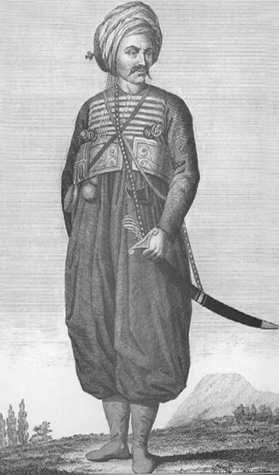
Levent, D’Ohsson
II. Bayezid’in düşüncesine göre Osmanlı donanmasını yeni baştan organize etmenin zamanı gelmişti. Bunun için önce iyi bir personel politikası izledi. Çağdaş tarihçi Oruç Bey, Sultan II. Bayezid’in Kemal Reis’i 1495’te devlet hizmetine aldığını yazar; denizcilikteki hünerleri ve başarılarından övgüyle söz eder. Korsanlık devresinde yetişmiş, Türk denizcilik tarihinin en büyük isimlerinden biri olan ve Osmanlı donanmasına on yedi yıl hizmeti geçen Kemal Reis’in devlet hizmetine girmesi (1495) ile Osmanlı donanmasında ‘kaptanlar çağı’ açılmış oluyordu. Kemal Reis ile birlikte gerek gemi inşa tekniğinde gerekse denizci yetiştirmede Osmanlı donanmasında ıslahat dönemi başladı. Onun, Osmanlı donanmasına getirdiği en büyük yenilik, gemilerin uzun menzilli toplar ile donatılması oldu. Gerçekten daha önceki devirlerde denizcilikte Kemal Reis ile mukayese edilebilecek bir isim yoktur. Bilindiği gibi müteakip yüzyılda II. Bayezid’in torunu Kanuni de aynı yolu izleyerek, Batılıların Akdeniz’de korkulu rüyası hâline gelen ünlü denizci Barbaros Hayreddin Paşa’yı donanmanın başına getirmişti. Bu anlamda II. Bayezid’in, ülkenin ve kurumların gelişmesinin ve ileri gitmesinin temel kaynağının insan unsuru olduğunu kavrayarak, işin ehlini bulup görevlendirmede oldukça titiz davrandığı söylenebilir.
II. Murad devrinde haraca bağlanan (1446), Fatih döneminde kuzey kısmı fethedilen (1459) Mora’nın tamamının fethi II. Bayezid devrinde gerçekleşti. Bayezid önce Mora’nın anahtarı durumunda olan İnebahtı’yı fethetti (Ağustos 1499). Sıra Mora’nın en önemli ve en sağlam kalelerinden olan Moton ve Koron’un fethine gelmişti. Bu kalelerin fethini bütün ayrıntıları ile yazan çağdaş tarihçi Oruç Bey’den takip edebiliriz:
II. Bayezid’in Edirne’den Mora’ya hareketi
Sultan Bayezid, Allah yolunda cihad deyip, gaza niyetine kılıç kuşandı. 8 Ramazan 905 Pazartesi/27 Nisan 1500 Pazartesi günü vezirleri Mesih Paşa ve Hersekoğlu Ahmed Paşa’yla Edirne’den çıkıp Mora’ya hareket etti.
Ordu ve donanma mevcudu
Moton Kalesi’nin fethi için Anadolu’dan on bin azap, yirmi bin kürekçi Rumeli’den sekiz bin azap, on iki bin kürekçi, toplam on sekiz bin azap ve otuz iki bin kürekçi. Ayrıca sekiz bin yeniçeriden başka kapı halkından, silahtarlardan, sipahi oğlanlarından, ulufecilerden, sarbanlardan [devecilerden], mehterlerden, seyislerden, harbendelerden [Osmanlı sarayında, has ahırlardaki katırların bakımından sorumlu olan katırcı], sancak beylerinden, tımar erlerinden ve akıncılardan kırk elli bin olmak üzere doksan binin üzerinde asker toplandı.
Üç yüzden ziyade gemi hazırdı. Kökeler, mavnalar, barçalar, kadırgalar, kaliteler ve kayıklar deniz yüzünü kapladı. Denizden gemiler, karadan padişah Moton Kalesi’nin üzerine yürüdüler. Allahu ekber sesiyle âlemi doldurdular.
Veziriazam Yakup Paşa üç yüz gemiye baş/kaptan tayin edildi. Sözünü ettiğimiz kürekçiler, azaplar, yeniçeriler, kapı halkı ve Anadolu askeri, Tire sancağı beyi Mustafa Bey ve Anadolu azaplar ağası Karagöz Bey ve gemilerdeki elli binden ziyade asker gemilere girip, deniz yüzünü tekbir avazıyla doldurdular. Gemilerin reisler başı ve dilaverleri, denizlerin kurdu ve korsanı Kemal Reis ile anlaşıp, deniz yüzünü tutup, düşman gemilerini çevresine baktırmayıp yürütmez oldular.
Bu taraftan Anadolu Beylerbeyisi Arnavut Sinan Bey ile Rumeli Beylerbeyisi Mustafa Paşa, İnebahtı Hisarı’nda geçen yıldan kalan ulu topları Rumeli azabıyla çektirip Moton Kalesi üzerine getirdiler. Kaleyi karadan ve denizden toplarla dövdüler. Bir kimse şöyle rivayet etti: Bir kişi hisara atılan topları saymış, iki bin sekiz yüz tane top atılmış, ancak hisara çok etki etmemiş. Sarp ve sağlam olan Moton Kalesi’nin duvarının kalınlığını elli üç ‘ayak’ [ayak, yaklaşık 30-32 cm; buna göre kale duvarının kalınlığı yaklaşık 16 m] saydıklarını; hendeğin eninin on beş ‘kulaç’ [kulaç, yaklaşık 170 cm; buna göre hendeğin eni 25,5 m], derinliğinin ise on iki kulaç [20,4 m] olduğunu söylediler. Bu bilgileri ölçenler verdiler. Kalenin yapıldığı tarihi bulup, 1112 yılında inşa edildiğini okumuşlar.
Moton Kalesi’nin adı ve özellikleri
Halifeler zamanında mağrip tarafından Mağrip [kuzeybatı Afrika bölgesi] padişahı Moton Kalesi’ni fethetmek için gemilerle gelmiş. Çok savaşıp alamayınca “hâzâ kal’a-i Metîn” [bu sağlam kale] demiş. Arapça ‘metîn’ demek ‘muhkem’ [sağlam/berk] demek olur. ‘Kal’a-i Metîn’ [sağlam kale] diye ad koymuş. Sonradan galat olarak Frenkler ona ‘Moton’ demişler. Sağlam ve sarp bir kaledir. İçi dışı silah ve adam doludur. Mal ve hazine ise nihayetsiz. 1112 yıldan beri kimse onu fethedememiş derler.
Şimdi ey azizler [okurlar]! Kostantin/İstanbul, Ağrıboz, Midilli ve daha nice iller ve memleketler Sultan Mehmed’e [Fatih] nasip oldu. Allahu Teala Kili, İnebahtı, Moton ve Koron kalelerini de Sultan Bayezid Han’a nasip etti. Anabolu [Mora Yenişehri, Anabolu/Anapoli/Anapolu] Kalesi’ni de Allah vere.
Raviler şöyle rivayet ederler ki, Motun Kalesi Allah tarafından Lut Peygamber zamanındaki gibi bir zelzele olursa ancak o zaman yıkılır, yoksa savaşla alınacak kale değildir derler. Allah’ın lutfu ve keremi, Hz. Peygamber’in mucizesi, erenlerin himmeti ve Sultan Bayezid’in gayreti ile kale kolaylıkla alındı. Hakk’ın lutfu ve keremi ile nasip oldu. İsevîlerin başı daima aşağıya olsun, gazilerin, Muhammed ümmetinin kılıcı üstün olsun, inşâ-Allah.
Kuşatılması
Ey azizler! Askerimiz Moton Kalesi’ni kırk beş gün kuşattılar. 905 yılı Zilhicce ayının sonuna dek Moton Kalesi’ni dövdüler. Kâfirlerin derya yüzünde on yedi adet mavna ve barçası, yirmi üç kökesi ve yirmi kadırgası, toplam altmış adet gemileri vardı derler. Gemilerin hepsi silah, top, tüfek, zenberek [zenberek/zenbûrek: çelik veya pirinçten yapılmış ok] ve insanla doludur. Meğer Arnavut ve kan dökücü Frenk, hisara yardım etmek için gelmişler.
Gaziler bu durumu öğrenince Anadolu azabıyla ve kapı halkıyla gemilere girmişlerdi. Gaziler serveri Veziriazam Yakup Paşa, Tire sancağı beyi Mustafa Bey ve Anadolu azaplar ağası Karagöz Bey yüz elli adet gemiyle düşmanın üzerine yürüdüler. Gemilerimiz deniz yüzünde anka gibi uçup, anka havadan avına iner gibi yürüdüler. Anka avına iner gibi yahut zenbur [eşek arısı] bala çokuşur gibi veya karınca darı tanesine çokuşur gibi her taraftan yürüdüler. Öyle ki deniz yüzünü düşmanın gözlerine dar ettiler.
İki taraftan deniz ejderhaları gürleyip, yağmur gibi toplar, tüfekler, zenberekler atılıp, deniz yüzü top sesinden gök gürültüsü gibi gürleyip, duman gibi olup, gaziler toplara, tüfeklere, zenbereklere kalkan gibi göğüs gerip, göz yumup, düşman üzerine yürüyüp savaştılar. Sam yeli gibi esip, yağmur gibi toplar, tüfekler, oklar atılıp, gökten yıldırım iner gibi inip, eceli gelen şehit olup, eceli gelmeyenler gazi olup, bu şekilde büyük bir savaş yaptılar ki, anlatılamaz.
Nihayet fırsat gazilerin olup kâfirlerin iki kökesini denize batırdılar. İçindekiler helak oldular. Sağ kalan kâfirler bu durumu öğrenince kaçıp gittiler, her birisi bir tarafa dağıldılar. Yakup Paşa o iki kökenin adamlarından yüz altmış üç başı ve yüz seksen diri kâfiri sancaklarla padişaha gönderdi.
II. Bayezid’in, savaşı tepeden seyretmesi
906 Muharrem/1500 Ağustos ayı girdi. İslam padişahı Sultan Bayezid, Moton Kalesi’nin üzerine vardı. Kalenin karşısında yüksek bir tepenin üzerinde durup temaşa etti. Bu sırada 13 Muharrem 906 Pazar/9 Ağustos 1500 Pazar günü aniden denizden içi adam dolu beş büyük mavna ve barça geldi. Niyetleri hisara girip yardım etmekti. Gemilerdeki Frenk savaşçıları iki binden çoktu. Gemilerin içi silah ve azık dolu idi. Hisara adam/asker koymak için yaklaştıklarında önce yelkenlerini indirir gibi yaptılar; sonra yelkenlerini kaldırıp doğru hisar üzerine yürüdüler. Pusudaki gaziler düşmanın hile yapacağını düşünmediklerinden gafil avlandılar. Sancak beyi Şamlıoğlu ile Yular-kısdı lakaplı azaplar ağası Karagöz Bey düşmanın hile ettiğini duyunca, tedbir alarak pusudan çıkıp düşmanın üzerine yürüdüler.
Padişah bu olup bitenleri haber alınca öfkelendi. Gemilerdeki beylere “hemen yürüyün” diye emretti. Beyler padişahın öfkelendiğini anlayıp yürüdüler. Tedbirli davranıp, düşman gemileri üzerine önce ufak kayıklar saldılar. Küçük olduğundan kayıklara top isabet etmezmiş, aşıp gidermiş. Kayıklar kâfir gemilerinin çevresini sarıp, salkım saçak oldular. Sanki meşelikte domuz sarar gibi her taraftan sarıp, sonra büyük gemiler de eriştiler. Tire sancağı beyi Mustafa Bey ve Gelibolu kaptanı Davud Bey de göz açtırmayıp yürüdüler.
Ebâbil kuşu [dağ kırlangıcı] Ebrehe [Kâbe’yi yıkmak isteyen Yemen valisi] askerinin üzerine taş yağdırır gibi bunlar da top, tüfek, zenberek yağdırıp, kaza yağmuru gibi Şam yapımı yaylardan oklar atılıp, göz açtırmayıp, kene gibi yapışıp, yılan gibi dolaştılar. Büyük bir savaş oldu. İki taraftan hayli insan helak oldu. Deniz erenleri, deniz gazileri hep bir ağızdan dua edip, tekbir avazıyla derya yüzünde kâfirlerin kulaklarını sağır, gözlerini kör ettiler. Kâfirler gördüler ki, hâlleri bir türlü oldu. Can pazarıdır. Canları acısından hisar tarafına kenara döküldüler. Beş gemiden birisi o hâli görüp ıraktan kaçıp gitti. Ve bir gemisini de topla vurup batırdılar. Üç gemiyi kaçırıp hisar kenarına çıktılar. Gaziler o gemileri görüp varıp cenk ettiler. Hakk’ın kudreti bir türlü yol gösterdi. Hakk’ın inayeti oldu.
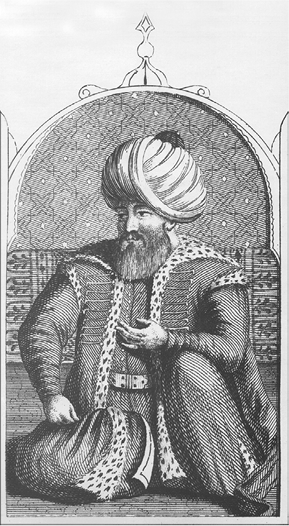
II. Bayezid’in temsili bir gravürü, Demetrius Cantemir
Moton Hisarı’ndaki kâfirlerin durumuna gelince: Hisar kâfirleri gördüler ki, yardıma gelen gemileri Türk yendi. Kalenin kara tarafındaki kâfirler yardım etmek için hisardan dışarı çıktılar. Deniz kenarına geldiler. Onların itikatları bu idi ki, asla bu kaleyi Türk alamaz. Çünkü keşişleri, patrikleri ve ruhbanları, “korkmayın bu kaleyi kimse alamaz” derlerdi. Süleyman Peygamber devler ile hava yüzünden inip alır veyahut Lut Peygamber yıldırımı gibi bir yıldırım olur veyahut bir zelzele olur, işte ancak o zaman yıkılır derlerdi. Kalemiz sağlamdır, hem içinde çok silah vardır derlerdi. Kendilerine ve hisarlarına mağrur olup Hak Teala’yı hiç anmazlardı.
Gaziler, Allah’ın ilhamıyla hisarın bir tarafının boş kaldığını gördüler. Allah’a sığınıp, Hz. Muhammed’in mucizesi deyip tekbir getirip, Anadolu Beylerbeyisi Sinan Bey, Anadolu askeriyle ve hazır olan gazilerle yürüdü. Allah Allah deyip hep bir ağızdan dua ettiler. Beylerbeyi Sinan Bey ki, padişah başı için Allah yoluna ve Hz. Muhammed aşkına yağma diye nida ettirdi. Münadiler her taraftan çağırdılar. İslam askeri yağma haberini işitip yürüdüler. Bahadır ve dilaver biri olan Rumeli azaplar ağası Kürt Kemal de kendi azapları ile yürüdü.
Diğer taraftan yeniçeriye de haber verildi. Aslanlar, yiğitler, mert gaziler, canını başını esirgemeyenler hep birlikte yürüdüler. Dua edip Allahu ekber avazıyla âlemi doldurdular. İslam padişahı Sultan Bayezid Han haber gönderip, emredip buyurdu ki, “Allah yolunda yağma” dedi. Gaziler padişahtan bu haberi işitince kapı halkına da haber verilip hep beraber yürüdüler.
Padişah yüksek bir yerde durup, kaleye yapılacak hücumu temaşa ederdi. 13 Muharrem 906 Pazar/9 Ağustos 1500 Pazar günü Müşteri ve Merih gezegenlerinin uğurlu saatinde hisara yürüdüler. Kalenin etrafındaki iki kat hendeğin derinliğini ve kalınlığını daha önce söylemiştik. Gaziler her birisi bir türlü görüş ile tedbir edip, o hendekten geçip hisar üzerine vardılar. Gaziler hisara tırmanıp kene gibi yapışıp, karınca gibi çokuşup, yılan gibi dolaşıp, sakırga gibi tırmanıp hisar üzerine çıktılar. Hisar üzerinden inip şehrin içine girdiler. Eşek arısı bala çokuşur gibi çokuştular. Şehirden çıkan kâfirleri ve hisar erlerini kılıçtan geçirdiler. Kurtulanı da sonra padişah kılıçtan geçirdi. O seferde padişah defteriyle yedi bin iki yüz kâfir kılıçtan geçti derler.
Gazilerimiz hisarın arısını söndürüp sonra balına el uzattılar. Kâfirlerin azgınları Türk’e yâr olmasın diye şehrin/kalenin bir tarafına güherçile saçıp, şehri ateşe verip yaktılar. Bazı kâfirler, oğlunu ve kızını, masum çocukları ve avratlarını kendi elleriyle kılıçtan geçirdiler. Gaziler yağma ederken akşam erişip karanlık oldu. Yoksa şehrin hâli öyle olmasa mala, rızka kim bakardı ve esire kim sarkardı. Akşam olduğundan şehirde Türk’ten kaçıp evleri içinde bir köşede gizlenenler yanıp helak oldular. Hem bunca halk yandı. Öyle ki, rızk nasibi ancak o kadardı.
Gazilerimiz yangından kurtulan malı, rızkı, esiri, akçayı, floriyi yağma ettiler. Esirlerden, oğlandan ve avrattan, Frenk güzelleri altınlı elbiseleriyle, altına gark olmuş putlarıyla, evleri içinde tuttular. Gazilerimiz mal ve ganimetle zengin oldular. Padişahımız devletinde daima kâfirlerin başı aşağı olsun, Hak Teala İslam dinine kuvvet versin. Din Muhammed dinidir, mucizeler Muhammed’indir.
Koron Kalesi’nin fethi
Moton Kalesi alındıktan sonra gaziler Koron Hisarı üzerine yürüdüler. Bu kalenin halkı Moton Kalesi halkının başına gelenleri işitmişlerdi. Hem krallarından hem de yardıma gelen gemilerden kendilerine fayda olmadığını gördüler. Kendi başlarına neler geleceğini anlamışlardı. Padişaha haber gönderip, güzellikle yani savaşsız hisarı verdiler. Böylece güvenlik içinde oldular.
II. Bayezid, Koron Hisarı’nı görmeye gittiğinde kale halkı padişahı karşılamaya çıkıp, izzet ve hürmet gösterdiler. Padişahın atının ayağı altına altın sırmalı bezler, kadifeler, atlaslar, ıskarlat çukalar [kırmızı boyalı eski Venedik çuhası], kemhalar [ipek kumaşlar], Frenk yapımı bezler döşediler. Padişah da onları hoş görüp, iyi davrandı. Bir çöplerini dahi almayıp, onları yine yerli yerinde bıraktı. Ondan sonra dört hisarı daha fethettiler. Böylece ellerinde altı hisar oldu. Anabolu Hisarı üzerine asker koydular. İnşâ-Allah onu da verir.
Donanmanın İstanbul’a dönüşü
Üç yüz kadar gemi geçen senden beri İnebahtı limanında ve diğer limanlarda bulunuyordu. Gelibolu kaptanı Davud Paşa ve Kemal Reis, Moton ve Koron kaleleri hizmetini yerine getirip, 9 Safer 906 Cuma/4 Eylül 1500 Cuma günü Moton ve Koron’dan ayrılıp, 22 Safer 906 Perşembe/17 Eylül 1500 Perşembe günü Gelibolu’ya gelip, aynı gün İstanbul’a ulaştılar.
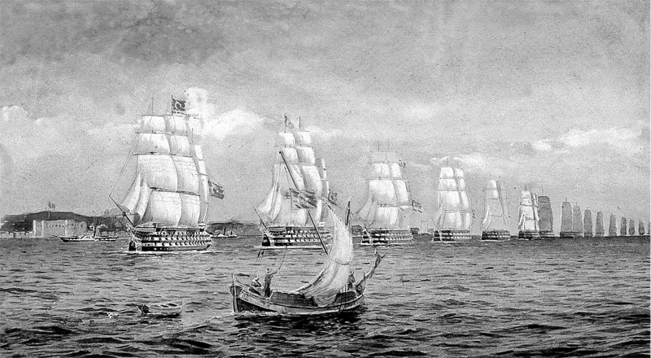
“Donanmanın İstanbul’a Dönüşü” tablosu, Hüsnü Tengüz
II. Bayezid’in Edirne’ye dönüşü
Sultan Bayezid, Moton ve Koron Kalesi üzerinden ayrılıp, 27 Rebiülevvel 906 Çarşamba/21 Ekim 1500 Çarşamba günü tan yeri ağarırken, Edirne’ye gelip Yeni Saray’a yerleşti. (OT: 2008: 189-204)
Sonuç olarak, Sultan II. Bayezid’in gündemine aldığı konuların başında donanmanın, çağın ihtiyaçlarına göre yeniden organize edilmesi geliyordu. Onun yakın ilgi ve desteği sayesinde iki yıl içerisinde yeni bir donanma hazırlandı. Bu donanma 1499, 1500 yıllarında, Akdeniz’in stratejik ve ticarî önemi olan İnebahtı, Moton, Koron ve Navarin’i alarak iki yılda Mora’nın fethini tamamladı. Osmanlı kara ve deniz gücünün koordineli olarak geniş çaplı işbirliğinin, ilk kez Moton Kalesi’nin fethinde gerçekleştiği söylenebilir.
Söz konusu kale ve limanların Osmanlılar tarafından fethedilmesi, Venediklileri hatta Batılıları büyük bir endişeye sevk etti. Onlar, kaybettikleri prestijlerini yeniden kazanmak için müşterek bir donanma ile Midilli’yi almaya kalkıştılar ise de (1500 sonbaharı), bu teşebbüsleri sonuçsuz kaldı. Batılılar, böylece Akdeniz’deki üstünlüğün artık Osmanlılara geçtiği gerçeğini kabullenmek zorunda kaldılar.
Osmanlıların Venediklilerden aldıkları bu üsler, Osmanlı Devleti’ne yalnız Doğu Akdeniz’de değil, Batı Akdeniz’de de kullanabileceği stratejik avantajlar sağladı. Ayrıca, Doğu Akdeniz’e giden milletlerarası ticaret yollarını denetimlerine almaları Osmanlılara iktisadî bakımdan da büyük imkânlar sağladı.
II. Bayezid’in, Venedik’le yaptığı barışla batıda güven sağlandığından, oğlu ve halefi Sultan I. Selim’in ülkesinin doğu sınırındaki problemlerle uğraşmasına imkân verdi. II. Bayezid’in üst düzey donanma personeli yetiştirilmesi ve gemi yapım teknolojisinde izlediği politikalar, torunu Kanuni Sultan Süleyman tarafından da devam ettirilmiş ve bu devirde Osmanlı donanması Akdeniz’in en büyük vurucu deniz gücü hâline gelmiştir. Kısaca, Osmanlı denizciliğinin 16. yüzyılın başlarında, geride kalan iki asra kıyasla, gemi teknolojisi ve profesyonel denizci bakımından, zirvede olduğu söylenebilir.
Gemi çeşitleri
15. yüzyılın sonlarında, II. Bayezid devrinde, Osmanlı denizciliği hakkında çağdaş tarihçi Oruç Bey’den aktardığımız yukarıdaki bilgiler dikkate alındığında çağın şartlarına uygun yeni gemilerin bu dönemde donanmaya katılması gayet doğaldır. Aşağıda gemi çeşitleri ve kısa açıklamaları üzerinde durulduktan sonra bunlarla ilgili metinler gelmektedir.
Agribar
Savaş ve nakliye gemisi idi. 15. yüzyılın sonlarında II. Bayezid devrinde Osmanlı donanmasına kazandırılmıştır. Bu yüzyılın tarih kaynaklarından sadece Oruç metninde II. Bayezid devrindeki Midilli seferi (1502) dolayısıyla geçmektedir.
At gemisi
Hayvanların düşmemesi için baş ve kıç taraflarında çıtalı rampaları olan ve nakliyede kullanılan bir gemi çeşididir. Bu tür gemiler özellikle Üsküdar-İstanbul ile Lapseki-Çardak-Gelibolu arasında atları ve her türlü donanımlarıyla orduyu nakil için kullanılırdı. At gemisi, görüldüğü kadarıyla ilk kez Fatih Sultan Mehmed’in Karadeniz politikasının bir sonucu olarak Gedik Ahmed Paşa’yı Kefe’nin fethine göndermesi; Neşrî’de ise Fatih’in son seferinde ölümü dolayısıyla geçmektedir.
Barça
Kalyon türünden, altları düz, iki üç direkli nakliye ve harp gemileridir. Bu gemi türünün Osmanlı donanmasına kazandırılması ve hizmet vermeye başlaması 15. yüzyılın sonlarında II. Bayezid devrindedir.
Köke
Üç direkli yelkenli savaş gemileri olan kalyonlar, 15. yüzyılın sonlarından 17. yüzyılın ortalarına kadar daha çok nakliyede az sayıda da savaş gemisi olarak kullanılmışlardır. Bu gemi de Osmanlı donanmasına II. Bayezid devrinde kazandırılmıştır.
Kadırga
Kuruluş devrinden 17. yüzyılın sonlarına kadar Osmanlı donanmasındaki savaş gemileri içinde en çok kullanılan ve vurucu gücü teşkil edeni kadırgalar idi.
Mavna
15. yüzyıldan itibaren Osmanlı donanmasında kullanıldığını görüyoruz.
Rençber gemisi
Fülke
Fülke: Genellikle savaş gemilerinde bulunan, kürek veya yelkenle yürütülen güvertesiz kayıklara fülke/filuka denilirdi.
Gemi çeşitlerine dair metinler:
Gedik Ahmed Paşa’nın Kefe seferi:
Sultan Mehmed Han Gazi kulu Gedik Ahmed’e buyurdu ki: “Tezcek yahşi hazırlık gör ki seni gazaya gönderirim.” dedi. Ahmed vardı, üç yüz kadar gemi donattı. Ve iyi yarar yoldaşlardan bile aldı, atlıdan ve yayadan. At gemileri dahi aldı. Ahmed Paşa, padişahın emrini tamamen yerine getirdi. (ÂPT, 1949: 225)
Fatih Sultan Mehmed’in son seferi ve ölümü:
Cuma günü kuşluk vaktinde bir çayırda yemek yemek için konduk. Tam bu anda gittiğimiz yoldan ardımızca bir kişi geldi. Ona durumu sorduk. O da bize gerçeği söyledi. Sonra Üsküdar’a geldik [Tarihçi Neşrî Fatih’in son seferine katılmış]. Gördük ki, bütün yeniçeri ve iç oğlanları tozlara boğulmuş olarak gelip Üsküdar’a döküldüler. Sultan Mehmed’in cesedini sabah olunca İstanbul’a götürdüler. Yeniçeriden bazıları hünkârın öldüğünü biliyorlarmış. Hünkâr öldüğünde orada bulunan yeniçerilerden kimileri Pendik yanında at gemilerini bularak Üsküdar’a gitmişler. İskele başında kızgın yeniçeriler kalkmaya hazır gemiye yetişip, geminin aldığı kadar gemiye binip, en kısa zamanda İstanbul’a geçtiler. (NT, 2008: 370) Fazla bilgi için bk. ‘Padişahlar’, Fatih’in vefatı.
Sultan Ahmed’in ‘fülke’ ile kaçması
Acem beyleri Kostantin’den çıkıp Acem vilayeti sınırına vardıklarında, bu taraftan Sultan Ahmed gizlice bir hile ile kendisini gizleyecek kıyafete büründü. Gece ile bir fülke bulup, 902 yılı Cemaziyelahirinin ortalarında (Şubat-Mart 1497) fülke ile denizi [Boğaz’ı] geçti. Anadolu tarafına yönelen beylerle anlaşmıştı. Sınırlarda yer yer atlar koymuşlardı. Menzil be-menzil [konak konak] Sultan Ahmed o atlara binip, beş altı gün içinde Erzincan’a ulaştı. Gelen beylerle buluştu. Onlar Sultan Ahmed’i alıp doğru Sultan Rüstem üzerine yürüdüler. (OBT, 2008: 173)
Moton ve Koron’un fethi
Sultan Bayezid 1499 yılında deniz seferi için gazaya niyet etti. Padişah, 31 Mayıs 1499 Cuma günü (20 Şevval 904 Perşembe) Kostantin’den çıkıp, 14 Haziran 1499 Cuma günü (5 Zilkade 904 Cuma) Edirne’ye gelip Ada’ya kondu. O kadar gemi [donanma] hazırlığı ettiler ki, Osman Gazi soyu geleliden beri bunun gibi gemi hazırlığını kimse yapmamıştır derler. Toplar, tüfekler, zenberekler/zemberekler [zenberek/zenbûrek: çelik veya pirinçten yapılmış ok], havayi toplar ve ulu ulu toplar ve darbzenlerin hesabı yoktu. Ve ulu gemiler ki, yirmi köke, beş barça ve seksen kadırga ve diğer gemilerle birlikte üç yüzden ziyade oldu derler. Gemilerimizin içi silah dolu idi. Ve bir ravi rivayet etti ki, bir tane geminin bir urganını [halatını, ipini] tarttılar kırk beş kantar geldi dediler.
Gemilerimiz bu heybetle 03 Temmuz 1499 Çarşamba günü (24 Zilkade 904 yılı Çarşamba) Gelibolu’dan çıkıp Frengistan vilayetine [Mora] gazaya gittiler. Gemilerimizün içi silah [toplar, tüfekler, zenberekler] ve erzak dolu idi. Altmış bin müd unun peksimatı vardı derler. Padişahımuz o gemilere o kadar silah ve azık koydu ki, Osman Gazi soyu ortaya çıkalıdan beri bunun gibi silah ve azık görülmemişti. Yalnız gemilerimizin içinde üç bin hatta altı bin top taşı [mermisi] vardı derler. Gemimiz ağırlıklarından deniz yüzünde güçlükle yürürlerdi. Bu heybetle gemilerimiz gece gündüz gittiler. Otuz birinci gün Moton Kalesi önüne vardılar.
Bu taraftan Sultan Bayezid de 21 Haziran 1499 Cuma günü (12 Zilkade 904 Cuma) Ada’dan [Edirne’de] göçüp, Filibe tarafına gazaya niyet edip gitti. Anadolu Beylerbeyisi Arnavut Sinan da gelip padişah ardınca gitti. Rumeli Beylerbeyisi Mustafa Bey de 10-19 Haziran 1499’da (904 Zilkade ayının başı) Gümülcine tarafından Rumeli ordusu ile gitti.
Moton Kalesi önüne Frengistan ülkelerinden gelen Frenk gemileri ise ulu ulu kökeler, mavunalar, barçalar, kadırgalar ve kumuklar olmak üzere yüz otuz adet idi. (OBT, 2008: 189-191)
Frenk gemilerinin Midilli adasına saldırmaları üzerine İstanbul’dan çıkan donanmanın Gelibolu’da toplanıp, buradan Midilli’ye hareketi (21 Kasım 1501 (10 Cemaziyelevvel 907):
Üç yüz parça gemi ve kırk elli bin askerle Türk geldi diye Frenk haber alınca içine korku düştü. Bu korku ile toplarını, tüfeklerini bırakıp kaçtılar. İslam [Osmanlı] ordusu yedi mavuna, elli parça kadırga, on beş kalite, yetmiş agribar, yigirmi sekiz kayık kalan rençber gemisinden gayri gemilerimiz eriştiler. (OBT, 2008: 216)
Yancı Bey’e söyledi: “Sen gemi azaplarıyla burada otur. Ta ki, kâfir gemiyle gelip, bir fesat etmesin, çok ihtiyat et.” O esnada Sultan Bayezid [Yıldırım] de gelip, Gelibolu’dan geçip, hünkâra kavuştu. Sonra hünkâr göçüp, Edirne tarafına yürüdü. (NT, 2008: 114)
H. TIMAR SİSTEMİ
Osmanlı Devleti’nde, mülkiyeti devlete ait toprakların belirli bir görev ve hizmet karşılığında kullanım/tasarruf hakkının kişilere tahsis edilmesi/devredilmesi ‘tımar’ olarak adlandırılır. Verilen bu topraklar askerî dirliklerdir. Kendisine toprak/dirlik verilen kişi ‘tımar sahibi’ veya ‘sipahi’ olarak isimlendirilir. Tımar sistemi, devletin büyük bir masrafa girmeden asker temininde ve ekonominin gelişmesinde büyük yararlar sağlayan bir düzenlemedir. Tımar sahipleri devlet adına sahibi oldukları ve işlettikleri toprakların gelirine göre asker beslemek ve bunları sefer zamanında tam donanımlı olarak sefere göndermek zorundaydılar. Devlet idare mekanizmasının bütün organlarıyla uyumlu bir şekilde işlediği ilk üç asırda bu sistemin, yani toprak rejiminin başarılı olduğu açıktır. Ancak, devletin diğer organlarında olduğu gibi tımar sistemindeki bozulmalar da 16. yüzyılın sonlarından itibaren ciddî biçimde sinyal vermeye başlamıştır.
Osmanlılarda tımar sistemi ile ilgili ilk uygulamalar devletin kurucusu Osman Gazi döneminde başlar. Osman, fethedilen toprakları, gaza faaliyetlerinde hizmeti geçen gazi kumandanlara bağışlamıştır. Osman, kendi kanununda tımar düzeni ile ilgili esasları belirtmiş ve bu esaslar, Osmanlı toprak rejimini düzenleyen daha sonraki kanunnâmelere de temel teşkil etmiştir.
Osman Kanunu’nda der ki:
1. Her kime tımar verirsem, biri onun elinden bu tımarı sebepsiz yere almasın,
2. Eğer tımar sahibi ölürse tımarı onun oğluna versinler,
3. Eğer oğul küçük ise, büyüyünceye kadar hizmetkârları sefere gitsinler,
4. Eğer bu kanunumu her kim bozarsa yahut benim neslime başka bir kanun öğretirse, Allah onun dinini ve dünyasını bozsun.” (ÂPT, 1949: 104; NT, 2008: 53-54)
Osman Gazi, Karacahisar sancağını oğlu Orhan’a ve buranın subaşılığını kardeşi Gündüz’e verdi. Yarhisar’ı Hasan Alp’a verdi. Hasan Alp işe yarar, bahadır yoldaş idi. Osman’ın gaza arkadaşı idi.
İnegöl’ü Turgut Alp’a verdi. Şimdi dahi o ile ‘Turgut ili’ derler. Kayınbabası Edebalı’ya, Bilecik gelirini tımar verdi. Hatununa anası ile birlikte Bilecik’i bıraktı. Kendisi Yenişehir’e giderek burayı merkez edindi. Yanında olan gazilere evler verdi, bu şehri şenlendirdi. Bundan ötürü ona Yenişehir denildi. (ÂPT, 1949: 105; NT, 2008: 54)
Osman fethettiği yerleri bağışladı. Karahisar sancağı ki İnönü derler oğlu Orhan’a verdi. Subaşılığı yeğeni Gündüz Alp’a verdi. Yarhisar’ı Hasan Alp’a ve İnegöl’ü Turgut Alp’a verdi. Bu gazilerin adları şimdi de anılır. Anadolu’da köyler vardır, Turgutlu derler. Kayın babası Şeyh Edebalı’ya Bilecik gelirini verdi. (OBT, 2008: 13)
Orhan Gazi, İzmit’i oğlu Süleyman Paşa’ya verdi. Yenice, Göynük ve Mudurnu’yu da onun sorumluluğuna verdi. İznik alınınca, Bursa’yı diğer oğlu Murad Gazi’ye verdi, adını “Bey Sancağı” koydu. Şimdi Bursa sancağına “Bey Sancağı” denmesine sebep budur.
Orhan Gazi, Karacahisar’ı amcası oğlu Gündüz’e verdi. Süleyman Paşa’yı Tarakçı Yenicesi’ne gönderdi. Buraya vardığında hisarı savaşsız aman ile verdiler. Göynük ve Mudurnu’nun alınışı da bu şekilde oldu.
Süleyman Paşa, kendine bağlı yerlerde o kadar adalet gösterdi ki, Türk’ün adaletli idaresini gören kâfirler Müslüman oldular. O vilayette ne kadar mülkler varsa, hepsi Süleyman Paşa’nın düzenlediği şekilde şimdi de geçerlidir. (ÂPT, 1949: 120; NT, 2008: 76-77)
I. TAHRİR
Osmanlı yönetimi altına alınan yani fethedilen yeni yerlerin tımar sisteminin gereği olarak, tahriri (tahrir: kaydetme, kayıt, tescil, deftere geçirme, yazım) yapılırdı. Tam olmasa da günümüzde bu terimi ‘kadastro” karşılıyor. Tahrir usulü Osmanlılardan önceki Türk-İslam devletlerinde de vardı; ancak Osmanlılar bu sistemi daha da geliştirmişlerdir. İl/ülke yazımında nüfus, yerleşim yerleri (şehir, kasaba, köy, mezra ve çiftlik), vergi mükellefi evli veya bekâr kişiler, ürün ve vergi çeşitleri, vergi miktarları gibi hususlar ayrıntılı şekilde görevli memurlar tarafından defterlere yazılırdı. Bu defterlere ‘tahrir defterleri’ denilirdi. Yazım işini yapan görevliler kaynaklarda ‘il yazıcı’ olarak geçerdi.
Bu hususa dair Osmanlı tarih kayıtlarına geçen ilk bilgi, Ankara Savaşı’ndan sonra Edirne’de padişahlığını ilan eden Emir Süleyman dönemine aittir. O, kardeşi Çelebi Mehmed ile mücadele için Rumeli’den Anadolu’ya geçti. İki kardeş arasındaki olaylar anlatılırken Süleyman’ın subaşılarından birinin, il yazıcılık görevi yaptığı ifade edilmektedir:
Emir Süleyman’ın, beylerinden Süleyman Subaşı derlerdi, bir adamı vardı. İl yazmaya çıkarak o yere gelmişti. Sakarya Suyu’nun kenarında Sultan Mehmed’in askerini gördü. Birkaç atlısı ile ileri vardı. (NT, 2008: 215)
Midilli’nin fethi sonrası yapılan tahrir/yazım
Sultan Mehmed [Fatih], Mahmud Paşa’ya Midilli Kalesi’nin malını zapt edip, halkını defter etmesini, sipahisini, köylüsünü, her kişide ne kadar para ve ne kadar tereke [ölenlerden geride kalanlar, miras] hepsini yazarak, kendisine bildirmesini buyurdu.
Mahmud Paşa, padişahın bu dediklerini hakkıyla yerine getirip ona bildirdi. Padişah kendisine yarayanı aldı, esir edeceğini etti, koyacağını koydu, ihsan edeceğini etti. Sipahisini dağıttı, şehirlisinin de gidereceğini giderdi, bırakacağını bıraktı. Kadı tayin etti, sancağını bir kuluna verdi. Kiliseleri mescit yaptı. Kâfirlerin boş kalan evlerini Müslümanlara dağıttı. O vilayeti şehri ile birlikte imar etti.
Midilli, Eflak’ın fethinden iki ay sonra hicretin 866 (1461/62) yılında fethedildi. (NT, 2008: 335-336)
Kefe’nin fethi sonrası yazımı
Gedik Ahmed, Kefe şehrinin halkını, sipahisini, şehirlisini, zenginlerini, fakirlerini, avratını, oğlanını, kısaca, herkesi ve her şeyi defter ettirdi yani yazımını yaptırdı. Padişaha layık olan nesneleri aldı, bırakacağını bıraktı. Özetle, hisarla ilgili işleri hakkıyla yerine getirdi. Sonra gemiler gönderip, Azak, Yapu Kirman, ta Çerkes’e varıncaya kadar o kıyılarda olan hisarlar fethedildi. Kefe, Gedik Ahmed Paşa tarafından 880 (1475) yılında fetholundu. (NT, 2008: 359-360)